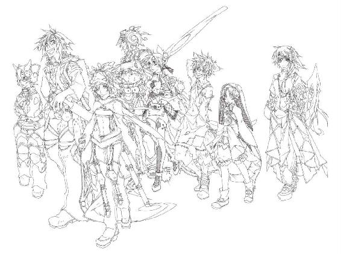

| 六花の勇者 ６ (ダッシュエックス文庫DIGITAL) | |
| 山形石雄 | |
| (2015) | |
この本は縦書きでレイアウトされています。
また、ご覧になる機種により、表示の差が認められることがあります。
ダッシュエックス文庫DIGITAL
六花の勇者 ６
山形石雄

これまでのあらすじ
闇の底から『魔神』が目覚めるとき、
運命の神は六人の勇者を選び出し、世界を救う力を授ける。
地上最強を自称する少年アドレットは、その『六花の勇者』の一人に選ばれ、
魔神復活を阻止するため戦いへ向かう。
だが、約束の地に集った勇者は、なぜか七人いた。
七人のうち誰か一人が敵であることに気づいた勇者たちは疑心暗鬼に陥るが、
アドレットを中心に、その知略と聖者の力を駆使して謎を少しずつ解明していく。
凶魔の統率者の一体であるテグネウの策略「黒の徒花」の正体が明らかになり、
それをきっかけに六花の勇者たちは意見が衝突し、分裂してしまう。
そこへテグネウの軍勢が近付いていて...？

イラスト／宮城
プロローグ 復讐者
「アドレット。貴様のような屑に、構う時間はないのだ」
アトロ・スパイカーはそう言った。十四歳のアドレットは、唇をかみしめた。
「お前は下働きでもしてろ」
兄弟子の一人は、見下した口調で命じた。アドレットはそれを無視した。
「復讐は、俺が代わりに果たしますよ。俺はあなたより、ずっと強いんだから」
弟弟子の顔には、軽蔑の色が窺えた。
アドレットがアトロのもとに弟子入りしてから、四年が過ぎていた。アドレットは弟子たちの中で、最も劣った存在だった。剣も、投げ針も、秘密道具を使いこなす機転も、どれも及第点にすら達していなかった。
故郷を滅ぼされた怒りを胸に、アドレットは努力を重ねていた。復讐に全てを捧げることを誓い、命を燃やし尽くしてもなお、彼は強くなれなかった。
地上最強。当時のアドレットに、その言葉はあまりに遠かった。
だが、そんなアドレットにも優しくしてくれる者はいた。アドレットの少しあとに弟子入りした、同じ歳の少年だ。無謀な修業を重ねるアドレットを諫め、傷ついた時は手当てをしてくれた。その少年がある日、修業場でアドレットに一枚の手紙を渡した。
「.........なあ、アドレット。お前、もうここを出ろ」
アドレットは、その手紙に目もくれなかった。ただひたすら木剣を振り続けていた。
「お前もわかってるんだろ？ 六花の勇者になるなんて、夢のまた夢だって。もう諦めて、自分の幸せのことを考えろよ」
「黙れ。殺すぞ」
少年はもう一度、手紙を見せてくる。
「俺の親戚が、行商人をやっている。人手が欲しいらしいんだ。手紙で、お前を働かせてくれないかって頼んだら、了承してくれた。ここで働けよ。新しい友達を作って、新しい家族を作るんだ。こんなところにいるより、ずっと楽しいぞ」
アドレットは叫びながら、少年に向かって斬りかかった。本気で殴り殺すつもりだった。復讐の邪魔をする者は、全て殺すとアドレットは決めていた。
だが、アドレットの全力の一撃は軽々と避けられた。二撃目を繰り出す前に、少年はアドレットの腹を蹴り、地面に転がした。
「.........殺すつもりだったのかよ。たった一人の友達の、俺を」
少年は、侮蔑した目つきでアドレットを見下ろした。
「アトロが言っていたよ。お前のそこが、だめなんだって」
アドレットは立ち上がろうとした。足に力が入らない。
「お前の中には、復讐の心しかない。それじゃあ強くなれないんだ。守りたいものがない者に、本当の強さなんて手に入らない。お前は誰のことも、自分自身すら大切に思ってないんだ。そんなお前が、地上最強になんてなれるはずがない」
その言葉が、アドレットの胸に突き刺さる。
「お前にはほとほと呆れ果てたよ。せいぜい死ぬまで、無駄な努力を続けてろ」
そう言って、少年は立ち去った。二度と、話しかけてくることはなかった。
大切なものがない人間は、強くなれないと、アトロは言う。だが、アドレットの心は村を滅ぼされた時に壊れていた。
愛した人はもういない。守りたいものは全て失った。その喪失感が、アドレットの心を支配していた。
誰かと友情を結ぼうとすると、ライナの顔が目に浮かぶ。自分のことを忘れるのかと、語りかけてくる。誰かを思いやる気持ちになっても、シェトラの存在がそれを阻む。
大切なものは、死んだ彼らだけだった。彼ら以外の誰も、アドレットは愛せない。他の誰かを思いやる気持ちは、復讐の邪魔をする余計な感情としか思えなかった。
目に映る全ては敵。殺すことだけが人生。かけられる優しい言葉も、思いやりの言葉も、アドレットの心には届かない。
そんな自分では、強くなれないこともアドレットにはわかっている。だが、心の中で燃える復讐の炎は、彼自身にも制御することはできないのだ。
ある夜、アドレットは夢を見た。
夢の中でアドレットは、誰かに出会い、恋をした。アドレットはその誰かに手を伸ばす。抱きしめようと走り出す。だがアドレットの指は、その誰かに届くことはない。
アドレットは、自分自身に驚いていた。人間らしい心など、とうに消えうせたものだと思っていた。今の自分は、殺すことと憎むことしか考えない、ただの化け物だと信じていた。だが今は、その誰かが愛おしい。
その誰かを抱きしめることができないまま、アドレットは目を覚ました。洞窟の隅に寝転がったまま、ぼんやりと朝日を見つめていた。
いつもなら夢のことなどすぐに忘れてしまう。だが不思議なことにその夢だけは、アドレットの心に深く刻まれていた。夢の中で出会った誰かに、触れられなかったことが悲しかった。
「.........雑念だ」
夢のことなんて、考えている暇はない。そう思ってアドレットは起き上がる。身支度もそこそこに、木剣を摑み、素振りを始める。忘れようにも忘れられない、三枚の羽根を持つ凶魔。それを切り刻む時を夢見ながら、アドレットは剣を振り続ける。友のライナの顔を、姉のシェトラの顔を思い出し、彼らの無念と苦しみを背負って剣を振り続ける。
しかしアドレットの脳裏に、夢の中で出会った誰かのことがよぎる。その人を抱きしめられなかった寂しさを、思い出してしまう。その誰かのことを考えた時、シェトラの、ライナの顔が頭から離れる。
「.........なんだよ。信じらんねえな」
小さな声で、アドレットは呟いた。
「俺にもまだ、人間の心が残ってたのか」
アドレットは気づいた。全てを復讐に捧げる。憎しみだけで心を埋め尽くす。人間という生き物には、そんなことは不可能らしい。誰かを好きになることだけは、どうしてもやめられないのだ。
その日からアドレットは、少しずつ変わり始めた。
他の弟子たちと言葉を交わすようになった。周囲の親切に、感謝する心を取り戻した。誰かの力を借りること、誰かと支え合うことの大切さをわずかながら理解できるようになった。
険しかった顔が、次第に和らいでいった。閉ざされていた心が、開いていった。
そして何よりも、変わったことがある。修業の成果が目に見えるほど現れるようになったのだ。他の弟子たちに追いつくのは、まだ遠い。だがそれでも、変化は変化だった。
「多少は、ましになったか」
そんなアドレットを見て、アトロは言った。褒めてもらったのは初めてだった。
「守りたいと思う相手を、二度と失いたくないと思う気持ち。忘れるな。
とはいえ、どうしようもない屑が、多少人間らしくなったというだけのこと。成果を見せねば、ここから去ってもらうことに変わりはない」
それでも、アトロは厳しかったのだが。
見知らぬ誰かの夢を見てから、三カ月ほどが過ぎたころ。アドレットは洞窟の中で一本の釘を持ったまま座っていた。
アトロが開発している、秘密道具の一つだという。未だ完成には至らず、名前もついていない。しかしアトロは、この釘こそが自分の最高傑作になるだろうと言った。
聖者の血液を利用した武器だという。アトロは聖者の血液の中から、凶魔にとって毒となる成分のみを抽出した。それを結晶化し、釘の先端に仕込んだという。あらゆる凶魔に対して、必殺の威力を持つ武器となると、アトロは言った。
「アドレットよ。この道具の活用方法を見つけ出すのだ」
釘を渡しながら、アトロはアドレットに命じた。
「誰でも思いつくようなものではだめだ。どれほど知能の高い凶魔にも想定できぬような、新たな使い方を見つけ出すのだ。そうでなければ凶魔の意表はつけぬ。私の研究記録に、書き残す価値はない。
これは、お前への試験でもある。私を驚かせる発想ができなければ、お前はこの山から去ってもらう。頭の悪いものに、秘密道具は使いこなせぬ」
アドレットは、釘を前に頭をひねっていた。もしもアトロを驚かせることができなければ、本当に追い出されるだろう。アトロは甘い男ではない。ここまで追い出されなかったことが、不思議なぐらいなのだから。
ここで山を去ることになれば、地上最強の夢は終わりだ。復讐は果たせない。ライナの、シェトラの、村人たちの敵は討てない。
もう一つ、アドレットには不思議な予感があった。三カ月前、夢で見たあの少女のことだ。地上最強の男にならなければ、彼女を守れない。彼女のために、自分は地上最強の男にならなければいけない。そんな気がするのだ。
根拠はない。理由もない。そもそも、少女自体がアドレットの夢想だ。だがアドレットには、それで十分だった。夢想だけでも、強くなる理由になる。
もう二度と失いたくない。その思いが、アドレットを強くしてくれる。
「.........こんなところで、山を追い出されてたまるかよ」
アドレットは呟いた。
「姉ちゃんや、ライナの敵を討つ。そして.........いつか出会う、誰かを守る。どれもこれも、地上最強の男にならなきゃ、できないことなんだ」
アドレットはしばし釘を見つめていた。そして目を閉じ、覚悟を決めた。
釘を逆手に握りしめる。アドレットはその釘を、自らの胸に突き立てた。
一章 画策
魔神の目覚めから、十八日目の深夜である。魔哭領中央北部にある、昏倒の山地の一角。〈運命〉の神殿の屋根に、一体の凶魔が立っている。
背中から触手を生やした狼の凶魔だ。彼の口の中には、長い蔓の生えたイチジクの実が入っている。テグネウは現在、その狼の凶魔を自らの肉体として使っている。
テグネウが見下ろす森に響き渡るのは、八百体を超える凶魔の足音だ。テグネウ陣営の主力軍が、逃げた六花の勇者を追いかけている。神殿に残された痕跡から、遠くには逃げていないことがわかっている。
「注進！」
鳥の凶魔が、空からテグネウのもとに降りてきた。伝令と索敵を受け持つ特質凶具の二番である。テグネウの策の全てを知る、数少ない凶魔の一体だ。
「六花は二手に別レて逃げておリます。ハンスとチャモが北へ、残る六花とドズーたチは西へ！ 黒の徒花は無事生存し、七人目も正体がばれている様子はありまセん！」
テグネウはその報告を聞き、深く頷いた。
「なあ二番。言った通りになったろう？ フレミーは必ず生き残る。七人目の正体が暴かれることもない」
「.........私ガ愚かでしタ。テグネウ様の慧眼ニ恐れ入りまス」
「君は愛の力を信じていなかった。それでは戦いの行く末を見極めることはできないよ」
そう言ってテグネウは笑う。
六花の勇者はドズーたちと共に、〈運命〉の神殿に向かっている。昨日の昼その報告を受けた時、二番は取り乱した。〈運命〉の神殿にたどり着かれれば、黒の徒花の能力がばれる。あるいは、フレミーこそが黒の徒花であるという真実を暴かれるかもしれないと。
だが、テグネウは一切動揺しなかった。神殿を守る九番を頼みにしていたからではない。黒の徒花がフレミーであることまではたどり着かないと思っていたからでもない。
地上最強の男、アドレット・マイアを信じていたからだ。彼はどうやら、テグネウの期待に完璧に応えてくれたようだ。
先ほど三十番から送られてきた伝令に聞いた、神殿内部の状況。そして現在の六花の動きから、何が起きたのかは想像できる。
黒の徒花がフレミーであることは突き止められたものの、アドレットが策を弄して六花を騙した。おそらくそれからアドレットは、ハンスかチャモのどちらかに七人目の濡れ衣を着せた。危機に陥ったハンスとチャモは、やむなく他の六花から離れたのだろう。
どんな手段をとったのかまでは、さすがにテグネウにも想像ができない。だが、フレミーを守りきれたのならば十分だ。
「しかし.........多少厄介なことにはなったね」
テグネウは言った。当初の予定では、黒の徒花が紋章の力を吸収し尽くすまで待つつもりだった。フレミーを除く六花の勇者たちは、テグネウの秘策に気づかないまま、魔神が放つ障毒を吸い込んで死ぬはずだった。
しかし六花は黒の徒花の能力を知った。これから彼らは、黒の徒花を止めるために全力を尽くすだろう。彼らにとれる手は、黒の徒花の本体であるフレミーを殺すか、あるいは発動させたテグネウを殺すか、どちらかだ。
フレミーが死ぬことはない、とテグネウは確信している。アドレットは何らかの方法で、フレミーを殺してはいけないと六花を騙したはずだ。となると六花がとってくる行動は一つだけ。彼らはこれから、全力でテグネウを殺しにかかる。
今まで六花は、正面から敵と戦うことを避けてきた。だが、これからは違う。何人犠牲が出てもかまわないという覚悟でテグネウに挑んでくるだろう。
「テグネウ様。主力軍から離れ、どこかに身を隠しテはいかガでしょう。黒の徒花が六花の紋章の力を吸収し尽くスまで、あと一日.........長くテも二日です。それまで逃げ切れれバ、テグネウ様の勝ちでス」
二番は言った。テグネウは首を横に振る。
「消極策だね。この先どんなまぎれがあるか、わかったものじゃないんだよ。不測の事態でぼくが隠れている場所を六花が突き止めるかもしれない。アドレットですら、フレミーを守りきれなくなる状況が発生するかもしれない。後者は可能性が極めて低いが.........前者は十分ありえることだ」
テグネウは笑いながら、触手を大きく広げる。
「ぼくは逃げない。主力軍と共に、六花を迎え撃つ。最後の悪あがき、受け止めてあげようじゃないか」
二番は頷く。
「精鋭百体を、ハンスとチャモの所に向かわせてくれ。足止めだけできれば十分だ。六花最強の二人、さすがに百体だけで殺すのは難しいだろう。残る七百体をぼくが率いて、西に逃げた連中と戦おう。
ぼくも決戦の準備をしなければね、忙しくなる」
二番は配下たちに指示を出すために、飛び立とうとする。それをテグネウが止める。
「おっと、待った。伝令なんて他の凶魔に任せておけ。君には、重要な役目がある」
「.........ハ、はい」
二番は少し戸惑っている。相変わらず、察しが悪い奴だなとテグネウは思った。
「決戦の準備なんかより、よほど大切なことがあるじゃないか。君にはわからないのかな？」
テグネウから命令を聞いた二番は、大きく口を開けた。指示の意味が理解できず、混乱している様子だった。全く、困った奴だとテグネウは思った。
三体ほどの凶魔が、後ろから追ってくる。フレミーが銃口を向けた時、アドレットが小さな声で言った。
「銃は撃つな。爆弾もだめだ。音で居場所がばれる」
フレミーは銃を撃つのをやめる。襲いかかってきた凶魔の顔に蹴りをくらわせる。のけ反った敵を、地面から生えた刃が切り裂いた。
「ロロニア、叫ぶなよ。ドズーも攻撃するな。今は身を隠しながら、逃げるんだ」
ゴルドフが、追いついてきた凶魔を音を立てないように仕留める。フレミーは死体に目もくれず、ひたすらに逃げ続ける。〈運命〉の神殿を出て程なく、フレミーたちはテグネウの主力軍に発見された。
〈運命〉の神殿で、得た情報は多かった。テグネウの切り札、黒の徒花は六花の紋章から力を吸収すること。その黒の徒花とは、フレミー自身であること。
最初は、フレミーが自殺すれば黒の徒花の力は解除できるものだと思われた。だが事実は違った。黒の徒花は、フレミーが死んだあとも何らかの方法で機能を保つのだ。アドレットがそう推測し、ナッシェタニアがそれを裏づける凶魔の発言を聞き出してきた。フレミーは、彼らの言葉が事実と考えている。
つまるところ、黒の徒花を止める方法は一つしかない。テグネウを殺すこと、それだけだ。殺せなければ、いずれ黒の徒花は紋章の力を吸収し尽くす。フレミー一人を残して、六花は全滅する。
時間はどれだけ、残されているのだろう。次の一瞬にでも、アドレットやモーラ、ロロニアたちの紋章は消滅するかもしれない。それを思うと、フレミーの胸は張り裂けそうになる。
「.........敵の主力軍の全てが、千里眼の範囲に入ったぞ。テグネウらしき凶魔は、山頂を越えた先、二キロほどの地点にいる」
その時、モーラが言った。フレミーはすぐさま、踵を返そうとした。テグネウに突撃するつもりだった。
「やめろ！ フレミー！」
アドレットの声が響いた。
「焦るな。やみくもに戦って、勝てる相手じゃねえ。逃げて、作戦を練る時間を稼ぐんだ」
そのひと言で、フレミーは冷静さを取り戻す。今すぐに攻撃を仕掛けても意味はない。モーラが見つけたテグネウらしき凶魔が、本当にテグネウかどうかもわからないのだ。
モーラの誘導に従い、凶魔の追っ手から逃げ続ける。アドレットのそばにはロロニアがついている。ロロニアは傷口に手を当て、治療をしながら走っている。
「安心しろ、テグネウを倒す方法は、俺が見つける。地上最強の男は、噓をつかねえ」
「それより、戦えるのですか？ アドレットさん」
ドズーが言った。神殿で、アドレットの体はぼろぼろに傷ついている。彼は今、ゴルドフが持っていたピエナに伝わる秘薬を飲んで、無理矢理に体を動かしている。傷を治す薬ではなく、傷の痛みや影響を受けずに戦い続けられる薬だという。もちろん、体に与える負担は尋常のものではない。
「ああ、大したもんだぜ。こんな便利な薬があるなら、修業時代に使いたかった」
「効果は二、三時間しか持ちません。そのあとは地獄が待っていることを、覚悟してくださいね」
ナッシェタニアが言う。覚悟の上だ、とアドレットは笑う。その顔に、フレミーの胸が痛む。だが、後悔している暇はない。今はただ、テグネウを倒すことだけを考えなければ。
「ところで、いいのかドズー、ナッシェタニア、俺たちに従っていて」
今度はアドレットがドズーたちに聞く。
「どういうことですか？」
「はっきり言うぜ。俺たちは危機的状況だ。いつまでも俺たちにくっついているより、別の作戦を練ったほうがいいんじゃないか？」
ナッシェタニアは少し腹を立てたように言う。
「つまらないことを聞かないでください。テグネウを倒さなければいけないのは、わたしたちも同じこと。六花の協力なしにそれは不可能です」
「カマをかけただけだよ。怒るな」
アドレットは言う。
「.........怒ってはいませんよ。モーラさん、敵の状況は把握できましたか？」
ナッシェタニアが、仲間たちの中心を走るモーラに尋ねた。彼女は千里眼で、山全体を見渡している。まずは、敵の状況を摑まなければ作戦の立てようがない。
「敵の数は、七百ほどだ」
モーラは言った。正面から戦って、勝てる数ではない。この場にいる全員が、死ぬまで戦い続けたとしても、倒せるのはおそらく四百かそこらだろう。
「ここから一キロほど東に、百体ほどの凶魔の集団がおる。その中心に触手の生えた狼の姿をした凶魔がいる。そいつが配下たちに指示をだしている。暗号を使っていて、何を言っているのかはわからん」
触手の生えた狼の凶魔。何度か会ったことがある凶魔だ。昔からフレミーを憎み、何度も自分や家族を侮辱したことを覚えている。特質凶具の数には含まれていないものの、テグネウ配下の中でも指折りの実力を持っていたはずだ。
「本陣ってところだな」
アドレットが言った。
「残る六百体は、五十体ほどの部隊に分かれ、散開して我々を追いかけている。部隊の一つは我々をまっすぐに追い、他の部隊は左右から挟みうちにしようと動いている」
その気配はフレミーも感じている。木々がざわめく音や、凶魔たちの声がそこかしこから聞こえてくる。
「十四体の飛行型凶魔が、各部隊と狼の凶魔の間を往復している。暗号で何か情報をやり取りしている。おそらく、伝令役と索敵役を兼ねているのだろうな」
木々の間から、星が見える。月明かりの中、空を飛ぶ凶魔たちの姿が、夜目の利くフレミーにははっきりと見える。
「ハンスとチャモはどうしている」
「わからぬ。千里眼の範囲にはおらぬ。どこへ行ったか、見当もつかぬ」
その時、また数体の凶魔が追いついてきた。凶魔が大声を上げて仲間を呼ぶ。殿を引き受けるナッシェタニアとゴルドフが、彼らを迎撃する。
まずい、とフレミーは思った。周囲にいる凶魔たちは、一斉にこちらに向かっているだろう。手間取っていたら、凶魔たちに包囲されてしまう。
「モーラ、敵の包囲が手薄なところを探せ」
アドレットが指示を出す。モーラは千里眼で周囲の状況を探り、南を指さす。
「よし、そっちに逃げるぞ。フレミー、陽動を頼む」
アドレットが煙幕弾を周囲にいくつも投げる。いくら夜目が利く凶魔たちでも、暗い森の中に煙が立ち込めている状況では、自分たちを捕捉し続けることはできないだろう。
さらにフレミーが手の中でいくつか爆弾を生みだす。それを、モーラが指さしたのと逆の方向に全力で投げる。凶魔たちはフレミーたちが向かう方向を勘違いしたのだろう。足音が離れていく。
フレミーたちは足音を立てないよう注意しながら、モーラの誘導に従い走り続ける。
「なんとか、包囲は抜けたようじゃ」
モーラは言った。ただ逃げ回るだけの時間が、何十分も続いている。
「チャモがおればな.........殿も、陽動も、従魔に任せることができたのだが」
モーラがぼやく。
〈運命〉の神殿の戦いには、もう一つ大きな収穫があった。ハンスが七人目である、その可能性が高くなったのだ。彼は凶魔たちにフレミーの抹殺を命じていたという。その場は目撃されていないし、証拠もない。しかしフレミーはもう、七人目はハンス以外にありえないと考えていた。
チャモはそれを信じなかった。ハンスと共に、アドレットたちから離れていった。今はどこで何をしているのかもわからない。
「いない人のことを考えてもしかたないわ」
「やはり合流を目指すべきでは？」
「危険よ。チャモはハンスを全面的に信頼している。合流したら、仲間割れになるだけよ。ここにいる仲間たちで戦うしかないわ」
「大丈夫であろうか.........」
「たとえハンスが相手でも、簡単に倒されはしない。それに、彼女のことを気にかけていられるほど、私たちに余裕はないわ。それよりテグネウのことよ。モーラ、さっき話していた狼の凶魔、そいつはイチジクの実を持っていたの？」
フレミーが尋ねる。
テグネウは支配種と呼ばれる特殊な能力を持つ凶魔だ。彼自身は、大きなイチジクの実の姿をしている。自分自身の体を他の凶魔に食わせることで、その凶魔の体を乗っ取り、操ることができるのだ。操られている凶魔を倒すだけでは意味がない。テグネウの本体を潰さなければ、勝利は得られない。
「見つからぬ。腹の中に隠しておるとしたら、千里眼でも見つけようがない」
モーラが首を横に振る。するとアドレットが言った。
「もし俺がテグネウの立場なら.........狼の凶魔に自分の体を食わせて操る。そして、別の凶魔に本体であるイチジクの実を渡しておく。そして、テグネウの本体を持っている凶魔は、目立たないように隠れておく。これで、俺たちに発見される可能性はぐっと低くなる」
そこにドズーが口を挟んできた。
「いいえ、それは不可能です。テグネウの本体は、操られている凶魔の二メートル以内にいなければいけません。テグネウの能力は、操っている凶魔が遠くにいると無効化されてしまうのです。そしてテグネウは、一度に一体の凶魔しか操れません」
「確かなのか？」
アドレットが問い返す。
「テグネウの、支配種としての能力は非常に低いのです。魔王ゾーフレアの足元にも及びません。もともと支配種の力は、習得するのが極めて困難な力です。テグネウが数百年で進化を重ねていたとしても、大きな成長は見込めません」
「.........そうだと信じる以外にないな。だとすると、狼の凶魔がテグネウの本体を持っている可能性は高くなるが.........」
アドレットは顎に手を当てて考え続ける。
「やはり、わたしが見つけた狼の凶魔がテグネウの本体を持っているとみるぞ。奴が凶魔全軍に指示を出しているのは間違いないのじゃ。ぐずぐずしてはいられん、取って返し、あの狼の凶魔を倒すべきじゃ」
モーラは言うが、アドレットは首を横に振る。
「違う。その狼の凶魔はただの囮だ。テグネウのふりをしているだけだ。テグネウがそんな目立つ場所にいるはずがない」
「しかし.........」
「奴は必ず、どこか安全なところに隠れている。目立たないように潜んでいる。俺がテグネウの立場なら、必ずそうする」
モーラは反論できず、黙り込む。フレミーもアドレットと同じ考えだった。
「じゃ、じゃあ.........どうやってテグネウを見つけるの？」
ロロニアの言葉に、答える者はいなかった。フレミーは何も案を思いつかない。アドレット、ドズー、彼らも口をつぐんでいる。モーラの能力をもってしても、手がないのだろう。
アドレットはドズーに聞く。
「テグネウとは長い付き合いの親友だったんだろ？ 何か、テグネウ本体を見つける手掛かりはないのか？」
「.........残念ながら、何もありません」
肝心な時に役に立たない、とフレミーは思う。だが同時に、ドズーへの不信感がさらに募った。本当は、知っていて隠しているのかもしれない。
本来、ドズーたちは敵なのだ。テグネウとドズーが敵対しているから、手を組んでいるにすぎない。ドズーとテグネウが協力して、六花を罠にかける可能性も十分にある。
「ど、どうするの、アド君、フレミーさん。見つけられなきゃ、勝ち目なんてない」
ロロニアがうろたえる。仲間たちはまた黙り込む。テグネウの支配種としての能力は貧弱なものだ。だが、弱い能力でも、使い方次第では強力なものになりうる。テグネウの能力は、潜伏のために使うのならば、極めて効果的なのだ。
フレミーは梢の隙間から空を見る。一体の飛行型凶魔が、悠々と夜空を飛んでいる。その凶魔はフレミーたちに気づかず、空を旋回していた。
『テグネウ様』
アドレットたちのいる場所から、南にかなり離れた森の中。一体の凶魔が暗号で言った。彼は特質凶具の十一番と名づけられている。テグネウの護衛を任務とし、そのために能力を磨きあげた凶魔だ。山羊のような姿をしている。
『狼の凶魔は、上手く六花を騙せてイるでシょうか』
十一番は言った。テグネウはすでに、狼の凶魔から離れ、別の凶魔の体に移っている。そして狼の凶魔には、テグネウのふりをして指揮をとるよう命じた。
六花にテグネウの居場所を誤認させるためだ。今頃狼の凶魔は、百体ほどの凶魔を集めた偽の本陣で、必死に凶魔たちに命令を下していることだろう。
六花はテグネウ一体を狙ってくることぐらい、すでに予想済みだ。テグネウの居場所さえ知られなければ、絶対に負けることはない。
「どうだろうね、騙せているかもしれないし、ばれてるかもしれない。まあ、どうでもいいことだよ」
テグネウは気のない声で言った。暗号ではなく、平文を使っている。六花に聞かれる恐れはないと、判断しているのだろう。十一番も暗号を使うのをやめる。
「ハ、確かに、その通リでございマす。狼の凶魔がテグネウ様ではないト見抜いたとこロで、六花に打つ手はございまセん。何も問題はないカと」
「そうだね。ちょっとうるさいから、黙っててくれないかな」
テグネウは苛立った声で言う。十一番は慌てて口をつぐむ。
「二番はまだ、戻ってこないのかな。全く何をしているんだ」
テグネウと十一番のいる真の本陣は、偽の本陣から一キロほど離れたところにいる。偽の本陣とも、六花たちとも適度に距離を保ち、目立たないよう、静かに進んでいる。
『テグネウ様より十一部隊に伝令！ 六花はサらに西へと進んでいル！ 先回りして迎撃せよ！』
その時、空を飛ぶ凶魔の一体が、暗号で命令を伝えてきた。
『了解した。テグネウ様に、必ず六花を食い止めてみセると報告しテくれ！』
十一番は答える。飛行型凶魔は、偽の本陣の方向へ飛んでいく。
主力軍の凶魔七百、そのほとんどはテグネウの所在を知らない。さっきまで操っていた狼の凶魔の中にテグネウがいると思い込んでいる。
テグネウの本当の居場所を知っているのはごくわずかだ。真の本隊を構成するテグネウの護衛役、側近である特質凶具の二番と、テグネウのふりをしている狼の凶魔、伝令役を任せた数体の凶魔だけだ。真実を知る者は、可能な限り少ないほうがいいというのが、テグネウの考えだ。
「.........テグネウ様。何カ、懸念が」
テグネウはずっと、空を見つめながら二番が報告に来るのを待っている。二番に何を命じたのか、十一番は知らない。
「うるさいって言ったよね」
十一番は、テグネウの答えにまた口をつぐむ。
だが、六花がどんな行動をとろうと、決してテグネウが死ぬことはない。十一番はそう確信している。真の本隊を構成する凶魔たちは、全てこの日のために育て上げられた凶魔だ。来たるべき決戦の日、テグネウを守る。そのためだけに数百年の年月を捧げてきた。
「テグネウ様、進みすぎでございマす」
斜面を登ろうとした時、十一番は言った。テグネウはおっと、と言いながら立ち止まる。
危うく、モーラの千里眼の範囲に入ってしまうところだった。十一番は冷や汗をかく。モーラの千里眼にさらされたところで、テグネウを見つけられるはずがないとはわかっている。だが、戦いとは何が起きるかわからないものだ。モーラの能力にだけは、注意を怠ることはできない。
十一番の心配をよそに、テグネウは空を眺めている。心ここにあらず、といった気配だ。
「二番、早く来てくれよ。ぼくは君の報告を待っているんだよ」
陽動と逃走を繰り返しながら、西へ東へフレミーたちは逃げ続ける。深い森のおかげで、何とか凶魔たちの目に触れずに済んでいる。だが、このままではらちが明かないことぐらい、全員がわかっていた。
ナッシェタニアとゴルドフが囮となり、追っ手の部隊を南へ誘導した。そして残りの仲間たちは、逃走経路を逆にたどった。そして、山の中腹に身を隠した。
谷を挟んで、およそ三百メートル離れた場所に、百体ほどの凶魔の集団が見える。彼らは悠々とかがり火を焚き、ひと塊になって立ち止まっている。フレミーたちは目を凝らし、彼らの姿を観察する。今のところ、こちらに気づいた様子はない。
凶魔の本陣を、この目で確かめる。アドレットはそう提案した。モーラの千里眼で観察し、報告を聞くだけでは、十分な情報が集められないと言った。危険は承知の上で、フレミーたちは本陣に接近した。
「フレミー、ドズー、よく見るんだ。どこかに必ず、手掛かりはある」
アドレットは言った。フレミーは目を凝らし、本陣の様子を観察する。本陣の中央に、狼の凶魔がいる。周囲は厳重に固められ、蟻の一匹も近づけさせないという構えを見せている。
空から、次々と飛行型凶魔が降りてくる。そして狼の凶魔と何かを話し、すぐさま飛び立っていく。モーラの言う通り、狼の凶魔が全軍の指揮をとっているようだ。
「おーい、こーんばーんはー」
不意に、狼の凶魔が声を上げた。太い声が山の中に響く。フレミーは驚いたが、こちらを見つけたわけではないようだ。
「こーんばーんはー。ちょっと出てきてくれるかなあ。話したいことがあるんだよ。六花とドズーたちとぼくらでひとまず手を組んで、カーグイックを倒さないかい？ おーい、聞こえてないのかなー？」
そう言いながら、狼の凶魔は周囲を見渡している。声は変化しているものの、今の喋り方はテグネウのそれだった。他の凶魔の、どことなくぎこちない喋り方ではない。
だが、フレミーは思った。あれはテグネウではない。優しげな言葉の端々から漂う、傲慢さがない。言葉でこちらを弄んでくるような、得体の知れない不快感がない。
「口調でわかる。上手く真似ているけれど、あれはテグネウではない」
そう言うと、アドレットが頷く。
「.........お前もそう思うか。俺もだ。どこがどうとは言えねえが.........何か違う」
しかし断定はできない。フレミーはさらに観察を続ける。
狼の凶魔のそばにいる、何十体もの凶魔。その中には、見知った顔が多くある。そこにテグネウがいるかもしれない。あるいは、テグネウの居場所を見つける手掛かりがあるかもしれない。
「あの.........アド君、ドズーさん、今、考えたんだけど」
ロロニアが言った。
「そもそも、テグネウって、この近くにいるのかな。テグネウは、自分が死ななければ、黒の徒花の力であたしたちは全滅するのがわかってる。じゃあ、凶魔の主力から離れて、まっすぐひたすら逃げるんじゃないかな」
アドレットが苦い顔をする。彼もそのことは、考えているようだ。
「だとしたら、主力軍にかまってる場合じゃない。ここから離れて、逃げたテグネウを追いかけないと。ぐずぐずしてたら、追いかける手掛かりもなくしちゃうよ」
「いいえ、テグネウはいます。必ず、この主力軍のどこかにいて、指揮をとっています」
ドズーが強い口調で言った。
「テグネウは.........配下のどの一体として、信用していません。側近である二番や、長年肉体として使っていた三枚羽にすら、全幅の信頼を寄せてはいない」
「知っているわ。それがどうしたの」
「テグネウは常に配下の裏切りを恐れています。それは、私やカーグイックがいたからです。指揮官は私の同志かもしれない。私に説得されて寝返るかもしれない。テグネウを見限り、カーグイック陣営につくかもしれない。テグネウはそれを恐れています。
テグネウは主力軍から離れることはできないのです。彼は、自分の配下を常に監視し続けなければ気が済まないのです」
ドズーは続ける。
「そしてテグネウは配下の中で、有能な凶魔を粛清しました。多数の凶魔を率いて指揮をとれるような者、自ら考え、自ら判断できるような者。それらは全て消されたか、あるいは私やカーグイックに寝返ったのです。
主力軍の指揮を他の凶魔に任せたくても、それができる凶魔は一体たりとも残っていないのです」
「愚かね。テグネウは」
フレミーは呟く。
「.........その通りです。テグネウは、とてつもなく愚かです」
「テグネウは俺たちの近くにいる。それなら.........勝ち目はあるな。フレミー、もっとよく凶魔を観察するんだ」
見知った凶魔は、何十体もいる。その中で、フレミーは芋虫の凶魔に目を留めた。
彼はテグネウ陣営でも名高い凶魔だ。特質凶具の十七番。あらゆる凶魔の傷を癒す、治癒の力を持っている。今まで姿を見かけることはなかった。テグネウは十七番を温存しているのだと思っていた。ついに投入することを決意したようだ。
「治癒凶魔か.........他にはいないか」
アドレットに言われて、フレミーはさらに気になる凶魔を探す。だが、彼ら全ての能力を知っているわけではない。
その時本陣の隅にいる一体の凶魔が目に留まった。細くしなやかな外見をした、豹の凶魔だ。猫科特有の、美しい所作で歩き回っている。
フレミーはなぜか、その凶魔がひどく気になった。知っている凶魔は他にもいる。だが彼らではなく、その豹の凶魔から目が離せなくなった。豹の凶魔を見た時のことを、フレミーは思い出そうとする。だが、喉につかえて出てこない。
「.........何か話しているな」
アドレットが呟いた。見ると、狼の凶魔のそばに、体長五十センチほどの赤い針鼠の凶魔がいる。フレミーの見たことがない凶魔だ。
狼の凶魔は針鼠の凶魔と何かを話した。そして、空の飛行型凶魔に向かって指示を出した。会話の内容は聞こえない。
フレミーはしばらく、その針鼠の凶魔を観察した。狼の凶魔は、何か配下に指示を出す前に、必ずその針鼠の凶魔と話している。
もし狼の凶魔をテグネウが操っているとしたら、この行動は不自然だ。テグネウは配下の凶魔に意見を聞くことはめったになかった。
小さな声で、ドズーが呟いた。
「あれは.........二十四番」
その時だった。飛行型凶魔の一体が、フレミーたちに視線を向けた。フレミーがそれに気づくと同時に、飛行型凶魔は大声をだす。本陣の凶魔たちが一斉に立ち上がる。
「逃げるぞ！」
アドレットの声に反応し、その場にいる全員が走り出す。フレミーは持っていた爆弾を全て、凶魔の本陣に向かって投げた。ドズーの雷撃が、アドレットの煙幕弾が、追手を食い止める。
「びっくりしたよ、近くにいたなら、言ってくれよ。話を聞きに来てくれたのか？」
狼の凶魔はのんびりとした声で話しかけてくる。かまわずにフレミーたちは逃げていく。殿を受け持ったフレミーは、爆弾をまき散らしながら銃を構える。
「おーい、挨拶はどうした！ 挨拶は明るい暮らしの第一歩だよ！」
追手を牽制しながら、フレミーは、ずっと気になっていた豹の凶魔を探していた。その時、豹の凶魔の周囲に、数体の凶魔が集まっていくのを見た。フレミーの銃弾を受けないよう、射線を塞いでいるように見えた。
「.........何者？」
追手には加わらず、しかも仲間たちに守られている豹の凶魔。何かがある、とフレミーは確信した。
十分ほどが過ぎた。フレミーの足止めで、何とか逃げきった。六花を包囲しようと動き続ける凶魔たちを振り切り、仲間たちはひと息つく。陽動を行っていた、ナッシェタニアやゴルドフとも合流できた。
「.........追手は振り切ったぞ。少し、話し合う時間はありそうじゃ」
モーラが言う。アドレットが真っ先に、ドズーに話しかける。
「何か言っていたな。二十四番とか」
「はい、お伝えします。テグネウ陣営に潜りこんでいた同志たちが、特質凶具たちの能力を探ってくれました。狼の凶魔と話していた、赤い針鼠の凶魔。あれは特質凶具の二十四番と見て間違いありません」
二十四番、フレミーは、見たことも聞いたこともない凶魔だった。
「その能力は？」
「二十四番は、二体一組の凶魔です。もともとは別の凶魔でしたが、新たな能力を得るために二体が融合し、新たな凶魔となったのです。
二十四番は、離れたところにいても、互いに知識や感覚を共有することができるのです。片方の凶魔が聞いたことや見たことは、全く同時にもう片方の凶魔にも伝わるのです」
「え.........それ、何の役に立つんです？」
ロロニアが首をかしげる。
「わからねえのか、とんでもなく強力だぜ。その凶魔がいれば、狼煙も伝令も介さずに情報をやり取りできるんだ。しかも、一瞬でだ」
アドレットが言う。ロロニアはようやく二十四番の重要性に気づいたようだ。
「二十四番の力が発揮できるのは、およそ十キロの範囲です。それ以上に離れてしまうと、互いの知覚をやり取りできなくなります。二十四番についてわかっているのは、このぐらいです」
ドズーが説明を補足する。フレミーが言う。
「狼の凶魔は、二十四番と何度も話していた」
アドレットが続いて口を開く。
「俺もおかしいと思った。俺には狼の凶魔が、針鼠の凶魔に指示を仰いでいたように見えた」
「つまり、テグネウの本体は、二十四番のどちらかが持っているの？」
ロロニアの言葉に、アドレットは首を横に振る。
「いや、違うと思う。テグネウが操っているのは、二十四番でも狼の凶魔でもない。狼の凶魔にテグネウのふりをさせて、自分自身はどこかに潜伏している。そして二十四番を通じて、狼の凶魔に指示を出しているんだ」
「妥当な推測だと思います」
ドズーが言う。
「確実な証拠はないが、判断材料は十分にある。狼の凶魔はテグネウではない。以後、これを前提に作戦を進めるべきだと思う」
仲間たちから反対意見は出ない。フレミーにも異論はない。そもそも狼の口調から、彼はテグネウではないと考えていた。
「二十四番ってのは、テグネウ探しの重要な手掛かりになりそうだな。二十四番は二体いると言ったな。どちらも同じ姿をしてるのか？」
ドズーは答える。
「同じ姿ですが、色だけが違います。片方は赤く、もう片方は青い。あそこにいたのは、赤いほうでしたね」
「となると、テグネウのそばには、青いほうの二十四番がいるということか。そいつを見つければ、その近くにテグネウがいるってことじゃねえか」
アドレットの意見に、フレミーは首を横に振る。
「難しいわね。変形型の凶魔の中には、別の凶魔の肉体を変形させることができる者がいる。私はそれを使って、人間界に潜伏していた」
「どういうことだ？」
「もし青いほうの二十四番がテグネウのそばにいるとしても、針鼠の姿をしているとは限らないわ。変形型の凶魔の力で、別の姿に変わっているかもしれない。いえ、用心深いテグネウのこと。そうしている可能性は高いわ」
「つまり.........」
「二十四番の片割れを、七百体の凶魔の中から見つけ出すことは至難よ」
アドレットは歯嚙みする。テグネウの居場所を突き止めるには、情報が足りなすぎる。凶魔たちが接近していることを、モーラが告げた。また逃げ回る時間が始まる。
森の中を、アドレットたちは走りまわる。凶魔の部隊と戦っては逃げ、戦っては逃げを繰り返した。十三の部隊に別れた凶魔たち、そのどれかにテグネウは潜んでいるかもしれない。手掛かりを求めて、戦闘を続けた。
「テグネウがどこに潜んでいても、手掛かりは見つけられるはずだ。俺たちがテグネウに接近したら、凶魔たちはテグネウを守ろうと動くはずだ。凶魔たちは七百もいる。どんなに必死に隠そうが、必ずどこかに不自然な動きをする奴がいる。それを見逃すな」
戦いながらフレミーは必死に凶魔の動きを観察した。他の凶魔に守られている者はいないか。不自然に逃げようとする者はいないか。しかし、どこにも見つからない。次第にアドレットにも、焦りの色が見え始めていた。
「だめだ.........テグネウは、自分の所在を下っ端の凶魔に伝えてないんだ。ほとんどの凶魔は、あの狼の凶魔をテグネウだと思っている」
「テグネウなら、やりそうなことです。彼は配下を信用していない。重要な情報は、限られた凶魔にしか伝えていないはず」
ドズーが言った。
「手詰まりか.........だが、テグネウはこの近くにいるはずなんだ。フレミー、何か思い出さないか。どんな些細なことでもいい。テグネウ陣営で見たこと、聞いたこと.........ともかく今は、情報が足りなすぎる」
そう言われても、とフレミーは思う。アドレットは、相当に余裕がなくなってきている。そんなあやふやな頼みを言われたところで、思い出せることなどない。
だが、一つだけ気になったことはある。フレミーは豹の凶魔のことを考える。不自然に、他の凶魔に守られていた。あの凶魔には、何かあるはず。
その時、フレミーは思い出した。あの豹の凶魔を目撃した時のことを。
フレミーが〈火薬〉の聖者になって、一年が過ぎた時のことだった。その頃のフレミーは強く立派な凶魔となれば、仲間たちに蔑まれることはなくなると信じていた。自分も、家族も、差別を受けることはなくなると信じていた。
だが、聖者の力を手に入れたあとも、蔑みの言葉が止むことはなかった。それどころか、裏切り者を育てていると決めつけられ、家族はよりひどい攻撃にさらされた。
ある夜、フレミーは家族のもとを離れ、斬指の森を一人歩いた。銃を握りしめ、腰から大量の爆弾を吊り下げて。
フレミーは、斬指の森の一角にある凶魔のねぐらを襲撃するつもりだった。彼らの暴力に、彼らの差別に、耐えかねていた。彼らと相打ちになって死ぬ覚悟すら固めていた。
そこには二十体も凶魔がいただろうか。その中に、あの豹の凶魔もいた。
フレミーは雄たけびをあげながら、凶魔たちに向かって銃を撃った。無差別に爆弾を投げた。半分ほどの凶魔がフレミーに立ち向かい、残りは一目散に逃げた。豹の凶魔は、逃げた凶魔の中にいた。とてつもない速さで、豹の凶魔は走った。これほど速く動ける凶魔を、見たことがないぐらいに。
フレミーは逃げる凶魔を狙おうとした。その時、フレミーは豹の凶魔の姿がかき消えるのを見た。激昂するフレミーは、気にも留めなかった。またその時は、身隠しの能力についても知らなかった。消えたように見えたのは、ただの見間違いだと思った。
駆けつけた凶魔たちにフレミーは取り押さえられ、ひどく処罰を受けた。なんとか命は助かったが、その時の傷痕はまだ残っている。
なぜ豹の凶魔が気になったかわかった。あの時取り逃がしたことを覚えていただけのようだ。何の手掛かりにもなりそうにない。そう思いながら、フレミーは豹の凶魔のことを話した。足が速く、身隠しの能力を持っている。その程度の情報が役に立つとは思えない。
フレミーの話を聞いて、ドズーは明らかに、失望した表情を見せている。他の仲間たちも、別の手掛かりを考えようとしている。だが、その中でアドレットだけが違っていた。
「.........見つけたぞ」
アドレットだけが、笑っていた。
「そろそろ、この辺りにも凶魔が近づいてくるだろう。移動せねばならん」
モーラが言った。フレミーたちは彼女の後ろにつき、森の中を進み始める。
アドレットたちのいる場所から、南に二キロほど離れた場所にテグネウはいる。十一番は、そのそばから片時も離れず、つき従っていた。
テグネウは腕組みをしながら、配下からの報告を聞いている。報告しているのは、特質凶具の二十四番。離れたところにいる片割れと、知識や感覚を共有する能力を持っている。
本来は青い針鼠の姿をしているが、現在は変形型の凶魔の力で大猿の姿に変わっている。
『.........何をしていルのだ、すぐそばまで近づかレ、その上、取り逃がシただと？』
二十四番の語る報告を聞いた十一番は、怒りをあらわにした。
『ジュ、十一番、俺のせいではナい.........奴ラを追いきるには、数が少なすぎタのだ』
二十四番は、偽の本陣でテグネウのふりをしている狼の凶魔の言葉を、そのまま伝えてくる。偽の本陣にいるほうの二十四番も、十一番の言葉をそのまま伝えているはずだ。テグネウたちと狼の凶魔は、そばにいるのと変わらずに会話ができる。
散らばっている凶魔たちが報告する情報は、全て狼の凶魔のもとへ集められる。すぐさま狼の凶魔は二十四番を通じてテグネウに伝える。テグネウは狼の凶魔に指示をだし、それを狼の凶魔が配下たちに伝える。そうやってテグネウは、主力軍七百を指揮していた。
『まあ、どうだっていいよ』
そばにいたテグネウが口を挟んできた。
『君はよくやっているさ。君は、ぼくのふりだけしてくれれば十分なんだよ。もともと六花を君ごときが倒せるなんて思っちゃいない』
『は、アりがとうゴざいます』
二十四番が、狼の凶魔の言葉を伝えてくる。
『何がありがたいのか、ぼくにはちっともわからないけどね』
冷たい声で、テグネウは吐き捨てる。
『それで、六花に何か悟られたか。君が本物のぼくじゃないとか、二十四番がぼくらをつないでいるとか』
『ありえマせん、奴らは遠巻きに眺めていタだけ。とても、我らノ内部事情までは突き止めらレないでしょう』
狼の凶魔の報告を聞き、テグネウはしばし考えている。
『.........どうだかね。
まあいい。そんなことより、君に与えていた命令、忘れてはいなかっただろうね』
『は、はイ。当然、片時も頭から離してハいませんでした』
『君が覚えていてもしかたないだろう。手駒たちにも、徹底させているのか』
『もチろん、全ての凶魔ニ何度も念を押シています！ 絶対に、フレミーとアドレットの二人は殺すナ、と。怪我を負わせるこトはかまわないが、致命傷だけは与えるナ、と』
『それでいい。何があっても、絶対に殺すな。たとえ君が殺されかけても、ぼくの居場所に近づかれても、二人は殺すな。わかったな』
テグネウと狼の凶魔の会話を聞きながら、十一番は違和感を覚えていた。
フレミーとアドレットは殺してはいけない。そう命令するのは当然のことだ。アドレットは七人目であり、フレミーは黒の徒花だ。テグネウの仕掛けた作戦の、要である。十一番と狼の凶魔は、神殿に向かう道中にそれを聞かされた。テグネウの愛を操る能力、黒の徒花の能力も同時に教わっている。
だが、テグネウはその二人に執着しすぎているように思える。勝利のために必要だから、というよりも何か別の目的があるように見える。
そもそも、さっきからテグネウは何かがおかしい。六花を殺すことなど二の次だ、とでもいうように考え事を続けている。狼の凶魔に指示を出す時も、やる気が見えない。
『フレミーとアドレットを殺したら、連帯責任をとってもらう。君含めて、主力全軍にこの場で自害を命じる。君たちの代わりなんていくらでもいるが、フレミーとアドレットは何にも代えがたいんだ。それをはっきりと理解しておくんだよ』
なぜそこまで、と十一番は思った。しかしテグネウは、無用の質問をされることを嫌う。十一番はテグネウに何も尋ねられないまま、黙ってつき従っていた。
フレミーたちは、さらに西に逃げて凶魔を撒いた。森の中に建造物を見つける。苔むした石造りの小屋と、山頂からふもとに向かって流れる水路だ。
凶魔が建造したものでも、テグネウに連れてこられた人間たちが作ったものでもない。これは魔神以前の古代遺跡だ。
魔神が現れる前、この地にも人間は住んでいた。一輪の聖者が魔神をこの半島に追い詰めた時、人間たちのほとんどは障毒で死に絶え、生き残りは大陸へと逃げたという。
残された遺跡の多くは、凶魔の手で取り壊された。だが今も魔哭領のところどころに、古代の建造物は残っている。
小屋の陰に集まると、アドレットが小さな声で話し始めた。仲間たちは顔を寄せ合う。
「.........モーラ、周囲に敵の影はないな。これから話すことを聞かれたら、おしまいだぞ」
「大丈夫じゃ。何を思いついた」
「フレミー。さっき言っていた、豹の凶魔についてもう少し詳しく教えてくれ」
アドレットの言葉に、首をかしげながらフレミーはもう一度語る。一度見ただけだが、あの豹の凶魔は見隠しの能力を持っている。そして、動きが速い。
「なあ、お前が豹の凶魔の能力を知っているということを、誰かに話したか」
「そんなはずないわ。あんな凶魔、さっき見るまで何とも思っていなかった」
「豹の凶魔は、自分の能力がお前にばれたことを知っていると思うか？」
「知らないと思うわ。乱戦だったし、豹の凶魔はすぐに逃げたから」
フレミーはアドレットが何を聞きたいのかわからない。ナッシェタニアが何かを察したように言う。
「なるほど。身隠しの能力は敵から隠れたり逃げたりするには、うってつけの能力です。つまり、テグネウはあの凶魔の中に入っている。あるいは、あの凶魔を体として使う予定がある。そういうことですね、アドレットさん」
「全然違う」
続いて、モーラが口を開いた。
「では、豹の凶魔は何なのじゃ。奴は他の仲間に守られていたぞ。フレミーも見ていたし、わたしも確認した。戦闘には参加せず、フレミーの銃撃を食らいそうになった時は、他の凶魔が身を挺してかばっておった。豹の凶魔は、何か重要な役割を背負っておるはずじゃ」
「そうだ。重要なんだ。豹の凶魔は」
アドレットは言う。そして空を見回す。こちらを見ている凶魔はいないか、確かめてから喋りだす。
「まず、状況を整理しよう。テグネウは、狼の凶魔.........偽テグネウを通じて、全軍の指揮をとっている。そして狼の凶魔とテグネウの間を、二十四番が繫いでいる。テグネウは、この周囲十キロのどこかに隠れている。ここまでは、間違いないことだと思う」
「そうね」
アドレットは喋り続ける。
「もし俺たちが二十四番の片割れを倒してしまったら？ テグネウは困る。全軍に指示を出せなくなる。そうしたらテグネウはどうする。テグネウのふりをしている、狼の凶魔はどうする」
「.........空を飛んでる凶魔が、テグネウの所に行って、指示を聞いて狼の凶魔に戻ってくる。そうやって、命令を伝える。じ、自信はないけど、そうするんじゃないかな」
ロロニアの言葉に、アドレットが頷く。
「で、その空を飛んでる凶魔が、すでに倒されちまっていたら、どうする」
そこでようやく、フレミーはアドレットが言おうとしていることに気づいた。
「配下の凶魔を伝令に送るしかないわ。徒歩で」
「その伝令役に、狼の凶魔は、どの凶魔を使う」
他の仲間たちも理解したようだ。モーラは膝を打つ。ドズーは目を見開き、何かを考え始める。ナッシェタニアは感心したような顔で、アドレットを見つめる。戦いが始まってからひと言も口を利かずにいたゴルドフも、表情こそ変えないが言いたいことは伝わったようだ。
「ええと.........その、豹の凶魔、ですか？ あの、間違ってたら、ごめんなさいですけど」
ロロニアが言った。
フレミーが伝えた、豹の凶魔の能力。それはあらゆる点で伝令役に最適だ。足の速さ、六花の目をかいくぐることができる身隠しの能力。この能力を使える凶魔は、数少ない。豹の凶魔以上の適任がいるとは思えない。
「豹の凶魔、あいつにテグネウの所に案内してもらおう」
蝙蝠の姿をした凶魔が、空から舞い降りてくる。狼の凶魔は、悠然とした表情でそれを見ている。周囲を百体の凶魔が取り囲み、その中央に狼の凶魔は座っていた。
テグネウのふりをするのは、考えていた以上に難しかった。テグネウはどんな時も周囲に余裕を見せつけ、軽口を叩き、時折人間らしい冗談まで飛ばす。口調を真似るだけでもひと苦労なのに、テグネウならどんなことを言うかまで考えなければいけない。
『テグネウ様、六花ヲ水路沿いの小屋付近で発見！』
舞い降りてきた蝙蝠の凶魔が言った。すぐさま狼の凶魔は答える。
『挨拶！』
『申し訳ありまセん。コんばんは、夜も更けマしたが、いかがお過ごしでしょウか』
『見ての通りさ、いい気分だよ。彼らは順調に、追い詰められている。今まで通り、追跡と包囲を続行してくれ。彼らが力尽きるのも、もうすぐさ』
テグネウなら、こんなことを言うだろう。そう思い、狼の凶魔は自分の演技に満足する。
『しかし、奴らは一か所に寄り集まり、何かを考エている様子でした。テグネウ様を狙イ、作戦を企てているモのと思ワれます』
狼の凶魔は考えるふりをする。自分の権限で判断できる事態ではない。その時、そばにいる二十四番の赤が、他の凶魔には聞こえない小さな声で呟いた。
『問題ないね。第一隊から第三隊を中心にして、追跡を続行しろ。ただし、モーラの動向には注意してくれ。彼女の千里眼だけは、少し厄介だからね』
狼の凶魔は、テグネウから伝えられた言葉を、一字一句違えずその通りに蝙蝠の凶魔に伝えた。蝙蝠の凶魔は飛び去っていく。何とか、ばれずに済んだと狼の凶魔はほっとする。
先ほど、六花たちに襲われた時は、恐怖で核が潰れるかと思った。何よりも恐ろしいのは、二十四番の赤が倒されて、テグネウとの通信が途絶えてしまうことだった。
その時は、空を飛んでいる二番にテグネウの所に飛んでもらい、テグネウの指示を仰ぐしかない。もしも、二番が自分の所に来ず、他の飛行型凶魔も使えない時は、豹の凶魔をテグネウの所に走らせる他にない。豹の凶魔も、狼の凶魔がテグネウでないことを知っている。
『テグネウ様は、どこニおられル』
豹の凶魔が、二十四番の赤に尋ねた。限られた凶魔にしか通じない、特殊な暗号を使っている。一般の凶魔に、狼の凶魔がテグネウでないことを知られないためだ。
『ここカら南に四キロ、古代遺跡から東に二キロほど離れタ水路の近くだ。しばらくはそこにとどまるとのこトだ』
豹の凶魔は頷く。続いて狼の凶魔に言う。
『言っておくガ、よほどノ事態にならない限リ、俺を動かすんジャないぞ。テグネウ様につながル、ほんのわずかナ手掛かりも与えルな、といウのがテグネウ様の仰セだ』
狼の凶魔もわかっている。テグネウは恐ろしい。意に沿わない行動をした凶魔は、どれほど貢献していようとも処刑される。死よりも、役立たずと見捨てられることを凶魔は恐れるのだ。
狼の凶魔のもとに、伝令が飛んでくる。六花を完全に見失ったという。
木々の梢の下を走り、谷を抜ける。空を飛ぶ飛行型凶魔の目から、フレミーたちは逃げ続ける。やがて、周囲から凶魔の気配が完全に消える。しばらくは襲撃の心配はないとモーラが言う。
アドレットは光の宝石を頼りに地図を睨んでいた。ナッシェタニアが持っていたもので、魔哭領内部のことが、詳細に書かれている。
地図を見つめながらアドレットは、仲間たちに質問を繰り返した。それぞれができることとできないことを踏まえ、アドレットは作戦を考え続けた。
「策は完成したか、アドレット」
アドレットは地図の一点を指して言った。
「ああ、まとまってきた。作戦は、この場所で決行する。俺たちがここを目指していることがばれないよう、蛇行しながら進むんだ。偶然この場所に迷い込んだように見せかけるんだ。
そこに向かいながら、作戦を詰めていく」
アドレットは言う。
「まず、確認するぞ。俺たちはまず、狼の凶魔とテグネウの連絡を絶たなきゃいけねえ。
豹の凶魔以外の連絡路が生きてたら、奴は伝令に走らねえからな。
二十四番の赤とやらは殺す。それだけじゃなく、空を飛んでいる邪魔な凶魔も全滅させる。これはフレミー、お前に任せる」
フレミーは頷いた。フレミーは木々の陰から、飛行型凶魔の数を確認していた。総勢で十四体、どれもさしたる戦闘力は持っていない。狙撃することは簡単だ。
「わかったわ。でも、飛行型凶魔を全て倒してしまうのはまずいと思うわ」
「どうしてだ？」
「敵は今、少数の部隊に分かれて行動しているわ。各部隊に飛行型凶魔が、テグネウからの命令を伝えている。飛行型凶魔が全て倒されたら、主力軍の運営に支障が出るわ。そうなるとテグネウは、主力軍を一か所に集めて撤退するかもしれない」
「なるほどな.........」
アドレットは考える。
「飛行型凶魔のうち、一体か二体は残しておく。二十四番の赤を殺すのと同時に、残った飛行型凶魔も落とす。それでテグネウを逃がさないまま連絡路を分断できるはずだわ」
「やれるか」
フレミーは力強く頷いた。
「算段はあるわ。任せて」
アドレットは次に、ドズーを見て言った。
「次だ。豹の凶魔がテグネウの所に走ったら、それを追跡しなきゃいけねえ。テグネウが、モーラの千里眼の範囲内にいれば問題ないが、たぶんテグネウはそこには近づかねえだろう。奴もモーラは警戒しているだろうからな」
「それで、私ですか」
ドズーが答える。
「お前がこの中で一番足が速い。体が小さいから、追跡にはうってつけだ。豹の凶魔と程よく距離をとりながら、奴を追いかけろ。できるか」
ドズーが答える。
「難しいと言わざるを得ません。豹の凶魔がどれだけの速さで走れるか不明です。それに、身隠しの能力は破り方はわかっているとしても厄介です」
「安心しろ。手は考えてある」
アドレットは光の宝石を取り出した。手持ちの宝石の中で、最も小さい、小指の爪の半分にも満たない大きさのものだ。
次に鉄箱を開け、中から小瓶を取り出す。小瓶の中の液体を土と混ぜ、こねくり回していく。そしてその中に、光の宝石を埋めこむ。
あっという間に光の宝石は、汚い土の塊にしか見えないものへと変わった。放っていたかすかな光も、土に遮られて全く見えなくなっている。
「こいつを、豹の凶魔にくっつける」
ドズーは首をかしげている。それがどうしたのか、といった顔だ。
「モーラ、聖具を探す力をドズーに貸し与えてくれ」
モーラは頷き、ドズーの顔にそっと触れた。神言を唱えると、ドズーの目がかすかに輝く。
「どうだ、ドズー。これでよく見えるようになっただろう」
フレミーは、溶岩地帯でモーラが言っていたことを思い出す。聖具を使えば、その力が残滓となって痕跡が残る。モーラの能力を借りれば、その残滓を見ることができるようになるという。一昨日アドレットはその能力を使い、ゴルドフを探した。
「かすかに、光の靄が見えます。これが、聖具の力の残滓ということですね。万天神殿に伝わる秘術、聞いたことはありましたが体験するのは初めてです」
「これがあれば、豹の凶魔を追いかけられるか」
「できます。距離をとりながら、靄を追いかければいいだけの話。失敗はいたしません」
ドズーは言いきる。
「モーラ、他の仲間にも聖具を見る力を貸し与えてくれ」
「残念じゃが、それは無理だ。この能力は消耗が激しい。二人が限度じゃ」
「なら.........ドズーと俺に能力を貸してくれ。俺かドズーか、どちらかが豹の凶魔を追う」
モーラは頷く。
「しかし、豹の凶魔が光の宝石がくっついていると気づいてしまったら終わりだぞ。アドレット、策はあるのか」
「なきゃこんな作戦立てるわけねえだろう」
と、アドレットは言った。モーラはそれもそうだ、と黙り込む。
「伝令に向かった豹の凶魔は、どこかで立ち止まるはずだ。そこにテグネウがいる。見つけたら、空に向かって派手に雷撃を放て。他の仲間は全速力でその場に駆けつける」
ドズーはしばし考える。
「わかりました。ですが、問題はまだ残っています。私一人の力では、テグネウを足止めしておくことはできません。みなさんが駆けつけてくる前に、逃げられてしまいます」
「そこだ.........悪いが、まだ考えがまとまっていない。みんな何かいい手はないか」
アドレットが仲間たちの顔を見渡す。
「わたしに任せよ」
モーラが手を挙げた。
「結界を張る時に使う、聖具の杭がまだ残っておる。これを使え。わたしが持っているのは、外からの侵入を防ぐ結界を張るものだが、神言を書き換えれば中からの脱出を防ぐ結界を張ることも可能になる」
「ありがてえ、頼りになるぜ、モーラ。神言を書き換えるのはどれぐらい時間がかかる？」
「十分もあれば事足りる」
「よし、ドズー。テグネウを見つけたら結界を張って奴を閉じ込めろ。俺たちが到着して、奴を殺すまで結界を守るんだ」
「了解しました。お任せください」
ドズーは一礼する。モーラは神官服の中から、神言のきざまれた杭を取り出す。そして鉄甲の尖った部分を器用に使い、文字を書き換えていく。
「アド君.........勝てるのかな、テグネウに。前に戦った時は、勝てなかったのに」
ロロニアが不安そうに言う。フレミーたちは、魔哭領に来た時のことを思い出す。地面の中から現れたテグネウを、フレミーたちが取り囲んで攻撃した。しかし、致命傷を与えることはできずに撤退した。
「安心しろ。あの時は、誰が七人目かわからず、俺たちは全力が出せていなかったんだ。今は違う。それに、もう奴の体に隠された秘密は割れているんだ。仲間たちみんなで取り囲めば、必ず殺せる」
「不安要素はまだあるわ。テグネウには人間の心を操る能力がある。そうドズーたちは言っていた。テグネウを取り囲んでも、この中の誰かが操られて敵にまわってしまうかもしれない」
フレミーが言う。
「.........奴に近づいた時、自分が操られかけていると感じたらすぐに撤退する。他の皆に注意を促す。それぐらいしかできることはねえな」
「それだけ？」
「フレミーよ、あるかどうかもわからぬ能力について、考えてもしかたがあるまい。対策のしようがない。なるようになれでいくしかないと思うぞ」
「正直、この作戦自体がなるようになれでやってるしな」
アドレットは苦笑しながら言う。その時、しばらく黙って何かを考えていたナッシェタニアが言った。
「.........アドレットさん。正直、これで作戦が成功するとは思えないのですが」
「どうした、意見なら何でも言ってくれ」
「ドズーなら、豹の凶魔を追いかけるのも可能でしょう。テグネウを見つけたあと、倒すこともできると思います。
ですがそもそも、豹の凶魔はテグネウの所に走るのでしょうか。テグネウの側から伝令が来るかもしれない。わざわざ伝令を送るまでもなく、狼の凶魔が自分で判断して行動するかもしれない。あまりに確実性がなさすぎます」
「いいぜ、ナッシェタニア。当然の疑問だ」
アドレットは笑う。
「豹の凶魔をテグネウの所に向かわせざるを得ない。そんな状況を作るんだ。自分の力では解決できない、すぐにテグネウの判断を仰がきゃいけない。狼の凶魔がそう考えるような非常事態を引き起こせばいい」
「非常事態？ 一体どうやって」
アドレットは、指に唾をつけて空を指さした。風向きを確認している。それから満天の星を見て、何か頷く。
「風向きも天気も良し。成功する」
ナッシェタニアから借りた地図を、アドレットは全員に見せる。アドレットはその一点を指さした。
そこは現在地から、五キロほど西だ。三つの山の間、盆地になっている部分だ。地図によると、その周囲は森で覆われている。北側には巨大な断崖絶壁があり、南側は魔神以前の古代人が築いた遺跡があると書かれている。アドレットは、遺跡の北側の一点を指し示していた。
「凶魔たちを、この点の周囲におびき寄せる。誰かが囮になって、敵をひきつけてもらうことになるだろうな。そして凶魔たちが周囲に集まったところで.........」
「何をするのです」
「周りの森を、火で包む。集まった凶魔たちを、焼き殺すんだ」
フレミーたちは、山の洞窟の一か所に駆け込んだ。これから行うことを、他の凶魔たちには絶対に感づかれてはいけないとアドレットは言った。
まずアドレットは、鉄箱の中から厳重に封をされた鉄瓶をいくつか取り出した。そして、それらの中身を混ぜ合わせていく。
「こいつは、アトロが作った秘密道具の一つだ。俺が口から噴く火や、爆弾の材料に使う。そして、現場で性質をある程度変えることも可能だ。
俺は神前武闘会に乱入する前、これを独自に研究した。さらに強力な武器にするためにな」
薬剤を混ぜ合わせると、アドレットは枯れ葉をそれに浸した。濡れた枯れ葉を洞窟の奥へと放り投げる。外から見えないよう洞窟の出入り口を、布でふさぐ。それからアドレットは歯の火打ち石で小さな火種を作り、枯れ葉に着火した。
「な！」
枯れ葉から火柱が上がった。仲間たちは目を見開く。火柱はすぐには消えず、およそ一分近くもの間燃え続けた。ありえない火力だ。
「どうだ。大したもんだろう」
アドレットはそう言って笑った。
「フレミー、火薬を大量に造ってくれ。それをこの枯れ葉にくっつけておく。火薬つきの枯れ葉を、大量に森にばら撒いておくんだ。
幸いにも、風は北から吹いている。空はよく晴れているし、空気も乾いている。フレミーが火薬を爆発させれば、一斉に枯れ葉に着火する。そうなれば、森はあっという間に火の海さ」
アドレットは足で燃えカスを踏みつけて完全に鎮火させる。
「どれだけの数の凶魔を火に巻き込めるかはわからねえ。だが、テグネウ陣営にとっても大打撃になるはずだ。
ここで、狼の凶魔の立場になって考えてみろ。奴は二十四番を通じて、テグネウから指示を受けながら凶魔を指揮している。しかし、二十四番の赤は倒され、飛行型凶魔は落ち、テグネウとの連絡手段は断ち切られた。
その状況で、森に火が放たれ、多数の凶魔が焼かれる事態になった。狼の凶魔はどうする？」
「.........テグネウに状況を報告し、指示を仰ぐでしょうね。火に焼かれている凶魔の救出に向かうのか、撤退するのか、それとも山火事を無視して六花と戦い続けるのか」
「そう、そこで狼の凶魔は豹の凶魔をテグネウの所に走らせるだろう。伝令役は豹の凶魔の他にもいるかもしれないが、そいつらはどこにも行かせないよう食い止める。
そして豹の凶魔をドズーが追いかけ、テグネウを見つけ出す。そこにテグネウを足止めし、全員で取り囲んで倒す」
「上手くいくかしら、そんなに都合よく」
フレミーが言った。
「いけると、俺は思っている。さすがに、何百もの凶魔が火に巻かれたらテグネウも動揺するだろう。狼の凶魔や、豹の凶魔はなおさらだ。テグネウの居場所を隠しておくことに気が回らなくなる。隙ができる。テグネウを見つけ出す、絶好の機会になるはずだ」
「フレミーよ、たとえテグネウを見つけられなくても、得るものは大きいぞ。主力軍七百のうち、かなりの数を削ることができるのじゃ」
モーラが言う。
「それも目的の一つだ。どうだ、これが俺の考えた作戦だ。皆、意見を言ってくれ」
説明を聞いたナッシェタニアが口を開く。
「あまりに、不確定要素が多すぎる作戦です。わたしたちがテグネウ陣営の状況を、正確に把握できている保証はありません。もしわたしたちの考えが正しかったとしても、テグネウが思う通りに動いてくれるとは限りません。
ですが、それを踏まえてでも試してみる価値はあると思います」
「危険すぎます。もっと確実な手段を探すべきでは」
ドズーの言葉に、ナッシェタニアが答える。
「時間がないのよ。安全で確実な手段をとっていられる状況じゃないわ。他に案があるなら話は別だけど、ないのでしょう？」
「心配しないでください、ドズーさん。ア、アド君を、信じましょう。アド君の作戦なら、絶対成功するはずです」
ロロニアが言う。ドズーが小さくため息をついた。やるしかない、と決意したのだろう。
「悪いがロロニア、絶対成功するような作戦じゃねえ。失敗したら、逃げるさ。逃げて作戦を立てなおし、もう一度テグネウを狙う。その時には、今よりテグネウ陣営の状況も摑めている。新しい作戦を立てられる。それも失敗したら逃げて、テグネウを殺すまで生き残り、何度でもやり直すんだ」
ドズーは頷く。仲間たちは、作戦を決行する方針で固まりつつある。だが、フレミーは受け入れられないと思っていた。この作戦は、最も重要な部分をドズーに任せることになる。いつ裏切るかわからないドズーにだ。
モーラも不安そうな表情をしている。大筋では作戦に同意した彼女も、フレミーと同じ懸念を抱えているようだ。
「待て」
その時、仲間たちの間に声が響いた。
「ゴルドフ、声がでけえぞ。凶魔たちに見つかったらどうする」
アドレットは言う。しかし、ゴルドフは意に介さず、アドレットを睨みつける。
「作戦は、決行させない」
「何を言ってやがる、ずっと黙りこんでいたくせに。作戦に穴があるってのか」
「違う。俺は、お前が、信用できない。七人目は、ハンスではなく、お前だとしか思えない。お前は、ハンスを罠にかけ、次は俺たちを.........」
いまさら何を言うのかと、フレミーは驚く。だが、元々彼は、アドレットを疑い、ハンスを信用していた。今までずっと黙っていたので、アドレットが本物の六花だと納得したのだと思い込んでいた。
「ふざけるなよ、ゴルドフ」
不穏な空気が漂う。また仲間割れかと、ロロニアがおびえる。
「何の証拠がある。何の根拠があるんだ。俺が凶魔と話しているところでも見たか。テグネウに連絡を取っているところでも見たのか」
「確かに.........お前が、テグネウと通じている、証拠は、ない。
だが、すらすらと、作戦を、思いつくことが、怪しい。お前は、テグネウ陣営の事情を、あらかじめ、知っていた。だから、作戦をすぐに思いついた。俺には、そう見える」
「ゴルドフさん、それはあなたの主観にすぎません」
ドズーが言う。
「作戦は、決行させられない。アドレットが、七人目ではない。その確信が、得られない限りは。俺は、力づくでも、作戦を阻止する」
そう言ってゴルドフは、洞窟の出口に立ち槍を構える。本気だ、とフレミーは理解する。
「フレミー、モーラ、ロロニア。もう一度、考えろ。アドレットの周辺を、洗い直せ。こいつが七人目である証拠が、必ずどこかに、残されている、はずなんだ」
「お断りよ。私は、もうアドレットを疑わない。彼は本気で、テグネウを倒そうとしていると確信している」
「それは、お前の、主観に、すぎない」
フレミーはゴルドフに銃口を向ける。撃つつもりはない。ただ、彼に心変わりを促そうとしているだけだ。ロロニアが、フレミーとゴルドフの間に割り込む。二人の戦いを止めようとする。
その時、ナッシェタニアが小さくため息をついた。フレミーの肩を叩き、言った。
「フレミーさん、頼みがあります。一つ、爆弾を造ってください。大きさは苺の実ぐらいで、フレミーさんの意思一つで爆発させられるものをお願いします」
「.........？」
フレミーは戸惑う。言われた通り、爆弾を一つ造って渡した。
ナッシェタニアは爆弾を口の中に入れた。そして指を喉につっこみ、爆弾を奥へ通しこんでいく。
「！」
ゴルドフが青ざめた。槍を投げ捨て、ナッシェタニアを止めようと手を伸ばす。だが、ゴルドフが彼女の体を摑む前に、爆弾は喉を通過して腹の中に落ちていく。
フレミーやアドレット、他の六花たちも驚いている。だがゴルドフとドズーはそれ以上だ。ゴルドフは心臓が止まる寸前のように青ざめている。ドズーは言葉を失い、ただ口を開けたり閉めたりしている。
「フレミーさん。ゴルドフが言うことを聞かないようなら、今のみこんだ爆弾を爆発させてください」
「姫！ 吐き出して、ください！ いったい、何をしているのです」
駆け寄るゴルドフの手を、ナッシェタニアは振り払う。
「放しなさい、ゴルドフ。わたしの命が惜しいなら、言うことを聞きなさい」
ゴルドフは槍を拾い、フレミーに向けた。
「爆弾を、解除しろ。姫に、もしもの、ことがあれば、お前を殺す。世界がどうなろうと、かまわない、必ず、お前を殺す」
「話を聞いていなかったの？ 言うことを聞けと命じたのよ。作戦の邪魔をするなと言っているのよ。わからないなら、フレミーさんに爆弾を爆発させてもらうわ」
「で、ですが、このままでは、姫が.........」
ゴルドフは混乱している。助け船を出すように、モーラが言った。
「ナッシェタニア、ひとまず爆弾を吐き出すのだ。このままでは、仲間割れを防ぐどころか逆効果じゃ」
「わかりました。しかたありませんね」
ナッシェタニアは前かがみになり、何度かえずく。喉の奥に指を入れ、爆弾を取り出した。吐き出した爆弾は洞窟の奥へと放り投げた。
「改めて言うわ、ゴルドフ。あなたには絶対に、作戦の邪魔をさせない。アドレットさんの言うことに、全面的に従ってもらうわ。指示に背いた時わたしが何をするかは、わかっているわよね」
ナッシェタニアはそう言って、ゴルドフを睨みつける。
ゴルドフは言葉を失っていた。何をすべきかわからず、立ち尽くしていた。
アドレットは疑わしい。ハンスは、彼に嵌められたように見える。ナッシェタニアやドズーはアドレットと共謀し、六花を罠に嵌めようとしている。ゴルドフはそう考えていた。
だが、それが確実かと言われれば、ゴルドフには答えられない。敵の罠に、自分だけが嵌められているのかもしれない。やはりハンスが七人目で、自分の迷いを利用するつもりかもしれない。その不安はぬぐいきれなかった。
仲間たちの目が、ナッシェタニアの目が、ゴルドフに突き刺さる。なぜアドレットを信じられないのかという目が、ゴルドフをなおさら不安にさせる。
そして何より、アドレットの言うことに従わなければナッシェタニアは死ぬ。たとえ敵であっても、六花を騙そうとしているように見えても、彼女は世界の全てと引き換えにしてでも、守らなければいけない存在だった。
「わ、かりました。姫、アドレットが七人目ではないと、信じます」
「.........それでいいのよ」
フレミーは、ひと安心する。これでゴルドフが、作戦の邪魔をする心配はない。ひとまず危機は回避できた。
「ナッシェタニア、無謀にもほどがあります。肝を冷やしましたよ」
ドズーが言った。
「無謀ではないわ。ああするしかなかったのよ。今、ここでテグネウを倒せなければ、わたしたちの勝ちも消える。そしてここにいる全員が力を合わせなければ勝てない。仲間割れを防ぐためなら、わたしはなんでもする。ドズー、何か間違っている？」
「.........確かにその通りです」
ドズーは答える。同時に、フレミーの中には新たな疑いが生まれていた。ナッシェタニアはなぜ、自分の命を危険にさらしてまで作戦を決行させようとしているのだろうか。テグネウを倒すためだと口では言っている。だが、彼女たちの言葉など信用できるはずがない。
ナッシェタニアたちは、アドレットが立てた作戦を利用して何かを企んでいるのではないか。その疑いが、頭の中から消えない。
「よし、それじゃあ作戦の準備を進めるぞ。フレミーは火薬を造ってくれ。ロロニアとナッシェタニアは枯れ葉を集めてきてくれるか。モーラは神言の書き換えを続けろ。
凶魔たちに見つかる前に、作戦準備を終えなきゃいけない。急げ」
アドレットの号令で、仲間たちは動き出す。
「見つからないそうだね、六花たちは。全く、かくれんぼの上手い奴らだよ」
森の一角で、テグネウはそう呟いた。十一番は尋ねる。
「テグネウ様、奴らハ一体、何をしているのデしょう」
「決まってるだろ？ 顔を突き合わせて、ぼくを倒す方法を考えてるに決まってる」
「デ、では、こちらも何か対策を立てネば.........」
くだらない、とでも言うようにテグネウは十一番を睨む。
「どうでもいいよ。即席の策で、ぼくを見つけられるはずがないだろう」
テグネウはそれだけで話を打ち切った。そして、空を見ながら言う。
「全く、二番は何時間待たせるつもりだ。簡単な調査に、どれだけ時間がかかってるんだ」
フレミーはまず、火薬を造る。自分が死んだあとも、火薬が消えずに残り続けるよう、特殊な術式を使った。自分に万一があった時に備えてだ。さらに、他の仲間たちでも爆発させられるよう、起爆装置も同時に造る。
アドレットは枯れ葉を薬剤に浸し、接着剤でごく少量の火薬を付ける。見ただけでは、ただの枯れ葉と見分けがつかない。モーラを除く他の仲間たちは、その作業を手伝いながら、作戦の具体的な内容を話し合う。
「大量の凶魔を一か所にひきつけて、火計に巻き込むにはどうしても囮役が必要だ。モーラ、お前が適任だと思う」
「わたしか？ なぜ」
「テグネウも、お前の千里眼を警戒しているだろう。最優先で殺そうとしているはずだ。お前なら凶魔をひきつけられる」
「確かにそうじゃな」
「モーラ一人で囮になるのは、危険すぎる。ゴルドフが護衛についてくれ」
「.........わかった。やむを得ない」
ゴルドフが頷く。
「モーラとゴルドフが敵をひきつけたら、その周りに薬剤付きの枯れ葉を撒く。敵に不審に思われないよう、慎重にやらなきゃいけないな」
「わたしに任せてください。周りの目を盗んで、こそこそ動くのは大得意です」
と、ナッシェタニアが手を挙げた。
「もともとお前にやらせるつもりだった。ロロニアはナッシェタニアを援護してくれ」
「う、うん。頑張る」
ロロニアが頷く。
「俺とドズーで、豹の凶魔に光の宝石を付着させる。フレミーも俺たちと同行しろ。一人で行動するのは危険すぎるからな」
「わかったわ。二十四番の赤を倒すのも、私に任せて」
「神言の書き換えが終わったぞ」
と、モーラが言った。
「これを地面に突き立てれば、周囲五十メートルほどに結界が張られる。効果は二十分ほどしかもたぬが、その間は中には入れても外に出ることはできぬ。それと、一度突き立てたら簡単には抜けないよう、固定するための神言も書いておいた」
ドズーはそれを受け取ると、器用に口の中に入れてのみ込んだ。小さな体のどこに入ったのか、フレミーは不思議に思う。続いてアドレットはモーラから、聖具の痕跡を見る能力の譲渡を受ける。
作業をしながらも、話し合いは続けている。フレミーたちはそれぞれの具体的な行動をまとめ、地形を頭に叩き込んでいく。
作戦が失敗に終わった時、あるいは途中で破綻した時に備えて、撤退経路と手順、合流する場所も決めておく。フレミーが全員に連絡用のかんしゃく玉を配る。どれか一つが爆発したら、全てが同時に破裂するように造っておいた。これで、誰か一人が撤退を指示すれば、全員に伝わる。
そして、作戦の途中で偶然にテグネウを発見することがあるかもしれない。その場合に備えて、アドレットが全員に閃光弾を配った。もしテグネウを見つけたら、閃光弾を空に放り投げて仲間を呼ぶ。そしてテグネウを逃がさないよう足止めする。他の仲間は閃光弾の光を見たら、全員がその場に集合する。
話し合いが終盤に差しかかった時、モーラが言った。
「ハンスは、どうする」
問題はそこだ。七人目である彼が、何もしてこないとは考えられない。だがどんな手を使ってくるか、予測するのは難しかった。
ハンスは油断しているチャモを狙うかもしれない。そうなったら、フレミーたちには手が出せない。チャモには自分の身を自分で守ってもらうしかない。
あるいは、チャモと共にフレミーやアドレットを狙ってくるかもしれない。そうなると、非常に厄介なことになる。こちらの戦力を考えれば、最低でも四人がかりでなければ、彼らと互角に渡り合うことはできない。
アドレットは、閃光弾を二つ常に持ち歩くことにした。そして、ハンスが攻撃してきたら、二つの閃光弾を連続して空に投げる。閃光弾の光を見たら、別行動をとっているナッシェタニアとロロニアはすぐにアドレットたちに合流する。四人と一体で戦えば、彼ら二人が相手でも負けることはないだろう。
だが、その戦いを凶魔が黙って見ているとも思えない。四人と一体がそろってもなお、厳しい戦いになるだろう。
「チャモやハンスを殺すのはかなりまずい。無力化するだけにしておくべきだろう」
と、アドレットは言った。本物の六花であるチャモを殺すのは論外だ。同時に七人目であるハンスも、始末することはできない。
七人目を送り込んだのはテグネウだが、彼が持つ七つ目の紋章は一輪の聖者が造ったものだからだ。紋章が造られた経緯や、その能力はいまだ不明だ。しかし、六花にとって、あるいは一輪の聖者自身にとって重要なものである可能性が高い。ハンスを殺してしまったら、七つ目の紋章も消えてしまう恐れがある。
「できるのか？ あの二人を相手に」
モーラが聞くと、アドレットは答える。
「できるか、じゃない。やるしかねえんだ」
ハンスとチャモを拘束したまま、作戦を続行することは不可能だろう。その場合は作戦を放棄し、さらに西に撤退するしかない。
テグネウを殺すための作戦は、練り直しだ。そして第二の作戦を実行する前に、チャモにハンスが七人目であることを納得させなければいけないだろう。彼女を説得できる材料を見つけられるだろうか。その間に、黒の徒花の力で六花は全滅するのではないか。不安は尽きない。
「.........ハンスの動き次第では、この作戦準備も無駄に終わるのか」
「だとしても、何もせず黙っていることはできねえだろう」
ぼやくモーラに、アドレットが言う。
六花たちは作戦の準備を終えた。地面を掘り、荷物を隠してから外に出る。準備の間、凶魔に見つからなかったのは、本当に幸いだった。作戦の場である、遺跡の方向へと走り出す。
仲間たちの最後尾を走りながら、フレミーは思った。危険な戦いだ。不確定要素が多すぎる。本来なら、こんな手は使うべきじゃない。もっと慎重に作戦を練り、敵の状況を見極めてから戦うべきだ。
もし自分がいなければ、黒の徒花の力で追い詰められていなければ、もっと確実にテグネウを倒す手段を見つけられただろう。
自分は、復讐なんて考えるべきじゃなかった。半年前、テグネウに切り捨てられた時に大人しく自殺していればよかった。チャモに殺されていればよかった。そうすれば、六花を危機にさらすこともなかったのだ。
自分は六花の足手まといだ。いや、それ以下だ。
「フレミー、馬鹿なことを考えるなよ」
その時、何かを見透かしたようにアドレットが話しかけてきた。無言でいるフレミーの肩を摑み、強引に引き寄せた。
「お前は六花に必要なんだ。お前がいなかったら、六花はナッシェタニアに負けていた。テグネウを倒す手掛かりも摑めなかった。お前は足手まといなんかじゃない」
「だけど.........」
フレミーの反論を遮るようにアドレットは続ける。
「俺にはお前が必要なんだ。お前がいるから戦える。お前がいるから何があってもくじけずにいられる。いいか、お前は、地上最強の男を支えているんだ。他の誰にもできない、大成果じゃねえか」
「.........アドレット」
「これからどんなことがあっても、俺はお前を守る。必ず幸せにしてみせる。地上最強の男がついてるんだ。安心して戦え、フレミー」
ありがとう。フレミーはそう言いかけた。だが、喉の奥から出かかったところでその言葉は止まった。代わりに、強引にアドレットの体を押しのけた。
「馬鹿なことを言わないで。私を守ることより、テグネウを倒すことを優先して。全滅の危険にさらされているのよ。仲間一人の命を守ろうとして、全員死んだら意味がないわ」
「.........お前は、本当に、冷たいんだな」
アドレットはひどくショックを受けているようだ。言いすぎたか、とフレミーは後悔する。だがフレミーは生来、優しい言葉を口にするのが上手くないのだ。
「守るなと言っているのではないわ。ただ、私を守るか、テグネウを倒すか、どちらか選ばなければいけないとしたら、テグネウを倒してと言っているの」
「俺は、お前を守るし、テグネウも殺す。両方成し遂げなきゃ意味がねえんだ」
アドレットは、辛そうな顔をしている。それを見かねて、フレミーは言った。
「笑って」
「.........え？」
「ひどい顔をしているわ。何があっても、笑うんでしょう？」
「あ、ああ」
アドレットはいつもの笑顔を作る。この世に何も恐れるものはない、とでもいうような笑顔を見せる。それを見ると、フレミーは少しだけ嬉しくなる。
「何が起きても、笑っていて。私はそれで十分だから」
アドレットは深く頷いた。その時フレミーは木々の隙間に、鳥の凶魔の姿を見つけた。テグネウの側近、特質凶具の二番であることがフレミーにはわかった。二番は旋回し、東へと飛んでいく。
「見つかったようね」
フレミーは呟いた。
不思議な気分だ、とアドレットは思っていた。
体が軽い。力が腹の底からみなぎってくる。今なら、誰が相手でも負ける気がしない。
体はもうぼろぼろだ。だがそんなことはほんの少しも気にならなかった。
フレミーのために戦うのだ。そう思うだけで、力が湧いてくる。テグネウもハンスも、カーグイックもドズーも、魔神すら恐るるに足りないと思える。
フレミーを傷つけるものは、誰であっても殺す。アドレットはそう決めている。
まずはテグネウだ。奴だけは、何があっても殺す。たとえ、テグネウが心を入れ替えて、世界を救うために戦ったとしても。テグネウがいなければ、世界が滅ぶとしても。アドレットはためらいなくテグネウを殺す。
ハンスも同罪だ。たとえ彼がテグネウに操られているのだとしても、許さない。
ドズーとナッシェタニア。彼らも殺す。フレミーを殺そうとしたからだ。この戦いが終わったら、生かしてはおかない。だが、今はそれをおくびにも出すわけにはいかない。
チャモとゴルドフも殺すべきではある。だが、心を入れ替えてフレミーを守るのなら、命までは取らない。フレミーは決して、彼らを憎んではいないからだ。
ロロニアと、モーラ。彼女たちにも怒りを覚えている。この二人も、一度はフレミーを見捨てようとしたのだ。だが、フレミーは彼女らに友情を感じている。それでも、フレミーの友情を裏切るなら、生かしておくことはできない。
フレミーを守ること。それがアドレットの全てだ。
アドレットは自分に、怒りを覚えていた。本当はフレミーを、安全なところに隠しておきたい。自分と、他の六花だけでテグネウを倒したい。ほんのわずかでも、フレミーに敵を近づけたくない。
だが、その思いを押し殺してアドレットは戦っている。安全な場所などどこにもない。そしてテグネウを倒すには、どうしてもフレミーが必要だった。何よりフレミー自身が、テグネウと戦うことを望んでいる。しかたがないことだった。
アドレットは決めていた。この作戦で絶対に、フレミーを危険にさらさないと。
フレミーが無事なら、他はどうなってもかまわない。大切なものは、フレミー以外に何もない。
特質凶具の二番が飛んでくるのを、十一番は見つけた。急いでテグネウの所に舞い降りてくる。それを見てテグネウは、待ちきれない様子で言った。暗号ではなく、普通の言葉で話している。
「確認してきたか。どうだった、さあ、教えてくれ、早く」
せかすテグネウに困惑しながらも、二番は言う。
「フレミーとアドレットの様子を、空から確認しテきまシた。アドレットが、その、フレミーの肩を抱キ寄せたのを見ました。フレミーは押しのけテいましたがその後も会話を続けてイました」
十一番は戸惑う。そんなことを報告して何になるのかと。彼は長い時間をかけて何を探っていたのかと。
「確証ハありませンが.........アドレットとフレミーの仲は良好ナものと推測できまス」
何を言っているのか、と十一番が言いかけた。その時テグネウが叫んだ。
「やはりそうか！ やはりそうなっていたか！ フレミーは、アドレットを愛しているのか！」
十一番は驚いた。声が大きすぎる。
「間違いないんだな！ フレミーは愛しているんだな！ 心の底からアドレットに惚れ込んでいるんだな！ アドレットの愛を受け入れて、彼のために戦いたいと思っているんだな！」
「そ、そレはわカりませんが」
「ああ、ぼくは何を不安に思っていたんだ。そうなるさ。わかりきっていたことだ。フレミーはアドレットを愛するに決まっている。なぜならぼくが、そうなるように仕向けたから！」
十一番はテグネウが何を喜んでいるのか理解できない。薄汚い半人の黒の徒花が、誰かを愛することが、いったい何だというのか。
「まあ、よかったよ。フレミーがアドレットを愛していること、それが確認できたのは何よりの収穫だ」
テグネウは、配下である十一番すらぞっとするような笑みを浮かべた。
「これで、フレミーの顔が見られるんだ。フレミーが愛に苦しむ顔が見られるんだ」
同じ頃、ハンスとチャモは凶魔の群れに囲まれていた。背中合わせになって、互いを守りながら、凶魔たちを睨んでいた。戦いは何時間も続いている。しかしチャモの従魔とハンスが力を合わせても、まだ五体も削れていない。
「なんなの、こいつら.........強い」
「にゃひ、このままじゃモーラたちは全滅だにゃ」
焦るチャモをよそに、ハンスは楽しそうに呟いていた。
二章 人質
二番は六花の動向を探る任務に戻った。それを見送りながら、テグネウは考えていた。あと何時間で、フレミーの絶望する顔が見られるだろうか。
フレミーの顔を想像するだけで、テグネウは踊りだしたいような気持ちになる。
六花の敗北を目の当たりにし、全ての真実を知った時。愛していたアドレットの思いが、偽りだったと知った時。フレミーはどんな声で泣くだろう。どんな顔で苦しむだろう。何と叫んで自殺するだろう。
考えるだけで嬉しくなる。この目で見たら、楽しすぎて気を失ってしまうかもしれない。
テグネウは空を仰ぎ、自分のこれまでの生涯を思う。思えば長い、苦難の日々だった。
五百年の昔。テグネウは異形の凶魔としてこの世に生まれた。極めて珍しい、植物型の肉体を持っていたことではない。異形なのは、その精神だ。
あらゆる凶魔は、魔神への忠誠心を生まれた時から持っている。命の全てを魔神に捧げ、人間を憎んで生まれてくる。たった一体の例外が、テグネウだった。彼だけが、魔神への忠誠心を一切持っていなかった。
もしそんなテグネウの本心を他の凶魔に知られたら、排斥され、殺されていただろう。しかし幸いにもテグネウには知恵があり、演技ができた。他の凶魔たちのように、魔神に忠誠を誓うふりを続けるのは難しくはなかった。
生後十年ほどで、人間並みの知力を得た。二十年もたつ頃には、微弱な力ながら支配種の能力を手に入れ、他の凶魔を操れるようになった。テグネウは優れた凶魔と認められ、受け入れられた。しかし、テグネウは空虚であった。そして、孤独であった。
凶魔たちは、次なる魔神の目覚めに備えて自らを進化させる。新たな力を手に入れれば、これで魔神に貢献することができると、身を震わせて喜ぶ。人間を殺すことに成功すれば、これで魔神が喜ぶと嬉しがる。六花の勇者を倒し、魔神を解放する日が来ることを願い、熱く夢を語りあっている。
だが、テグネウにはどの喜びも感じることができなかった。魔哭領で過ごす日々は、ただ空しく、虚ろであった。
年月を重ねるごとに、テグネウの孤独感は増していった。誰とも同じ気持ちをわかり合えない。その苦しさは、どうやら人間も凶魔も変わらないらしい。
その頃のテグネウは、自分は何のために生まれたのか、悩み苦しんでいた。
愛。その言葉を知ったのは、いつのことだったか。
当時属していた、凶魔の集団。テグネウはそれを率いていた上位の凶魔に、人間世界の調査を命じられた。知恵と演技力を買われ、テグネウは変形型の凶魔を操って人間の世界に向かった。
そこで見た、人間たちの暮らし。人間たちの文化。それらと共に、テグネウは愛という概念を知った。テグネウの心は、その愛という概念にとらわれた。
テグネウは必死に、愛について調べた。愛とは、自分以外の誰かの幸せを願うこと。自分以外の誰かと関係を持ち、それを持続することに執着することだ。
人間たちは、互いを愛している。誰かを愛することで、誰かに愛されることで幸せを得ている。愛が人間を強くして、愛が人間を感動させる。時に愛ゆえに過ちを犯す。それをテグネウは理解した。
だが、誰かを愛するとはどんな気持ちなのか。テグネウにはどうしてもわからなかった。どれほど愛したいと願っても、誰も愛することができなかった。魔神も、凶魔も、人間も。
凶魔は魔神を愛し、人間は互いを愛する。だがテグネウにはどちらもできなかった。
愛だけが人を強くするという。凶魔もきっと同じなのだろう。ならば、テグネウはこの世で最も無力な存在だ。愛だけが幸せをもたらすという。ならばテグネウは最も不幸な存在だ。
テグネウは己の無力に苦しんだ。その胸中を知る者はなく、興味を示す者もない。
ある時テグネウは、奇妙な凶魔の存在を知った。
後にカーグイックと名付けられる凶魔だ。凶魔として魔神を愛しながら、人間のように他の凶魔を愛する者。人間と凶魔を含めた、世界で誰よりも幸せな存在に、テグネウは接触した。魔神を愛するふりをしつつ、他の凶魔を愛するふりをしながら。
単純で一途、他者を疑うことを知らないカーグイックは、あっさりとテグネウの言葉を信じた。テグネウの体から伸びる蔓を握りしめ、初めて友人ができたことに涙を流して喜んだ。
テグネウがカーグイックに接触したのは、彼のそばにいれば愛とは何かがわかるかもしれないと思ったからだ。自分も誰かを愛せるようになると期待したからだ。
だが、彼と何を話しても、どれだけ彼の言葉を聞いても、愛とは何かがわからなかった。概念としては理解しても、愛の性質について把握しても、誰かを愛することができるようにはならなかった。得たものは、テグネウという名前だけだ。
やがて、カーグイックには新たな友ができた。ドズーと呼ばれることになる、取るに足りない貧弱な凶魔だ。カーグイックとドズーが、仲よく語らうそばにいながら、テグネウは彼らに嫉妬していた。
愛を得られないテグネウの苦悩も知らず、楽しげにふるまう彼らが憎かった。だが表面上は、そのそぶりも見せなかった。二体はテグネウを、どこかつかみどころのない奴と思いながらも、その友情を信じていた。
平凡な凶魔にすぎなかったカーグイックが、雑魚にすぎなかったドズーが、テグネウの目の前で見る間に力を増していった。魔神のため、他の凶魔のために尽くす彼らの思いが、新たな力を彼らに与えていた。それは奇跡に近かった。
テグネウが愛を求める思いは、ますます強くなる。愛だけが力をもたらす。愛だけが奇跡を起こす。それはテグネウの中で、信仰に近いものとなっていた。テグネウは、誰かを愛することができる存在、全てを憎むようになっていった。
三百年前の、あの日のことを、今でもテグネウは鮮明に思い出せる。二代目の六花と雌雄を決した時のことだ。
生き残っていた三人の勇者、〈刃〉の聖者マーリィ、〈時〉の聖者ハユハ、〈雷〉の聖者メルラニア。彼女らが油断したカーグイックたちの隙を突き、魔神に襲撃を仕掛けてくることを、テグネウは予測していた。
だがその時、テグネウはふと思った。
凶魔たちが、嘆き悲しむさまを見てみたいと。悲しんでいる姿を見れば、愛とは何かがわかるかもしれないという期待が半分。憎い凶魔たちを苦しめてやりたいという、意趣返しの気持ちが半分だった。
テグネウは自分の考えを仲間たちに言わなかった。テグネウが思った通り、六花は魔神に奇襲を仕掛け、メルラニアの一撃で魔神は封印された。
テグネウの裏切りが、六花の勝因だったわけではない。カーグイックもドズーも力尽きていた。統率者のいなかった凶魔に、もともと勝ち目はなかったのだ。
だが、テグネウが望んだ通りに魔神は敗れ、魔哭領は凶魔たちの哭き声に包まれた。
その哭き声を聞きながら、テグネウは歓喜に包まれていた。魔神の体内から生まれ落ちて二百年。喜び、という感情を初めてテグネウは味わっていた。
心の中を埋め尽くしていた、挫折感と劣等感は消え去っていた。その代わりに、偉業を成し遂げたような喜びに心が沸きたっていた。
凶魔たちへの憎しみも、人間たちへの憎しみも忘れていた。代わりに、神様にでもなったような優越感に満たされていた。
昔から誰も愛せない自分自身が、嫌いでたまらなかった。だが今は、自分の全てを肯定できる。自分は愛を得られない。だが、愛よりもずっと素晴らしいものを手に入れられる。
この、愛を踏みにじるという快楽を得ることができる。
こうしてテグネウは生涯の目標を得た。
愛する者を失って、嘆く者の顔を見ること。
愛する者に裏切られて、悲しむ者の顔を見ること。
愛する者を守るために、苦しまなければいけない者の顔を見ること。
ただ意味もなく、苦しむ者を見ることには何の興味も抱けない。愛ゆえに苦しむ者でなければいけないのだ。
そして、ただ目の前で起きていることを眺めるだけでは何も面白くない。自らの手で苦しめなければいけないのだ。
凶魔たちが苦しむ顔は、二度目の六花との戦いで十分に楽しんだ。それに凶魔たちの愛情は単純で、精神構造も一様に同じものだ。何度も同じようなものを見たところで、テグネウの心は満たされない。やがてテグネウの興味は別のところに移っていった。
カーグイックが苦しむ顔を見たい。ドズーが苦しむ顔が見たい。そして何よりも、人間が苦しむ顔が見たい。彼らの愛は、単純で退屈な凶魔の愛とは全く違う。
彼らの愛を踏みにじった時。自分は他の誰も味わえない、最上の喜びを手に入れるのだ。
テグネウは、途方もなく遠大な夢を追い始めた。愛を踏みにじるには、とてつもなく巨大な力を手に入れなければいけない。テグネウは無力だ。その体は弱々しいイチジクの実に過ぎない。仲間と呼べる者などどこにもいない。
そしてテグネウは、この世で最も強い力であり、ただ一つ奇跡を起こしてくれる、愛の力を得られない。
だがそんなことは問題ではないとテグネウは思っていた。
自分は力を手に入れられると、テグネウは確信していた。
愛の力を手に入れられないのならば、誰かの愛を操ればいい。それだけの話ではないか。
〈運命〉の神殿から西に十キロほど離れた場所。モーラは一人、走っている。最大限まで明るさを抑えた光の宝石で、足元を照らしながら走っている。
「誰か、誰か来てくれ！ わたしはここじゃ！ 一人では逃げられぬ！」
モーラは山彦の力を使って叫んだ。正直、演技にはさほど自信はなかった。しかし今のひと言は自分でも会心の出来栄えだった。凶魔たちは、モーラが本当に助けを求めていると思っただろう。
モーラの周囲を、三百五十体ほどの凶魔が取り囲んでいる。攻撃を加えてくるのはその一部にすぎない。凶魔たちはモーラを絶対に逃がすまいと、何重もの包囲網をなしていた。モーラは絶え間ない攻撃を鉄甲で防ぎながら、目的地へと逃げていた。
そこは三つの山が連なる中心にあたる盆地だ。北には巨大な断崖がそびえたち、東にはなだらかな斜面が続いている。南と西は平地となっていて、その辺りには千里眼の力も通じない。
周囲には、苔むした石造りの建物が点在している。ここには千年前まで、多くの人間が暮らす街があった。建造物はどれも、魔神が放つ障毒に赤く染まっている。長い年月の中で崩れ落ちたもの、未だ形を保っているもの、様々だ。
住む者を失って長い時が過ぎた街並みは、荒れ果てている。木や草が石畳を貫いて茂っている。遺跡のほとんどが森の中にのみ込まれてしまっている。
「「「アドレット、ドズー、そちらは凶魔に塞がれておる！ 東から回り込んでくれ！」」」
モーラは山彦を使ってもう一度叫んだ。
「北に逃げろ！ そこで凶魔の攻撃をしのげ！ すぐに包囲を突破して追いつく！」
アドレットが叫んでいるのを、千里眼の力で見る。言われた通り、北の断崖絶壁に向かって走る。
数分前六花は凶魔たちの本陣に近づき、様子を探ろうとした。しかし発見され、撤退した。その時に誤ってモーラが孤立し、仲間たちと合流できずに逃げ回っている。敵にはそう見せかけてある。だがそれは演技だ。本当の狙いは、凶魔たちを一点に集めること。モーラはそのための囮にすぎない。
「ぐっ！」
モーラは崖のそばまで走り、他の凶魔を引き離す。だが、追いついてきた凶魔の攻撃が迫る。防御が遅れ、モーラは足に傷を受けた。本当は軽い怪我だったが、わざと足を引きずる演技をする。さらに続く凶魔の攻撃を防ぎきれず、倒れ込んだふりをする。
「まずい！」
モーラは懐から取り出した杭を、地面に突き立てた。周囲五十メートルほどの範囲に、侵入者を拒む結界が張られる。凶魔の多くは、結界に阻まれて足を止められる。だが、すでに接近していた凶魔たちは、かまわずにモーラに襲いかかってくる。怪我をしたふりを続けながら、攻撃をしのぎきるのは難しい。
「モーラ！」
その時、ゴルドフの声がした。モーラは凶魔を拒絶したまま、ゴルドフだけを受け入れるよう念じる。ゴルドフは結界をすり抜け、疾風のように駆けてくる。
「間に、合った」
ゴルドフが、モーラに襲いかかる凶魔たちを蹴散らしていく。モーラは改めて、彼の槍さばきに感心する。
「傷は、浅いか」
「すまぬ、やられた。今治療するが、すぐには走れぬ」
モーラとゴルドフは、わざと凶魔たちに聞こえるように会話をする。凶魔の一体がそれを聞き、空を飛ぶ伝令役の凶魔に向かって暗号で何かを叫んだ。
「お前は、自分の治療に、専念しろ。傷が治ったら、脱出する。その間は、俺が守る」
ゴルドフはそう言って、結界内に侵入した凶魔たちと戦っていく。モーラは杭のそばにうずくまりながら、自分の足を治療するふりを続ける。
モーラは千里眼で、周囲の様子を観察する。結界に侵入した凶魔の数は五体ほど。ゴルドフならさばける数だ。百体ほどの凶魔が結界に張りつき、攻撃を続けている。さらにその周りを、二百五十体近い数の凶魔が取り囲んでいる。
これを好機と見て、確実にモーラを抹殺するつもりなのだろう。
「モーラ、結界が、突破される」
ゴルドフが言った。凶魔たちの一斉攻撃が、結界の一部を打ち破る。数十の凶魔が一斉に雪崩れ込もうとする。モーラは杭に自らの力を注ぎ込み、結界を補修する。
結界が完全に破られることは防いだ。だが、十体ほどの凶魔に侵入を許してしまう。ゴルドフは息つく暇もなく、それに立ち向かっていく。
「結界は、破れル！ 攻撃の手ヲ、緩めるナ！」
取り囲む凶魔の、指揮官らしき者が叫んだ。モーラはそれを聞き、うろたえるふりをする。
全て、アドレットの思惑通りに進んでいる。全軍のおよそ半分が、モーラとゴルドフにかかりきりになっている。
凶魔たちがいる場所は、木々に覆われている。風は程よく北から吹き、空気は乾いている。火に包むにはうってつけの環境だ。あとは、火計の準備が整うまで、耐えしのげばいい。
「ダニ虫のゴミ屑が近寄るな豚の糞にも劣るゴミを殺す殺す殺しつくして詫び続けろ！」
モーラのいる場所から、南に一キロほど。ロロニアは罵詈雑言をまき散らしながら、凶魔たちに突撃する。鎧の中に仕込んだ光の宝石が周囲を照らしている。
「ロロニア！ 目立ちすぎだ！ それに、一人で先行しすぎているぞ！」
アドレットが叫ぶ。その声に耳を貸さず、ロロニアは必死に鞭を振るう。
ロロニアが戦っているのは、モーラとゴルドフを包囲する三百五十体の凶魔たちだ。彼らはモーラの救出を阻止するため、突撃してくるロロニアを迎え撃っている。
包囲網は、蟻の這い出る隙間もないほど厳重だ。ロロニアたちはモーラに近づけず、ゴルドフとモーラは脱出して他の仲間と合流することができない。
「ロロニアさん！ 正面から突っ込んでも無理です！ ここは一旦引いてください！」
ナッシェタニアが駆けつけてきた。左右を敵に挟まれかけたロロニアを援護する。
「ですが、モ、モーラさんを助けないと、モーラさんがいなきゃ、終わりなんです」
ロロニアはもう一度叫びながら突撃する。
「死ね死んでどきやがれモーラさんは貴様らが虫けらども貴様らが死ぬ番だ」
「落ち着いてくださいロロニアさん！」
ナッシェタニアが止めるのも聞かず、ロロニアはさらに攻撃を続ける。ロロニアは体当たりで凶魔たちを蹴散らそうとする。だがロロニアの体は弾き飛ばされて地面を転がる。モーラを取り囲む凶魔の包囲網は、びくともしない。
ロロニアはアドレットから、こう指示を出されていた。
モーラを助けるために、しゃにむに突撃しろ。ただし、本当にモーラを救出してはいけない。わざと突撃に失敗し、撤退しろ。それから場所を移動し、また突撃する。失敗したら、別の場所からまた突撃する。それを何度も繰り返せ。モーラがいる場所を囲む一キロメートル四方ほどの範囲を、ひたすら走りまわれ。凶魔の目を自分に引きつけるのだ、と。
「まずいです、ロロニアさん、このままでは囲まれてしまいます！」
後ろから自分を援護する、ナッシェタニアが叫んだ。南側から、何十体もの凶魔の足音が聞こえてくる。
「に、逃げます！ ナッシェタニアさん、ついてきてください！」
ロロニアは西へ向かって走り出す。光の宝石の光量を抑え、凶魔に見つからないようにする。そして立ち並ぶ木々の間をすり抜け、あちこちに残った古代の建造物の陰に隠れながら、凶魔たちの手から逃れていく。
「追エ！ ロロニアを、ナッシェタニアを、殺セ！」
凶魔たちの叫びが後ろから聞こえてくる。
古代の建造物が立ち並び、木々に覆われ、地形はひどく入り組んでいる。隠れる場所は多く、逃げる方法には事欠かない。ロロニアと、後ろについてきているナッシェタニアは、さほど時間もかからず追っ手の目から逃れることができた。
包囲網の西側に着くと、ロロニアは大声を上げる。もう一度光の宝石で辺りを照らし、わざと目立つように大声を上げる。
「モーラさん、ゴルドフさん、今助けます！ うおああ凶魔どもが六花がてめえらを臓物に核にぶちまけて踏み砕いて死に腐れ！」
再度ロロニアは、がむしゃらに包囲網に向かって突撃していく。ナッシェタニアはそれを援護しながら、後ろについてくる。
ロロニアの役目は、敵の注意をひきつけることだ。ロロニアが凶魔と戦っている間に、ナッシェタニアが火計の準備を行う。アドレットから渡された、薬剤と火薬を仕込んだ枯れ葉を森のあちこちにばら撒いていく手はずだ。
責任重大な仕事だ。薬剤をしみ込ませた枯れ葉をばらまいているところを、凶魔に見つけられたら、すぐにテグネウはこちらの狙いに気づくだろう。そうなれば作戦は破綻だ。
突撃したロロニアは、包囲網を破ることができずまた撤退する。追いかけてくる凶魔から、逃げていく。
走りながらロロニアは、後ろを振り向いた。火計の準備は上手くいっているのだろうか。
ロロニアの視線に気づいたナッシェタニアは、少し頰を吊り上げて笑った。心配するな、という顔だ。
片腕しかないナッシェタニアが、肩から吊るした荷物の中から、器用に一枚だけ枯れ葉を取り出した。細剣を握ったまま、薬指と小指だけで枯れ葉を持っている。
そして、細剣をひと振りすると、彼女の手の中から枯れ葉は消えていた。ロロニアは周囲のどこに枯れ葉を仕込んだのかすらわからなかった。薄暗く、見えにくいせいもある。だが、それ以上にナッシェタニアの早業にロロニアは驚嘆した。
作戦は、順調に進んでいる。ロロニアは、アドレットを信じてよかったと改めて思った。やっぱりアド君は地上最強の男だ。どんなにピンチになっても、必ずアド君がなんとかしてくれる。
結界の中から、モーラの声が響き渡ってきた。
「「「アドレット！ フレミー！ 敵の主力がわたしたちにかまっているうちに、テグネウを狙うのじゃ！ 予定とは違うが、やむを得ぬ！」」」
モーラがそう叫ぶのも、アドレットの計画通りだ。ロロニアとナッシェタニアは顔を見合わせ、小さく頷き合う。
アド君、頑張って。もうすぐ、復讐を果たせる。そう心の中で呟きながら、ロロニアは再度、敵へ突撃していく。
フレミーはロロニア同様、モーラを救出しようと包囲網に攻撃を繰り返していた。だが、本当に救出するつもりはない。あくまでも、見せかけだ。アドレットとドズーもフレミーと共に、凶魔と必死に戦うふりをしている。
「「「アドレット！ フレミー！ 敵の主力がわたしたちに集中しているうちに、テグネウを狙うのじゃ！ 予定とは違うが、やむを得ぬ！」」」
モーラの山彦が聞こえてくる。フレミーはアドレットに目配せする。今のところ、作戦は順調に進んでいるようだ。フレミーたちは手はず通り、その場を離れる。
狼の凶魔率いる偽の本陣は、モーラのいる場所から南東に一キロと五百メートルほど離れた地点に布陣していた。古代遺跡の、大通りがあった地点だ。周囲は平たく、山からは少し離れている。モーラの千里眼でも観察できない位置だ。百体ほどの凶魔が防御陣形を敷き、中央の狼の凶魔を守っている。
そして、フレミーたちの本当の狙いである、豹の凶魔も中央、狼の凶魔のそばにいる。
「やあ、ドズー。ドズーじゃないか。さっきは近くに来てくれたのに、すぐ逃げてしまうから寂しかったよ」
敵はすぐには攻撃してこない。狼の凶魔が、テグネウを真似た口調で話しかけてくる。
「なぜ六花と一緒にいるんだい。思い出してくれよ。ぼくたちは友達だったじゃあないか。共に凶魔の幸せを願っていたじゃないか。馬鹿な考えは捨てて、ぼくと一緒に戦おうよ」
狼の凶魔はあくまでも、テグネウのふりを続けるようだ。
「テグネウ、あなたを友と呼んだことを、私は恥と思っています」
ドズーは、狼の凶魔をテグネウと信じているふりをしている。
「君はぼくを誤解している。ぼくはぼくなりに、凶魔の幸せを思っているんだよ」
「問答無用。私が夢見る共存の世に、あなたの生きる場所はない！」
ドズーが狼の凶魔に突撃していく。アドレットは叫ぶ。
「俺とドズーでテグネウを狙う！ フレミーは空を飛ぶ凶魔を狙え！」
フレミーは頷く。モーラたちは危険な任務に挑んでいる。ロロニアたちは難しい役目を果たそうとしている。自分がしくじるわけにはいかない。そう思いながら、梢の間から見える飛行型凶魔に照準を合わせる。
「ふうむ.........どうしたものかね」
二十四番から報告を受けながら、テグネウは呟いた。テグネウは遺跡の南方、モーラのいる場所から五キロほど離れた地点に待機していた。
周辺は静かだ。六花と凶魔たちが戦う喧噪も、ここまでは届いてこない。テグネウは地図を見つめながら、のんびりと六花の狙いを考え続けていた。
フレミーがアドレットを愛している。最も重要なその事実を確認できた今、心置きなく六花との戦いに集中できる。
六花に逆転の目はほとんど残されていないとはわかっている。だが、それでも油断は禁物だ。死んでしまったら、フレミーが愛に苦しむ顔も見られない。
「アドレットとフレミー、ドズーは偽の本陣に突撃。ロロニアとナッシェタニアはモーラを救出しようとしている.........と」
ペンで、六花の居場所を地図に書き記す。誰も彼も、テグネウの居場所からは遠く離れている。狼の凶魔から彼らの様子を聞く限り、テグネウがどこかに潜伏しているという可能性にも思い至っていない様子だ。
六花はテグネウが偽の本陣にいると思い込んでいる。そして、何らかの方法で偽の本陣を孤立させ、その隙に狼の凶魔を倒そうとしている。だが単独行動をとっていたモーラが発見され、作戦は瓦解している。狼の凶魔からの報告を聞く限り、そうとしか考えられない。
だが、テグネウはペンを握りしめながら、じっと黙り込んでいた。
「.........テグネウ様」
二十四番の声に、テグネウは気づく。
「狼の凶魔が、指示ヲ求めていマす」
考え事を中断され、テグネウはため息をつく。仕方なく、二十四番を通じて、狼の凶魔に指示を出す。
『凶魔三百五十を使って、このままモーラを閉じ込めておけ。その場から逃がさなければ、それでいい。君たちはその場に待機して、アドレットたちを迎撃しろ。残る凶魔のうち、百を使って、ロロニアとナッシェタニアを牽制。あとの百でアドレット、フレミー、ドズーを牽制しろ』
『かしこまリました』
二十四番を通じて、狼の凶魔が言う。
『適当に戦うだけでいいよ。無理に殺す必要はないさ』
『それだケで、よろシいのですカ』
そう聞き返す狼の凶魔に、テグネウは少し苛立つ。君たちにできるのは、もともとその程度じゃないか。まさか、自分たちの力で六花を倒せるとでも思っているのか。
『もちろん、こちらも手は打つさ』
そう言ってテグネウは、周囲を見渡す。
「十三番」
そばにいる、五十体ほどの凶魔の中から、一体の凶魔がテグネウの足元に進み出る。太く短い、蛇の姿をした凶魔だ。
「この場で君の能力は使えるか？」
蛇の凶魔.........特質凶具の十三番は、しばらく何かを探るように首を左右に動かしていた。
「.........可能デ、アリ.........マス」
ひどくたどたどしい口調で、十三番は答える。
「能力実行まで、どれぐらいかかる」
「オ、ヨ、ソ.........ニ.........時間ト.........半分」
十三番も他の特質凶具と同じように、テグネウの命令を受け、新たな能力を得るために何百年も進化を続けた。彼はその能力を得るために全ての力を費やした。その結果、知能や言語能力まで退化してしまっている。
それだけに、彼の能力は絶大だ。
「およそ二時間半、だね。いいね、準備にかかってくれ。範囲は遺跡全体。十キロ四方全てを地獄に変えろ」
「リョ.........ウカイ.........イタ...シマ」
返事もそこそこに、十三番はテグネウのそばを離れていく。
十三番の能力は、広範囲への大規模攻撃。テグネウ陣営の凶魔たちの中で、彼以上の殺傷力を持つ者はいない。過去の六花たちも、これだけの規模の攻撃を味わったことはないはずだ。
テグネウは狼の凶魔に伝える。
『十三番を動かした。二時間半後に、六花は全滅するはずだ。わかっているね、狼。絶対に、アドレットとフレミーを死なせないように。彼らを守る手はずは、必ず整えておくんだよ』
『かしコまりマした。アドレットたちを守る備えハ万全です。十三番の能力にモ、十分に対処可能でス』
『当然だろう』
その時、狼の凶魔からの連絡が途絶えた。アドレットやフレミー、ドズーが偽の本陣を襲撃しているのだろう。テグネウは狼の凶魔の身を案じることはない。むしろ、考え事の邪魔をされずに済むとほっとしていた。
「さて、どうしたものか。このまま、六花は倒せるのか.........それとも」
テグネウは小さく呟いた。
フレミーたちは、厳しい戦いを続けている。彼らと戦うのは、百体ほどの凶魔が密集する偽の本陣。それに加えて、遊撃行動をとっていた凶魔の小部隊も、襲いかかってくる。
「アドレットさん、援護してください！」
ドズーは偽の本陣に向かって雷撃を放ち、アドレットはありったけの秘密道具でドズーに加勢する。フレミーは彼らを守りながら、空を飛ぶ凶魔を撃ち落としている。
「くそ、攻めきれねえ！ 逃げるぞ！」
アドレットが叫ぶ。完全に包囲される前に、フレミーが手薄なところに向かって走る。煙幕弾で凶魔たちの視界を塞ぎ、フレミーの爆弾で牽制しながら逃げる。
「はは、無駄だとわかってないのかい。君たちだけで何ができるんだ」
狼の凶魔は、とっくにばれている偽装を必死に続けている。
たった二人と一体で、二百の敵を相手にして、突撃と撤退を繰り返す。楽な作業ではない。だが、茂った木々の梢が空からの目を隠し、夜の闇と入り組んだ地形が地上の凶魔に見つかるのを防いでくれる。これらの地の利と時の利がなければ、あっという間に包囲され、殲滅されていただろう。
「.........夜が明けるまでに、決着をつけなければいけませんね」
と、ドズーが言った。おそらく、夜明けまではあと二時間半ぐらいだろう。朝の光に照らされたら、作戦続行は難しくなる。ナッシェタニアが仕込んだ、薬剤をしみ込ませた枯れ葉も発見されてしまうだろう。
「問題ねえ。決着はそれまでにつく」
アドレットは言った。しかしまだ、作戦の最も重要な手順が終わっていない。豹の凶魔に、光の宝石を仕込んだ泥の固まりを付着させること。これを行わなければ、伝令に向かった豹の凶魔を追いかけることができない。
「大丈夫なの？ そっちは」
フレミーが尋ねてくる。
「安心しろ、今はまだ仕込みだ。結果を出すのは、もう少しあとだ」
アドレットは答える。フレミーは頷く。アドレットがそう言うなら、もうすぐなのだろう。自分も役目を果たさなければいけない。空を飛ぶ伝令役の凶魔を撃ち落とし、テグネウと狼の凶魔の連絡路を絶つ。
空で、一体の凶魔が大声で鳴いた。その瞬間、フレミーは抜く手も見せずに銃を放つ。音だけでフレミーは狙いをつけ、命中させた。
今落としたのは、テグネウの側近、特質凶具の二番だ。これで、空を飛ぶ凶魔は残り七体。
「左から来るわ。逃げないと」
アドレットたちは、わざと足音を立てながら右へ逃げる。そして、遺跡の陰で立ち止まり、追いかけてきた凶魔の群れをやり過ごす。そしてさらに、来た道を走っていく。
準備は順調に進んでいる。このまま何も起きなければ、勝てる。
「間違いない。このまま戦い続ければ、ぼくは見つかる」
テグネウは呟いた。
彼は確信していた。六花は、ただ狼の凶魔を攻撃しているだけではない。モーラを救出しようと走り回っているだけではない。表面上はそう見えても、実際はテグネウを殺すための準備をしている。
「な、なゼですか。六花はテグネウ様のソばにも近寄っていまセん。注意を要すルモーラも、今は全く動けまセん。テグネウ様を見つけルなど、ありえマせん」
十一番が言う。
「そうだね。ぼくも、六花が自分を見つけることは不可能だと思っているよ。だけどね、そんなことは問題じゃないんだ。六花は必ず、その不可能を可能にするんだ。ぼくには、それがわかるんだよ」
テグネウは、十一番を睨みつけて言った。
「なぜなら、ぼくは愛の力を信じているからさ」
十一番は、きょとんとしている。テグネウは彼にわかるはずもない、とため息をつく。
愛こそが最強の力である。愛だけが奇跡を起こし、愛だけが勝利をもたらす。テグネウはそう信じていた。愛を知りえないテグネウだからこそ、愛がどれだけ強い力かわかる。
モーラは夫と娘を愛してる。ゴルドフは、ナッシェタニアを愛している。ロロニアはアドレットや仲間の聖者たちを。チャモは両親を愛している。
そして何より、フレミーはアドレットを、アドレットはフレミーを愛している。互いを守るため、テグネウの命を狙っている。
テグネウがどれほど守りを固めようとも、愛の力は必ずそれを突破する。
愛は素晴らしい。だからこそ、踏み潰す価値がある。この世で最も強く最も素晴らしいものを打ち砕く。テグネウはそこに快楽を見いだしている。
「.........そうだ。愛は必ず奇跡を起こすんだ」
偽の本陣に向かって、フレミーたちはまた奇襲を仕掛ける。煙幕弾で注意を引き、爆弾で敵を削り、隙を作る。
身を寄せ合い、壁のようになって狼の凶魔を守る配下たち。その後ろで、悠然と戦いの様子を見守る狼の凶魔。そのそばにいる、二十四番の赤と、豹の凶魔。それらにアドレットとドズーが向かっていく。後方で彼らを見守りながら、フレミーは銃を構えている。
アドレットは袋の中から、瓶を取り出して指の間にはさむ。密集する凶魔たちに向かってそれを投げつける。瓶は空中で破裂した。
白い液体が凶魔たちに降り注ぐ。凶魔たちの体に触れると、液体は体にへばりつく。アドレットが投げたのは、特殊な接着剤だ。体にこびりつくと、容易には取れない。そして、長く体の動きを制限し続けると、アドレットは事前に説明していた。
「援護、ありがとうございます！」
ドズーが同時に、雷撃を放つ。凶魔たちの何体かが、防ぎきれずに雷撃に焼かれる。すかさず、その間を縫ってフレミーは銃を放つ。
「フレミー、そんなものじゃぼくは倒せない」
狼の凶魔は難なく銃弾をかわす。
「もうよすんだ。いつまでこんな、無意味な戦いを続けるんだ」
狼の凶魔は言う。アドレットはかまわず粘液の瓶を、狼の凶魔に投げる。狼の凶魔は触手を伸ばし、瓶を遠くへ弾き飛ばしていく。
だが瓶の一つが空中で破裂し、粘液がわずかに豹の凶魔にかかった。上手くいった、とフレミーはひと安心する。この突撃の目的は、豹の凶魔に粘液を付着させることだった。
豹の凶魔についた粘液はごくわずかで、動くことに支障はない。豹の凶魔は粘液を気に留めていない様子だ。しかし、この粘液に光の宝石を付ければ、容易には剝がれなくなる。
あとは、アドレットが何食わぬ顔で豹の凶魔に近づき、光の宝石を付着させれば目的は達成だ。
しかし、長くはこの場に留まれない。動き続けていなければ、取り囲まれてしまう。
「だめだ！ 粘液程度じゃ足止めにならねえ！ 仕切り直すぞ！」
アドレットが叫ぶ。フレミーたちはひとまず身を引き、また偽の本陣から逃げようとする。
偽の本陣の凶魔たちは、逃がすまいと追ってくる。木の上から一体の凶魔がフレミーに襲いかかろうとする。フレミーは銃弾でその凶魔を撃ち抜こうとした。
その時、狼の凶魔が叫んだ。
「皆、戦いをやめろ！」
追いかけてきた凶魔たちが動きを止めた。思わぬ事態に、フレミーは驚いて振り向いた。アドレットやドズーも、立ち止まり、成り行きを見守っている。
「もう隠していても意味がないだろう。フレミー、君は黒の徒花さ。六花を皆殺しにするために、送り込んだぼくの切り札さ」
狼の凶魔は、ただテグネウのふりをしているだけだとわかっている。だが彼の背後には、本物のテグネウがいる。何を言い出すつもりかと、フレミーはいぶかしむ。
「黒の徒花である君を、六花のもとに送り込む。そして七人目に君を守らせる。それがぼくの考えだったよ。だがそれは失敗した。黒の徒花の正体はばれてしまった。君の役目は.........もう終わりだ」
「何が言いたい」
フレミーは思わず、返答してしまう。
「君はぼくを憎んでいるだろう。それは当然のことだ。確かにぼくは、君を傷つけたよ。
だけどそれは、しかたがないことだったんだ。君には本物の六花の勇者になってもらう必要があった。凶魔を憎んでもらう必要があった。本当は、君を傷つけたくなかった」
「.........黙れ」
腹の底から、怒りが湧いてきた。あれほど自分を苦しめて、あれほどいいように利用し尽くして、それでもなお仕方なかったと言い張るテグネウに。そこにいるのがテグネウのふりをしているだけの凶魔にすぎないとわかっていても、許せなかった。
「このまま戦い続けたら、ぼくは君を殺さざるを得なくなる。だがそんなのは嫌なんだ。君はよく頑張ってくれた。君は誰よりもぼくに尽くしてくれた。ぼくのために、誰よりも辛い思いを味わってきた。そんな君を、誰が殺したいと思う。
六花の味方をするのはやめるんだ。ぼくの所に戻ってこい。君が本来いるべき場所に」
「何をいまさら.........」
狼の凶魔の言葉など、無視すると決めていた。だが湧き上がる怒りがそれを許さなかった。銃を構えるフレミーに、アドレットが言う。
「話を聞くな！ 逃げるぞ」
「.........ごめんなさい」
フレミーは爆弾で敵を牽制しながら、遺跡の間を縫って走る。後ろからは、狼の凶魔の焦ったような声が聞こえてくる。
「フレミー、人間の味方なんてもうやめろ！ そんなことをしても、君は幸せになんてならない！ ぼくの配下は、本当は君を仲間だと思っていた！ ぼくの命令で君を憎んでいるふりをしていただけなんだ！」
狼の凶魔は叫び続ける。
「君のことを大切に思っている仲間を、君は殺すのか！」
「黙れ、と言っている！」
フレミーは爆弾を投げる。狼の凶魔を、数体の凶魔がかばう。爆風に吹き飛ばされ、死んだ者もいる。さっきまでは何とも思わなかった。しかし今、フレミーは、それを見て目をそむけた。
「大丈夫か、フレミー」
アドレットが、心配そうに見つめてくる。自分はそんなに、ひどい顔をしているのか、とフレミーは思う。
「.........大丈夫よ。いまさら、あんな言葉で、心変わりするはずがない」
フレミーは断言する。そう口に出して言うことで、迷いを振り捨てようとした。
それからもフレミーは戦い続ける。だが、もう凶魔たちはフレミーに攻撃を加えることはなくなっていた。代わりに、フレミーに戻ってくるよう口々に言うようになった。
「悪かった、フレミー。お前を誤解してイた。俺ハ.........」
昔、自分を半人と罵った凶魔が言った。その言葉を言いきる前に、フレミーはその顔を撃ち抜いた。
「フレミー、お前ニ、謝らなきゃいケな.........」
昔、家族を蔑み、いたぶった凶魔がそう言った。最後まで言いきる前に、フレミーは爆弾で粉々に砕いた。
「俺ハ、命令されていたンだ。お前を傷つけロと、俺はそのこトを.........」
空を舞う凶魔が言った。それは幼いフレミーを食い殺そうとした凶魔だった。その翼を、迷うことなく撃ち砕いた。
気にする必要はない。フレミーはそう自分に言い聞かせる。テグネウが自分を騙すために、聞き心地のよい言葉を聞かせているだけなのだ。
「やめろ、もう仲間を殺すナ。なぜ人間の味方をスる、人間ハお前を受け入れハ.........」
フレミーは無言で、銃を撃ち続ける。語りかけてくる凶魔を、黙らせていく。
少し前の自分なら、裏切りを考えていたかもしれない。
半年前、家族とテグネウに切り捨てられたあの日から、フレミーはずっと願っていた。これもテグネウの策の一環なのだ。お前を見捨てたふりをしていただけなのだ。本当は、お前を大切に思っていたのだ。凶魔たちがそう言ってくれるのを待っていた。
たとえ凶魔の言葉が噓だとわかっていても、偽りの優しさにすぎないと知っていても、彼らの言葉を受け入れていたかもしれない。
「フレミーさん、まさかとは思いますが.........」
「安心して、ドズー。裏切るつもりなんて、ほんの少しもない」
フレミーは断言する。胸の痛みをこらえながら、銃を撃ち続ける。
不思議なものだと、フレミーは思った。なぜ、自分は迷わず投降の勧めを跳ね除けられるのだろうか。今の自分と、少し前の自分は何が違うのだろう。
フレミーの脳裏に、アドレットの顔が浮かんだ。〈運命〉の神殿で銃弾を浴びながら、自分を守るために戦い続けた彼の姿を思い出した。
頭を振り、雑念を振り払う。今は、こんなことを考えている場合ではない。
凶魔たちはなおも、口々にフレミーに呼びかけてくる。だが、次第に諦めていったのか、語りかける者は少なくなっている。しかし、フレミーを殺すつもりがないことは確かなようだ。他の仲間たちには、容赦ない攻撃を加えている。だがフレミーを襲う時だけは、持っている銃や手足を狙っている。
その時、飛行型凶魔の一体が、周囲数キロに響き渡るほどの大声で叫んだ。暗号ではなく、フレミーにも通じる言葉を使っている。
「どこにイる！ 何をしていルのだ、七人目！ まさか六花に寝返るツもりか！ 裏切りは絶対に許さぬぞ！ 真実を一つデも六花に明かしたら、テグネウ様は即座に処罰を下ス！」
飛行型凶魔は続ける。
「テグネウ様を守れ！ 六花の攻撃ヲ防ぎ、奴らを全滅サせろ！ お前にもわかっテいるはずだ！ もしテグネウ様に万一があったら、お前の愛スる者の命はないぞ！」
ハンスに語りかけているのだろう。フレミーは遠くを飛ぶその凶魔を、容赦なく打ち落とす。
「テグネウが俺たちを油断させるための噓かもしれない。気にしないでおこう」
と、アドレットは言った。それにしてもハンスは何をしているのだろう。気にはなるが、今考えても答えは出そうにない。
「フレミー、なぜ戦うんだ。君には仲間たちの声が、聞こえないのか！」
狼の凶魔はなおも、フレミーに投降の呼びかけを続けている。
「どうしても、どうしても戦うつもりなら、ぼくは本当に君を殺さなければいけなくなるよ！」
と、狼の凶魔は何度も繰り返した。それをフレミーは無視して、凶魔たちと戦い続ける。
凶魔たちが投降を呼びかけ始めてから、二十分が過ぎたころ。フレミーたちは偽の本陣に奇襲を仕掛けるために、遺跡の陰に潜伏していた。
「.........？」
アドレットが、何かに気づいたように周囲を見渡している。何かあったのか、とフレミーは尋ねようとした。
その時だった。
フレミーは胸に強烈な痛みを感じた。気管が破れ、肺に血が流れ込んでいくのがわかった。フレミーは口を押さえた。指の間から、血が噴き出した。
「！」
凶魔の追手から隠れている最中だ。咳き込むことはできない。フレミーは必死に声を抑え、口の中にあふれる血を飲み込む。アドレットが顔を青くしているのが、暗闇の中でもわかった。
フレミーは周囲を見渡した。近くに凶魔の気配はなかったはずだ。どこから攻撃を受けたのか、全くわからなかった。アドレットとドズーは無事だ。痛みすら感じている様子はない。攻撃を受けているのは、フレミーだけのようだ。
「フレミー！」
哀れなほど動転するアドレット。フレミーの肩を摑み、体を支える。フレミーは、静かに、とアドレットに言った。
フレミーは、モーラから渡された止血薬を口に含む。〈薬〉の聖者トウロウが造った秘薬だという。気管からの出血が止まっていくのがわかる。
痛みはひどい。だが、即死するような状況ではないようだ。
マントを開き、自分の胸を見る。アドレットとドズーも、覗き込んでくる。
胸に奇妙な形の痣がある。痣は赤く、糸のように細い。何十本もの歪な同心円の形をしている。見たこともない、不気味な痣だ。ついさっきまで、自分の胸には何もなかった。
「これは.........何？」
フレミーは胸の赤痣を撫でる。触っているうちに、痛みは次第にひいていく。
アドレットは青ざめたまま、唇を震わせている。何も言えなくなっている様子だ。その時遠くから狼の凶魔の声が聞こえてきた。
「もう一度勧告するよ、フレミー。君はこのまま戦い続ければ死ぬ。それが嫌なら、ぼくの所に戻ってくるんだ」
その言葉で、ようやくフレミーは何が起きたか理解した。
「テグネウは、あらかじめ私の胸に寄生虫か何かを仕込んでおいたのね。私が邪魔になった時のために。潜伏していた寄生虫を、今動かしたということね」
いつの間に、寄生虫を仕込んだのか。考えても無駄だとフレミーは思った。機会はいくらでもあった。フレミーは生まれたときからテグネウに育てられていたのだ。赤ん坊の時にでも仕掛けておけばいいだけだ。
「.........このまま戦い続ければ、私は死ぬ。降伏すれば助けると、そう言いたいのね」
「だとすると妙です。テグネウはなぜ今までそれを使わなかったのでしょう」
ドズーの言う通りだ。ハンスは自分を殺そうとしていた。黒の徒花の持つ能力、引き継ぎとやらを使うために。なのにテグネウは、自分に投降を呼びかけ、攻撃を手加減させた。胸の仕掛けも今まで使わずにいた。ハンスとテグネウ。味方同士のはずなのに、やろうとしていることがちぐはぐだ。
「脅迫すれば、私が投降するとでも、思っているのでしょうね。殺すより、味方につけたほうが戦いは楽になると、考えているのよ」
フレミーは言う。
「馬鹿にされたものね。私は絶対に、テグネウには投降しない。死ぬまで戦い続ける」
動転していたアドレットが、呆然とした声で言った。
「ロロニアと.........モーラと合流するぞ。胸の手当てをしないと」
「何を馬鹿なことを」
フレミーは突っぱねる。二人とも、重要な役目を担っているのだ。作戦を中断するわけにはいかない。
「だが、お前を守ると決めたんだ」
「やめて」
肩に添えられたアドレットの手首を摑み、強引に引きはがした。フレミーはアドレットの目を見つめて言った。
「作戦を続行するべきよ。どうやら、今すぐ死ぬわけではないらしいわ。それなら、私の命が尽きる前に、テグネウを殺せばいい。治すのはあとでもできるわ」
アドレットは、そのままへたり込みそうなほどに動揺している。ドズーは言った。
「どの道、テグネウを倒さなければ全滅です。今は、テグネウを倒すことに集中するしかありません」
ドズーの言葉と共に、フレミーたちは走り出す。アドレットは、青ざめた顔で何かを考え続けている。戦いを続行できるのか、不安になるほどだ。光の宝石を豹の凶魔に付着させるのは、アドレットの役目。今の彼に、それを実行できるとは思えない。
「アドレット、例の宝石を渡して。今のあなたには、任せられない」
フレミーは走りながら掌を出した。アドレットにできないなら、自分がやるしかない。だがアドレットは首を横に振る。大丈夫だと言いたいのだろう。
「フレミー、我々ノところに、戻ってこイ。我々ハ、説得を、諦めはシない！」
遠くで凶魔が叫んでいる。フレミーは顔をしかめる。いつまで無駄なことをし続けるつもりだろうか。説得に応じるつもりはないと、わからないのだろうか。
作戦の準備を、続行する。アドレットとドズーは、再度偽の本陣に突撃する。フレミーはそれを援護しながら、並行して空を飛ぶ凶魔たちを撃ち落としていく。飛んでいた十四体のうち、十二体を倒した。
残りの二体に向かって、銃弾ではなく火薬の粉を射出する。飛行型凶魔の羽根に、火薬の粉が付着した。凶魔を殺せるほどの殺傷力はないが、飛行能力をそぐ程度ならこれで十分だ。
ひとまずフレミーの役目は終わった。
フレミーはあらかじめ、かんしゃく玉を一つ造っている。それを破裂させるか、フレミーが念ずるかすれば、仕掛けておいた火薬は爆発する。起爆装置を造っておいたのは、準備中に自分にもしものことがあった際の、備えだ。
アドレットが撤退を指示した。フレミーは爆弾で追いかけてくる凶魔たちを牽制しながら、逃げる。凶魔たちは深追いはせず、追撃はわずかな時間で終わった。
「.........アドレット、これを渡しておくわ」
そう言ってフレミーは、起爆装置をアドレットに手渡した。これで、アドレットとフレミーのどちらかが無事なら作戦は決行できる。
「そっちはどう？」
フレミーが尋ねると、アドレットは小さく頷いた。乱戦の中で、豹の凶魔に光の宝石を付着させていたようだ。いつの間にその作業を終えていたのか、フレミーにはわからない。
これでアドレットたちの準備も終わりだ。
あとはナッシェタニアとロロニアだけ。彼女たちが森に枯れ葉を撒くのを終えれば、作戦は決行できる。
成功するだろうか。テグネウは殺せるだろうか。それはわからない。フレミーにわかっているのは一つだけだ。
テグネウは絶対に生かしてはおかない。自分自身のために。仲間たちのために。
そして何よりも、アドレットのために。
遺跡の隅で待機するテグネウに、狼の凶魔が語りかけてきた。
『テグネウ様、フレミーは降伏すル様子はありまセん。それどコろか、ますます我らヲ殺す意思を固メたと思わレます。これで、よいのでショうか』
テグネウは思った。こいつはいったい何を言っているのだろうか、と。
その時、テグネウは気がついた。そういえば狼の凶魔に、作戦の内容を伝えていなかった。フレミーに降伏を呼びかけろ、と命じただけだった。
『決着なら、もうついたよ』
狼の凶魔の顔を、テグネウは見ることができない。だが、きっと口をぽかんと開けているだろうな、とテグネウは想像した。
『六花との戦いは、もう終わった。十三番を動かすまでもなかった。六花は夜明けが来る前に全滅し、ドズーやナッシェタニアも始末できる。あとは、ただ勝ちを拾うだけの作業さ』
『デ、ですが.........』
『いいかい、狼の凶魔。愛はね、必ず奇跡を起こすんだ。そして愛の奇跡は、いつだってぼくの味方なんだよ』
そう言ってテグネウは話を打ち切った。つまらない会話で、せっかくのいい気分を邪魔されたくはない。テグネウは静かに、勝利の報告を待ち続ける。
準備を終えたアドレットはフレミーたちと共に、森の中を走っていた。ナッシェタニアとロロニアが、枯れ葉を撒く作業を終えるのを待っていた。心の中で、アドレットは呟いた。
すまない、フレミー、と。
危険な目にあわせてしまうだろう。辛い思いをさせてしまうだろう。
命を懸けてフレミーを守る。必ず幸せにしてみせる。そう誓ったはずなのに、俺はお前を苦しめてしまう。
何が地上最強か。どの口で、命を捨ててフレミーを守ると言ったのか。アドレットは自分のふがいなさに、涙がこぼれそうになっていた。
だがアドレットは、その涙を抑えこむ。これから始まる戦いを、乗り切る覚悟を固める。
テグネウを守らねばならない。
そして、フレミーを除く六花の勇者全員を、皆殺しにしなければいけない。
愛を操る力を得る。その着想を閃いてから、テグネウは一心不乱に自らの体を進化させ続けた。わずか百年で、人間一人の愛を完全に操れるようになったのは、凶魔の常識ではありえないほどの早さだった。
凶魔の愛を操ることに、興味は湧かなかった。凶魔の愛では、奇跡は起こせないとテグネウは考えた。事実二度、凶魔は六花に敗れている。あれほど深く、魔神を愛していたのにだ。凶魔の愛には、奇跡を起こすための何かが足りないのだろうとテグネウは結論づけていた。
愛を操る力は無敵だ。テグネウはそう確信している。その力は、不可能をいくつも実現させた。
一輪の聖者を手中に収め、魔神の正体、一輪の聖者の正体、厳重に隠されていた秘密の全てを知った。七つ目の紋章を奪い取り、一輪の聖者に残されていた力を吸い取った。凶魔も、人間も、一輪の聖者自身も、考えることすらしなかっただろう。世界を救い、守り続けた一輪の聖者が、一体の凶魔ごときの軍門に下るなど。
だが、テグネウにも誤算はあった。当初は、一輪の聖者を手に入れれば全て終わりだと思っていた。魔神の封印を解くことも思いのまま。六花の勇者など力の源である一輪の聖者を押さえれば、問題にもならないと考えていた。
しかし一輪の聖者は、全ての聖具を自分の意思とは無関係に、自動的に動くように設計していたのだ。
たとえ一輪の聖者自身が望んでも、魔神の封印を解くことはできない。六花の勇者が現れることを阻止することも不可能。誰が選ばれるかを、一輪の聖者自身が決めることもできない。誰が選ばれるかを知ることすらできない。
そして一輪の聖者は、全ての力を使い果たし、抜け殻のようになっていた。六花の勇者を、一輪の聖者に殺させることも不可能だった。
一輪の聖者の力を得たとしても、結局テグネウは六花の勇者と戦わざるを得なかったのだ。
だが、テグネウは強力な武器を得た。抜け殻となっていた一輪の聖者から、無理矢理に搾り取った力。そして、彼女自身が秘密裏のうちに造っていた七つ目の紋章だ。七つ目の紋章を誰に与えるか、秘められた力をいつ発動させるか、それらを決定する権利も手に入れた。
七つ目の紋章それ自体に、六花を殺せる力はない。紋章に込められた力は、一切テグネウの役には立たないものだった。
だがそれでも使い道はある。七つ目の紋章を、自分の手駒とした人物に与えればいい。そしてその人物を六花の勇者に紛れ込ませればいい。
さらにテグネウは、一輪の聖者から奪い取った力で、黒の徒花を造りだした。だが手に入れた力はごくわずかで、出来上がった黒の徒花は、六花を確実に殺せるような必殺の切り札にはなりえなかった。
テグネウは知恵を絞らなければならなかった。黒の徒花の力を、有効に使うために。黒の徒花を守らせるために。どうしても、黒の徒花を守る力を持った存在が必要だった。
誰よりも強く、誰よりも信頼できて、なおかつテグネウが自在に操れる。そんな人間が必要だった。
あらゆる物事は時間をかけ、周到に準備をしてから実行する。それがテグネウの信条だ。テグネウはまず、七人目を育てるための施設を作ることから始めた。
目をつけたのは、グエンバエアに住む大商人、アトロ・スパイカーという人物だ。豊富な資本を背景に科学の研究を行い、その成果を商売に生かしていた。二十歳の時に受け継いだ資産を、十年で数十倍に膨れ上がらせた。
テグネウは配下を使って彼の家族を皆殺しにした。アトロに凶魔を憎ませるためだ。アトロは財産と残りの人生の全てを、復讐に費やすことを決意した。
アトロが選んだ方法は、凶魔を効率よく殺せる道具を開発することだった。優れた学者であり合理主義者である彼らしい発想だ。それも、テグネウの考えた通りだった。
そしてテグネウはアトロに、凶魔たちは人間社会のそこかしこに潜伏していることを教えた。アトロを警戒し、その研究を盗み取ろうとしていると思わせた。アトロはテグネウの思惑通り、山奥に引きこもり、たった一人で凶魔打倒の研究を行うことを決意した。
アトロは莫大な財産を惜しげもなく使い、各地から凶魔に関する情報を収集した。凶魔の死体がいくつも、アトロの所に送られた。テグネウが人間の世界に送り込んだもの、ドズーの同志が運悪く命を落としたもの、それらをアトロは研究した。
そして、対凶魔の武器を作りだし、技術を磨いていった。その全てが、テグネウの思惑通りであることも知らずに。
元々アトロは、自分が六花の勇者になることを目指していた。復讐は自分の手で果たさなければ意味がない。しかし魔神は目覚めることはなく、決戦の日は来ないまま、アトロは年老いていった。
やがて彼は、後継者を選ぶことを考えるようになる。各地から連れてきた有望な若者に、造りだした秘密道具を与え、技術の全てを教え込んでいく。
アトロは若者を弟子にとる前に、徹底的にその人物のことを調べ上げた。金で雇った諜報員に若者の背後を調査させた。〈言葉〉の聖者の力を借り、アトロの技術を盗みに来た者ではないと確認してから弟子にした。
もちろん、アトロが弟子にとった若者たちの中に、テグネウの息がかかった者などいない。彼らは全員、本気で六花の勇者をめざし、命を懸けて世界を守ろうとする立派な人物ばかりだった。
テグネウには、危険を冒してまでアトロのところに配下を送り込む必要などなかった。アトロが育て上げた弟子を、あとから自らの配下に加えればいいだけの話だ。
テグネウは配下をアトロのいる山に忍び込ませ、慎重に動向を探らせた。そして、アトロが育て上げた弟子たちの中から、誰を七人目にするかを考えた。
ある時、配下の凶魔に尋ねられた。
なぜそんな手のかかる真似をするのか、と。特質凶具の二番や、体として使っていた三枚羽の凶魔。テグネウの策の全てを知る配下たちは、一様に戸惑っていた。
黒の徒花を守る強者を、わざわざ育てる必要はない。才能あふれる戦士も、強大な力を持った聖者も、あとからいくらでも現れるだろう。その中から適当な人物を選び、愛を操る力で手中に収めればいいだけだ。そう、彼らは語った。
彼らはわかっていない。アトロ・スパイカーを育てたのは、来たるべき決戦の日に備えた準備だ。テグネウに勝利をもたらす一手を打つためには、五十年の月日が必要だったのだ。
五十年の月日をかけた策が、今結実しようとしている。アドレット・マイア。テグネウが選び出した、地上最強の男を通じて。
ふと、テグネウは思い出す。それは四年ほど前のことだったか。珍しくテグネウに反論する凶魔が現れた。体として使っていた、三枚羽の凶魔だ。
「なゼ、アドレット・マイアなノですか」
三枚羽の凶魔は言った。珍しく彼は、強硬にテグネウに逆らった。納得のいく説明がないのなら、肉体として使われることを拒否するとまで言った。
三枚羽の凶魔は尋ねた。なぜチャモ・ロッソではないのか。なぜゴルドフ・アウオーラではないのか。才能も、実力も、彼らに遠く及ばないアドレットをなぜ七人目に選ぶのか。アトロに弟子入りした者たちの中ですら、アドレットは最も劣っていた。
アトロを使った策が必要だとしても、神殿やピエナ王国に手を回し、チャモやゴルドフのどちらかをアトロに弟子入りさせるよう工作すればいいだけだ。
テグネウはため息をつきながら答えた。
「わかっていないのだね、君は。アドレットは彼らより、はるかに上だとぼくは信じる。ぼくは知っている。ゴルドフにもチャモにもないものを、アドレットは持っている。彼ならば必ず、ぼくの描いた作戦を、実現させられるよ。誰が何と言おうとも、ぼくはアドレットを選ぶ。彼がぼくの、待ち望んでいた人なんだ」
テグネウは、今は亡き三枚羽の凶魔に心の中で語りかける。ぼくが正しかったよ、と。
フレミーの胸に痣ができた時から、三十分ほど、時間はさかのぼる。
フレミーを懐柔しろ。本当は皆、彼女を仲間だと思っていたと告げろ。テグネウは狼の凶魔にそう命じた。
もちろん、テグネウは彼女をほんの少しも愛してはいない。愛していないのはフレミーに限らないが。そして凶魔たちも、しょせん半人にすぎないフレミーを受け入れてなどいない。
フレミーにもそれはわかっているだろう。テグネウを憎み、アドレットを愛する彼女が、投降に応じるはずがない。テグネウが投降を呼びかけるよう命じたのは、別の意図があった。
遺跡の南端で、テグネウはしばらく時を待った。焦る必要はない。
遠くから、かすかに声が聞こえる。飛行型凶魔の一体が上げる大声が、テグネウの所まで届いている。
「フレミー、聞いてくれ。俺ハ、命令されていたンだ。お前を傷つけロと」
飛行型凶魔は、言われた通りフレミーを説得しようとしているようだ。
「お、やってるみたいだね。あはは、何を心にもないことを言ってるんだか」
「俺はそのこトを.........」
飛行型凶魔の声が途切れる。
「あ、撃ち落とされた。間抜けだねえ」
とテグネウは笑った。それからテグネウは、狼の凶魔に指示を出した。飛行型凶魔を使い、七人目に指示を出せと。程なくそれは実行される。さらに数分待ってから、テグネウは呟いた。
「.........そろそろ、頃合いかな」
テグネウは、凶魔の体を操るのをやめた。イチジクの姿をした本体を動かし、凶魔の腹の中から外に出てくる。
そして口を開ける。イチジクの実に大きな亀裂が生まれ、唇と歯が形成される。テグネウは舌を長く突き出した。舌の上に、一枚の赤紫色の花弁が現れた。
アドレットは遺跡の中を逃げ回っていた。追いかけてくる凶魔たちを引き離し、再度偽の本陣に奇襲をかける機会を探っていた。豹の凶魔に、光の宝石を付着させるために。
「待ツのだ、フレミー！ 人間に味方するのハもうよせ！」
「人間の味方なドしていたら、お前ハ破滅するゾ！」
そこかしこから、凶魔の声が聞こえてくる。十五分ほど前から、彼らはフレミーに投降を呼びかけている。アドレットは、フレミーに言う。
「わかっているよな、フレミー。奴らは、お前のことなんか本当は心配しちゃいない。ただ、利用したいと思ってるだけなんだ」
「言われるまでもないわ」
フレミーは答える。だが、その声が震えているのをアドレットは聞き逃さなかった。フレミーは動揺している。テグネウはフレミーの心を攻め、油断を誘うつもりなのだろう。
相変わらず、卑劣極まりない奴だ、とアドレットは改めてテグネウが憎くなる。
「.........そう、凶魔たちが私を大切に思うはずがない」
フレミーは自分に言い聞かせるように呟いた。
ふと、アドレットは思う。テグネウが卑劣な奴だということは、間違いない。だが、本当にその心には、一片の情もないのだろうか。凶魔たちはフレミーを嫌っていたという。しかし、本当に全ての凶魔がフレミーを憎み、嫌悪していたのだろうか。本当は心の底では、フレミーを大切に思っていた凶魔もいるのかもしれない。
フレミーを守って死んだ、白いトカゲの凶魔がそうだったように。
アドレットはふと思った。フレミーは、凶魔のところに戻ったほうが幸せになれるのかもしれない。だが、頭を振ってその考えを捨て去った。フレミーはテグネウを憎んでいる。彼が生きている限り、戦い続けると誓っている。
たとえ、凶魔の中にフレミーを大切に思っている者がいたとしても関係ない。テグネウを倒し、魔神を倒す。それだけがフレミーを幸せにする道だ。
頭上では、飛行型凶魔が叫んでいる。フレミーにではなく、七人目.........ハンスに向かって叫んでいる。
「どこにイる！ 何をしていルのだ、七人目！ まさか六花に寝返るツもりか！ 裏切りは絶対に許さぬぞ！ 真実を一つデも六花に明かしたら、テグネウ様は即座に処罰を下ス！」
飛行型凶魔は続ける。
「テグネウ様を守れ！ 六花の攻撃ヲ防ぎ、奴らを全滅サせろ！ お前にもわかっテいるはずだ！ もしテグネウ様に万一があったら、お前の愛スる者の命はないぞ！」
テグネウも、ハンスの居所は摑んでいないのか。アドレットはそう思った。チャモに倒されたのか、形勢不利と判断して逃げたのか。それとも、愛する者とやらを救出することでも考えているのか。
「テグネウが俺たちを油断させるための噓かもしれない。気にしないでおこう」
とアドレットは言った。
それから二十分も経っただろうか。アドレットたちは凶魔の追撃をかわし、物陰に潜伏していた。凶魔はフレミーに投降を呼びかけ続けている。フレミーはそれを無視し続けている。フレミーの動揺を誘う、テグネウの作戦は失敗だ。アドレットがそう思った瞬間だった。
不意に、どこかから見知らぬ女性の声が聞こえてきた。アドレットは辺りを見渡した。誰が語りかけているのかを探ろうとした。だが、誰もいない。
『初めまして.........千年後の、見知らぬ戦士。人々は私を、一輪の聖者と呼びます』
威厳と慈悲、そして底知れぬ力強さを持った声だった。アドレットは、〈運命〉の神殿に捕らわれていた一輪の聖者が復活したのだと思った。自分たちに味方してくれるのだと考えた。だがすぐにアドレットは気づいた。今の声が、右手の紋章の中から聞こえてきたことに。
フレミーやドズーは平然としている。周囲から聞こえてくる、凶魔たちの声に耳を澄ませている。この言葉が聞こえているのは、アドレット一人だけだ。
そして紋章が発した次のひと言に、アドレットは凍りついた。
『勇気ある戦士よ。あなたに、七つ目の紋章を与えます。世界を.........』
声が聞こえてきた時と同様に、声は突然に途切れた。アドレットは呆然と、言葉の続きを待った。
今、確かに言った。あなたに七つ目の紋章を与えると。アドレットは自分の右手で光っている紋章を見る。
まさか、これが七つ目の紋章なのか。まさか、俺が七人目なのか。
そんなはずはない、とアドレットは思った。だが、先ほどの紋章から告げられた言葉は、得体の知れない説得力を持っていた。理屈ではなく、本能的にアドレットは確信していた。
自分の持つこの紋章は、他のものとは違う。六花の紋章とは違う、何か特別な力が宿っている。それはつまり、アドレットこそが七人目であるという事実を示していた。
自分が七人目であること。アドレットはそれを疑うことはできなくなっていた。
「よし、こんなものでいいだろう」
テグネウがそう呟くと、舌の上に載っていた花弁は一瞬でかき消えた。その花弁は、千年前に一輪の聖者が造り上げたもの。七つ目の紋章を制御するための聖具だった。その花弁を持つ者は、七つ目の紋章を誰に与えるかを選ぶことができる。
そして花弁を持つ者は、千年前に一輪の聖者が残した言伝を、紋章の持ち主に伝えることができるのだ。アドレットに聞かせたのは、その最初の部分だけだ。
テグネウはあっさりと、絶対の秘密をアドレットに伝えた。彼こそが七人目であるという事実を。
「ぐずぐずしてはいられない。十七番、仕事だ」
呼ばれて進み出たのは、触手の生えた芋虫の凶魔だ。人間なら、一目で目を背けたくなる姿をしている。
彼は強力な治癒能力を持っている。一切の戦闘力を持たない代わりに、あらゆる凶魔の傷を癒すことができる。恐るべきことに彼は、ある程度なら核の損傷すら治療できる。
十七番と呼称される凶魔は、二体いる。そのうちの一体は、狼の凶魔のそばに配置してある。もしもの時に備えて、フレミーを治療させるためだ。もう一体はテグネウ自身のそばに置いている。
「さて、重要な仕事だよ。失敗は許されない。心してかかってくれ」
そう言うとテグネウは、へたの形をした角から伸びる蔓を動かした。その先端を鋭く尖らせ、自らの体を貫いた。
自分が持っている紋章が、七つ目。そう告げられたアドレットは、混乱していた。さらに、落ち着く暇もなく次の異変が起きた。
アドレットの様子がおかしいことに気づいたフレミーが、何かを言いかけた。その時、突如としてフレミーが血を吐いた。
「フレミー！」
それを見た瞬間、聞こえてきた声のことは頭の中からかき消えた。フレミーを守ることが、アドレットの全てだ。七つ目の紋章のことなど、二の次三の次だ。
アドレットはフレミーの胸を見た。そこに赤い輪の形をした、奇怪な痣を見つけた。
アドレットは、その痣に見覚えがあった。
二年ほど前のことだ。アトロ・スパイカーのもとでアドレットは修業に明け暮れていた。アトロは凶魔の研究を続けていた。
ある時どこかから、アトロのもとに数体の凶魔の死体が送られてきた。深緑の国で、兵士が潜伏していた凶魔たちを見つけたのだという。兵士に見つかると同時に、一体の凶魔が爪で自らの胸を突き刺して死んだ。それと同時に他の凶魔も血を吐いて死んだという。なぜ戦うこともなく死んだのか、兵士は疑問に思ったという。
いつものことではあるが、どういう伝手で凶魔の死体などを手に入れているのだろう。アドレットは首をかしげながらも、アトロが凶魔の死体を調べ終わるのを待った。
しばらく経って、アトロは凶魔の体を示しながら言った。
「凶魔の中に、妙な力を持った者がいるようだ」
「何だ。凶魔はおかしな力を持った奴ばかりだろう」
「能力の内容ではない。その目的が妙なのだ」
アトロは死体を見せた。爪で自害した凶魔の死体には、おかしなところはない。だが他の死体の胸には、奇妙な痣があった。赤い糸が輪を作ったような形をしている。
「凶魔たちの体は、改造されておった。まず、爪で自害した凶魔。こやつの体の中に、寄生虫のようなものを見つけた。
そして、他の凶魔の体には、奇妙な腫瘍のようなものがある。その腫瘍の力でこやつらは死んだ。ある凶魔が、こやつらの体に何らかの能力を使ったのだ」
「どんな力だ」
「ある凶魔が死んだ時、他の凶魔を道連れに死なせる。そんな力と見て間違いはあるまい。はてさて、何のための力なのか。秘密が漏れることを恐れたのか.........」
アトロは何かを考えている。アドレットは重要なことではないと思い、その場を離れて修業を再開した。それからもアトロは、道連れの能力についての研究を続けていたが、やがて大した成果は得られないと知り、研究を投げ出していった。
フレミーの胸に刻まれた、輪の形になった赤い痣。これは間違いなく、道連れの凶魔の能力だ。おそらく、能力は完全には発動していない。だが、凶魔の内の誰かが死んだら、フレミーも同時に死ぬということだ。
アドレットはすぐさま、そのことをフレミーとドズーに告げようとした。だが、その瞬間アドレットは思い出した。先ほど、飛行型凶魔が叫んでいた言葉。七人目に向けられた言葉を。
『裏切りは絶対に許さぬぞ！ 真実を一つでも六花に明かしたら、テグネウ様は即座に処罰を下す！』
あの言葉は、ハンスに向けて語られたものではない。自分に向けて発せられていたのだ。
真実を一つでも明かすな、とテグネウは言っている。道連れの能力のことを、仲間たちに告げてはいけないという意味だろう。テグネウが自分を殺すつもりなら、かまわない。だが、もし処罰の対象がフレミーだとしたら。
仲間たちに、道連れの能力について教えることはできない。アドレットはたとえ万が一の可能性でも、フレミーを危険にさらしたくはない。
「テグネウは、あらかじめ私の胸に寄生虫か何かを仕込んでおいたのね。私が邪魔になった時のために。潜伏していた寄生虫を、今動かしたということね」
「.........このまま戦い続ければ、私は死ぬ。降伏すれば助けると、そう言いたいのね」
「だとすると妙です。テグネウはなぜ今までそれを使わなかったのでしょう」
何も知らないドズーとフレミーは、テグネウの意図について推察している。アドレットはさらに、飛行型凶魔が告げた言葉を思い出す。
『テグネウ様を守れ！ 六花の攻撃を防ぎ、奴らを全滅させろ！ お前にもわかっているはずだ！ もしテグネウ様に万一があったら、お前の愛する者の命はないぞ！』
アドレットは理解する。誰が死ねば、フレミーは道連れになるのか。それはテグネウ以外に考えられない。
アドレットの体が、凍りついたように動けなくなる。テグネウを殺せば、フレミーも死ぬ。その事実を、テグネウはアドレットに突きつけていた。
テグネウを殺すことは、できなくなった。そして、道連れの能力の存在を、仲間たちに明かすことも許されない。
突然の急展開に、頭がついていかない。七人目はアドレットだと、一輪の聖者らしき声が告げてきた。フレミーは人質にとられ、そのことをアドレットだけが知っている。
どうすればいい。アドレットは悩み続ける。
五十年かけた策略は、間違いなく実を結んだだろう。テグネウはそう確信していた。
テグネウがアトロを利用したのは、全てこの時のためだった。黒の徒花を人質にとり、七人目を脅迫する。
重要なことは二つ。道連れの能力の存在を、あらかじめ七人目に教えておくこと。フレミーを人質にとったことを伝えなければ、何の意味もない。
そしてより大切なのは、道連れの能力の存在を、七人目以外の誰にも伝えないことだった。秘密主義のアトロは弟子以外には、研究内容のほとんどを隠していた。そうなるように、テグネウが仕向けた。
六花の誰もが、フレミーが人質にとられたことを知らない。アドレットは六花に伝えることができない。
もしテグネウが死ねばフレミーも死ぬことに気づかれたら、六花の誰かがフレミーを救出してしまうかもしれない。あるいはフレミー自身が、足手まといにならないために自殺するかもしれない。だが、人質にとられたこと自体を知られなければ、その心配はない。
テグネウは、人質を取ることを好んでいる。いや、執着していると言っていい。
なぜなら人質は、愛に満ちあふれた策略だからだ。人質をとられて苦しみ、悩む人間の顔は、いつだってテグネウを満足させてくれるのだ。
「さて、アドレット。君ならわかるよね。これから何をするべきか」
アドレットは必死に状況を整理する。
自分が七人目であること。それをアドレットは疑えなかった。先ほど告げられた言葉は、真実だと即座に理解できた。
だとしたら、ハンスは本物の六花だ。だとすると、引き継ぎの能力など、存在していなかったということだ。神殿でアドレットは彼が七人目だと決めつけ、罠に嵌めた。そして今までの彼の行動から、引き継ぎの能力の存在を推測した。白いトカゲの凶魔や、ナッシェタニアを利用して、それを六花に伝えた。だが、それは根本から間違えていたということだ。
引き継ぎの能力など、存在しない。黒の徒花は、フレミーを殺せば止まる。
自分が七人目だとばれたら、引き継ぎの能力の噓もばれる。そうなれば六花は、迷わずフレミーを殺すだろう。そしてフレミー自身が、死を選ぶだろう。秘密は、守らなければいけない。
それにしても、テグネウは何を考えていたのか。なぜ、七人目に自分を選んだのか。七人目の役割がフレミーを守ることだとしたら、テグネウはどうして自分がそうすると見抜いたのか。
落ち着け。そう思って、アドレットは、気を取り直す。七人目のことなどどうでもいい。テグネウの思惑も、重要ではない。
何よりも考えなければいけないことは、フレミーをどうやって守るかだ。
作戦は、ひとまず中断するしかない。アドレットはそう決めた。フレミーの肩に手を添えて言う。
「ロロニアと.........モーラと合流するぞ。胸の手当てをしないと」
フレミーに仕掛けられた道連れの能力を解除しないといけない。テグネウを殺すのは、それに成功してからだ。それまでは何としても、テグネウを殺すわけにはいかない。
だが、フレミーはアドレットの手を振りほどいて言った。
「何を馬鹿なことを」
このままテグネウを倒せばお前は死ぬんだぞ。アドレットはそう言おうとした。だが、それを口に出すことはできなかった。
「だが、お前を守ると決めたんだ」
フレミーはアドレットの手を振り払う。
「やめて。作戦を続行するべきよ。どうやら、今すぐ死ぬわけではないらしいわ。それなら、私の命が尽きる前に、テグネウを殺せばいい。胸を治すのはあとでもできるわ」
違うんだ、フレミー。そうじゃない。
「どの道、テグネウを倒さなければ全滅です。今は、テグネウを倒すことに集中するしかありません」
ドズーとフレミーが走り出す。彼らは作戦を続行しようとしている。どうすればいいんだ、と心の中で何度もアドレットは繰り返していた。
自分が七人目であること。それはもう、どうだっていい。自分が本物だろうと、七人目だろうと、フレミーさえ無事ならそれでいいのだ。
フレミーをどうやって守るか。そのことが頭の全てを占めていた。
フレミーの胸に仕込まれた、道連れの能力。それさえ解除できれば、全ては解決する。だがアドレットには、その方法が見当もつかない。アトロは、能力の正体を確かめただけで、解除方法など研究対象にもしなかった。アドレットに見当がつくはずもない。
モーラなら、ロロニアなら。しかし彼女らでも難しいと、アドレットは瞬時に見切りをつける。彼女たちの能力は、怪我を治療することに特化している。凶魔に仕込まれた能力を解除する方法を得ているとは思えない。
ドズーやナッシェタニア。彼らなら何か力を貸してくれるかもしれない。そう考えて、すぐさま却下する。そもそも、そこかしこに凶魔がうろついているのだ。彼らはアドレットたちの動向を監視しているはずなのだ。
アドレットたちが道連れの能力を解除しようとすれば、必ず見つかる。テグネウが黙って見ているはずがない。本当に処罰を下すかもしれない。テグネウが自殺するはずはないが、フレミーを殺す方法が、道連れの能力だけとは限らない。フレミーを危険にさらすことなど、アドレットにはできない。
モーラやロロニアの力はあてにできない。ドズーやナッシェタニアに相談もできない。
フレミーはもうすぐ作戦の準備を終える。ナッシェタニアたちからの連絡がないということは、火計の準備も順調ということだ。このままでは、テグネウを殺すための作戦が決行されてしまう。
アドレットは腰袋の中に入っている光の宝石を、わざと捨てようかと考える。ひとまず、わざと作戦を失敗に追い込む。この場は逃げ、時間を稼ぐ。
だが、それも無意味だと気づく。何の解決にもならない。仲間たちは、新たにテグネウを倒す作戦を考え、決行するだろう。
六花を妨害し、作戦を阻止するか。それもできない。ドズーやナッシェタニア、ゴルドフは自分を疑うだろう。ハンスやチャモがそれを知ったら、ここぞとばかりにアドレットが七人目だと主張するだろう。
フレミーが現在、六花に殺されずにいるのは、アドレットがフレミーを殺しても無意味だと主張したからだ。黒の徒花には隠された能力、引き継ぎの力があると皆が信じているからだ。噓がばれたらフレミーは死ぬ。真実が暴かれる機会を、少しでもつくるわけにはいかない。
アドレットは必死に思考を巡らせる。フレミーを守りながら、テグネウを殺す手段はないか。テグネウを殺せなくてもいい、とにかくフレミーを死なせない方法はないか。
「アドレット、例の宝石を渡して。今のあなたには、任せられない」
その時、フレミーが手を出してきた。アドレットの動揺を悟り、心配しているようだ。アドレットは首を横に振り、大丈夫だと伝える。
考えがまとまらないまま、アドレットたちは、偽の本陣に向かって走り続ける。
フレミーを守る。その方法は一つしかないことはわかっている。テグネウの言う通りに、六花を皆殺しにするしかない。
それは、今の自分には、極めて簡単なことだとわかっていた。
だが、テグネウの言う通りに六花を皆殺しにしたところで、フレミーはどうなる。彼女は、命が尽きるまで戦い続けると誓っている。たった一人でテグネウに挑み、死ぬに決まっている。
何もかも終わりなのか。フレミーを守る方法はないのか。そんなはずはない。地上最強の男なら、必ず何か方法を見つけられるはずだ。
そう思った時、凶魔の声が聞こえた。アドレットたちを探しながら、どこかで叫んでいた。
「フレミー、我々ノところに、戻ってこイ。我々ハ、説得を、諦めはシない！」
凶魔の言葉を聞いた瞬間、フレミーが辛そうに表情を変えるのを見た。
その瞬間、アドレットの腹は決まった。
フレミーはテグネウを憎んでいる。それは確かなことだ。だがフレミーは、決して全ての凶魔を憎んでいるわけではない。彼女は心のどこかで、凶魔たちに受け入れてもらうことを望んでいる。かつて、凶魔たちを愛したフレミーの心は、まだ全ては消えていない。
フレミー以外の六花を、皆殺しにする。
そしてフレミーを、凶魔のところへ帰らせる。
フレミーは仲間たちを守ろうとするだろう。テグネウを殺すために戦い続けるだろう。だが、それはアドレットが止める。自分の命と引き換えにしても、必ずフレミーを説得する。
元の居場所へ帰るのが、一番幸せになる道なのだと、フレミーにわからせる。
辛かった。今までに越えてきた、どんな戦いよりも辛い時間になることはわかっていた。
フレミーはロロニアに友情を感じている。モーラのことも悪くは思っていない。彼女たちの死を、フレミーは悲しむだろう。
そしてフレミーは、自分のことを信じている。七人目の正体を知った時、フレミーは衝撃を受けるだろう。自分を憎むだろう。幸せにしてやると誓ったはずなのに、自分はフレミーを傷つけてしまう。それが何よりも辛かった。
それでも、やらなければいけない。フレミーを守らなければいけない。どれほどそれが辛くても、耐えなければいけない。
自分なら耐えられる。地上最強の男である自分なら。
アドレットが、六花抹殺を決意したのと同じ頃。遺跡の北側でモーラは叫んだ。
「すまぬ、ゴルドフ、もう少し堪えてくれ！」
五十メートルほどの結界の中には、ゴルドフとモーラの二人。そして、ゴルドフが倒した凶魔たちの死体が、二十ほど積まれている。モーラは必死に杭を握りしめ、自らの力を注ぎ込んでいる。
結界に取りついた凶魔が一斉に力任せの攻撃を続けている。さしもの結界も長くは耐えられない。結界が破られたら、モーラがすぐに補修する。中に入ってきた凶魔は、ゴルドフが撃退する。その繰り返しだ。
モーラは結界に力を注ぎ続けながらも、千里眼で周囲を観察することも怠っていない。ナッシェタニアとロロニアは、モーラがいる場所から一キロメートル四方を走り回っている。
ナッシェタニアが走ったあとに、薬剤のしみこんだ枯れ葉がばらまかれている。枯れ葉を拾い上げて異変を察知する凶魔がいないか、ナッシェタニアの行動がばれていないか、注意深く見続けている。
ナッシェタニアの仕事は、ほれぼれするほど完璧だった。凶魔のどの一体として、枯れ葉の存在に気づく者はいない。
アドレットたちの様子は、モーラのいる場所からはよくわからない。偽の本陣はモーラの千里眼の範囲外にいる。それと戦うアドレットたちも、モーラからは見えない。
だが、飛行型凶魔は着実に数を減らしている。フレミーは順調に、作戦を進めていると思われる。森に火が放たれたら、モーラとゴルドフはあらかじめアドレットに渡されていた防火布に身を包み、凶魔の包囲を突破する予定だ。あと少しだ。あと少しで、作戦は決行される。
そして同じ頃、ロロニアはナッシェタニアの背中を守りながら、周囲の様子を観察している。
最初は恐ろしかった。アドレットの策は、ロロニアの目から見てすら危険だと思った。ナッシェタニアやドズーが本当に言うことを聞くのかを案じていた。
何より不安だったのは、自分の演技力だ。アドレットの策を自分が台無しにしてしまうのではないかと、怯えていた。だがその不安も次第に、薄れてきている。凶魔たちは自分に、騙されている。
ナッシェタニアがそばに来た。ロロニアの耳元に唇を寄せて言った。
「上手く騙せてます。完璧ですよ」
たとえ敵でも、褒められたのは素直に嬉しかった。
「ところで、さっきの声、聴きましたね」
ナッシェタニアが言う。声とは、フレミーに投降を呼びかける凶魔たちの声だろう。遺跡の中を走り回っている途中、飛行型凶魔の声がロロニアたちの所まで届いた。
「何か手を打つべきかもしれません。フレミーさんがもしも裏切ったら」
「だ、だめです。やめてください、そんなことは」
ロロニアは、彼女なりに全力でナッシェタニアを睨む。
「フレミーさんは、絶対に裏切りません。心配なんて何もいらないんです」
「.........わかりました。気の弱いあなたがそうまで言うなら、わたしもそう信じます」
ナッシェタニアは、思いのほかあっさりと引き下がる。
アドレットはフレミー、ドズーと共に再度偽の本陣に突撃した。アドレットの目的は、さっきまでとは真逆だ。テグネウを倒すためではなく、六花を倒すために行動している。
仲間たちは、アドレットのことを信用している。作戦準備のために、全力を尽くしている。この状況を、利用しない手はない。
作戦準備はこのまま続行する。決行も、予定通りに行う。
ただしその前に、仲間たちに隠れてテグネウに作戦の内容を伝えておく。
こちらの作戦を知ったテグネウは、何をするか。作戦内容を逆手にとって六花を全滅させようとするはずだ。豹の凶魔を、テグネウがいない場所に向かわせる。そこにあらかじめ罠を張っておく。そこに六花をおびき寄せ、全滅させる。考えられるとしたらそんなところだろう。
フレミーを含む他の仲間たちは、作戦は上手くいっていると油断するはずだ。フレミー以外を皆殺しにするのは、テグネウたちの戦力ならばそう難しくはないだろう。
長い時間はかけられない。一手で、フレミー以外の仲間を倒す。そのためには、この状況を利用する以外にない。
ひとまず、作戦の準備を終えなければいけない。アドレットはドズーと共に、偽の本陣の凶魔と戦いながら、光の宝石を付着させる機会を窺っていた。
これまでの何度かの突撃。その中でアドレットは、仕掛けを施していた。ひと塊になった凶魔の群れに、アドレットはいくつもの秘密道具を投げつけた。煙幕弾、麻痺の毒薬、足に絡みつくおもりのついた紐。行動を阻害する粘液。それらは凶魔たちの体を汚し、傷つけている。
アドレットは、豹の凶魔の様子を確認する。仲間たちに守られた豹の凶魔は、ほぼ無傷だ。だが背中や尻には、先ほど投げた粘液が付着している。粘液には木の葉や小石、爆弾の欠片がこびりついている。
好機、とアドレットは踏んだ。ドズーやフレミーの援護を受けながら、敵陣の中央に向かって突撃した。無策の突撃は、あっさりと凶魔に阻まれる。取り囲まれたアドレットを救助しようと、ドズーが雷撃を放つ。
敵の注意がそれた一瞬の間に、アドレットは無数の針と光の宝石を同時に投げた。雷撃と針を投げる動作に紛れて、敵はアドレットが光の宝石を投げたことに気づいていない。
光の宝石は、豹の凶魔の尻のあたりに付着する。粘液が光の宝石を、しっかりと豹の凶魔の体に固定する。
凶魔の攻撃をかわしながら、アドレットはさらに粘液をばらまいた。周囲の凶魔たちがそれをかぶる。粘液は、豹の凶魔の尻にもかかる。光の宝石は粘液の中に紛れて、外からは何も見えなくなる。
豹の凶魔も、狼の凶魔たちも、アドレットがやったことに気づいた様子はない。彼らにはただ、突撃し暴れまわったようにしか見えていないはずだ。
それからもアドレットはしばらく戦い続けた。やがて、撤退を指示する。二人と一体は、偽の本陣から離れて、追っ手のいない場所に隠れる。
フレミーは飛行型凶魔の大半を撃ち落とした。残った飛行型凶魔も、いつでも殺せる状態にしてあるようだ。アドレットに、作戦決行のための起爆装置を渡した。
「そっちはどう？」
アドレットは頷く。こちらの準備も、完了したと告げる。
「始める時はどうなることかと思ったけれど.........上手くいっているわね」
フレミーが言う。彼女はアドレットの本心に、気づく様子もない。
「あと少しですね」
ドズーが言った。彼の態度からも、アドレットを疑う様子は見えない。
「モーラたちが心配ね。無事かしら」
「問題ありません。ゴルドフさんは、危機に陥れば陥るほど、力を増す方です。彼なら必ずモーラさんを守りきってくれます」
「どちらかというと、彼の裏切りのほうを心配しているのだけど」
何も知らない彼らの会話に、アドレットは口を挟んだ。
「ナッシェタニアと合流しても、すぐには作戦を決行しない。落ち度はないか、テグネウは罠を張っていないか、確認してからだ。しばらく凶魔たちの動向を観察し、それから決行する。いいな」
ドズーとフレミーは頷く。
「.........何か、妙な気配がするな」
そう言ってアドレットは立ち上がった。早いうちに、テグネウに作戦内容を伝えておきたい。他の仲間たちにばれたらおしまいだ。慎重に行動しなければいけない。
幸いアドレットたちがいる場所は、モーラの千里眼の範囲からは大きく外れている。ナッシェタニアとロロニアがこちらに合流するには時間がかかるだろう。フレミーとドズーの目を、逃れさえすればいい。
「フレミー、ドズー、周囲を探ってくれ。俺は北、フレミーは南西、ドズーは南東を頼む」
そう言って、潜伏していた遺跡を出る。フレミーとドズーは言われた通りに、周囲を見張る。
まずはフレミーとドズーから離れる。そして、静かに凶魔と接触する。
ただの凶魔ではだめだ。ある程度の知能を持ち、アドレットが七人目であることを理解できる者でなければいけない。
その時、アドレットたちが潜伏する遺跡の周囲を、一体の凶魔が歩き回っていた。彼は、テグネウ率いる真の本陣から派遣されていた。任務はアドレットに接触し、作戦の内容を聞き出すこと。
体長五十センチほどの、小さな百足の凶魔だ。隠密行動に長け、特質凶具の三十番ほどではないが鋭い五感を持っている。もしアドレットが単独で行動しているなら、接触は容易だ。
百足の凶魔は、フレミーとドズーが遺跡から離れていくのを見た。そしてすぐに、アドレットの姿を見つけた。
彼は一人きりで、周囲を見渡している。敵を警戒する動きではない。接触する相手を探している。百足の凶魔が、話しかけようとしたその時だった。
「アドレット！ ドズー！ まずいわ！」
闇を切り裂いて、フレミーの声が響く。
「チャモが来ている！」
アドレットが百足の凶魔の姿を見つける直前。彼は踵を返して、元の遺跡に駆けていった。
三章 ハンス・ハンプティの噓
よくよく、自分はまともじゃねえだにゃ。ハンス・ハンプティはそう思っていた。
状況は、絶体絶命だ。自分はアドレットにまんまと嵌められ、七人目と断定された。七人目であるアドレットに仲間たちは全幅の信頼を置き、テグネウとの決戦に挑もうとしている。
潔白を証明する方法はあるか。アドレットを殺し、紋章の花弁が欠けなければ、彼が七人目だとはっきりわかる。だが、正体のわからない七つ目の紋章の持ち主を殺すことは避けたい。それにもしアドレットを殺した時、紋章の花弁が欠けたら、意味がない。確実性がなさすぎる。
しかし、自分が本物と証明する手段は他にない。説得する手立ても思い浮かばない。何より時間も残されていない。ハンスが真実を解き明かしている間に、黒の徒花の力で六花は全滅してしまうだろう。その前にテグネウの率いる軍勢に、破れるかもしれない
まっとうな策で、逆転できる事態ではない。テグネウが、アドレットが、予想もできないような策を練り上げるしかない。
だがハンスはそんな状況に追い込まれていることが、楽しくてたまらないのだ。
〈運命〉の神殿を出たハンスとチャモは、ひとまず北へと走った。その場に残っていたら、他の六花との殺し合いになる。その時は、逃げる以外の手は取れなかった。
すぐにハンスたちは、テグネウ率いる主力軍の凶魔に発見された。追手は少数で、撃退は容易だった。
それから、フレミーに撃ち抜かれたハンスの足を手当てした。幸いにも、チャモがモーラの造った薬を持っていた。痛みは残っているが、十分に戦える。
手当てを終えた時従魔の一体が、チャモの所に戻ってきた。チャモは従魔の口元に耳を寄せ、何かを話している。
「.........チャモたち、完全に見つけられちゃったみたい。テグネウの凶魔たちがたくさんこっちに来る」
「まあ、そうなるだろうにゃあ」
ハンスは言った。現在のテグネウにとって、脅威になるのはハンスとチャモしかいない。
「テグネウはこっちに来てるだか？」
チャモは従魔とまた何かを小声で話す。
「わかんないって」
テグネウが自ら、ハンスたちを殺しに来てくれればありがたい。だが期待は薄いだろう。テグネウにとっては、ひたすら安全な位置でじっとしているのが最善の策だ。
「ひとまず、こっちに向かってる奴らを蹴散らすにゃよ。それからアドレットたちを追跡するにゃ。ぐずぐずしてたら、逃しちまうだ」
「それなら大丈夫。チャモのペットがあほたちを追いかけてる。頭のいい子だから、きっと見失う心配はないよ」
「うにゃあ、おめえはほんとに頭の切れる奴だにゃあ」
「えへへ、当たり前じゃん。チャモはチャモだよ」
二人は笑い合う。それと同時に、一体の凶魔が茂みの中から現れた。ハンスはひと呼吸で間合いを詰め、ひと太刀で凶魔を斬り殺す。だが周囲からは、凶魔たちの吠える声が一斉に聞こえてきた。
「安心してね、猫さん。敵はチャモに任せて、アドレットの馬鹿を殺す方法を考えてて。猫さんはチャモが守るから」
なぜチャモは自分を信頼しているのか。なぜ自分が七人目である可能性を一切考慮しないのか。その理由にハンスは気づいている。そして内心で、少し困っていた。
なぜならハンスの好みは経験豊富な年増の女性で、子供には一切興味を持てないのだ。
「ぐう！」
それから何時間もたった。敵を片づけてアドレットたちを追う、というハンスの思惑は、さっそく外れた。神殿から北に一キロほど離れた地点に、ハンスたちは釘づけにされていた。
追いかけてきた敵の数は百体。この二人でも、簡単に潰せる数ではない。それ以上に、敵の練度が今まで戦った凶魔たちとは比較にならないほど高かった。
本能のまま、力任せに戦っていた他の凶魔たちとは違う。騎士の動きにも似た、洗練された体術。合理的な判断力。明らかに、高度な知性を持った者に指南された動きだ。
ハンスは十年以上、暗殺稼業を続けている。敵の集団に単独で飛び込んだことも、一度や二度ではない。しかしそれでも、これだけ高度に訓練された集団に出会ったことはなかった。
知能の劣る凶魔たちでも、数百年の鍛錬を続ければここまで強くなれるのか。ハンスは改めて、テグネウの統率力に感嘆していた。
空には、一体の飛行型凶魔が悠然と飛んでいる。ハンスとチャモの様子を観察し、何かあればすぐにテグネウの所に飛ぶつもりなのだろう。攻撃を食らうことはないと高をくくっているのが、地面から見ているハンスにもわかる。
「邪魔するな、どくんだよ！」
チャモは全ての従魔を吐き出し、凶魔を迎え撃っている。水蛇の従魔が粘液を吐いて敵の一群を足止めする。ハンスはその時、凶魔を率いる者を仕留めようとしていた。枝の上を走り回り、頭上から敵を仕留めようと襲いかかるところだった。
「チャモの守りはいい！ とにかくあいつらを倒して！」
その声を聞いた瞬間、ハンスは即座に反転し、チャモの所に走った。チャモを護衛していた従魔が離れた瞬間、遠くから状況を見守っていた凶魔が動いた。チャモの命一つを狙い、自滅覚悟の攻撃を仕掛けていた。
「え？」
チャモは従魔を呼び寄せようとする。チャモ自身も走って逃げようとする。だが、自分自身を守る術を知らないチャモは、逃げきれずに倒れた。
「うにゃにゃらあ！」
間一髪、ハンスがチャモの体を抱きかかえて転がる。そして、そのままチャモを肩に担ぎ、走り出す。劣勢の時は、地の利を生かす。それも戦術の基本だ。
しかしハンスは、地の利を得られる場所など一つも知らないのだが。
「ぐ、ぐうう！ ちくしょう！」
チャモは叫ぶ。油断し、足手まといになったことが悔しいのだろう。
「うにゃあ、チャモ。悔しがる必要はねえ。おめえはよくやってるだ」
「.........え？」
「言ってただにゃ？ おめえはおらを守る。おらはその間に、逆転の一手を考えるってにゃ。おめえのおかげで、考える時間ができた。閃いただよ」
ハンスは噓をついていた。逆転の手は、ずっと前から思いついている。だがそう言ったほうが、チャモは喜ぶだろう。
子守は嫌いだ。絶体絶命を楽しむハンスだが、これだけは少し面白くない。
地の利を求めて、ハンスはチャモを担いだまま森の中を走り回った。その時遠くから、凶魔の声が聞こえてきた。連なった山の中で、こだまとなって響いている。
「どこにイる！ 何をしていルのだ、七人目！ まさか六花に寝返るツもりか！ 裏切りは絶対に許さぬぞ！ 真実を一つデも六花に明かしたら、テグネウ様は即座に処罰を下ス！」
ハンスは耳を澄ませて、その声を聞く。
「テグネウ様を守れ！ 六花の攻撃ヲ防ぎ、奴らを全滅サせろ！ お前にもわかっテいるはずだ！ もしテグネウ様に万一があったら、お前の愛スる者の命はないぞ！」
「.........うにゃあ、テグネウ様が呼んでるだか。頑張って六花を殺さにゃなあ」
チャモは少しきょとんとしていた。冗談だと理解するのに、時間がかかっているようだ。
今の声は、アドレットに向けられて発せられた言葉だ。そして彼らは、そう遠くには行っていない。
それからもしばらくハンスは耳を澄ませていた。凶魔の声はもう聞こえなくなっていた。
だがハンスは、別の音を聞いた。近くで流れるかすかな水音を。
ハンスたちを追う凶魔を率いるのは、蟷螂の姿をした凶魔だ。特質凶具の番号は与えられていない。だが彼は、自分こそがテグネウ陣営で随一の凶魔と自負していた。特質凶具など、しょせん一芸だけの集団にすぎない。六花を倒すのは、知恵と実力、そして団結力だ。それを持つ凶魔は、テグネウ陣営で自分一体しかいない。
事実、自分と配下の百の凶魔は、六花最強の二人を追い詰めている。
すでに十五の凶魔が二人の攻撃で削られている。だが、何の問題もない。
「猫さん、あっちだよ！ あっちに逃げて！」
二人は、正面から撃破するのを諦め、逃げに徹している。従魔たちは散開し、周囲の様子を調べている。複雑な地形を利用し、退路を確保しようとしているのだろう。
好機であり、危機でもある。この周辺には魔神以前の古代遺跡があった。西には街の遺跡が残っており、ハンスたちがいる場所にも、物見の砦や炭焼き小屋などが残っている。地下水路なども、点在しているはずだ。蟷螂の凶魔も、その全てを把握してはいない。
隠れる場所も、逃げ道も豊富にある。それを利用されたら、見失う恐れがある。
一方で好機でもある。周辺に従魔を放ったせいで、守りは薄くなっている。ハンスたちのそばにいる従魔はわずか五匹。チャモを担いで逃げるハンスにも余裕はない。
退路を見つける前に、どちらか片方でも仕留める。蟷螂の凶魔はそう決めて、配下たちに号令を出す。奇襲をかけ、彼らを包囲する準備を進めさせる。合図一つで、一斉攻撃を仕掛けられる態勢を作る。
「そっち！」
チャモが指さした方向に、ハンスが走る。そこに井戸があるのを、蟷螂の凶魔は見た。地下水路を利用して逃げるつもりか、と蟷螂の凶魔は察する。
「かカれ！」
蟷螂の凶魔は叫んで、井戸に飛び込む直前のハンスに飛びかかった。鎌、触手、口から吐き出す酸、全ての攻撃を防ぎきれず、ハンスは担いでいたチャモの体を落とす。
地面に倒れたチャモに、凶魔の一体が殴りかかる。従魔がかばうが、攻撃を防ぎきれない。チャモは二度目の打撃を受け、後ろに転がる。
その瞬間、周囲の従魔がチャモの口に吸いこまれた。気を失い、従魔を操れなくなったのだ。蟷螂の凶魔は勝ちを確信した。身を挺してチャモを守ろうとするハンス。蟷螂の凶魔は、そこに一斉攻撃を仕掛けようとする。
「終ワりだ！」
蟷螂の凶魔は叫んだ。だがその時、地面が崩れ、大穴があいた。ハンスを逃がすまいと、密集していた凶魔たちが、穴の中に滑り落ちていく。蟷螂の凶魔は気づく。地下に巨大な空洞があった。自分たちはハンスにおびき寄せられていた。
蟷螂の凶魔を含む、ほとんどの凶魔が穴の底に落ちる。底は汚れた水がたまった、巨大な貯水槽になっていた。
「ぶは！」
貯水槽の中に落ちたチャモが、水面から顔を出した。同時に、何十体もの従魔が次々と現れた。チャモは気絶していたのではない。あらかじめ従魔の大半を、貯水槽の中に待機させていたのだ。
チャモは〈沼〉の聖者。操る従魔は全て、水棲種の凶魔。従魔たちは水の中で戦うことを、最も得意としている。
空を舞いながら、戦いの趨勢を見守っていた蛾の凶魔は、眼下の光景に目を疑っていた。突然、地面に大穴があいた。その中にチャモと、凶魔の大部分が落ちていった。
さらに、周辺にいた従魔たちが襲いかかってくる。地上に残った十体ほどの凶魔が、大穴の中に突き落とされていく。暗い穴の中から聞こえてくるのは、凶魔たちの悲鳴だけだ。
足止めに失敗した。そう判断し、蛾の凶魔はテグネウのもとへ向かおうと身をひるがえす。異変が起きたら即座に報告する。蛾の凶魔の役目はそれだけだ。
しかし、動転した蛾の凶魔は気づいていなかった。地面に大穴があいた瞬間、ハンスが敵の体を踏み台にして走り、落下を逃れていたこと。そして彼は、枝の上を走り、蛾の凶魔の真下まで来ていたこと。
そして、指の端に投げナイフを構えていたことに。
二本のナイフが、翅の付け根を貫いた。バランスを崩した蛾の凶魔が落下する。体勢を立て直し、再度飛び立とうとしたその瞬間。木の先端から跳躍したハンスが、蛾の凶魔をばらばらに切り裂いていた。
「.........危ないところだったにゃあ」
と、大穴のそばに立ってハンスは呟いた。
「何言ってんの、楽勝だったよ」
従魔の背中に摑まりながら、チャモが地上に登ってくる。
チャモはわかっていない。本当にぎりぎりの勝利だった。敵が地下貯水槽の存在に気づいてたら、罠にかけることはできなかった。指揮官の蟷螂はかなりの切れ者と、ハンスは見ていた。策にもう少し時間がかかっていたら、見破られていただろう。
伝令役の蛾の凶魔を倒せたのも、敵の油断と幸運が重なっただけだ。奴をテグネウの所までたどり着かせるわけにはいかなかった。足止めに失敗したと知られたら、さらなる増援がこちらに送られてくる。
まあ、終わった戦いのことはどうでもいい。ハンスは瞬時に今の戦いを忘れた。
「これから、もっときつい戦いになるだからにゃあ」
ハンスは西に向かって走り出す。チャモはナメクジの従魔の背中にまたがり、ハンスを追いかける。ナメクジの従魔は触手の先端から液体を吐きながら、汚れたチャモの体をきれいにしていく。
走り出してすぐ、チャモが何かに感づいた。地面に降りて、長さ三十センチほどのミミズを拾い上げる。チャモはミミズを顔に近づけ、何かを話している。
「あほたちは、西の古い街みたいなところで何かしてる。そこに全員そろってるって。でもすごい数の凶魔がいて、近づけなかったって言ってる」
ハンスは思い出す。霧幻結界でチャモと戦った時、この従魔を見かけた。斬指の森を走っている時も、斥候を務めていた。
「.........ん？ 何？」
ミミズはチャモの顔に口を近づけ、何か言っている。
「百体ぐらいの凶魔が固まってる。その真ん中で、偉そうにしてる凶魔がいたって。たぶんそいつがテグネウだって言ってる」
「頭いいだにゃ、そいつ」
「うん、チャモのペットだもん」
ハンスは思考を巡らせる。大まかな策はすでに決まっている。だが具体的な行動については、まだ固まっていない。テグネウの動き、六花やドズー、ナッシェタニアの動き、そしてアドレットの動きをある程度把握しなければ、考えようがない。
「あほたち、何をしてるのかな」
「さあにゃ。そのミミズにわかんねえなら、おらたちにわかるはずねえべ」
噓だった。六花たちはテグネウを殺す計画を練り、それを実行するために動いているはずだ。
彼らはフレミーを殺しても黒の徒花は止まらないと、アドレットに騙されている。テグネウを倒す以外の選択肢はないと、思い込んでいる。アドレットもテグネウ打倒に協力しているだろう。あくまでも、表向きは。
「アドレットたちが何をしているかは知らねえが、テグネウが何をしてるかはわかるにゃ。あいつはどっかに隠れてるだ。黒の徒花の力で、おらたちが全滅するのを待ってるだ」
「そうだよね、チャモもそう思う。偉そうな凶魔ってのは、たぶんただの雑魚だ。隠れてるテグネウをどうにかおびき寄せられればいいんだけど」
「テグネウがそこまで馬鹿なら、おらたちはこんなに追い詰められてねえだよ」
チャモは必死に、打開策を考えている。ハンスはチャモの頭脳には一切期待していないが、止める理由もないので放っておく。
「やっぱり、猫さんが七人目じゃないって証明するしかないよ。フレミーとかロロニアとかはどうしようもないけど、ゴルドフのあほだけはアドレットを疑ってた。あいつを味方にしよう」
「無理だべ。たぶんゴルドフは、姫さんに丸め込まれてるだ。あいつは姫さんが決めたことには逆らえねえ」
「じゃあ、あのあほ姫をぶち殺そう。そもそもあんな奴、神殿の場所を聞いた時に殺しておけば.........」
「ゴルドフを敵に回すつもりだか？」
ハンスはひと言で斬り捨てる。
「それじゃ、やっぱり.........フレミーを殺すんだね？」
「.........どうするかにゃ」
ハンスは珍しく、口ごもった。
それが一番確実かもしれない。ハンスもそう考えていた。黒の徒花さえ潰せれば、緊急の危機は去るのだ。フレミーは確かに強い。アドレットが、アドレットに騙された他の六花が、フレミーを全力で守るだろう。しかしそれでも、この二人なら勝機はある。
迷いはあった。フレミーを狙うか、それとも別の策に出るか。
だがハンスは、その迷いを切り捨てる。さすがにこの二人でも、一瞬で殺せる相手ではない。フレミーを殺すには、どう考えても数分の間は戦い続ける必要がある。その間、テグネウが黙って見ているはずがない。
「どうするの、猫さん。何も思いつかないなら、チャモがやるよ。チャモが命懸けてでも、フレミーをぶち殺してやる」
「わかったにゃ。フレミーを殺すにゃよ。おめえはあいつらを見かけたら、何にも考えずにフレミーに向かって突撃するだよ。おらにも作戦がある。確実に、フレミーを消す考えがある」
「まっすぐ突っ込めばいいんだね」
奇策に出る。アドレットも、テグネウも、思いもよらない手段をとる。ハンスはそう決めていた。分の悪い賭けになる。しくじれば、ハンスも世界も終わりだろう。
そしてハンスは賭けの内容を、チャモに話すつもりはない。敵を騙すには、味方からだ。
「おらはちょいと先に行って、作戦の準備をするだよ。すぐ合流するから、おめえはこのまま走るにゃ」
「え？」
突然の指示に、チャモがうろたえる。
「おめえは、おらの作戦を知らなくていいだよ。フレミーを殺すには、意表を突かなきゃいけねえ。フレミーたちは、おめえの動きや目線からおらの考えを読み取るかもしれねえ」
「.........よくわかんないけど、わかった」
ハンスは森を走り、チャモから離れる。梢に隠れ、姿が見えなくなったところで言った。
「それと、さっきのミミズ。もう一度放っておくだよ。偉そうな凶魔ってのを監視させるにゃ」
「わかった」
ハンスは少し待った。チャモの放ったミミズが、足元を通り過ぎていくのを見る。ハンスは音もなくそれに近づき、そっと摘み上げた。ミミズは驚いて暴れ出す。
「ちいと大人しくしてるだよ」
先ほどの会話で、ハンスはミミズの従魔が持つ能力を読み取っていた。高い知恵と観察力を持つ。チャモの命令以外のことも、必要とあれば見て記憶し、チャモに報告できる。
そしてチャモ自身は、このミミズがどこで何をしているかを把握することができない。
「痛えかもしれねえが、我慢するだよ。作戦はおめえにかかってるんだからにゃ」
そう言ってハンスは、ミミズの体を折り曲げ、リボンのように結んだ。それを懐にしまいこむ。このミミズが、作戦の要だ。
それからハンスはいくつかの作業を済ませた。作戦の準備を終えると、怪訝そうにしているチャモに合流する。そして、アドレットたちのいる場所に走っていく。
「チャモとハンスが来た？」
狼の凶魔からそれを聞いた時、さすがにテグネウは少々驚いた。二人の接近にではない。百体もの部隊を率いながら足止めすらできず、突破されたことを報告すらしない、配下たちの無能さに驚いていた。
周辺を飛び回り、アドレットたちの姿を探していた飛行型凶魔が、偶然従魔の姿を見つけたと、狼の凶魔は報告した。二人は一直線にアドレットたちの所に向かっているという。
『部隊を一つ動かせ。迎撃に向かわせろ。最低でも、ハンスだけは足止めするんだ』
ひとまずテグネウは指示を出す。だが、二十四番を通じて狼の凶魔は泣き言を伝えてくる。
『マ、間に合いまセん。伝令の凶魔はあらかたフレミーに落とされ、使える者が少ないノです』
「.........く」
テグネウは苛立つ。
『アドレットやフレミーの居場所はわかっているんだね』
『は、ハい、わかっています』
『チャモとハンスは、おそらくフレミーの命を狙う。君たちは、ハンスたちとフレミーたちが戦い始めたら、横から攻撃しろ。狙うのは、チャモだ。ハンスは六花とドズーたちに殺させるんだ。いいかい、絶対に、何があっても、フレミーとアドレットを死なせるんじゃないよ』
『かしコまりました』
二十四番が、声を伝えるのをやめる。足元にいた十一番が言った。
「テグネウ様、我らモ、ハンス撃破に向かうべきでハ」
「.........必要はない。ぼくは愛の力を、アドレットを信頼している。今の彼がこの程度、しのぎきれないはずがない」
テグネウは苛立ちのあまり、地面を蹴った。
いいところで邪魔が入った。せっかくもう少しで、フレミーが絶望する顔が見られたのに。その時のフレミーの顔を想像して楽しんでいたところなのに。
アドレットは空に向かって閃光弾を二つ投げた。空中で爆発した閃光弾は、遺跡を一瞬昼間のように照らす。閃光弾の爆発が一つなら、テグネウを発見した合図。二つなら、ハンスが接近しているという合図だ。
「ハンスはどこだ！」
フレミーとドズーに、アドレットは尋ねる。
「わからない。でも近いはず。従魔の一体が私を見つけて、すぐに去っていった。もうすぐ二人で、こっちを狙いに来ると思う」
ハンスの狙いは、自分かフレミーのどちらかだろう。二人と一体は、西に向かって走る。そちらから、ナッシェタニアとロロニアが向かってくるはずだ。彼らと合流し、二人を迎え撃つ。彼らが相手では、二人と一体でも分が悪い。
「チャモさんは、案の定ハンスに丸め込まれたのですね。アドレットさんが七人目だと、今も信じている」
「しかたないわ。チャモだもの。戦闘力はともかく、頭には期待できない」
フレミーたちの会話を聞きながら、アドレットは考える。この先どうするか。
二人を殺すことはできない。ハンスを殺したならまだ言い逃れはできるが、チャモは論外だ。また自分に七人目の疑いがかかってしまう。しかし二人を生かしておけば、フレミーの命が危うい。
そしてフレミー以外の六花を皆殺しにすることも難しくなった。あらかじめ決めておいた手はずの通り、作戦は中止せざるを得ないだろう。作戦を利用して、六花を罠にかけることはできなくなる。
だが今は、あとのことを考えている余裕はない。目の前に迫った敵を倒さなければ。
閃光弾の光を見て、ロロニアとナッシェタニアは全速力で東に走った。凶魔たちを蹴散らしながら、周囲を観察し、耳を澄ませてアドレットたちを探す。
「ナ、ナッシェタニアさん、わかっていますよね。チャモさんも、ハンスさんも、殺してはいけないんです。倒して捕まえておくだけですよ」
「ご心配なく。それができる状況になることを、祈っています」
ゴルドフとモーラも、閃光弾の光を見た。だが包囲された彼らは動くことができない。
「.........ハンス.........チャモ」
ゴルドフは呟いた。彼はまだ迷っている。アドレットが本物の六花であることを、信じきれていない。
心の中で、ハンスとチャモに呼びかける。お前たちが本物の六花なら、この状況を打開してみせろ。自分たちが偽ではないことを証明してみせろ。それができるのは、お前たちしかいないのだ。
狼の凶魔はテグネウの命令を受けて、陣を動かした。百の配下の中から、戦闘に長けた三十体を先行させ、奇襲の準備をさせる。誰が七人目なのかを、配下たちに説明はしなかった。ただ、六花たちが戦う隙をついてチャモを狙えと、それだけを命じた。
残る七十体も、すぐに駆けつけられる位置まで動かしておく。
狼の凶魔は手ごろな大木を見つけ、その上に登る。そして梢の間から、遠くを見渡す。アドレットたちはすぐに見つかった。彼らに向かって二つの光が、とてつもないスピードで走っていく。ハンスとチャモだ。もうすぐ、アドレットたちに追いつく。
「やるぞ！」
逃げきれない。ロロニアとナッシェタニアに合流する前に、追いつかれる。アドレットは叫び、振り向いた。麻痺の針と激痛の針を、両手の指に構える。
ナメクジの背中に乗ったチャモが、宝石で周囲を照らしながら一直線に向かってくる。その目は、フレミー一人に注がれている。のどに猫じゃらしをつっこみ、ありったけの従魔を吐き出す。雷撃が、爆弾が、針がそれらを食い止める。
だが、二人と一体の一斉攻撃ですら、全ての従魔は止められない。
「危ねえ！」
攻撃をかいくぐった従魔が、フレミーを狙う。アドレットは体当たりで従魔を突き飛ばす。ドズーは別の従魔を雷撃で焼く。
ハンスはどこだ、とアドレットは周囲を見渡す。闇の中に、気配がする。横からハンスは、フレミーを狙っている。
「フレミー！ 大人しく、死んで！」
チャモが叫び、フレミーを指さした。その瞬間、チャモを守っていた従魔までもが攻撃に参加する。同時にハンスが、梢の中からフレミーめがけて跳躍してきた。
「させるかよ！」
ハンスのひと太刀を、アドレットの剣が受け止める。
「うにゃらあ！」
ハンスは後退しながら二本のナイフを投げる。一本はアドレットのベルト付近に刺さった。はずれだ。アドレットの体は傷ついていない。
もう片方はフレミーに向かう。銃の柄で、ナイフをあっさりと弾き飛ばす。だがその一瞬で、従魔たちが間を詰めていた。
互いが入り乱れた乱戦になる。まずい、とアドレットは思った。フレミーを守るため、そばに行こうと走る。
その時だった。ハンスは手の中に隠し持っていた、光の宝石を摑んだ。一瞬だけ、宝石が最大の明るさで光を放った。閃光弾ほど強力ではない。だが、闇に慣れたアドレットたちの目は一瞬くらむ。フレミーが、ドズーが、一瞬動きを止める。
「その程度！」
だがアドレットはひるまない。ハンスに斬りかかっていく。
その時だった。アドレットの剣をかいくぐったハンスが、攻撃対象を変えた。
地面に両手で着地し、全く逆方向に跳んだ。ナメクジの背中に乗ったチャモに向かって。
そしてハンスは、全力のひと太刀をチャモに叩き込もうとする。
「え？」
チャモの、気の抜けた声が響き渡る。ハンスの刃は、吸い込まれるようにチャモの首筋に近づいていく。
「チャモ！」
次の瞬間、甲高い金属音が響き渡った。空中を舞うハンスの体が、フレミーの放った弾丸に弾き飛ばされた。弾丸は剣に防がれ、ハンスの体を傷つけてはいない。
「.........な、に？」
全ての従魔が動きを止めた。同時に、アドレットと、ドズーも。動いているのは、弾を装塡するフレミーの指先だけだった。
「.........え？」
地面に転がったハンスが、ゆっくりと立ち上がった。呑気に頭を搔き、肩をすくめた。
「.........猫さん？」
チャモは自分の首筋に手を当てた。掌を確認する。そこには、血がべっとりとついていた。
「惜しかった。仕留めそこなったべよ。フレミーが邪魔しなきゃ、殺せてたんだがにゃあ」
楽しそうにハンスは笑っていた。
狼の凶魔は、枝の上で硬直していた。何が起きているのか理解できず、ただ止まっていた。近くに待機する凶魔たちに、突撃命令を下す直前だった。
テグネウからの指示は、六花同士が戦う隙にチャモを殺すことだ。だが、その命令はもう遂行できない。両者の戦いは、終わってしまった。
ハンスとチャモは、協力しているはずだった。なのになぜ、ハンスがチャモを狙う。テグネウ様は、自分に噓をついたのか。だとしたら、何のために。
「チャモ殺しまで、失敗しちまっただか。参ったにゃあ、おらはいいとこなしでねえか」
そう言いながら、ぶらぶらとハンスは歩き出す。チャモはハンスを見つめたまま、呆然としている。ついに、隠すつもりもなくなったかと、フレミーは思った。
「凶魔ども、ちいとそこで待ってるにゃよ。おらが話をするから、邪魔するでねえ」
ハンスは誰もいないはずの空間に呼びかける。
「まあ、別にいいにゃよ、まだ手はあるしにゃ。にゃあ、アドレット。一つ、いいことを教えてやるだよ」
アドレットは事態がのみ込めない様子だ。ドズーもひとまず、状況を見守っている。
「おらは、フレミーを殺すのはやめることにしただ。それよりも、もっといい使い道があると気づいただよ」
「.........何を言いたいの？」
「一つは、チャモを殺すための道具に使う。まあ、これは失敗したけどにゃ。だけどもう一つの使い道は残ってるだ。おらはフレミーを、人質にとることにしただ」
「.........人質、だと？」
「実を言うとにゃ、おらはいつでもフレミーを殺せる。アドレット、フレミーを助けたければおらの言うことを聞けにゃ。いいか、妙な真似をすれば、すぐわかるだ。大人しくしてなきゃ、フレミーの命はねえだよ」
「フレミー、何をされた！ ハンスに、チャモに、何かされただろう！」
アドレットは叫ぶ。だが、フレミーは首を横に振る。ハンスはもちろん、従魔にも触れられた覚えはない。だが、フレミーはすぐに思い至った。自分の胸に刻まれた、赤い痣に。
いつでもフレミーを殺せる。それはおそらく、噓ではない。
「.........なんて、奴だ」
アドレットは呟いた。
「要求はまあ、言わなくてもわかるだろうにゃあ。アドレット、おめえならにゃ」
アドレットは、口が利けなくなっていた。ハンスが恐ろしい男だとは、わかっていた。だが、これほどとは思わなかった。
フレミーやドズーは、七人目であるハンスが、テグネウと共謀してフレミーを人質にとったと思っているだろう。だが、七人目が誰かを知っているアドレットの目には、別のものが映っている。
ハンスの目的を、アドレットだけが理解していた。
確かにハンスは、チャモを攻撃した。だが本物の六花であるハンスが、仲間を本当に殺そうとするはずがない。あれはただの演技だ。あらかじめ、チャモと打ち合わせておいたのだ。
ならば、何のための演技か。それはフレミーを、アドレットを油断させ隙を作るためだ。事実、アドレットは混乱した。フレミーはチャモを守ることに気をとられた。その上、光の宝石で目をくらまされていた。
その一瞬で、ハンスとチャモは何をしたのか。その答えは、ハンス自身が語ってくれた。
フレミーを人質にとったのだ。
確かに、フレミーはチャモになにもされていないと言った。だが、チャモの従魔の能力を全て把握しているわけではない。気づかないうちに毒を流し込むような、寄生虫を植えつけるような能力を持っていても、不思議はない。
いや、持っていなければおかしい。そんな能力があるからこそ、ハンスとチャモはフレミーを人質にとったのだ。
ハンスの言葉、今までの行動、それらを考えれば事実と認めるしかない。ハンスたちはフレミーを人質にとり、アドレットを脅迫している。だが、全く摑めない。
「.........なんて、奴だ」
ハンスは全てを見抜いていた。アドレットが命を捨ててでも、フレミーを守ろうとすること。テグネウがフレミーを人質にとり、アドレットに裏切りを要求すること。そしてアドレットがそれに従うこと。
全てを見抜いていなければ、この作戦には思い至らないはずだ。
「要求はまあ、言わなくてもわかるだろうにゃあ。アドレット、おめえならにゃ」
状況は最悪なんてものじゃない。フレミーは六花とテグネウ、両方に命を握られている。
テグネウは、自分を守り、六花を裏切れと言っている。そしてハンスは、テグネウを裏切り、奴を倒せと言っている。
そしてどちらも命令に従わなければ、フレミーを殺すと言っている。
どうすればいい。アドレットは長い間、ハンスの顔を見つめていた。
「.........うぐ」
その時チャモが、肩を震わせた。
「うえ......ひぐ.........うわあああん！」
空を見上げたチャモが、大声で泣きだした。十秒ほど叫び続けていたチャモは、突然泣き止んだ。
「.........こ、ろ、す」
その声を聞いた瞬間、ハンスは背を向けて走り出した。チャモの従魔は、もうフレミーやアドレットなど見向きもせず、ハンスを追いかけていく。
だが、アドレットにはわかる。泣いているのは演技だ。ハンスは本当にチャモを殺そうとしたわけではない。チャモにもそれはわかっているはずだ。
ドズーが、フレミーが、ハンスを狙って攻撃する。しかしどちらも当たらない。
「助けに来ました！」
チャモの姿が見えなくなるのと同時に、ロロニアとナッシェタニアが駆けつけた。遅いぞ、とアドレットは思った。
「.........撃退したんですか？」
二人は、ハンスたちの姿が見えないことに戸惑っている。
「ひとまず、移動しながら説明するわ。長くとどまってるのはまずい」
フレミーは、チャモを追って走り出す。アドレットや他の仲間たちもそれに続く。
フレミーはひとまず、起きた出来事を全て説明した。凶魔たちに、投降を呼びかけられたこと。突然胸に痛みが走り、赤い痣ができたこと。ハンスが突如、チャモに攻撃を仕掛けたこと。そしてフレミーを人質にとったと告げ、立ち去ったこと。
事情を聴いたナッシェタニアは、首をひねった。
「違和感がありますね。ハンスさんとテグネウの行動が、ちぐはぐな気がします。ある時は投降を呼びかけ、次は人質にとったと告げに来る」
「同感ね。奴らは連携が取れていないのか、あるいはハンスが勝手な行動をとっているのかもしれない」
仲間たちは悩んでいる。この場で正確な事情を知っているのは、アドレットだけだ。
走りながらアドレットは、ロロニアに言った。
「ロロニア、何をぐずぐずしてるんだ。フレミーの胸を手当てしてくれ」
慌ててロロニアは、フレミーの胸に手を添える。何度か胸を撫でたあと、ロロニアは表情を曇らせる。
「駄目だよ。あたしじゃ、手の施しようがない」
「モーラなら、できそうか」
「たぶん、モーラさんでも無理だと思う。まだはっきりとはわからないけど、これは怪我とかいうより、病気に近い。致死性の病が、突然発病したような」
顔をしかめるアドレットに、フレミーが言う。
「対処法がないことは、予想できたことよ」
アドレットはさらに言う。
「ロロニア、フレミーの体をもっと念入りに調べてくれ。何か、仕掛けられていないか」
その言葉に従い、ロロニアはまたフレミーの胸を触る。
「.........え、えっと、何も見つからないけど.........でもあたしの力はトウロウさんやモーラさんに比べたら.........」
「もういいわ、ロロニア」
そう言ってフレミーが、ロロニアを押しのける。ナッシェタニアに小声で尋ねる。
「火計の準備は、終わったのね」
ナッシェタニアは小さく頷く。
「.........それなら、決行よ。一刻も早く、テグネウを討つ」
ドズーが、ナッシェタニアが頷く。
まずい、とアドレットは思った。作戦を決行させるわけにはいかなかった。テグネウが死ねば、フレミーも死ぬ。そしてまだ、作戦内容をテグネウに伝えていない。今決行したら、六花がテグネウを殺してしまう。
その時、上空で飛行型凶魔が叫んだ。
「テグネウ様のお言葉を伝エる！ ハンス、お前には呆れ果てタ！ もうお前には用ハない！ 即座に自害しロ！ これ以上命令ニ逆ラうようなら、お前も、お前の愛すル者も抹殺する！」
「.........好都合ね。やはり、奴らは混乱している。決行するなら、今しかないわ。アドレット、かまわないわね」
フレミーの言葉にアドレットは口ごもる。まずは、作戦を中断させないといけない。しかし何と言って説得するか、浮かばない。
二十四番を通じて、テグネウは狼の凶魔から事情を聴いた。ハンスが突然チャモを攻撃したこと、フレミーを人質にとったと言い残して逃げたこと。
『君は、黙って、見ていたのか。ぼくの策略が、ぶち壊しになる様子を』
いつもは平静な態度を崩さないテグネウだったが、いい加減に我慢も限界に来ていた。配下たちの、どうしようもない無能さが許せなかった。
『全軍に、ハンス抹殺の指令を出せ』
『ですが、六花は奴を七人目ト思っています。奴が本物とバれるおそれが.........』
『お前は無能だ、もう用はないから死ね。六花にそう聞こえるように言うんだ』
テグネウは思考を巡らせる。少し考えて、テグネウは狼の凶魔に尋ねる。
『.........ハンスとチャモは、どちらに向かった』
仲間たちは、ひとまず逃げていったハンスを追いかけている。前方からは、チャモの怒鳴り声と泣き声、従魔の叫びが盛大に聞こえてくる。
「何をしているの、アドレット。チャモを追っている場合じゃないわ。チャモやハンスを捕らえて撤退する手はずだったけど、もうその必要はないと思うわ」
作戦を決行するべきだ、とフレミーは言いたいのだろう。
「ちょっと待ってくれ。ひとまず、周囲を見る」
そう言ってアドレットは、木に登った。暗がりに目を凝らすふりをしつつ、このあとどうするべきかを考える。
作戦は何としても中断させる。だが、問題はそれからだ。
ハンスたちに人質にとられたフレミーを、解放しなくてはいけない。
だが、そもそもハンスたちは本当に、フレミーを人質に取っているのだろうか。いくらチャモでも、フレミーに気づかれずに寄生虫か何かを仕込むことができるのだろうか。
本当はチャモはフレミーに何もしていないかもしれない。だが、疑問には思っても、何もしていないという確証が得られない。得られない限り、アドレットは決断を下せない。
アドレットはベルトに刺さったナイフを引き抜いた。ハンスが投げたものだ。その時、刀身にうっすらと血で文字が書かれているのを見つけた。
『七人目のふりをして、凶魔たちに接触した。フレミーをテグネウから救出する、手掛かりを見つけた。フレミーは助けられる』
アドレットはナイフの文字を拭い、腰の袋にしまう。朗報だ、とアドレットは思った。フレミーをテグネウから解放できるのなら、六花を裏切る必要はなくなる。テグネウを殺せれば、黒の徒花も解除される。ハンスやチャモが、フレミーを殺す理由もなくなる。
しかし、この刀身に書いてあることは本当なのだろうか。
フレミーに仕掛けられた、道連れの能力。赤痣の病。あれを簡単に解除できるはずがない。いくらハンスでも、手掛かりを見つけられるはずがない。
だが、アドレットは思う。あるいは、ハンスならば。彼の知略と演技力があれば。そしてテグネウ陣営の情報統制が完璧ではなかったとすれば。本当にハンスは、フレミーを助ける手掛かりを持っている可能性がある。
アドレットは木の上から降りる。今後の方針は決まった。まずはハンスとチャモを追う。そしてフレミーをテグネウから救出する手段を聞き出す。
ハンスとチャモが道連れの能力を解除する方法を知らなかった場合は、どうにかしてハンスとチャモを殺し、彼らからフレミーを解放する。それから今度こそ六花を裏切り、フレミー以外を皆殺しにする。
「撤退はしない。だが、作戦の決行は待て。このままハンスを捕らえる」
アドレットは仲間たちに言った。ロロニアを除く全員がその言葉に驚く。
「失礼ですが、言っている意味がわかりません。この機会を逃すのですか？」
「ハンスはチャモに任せておけばいいわ。もしチャモから逃げきったとしても、テグネウが殺してくれるそうよ」
ドズーとフレミーが口々に反論してくる。
「.........いや、それは違う。今は絶好の機会じゃない。テグネウがハンスを、本当に殺すと思うのか。奴らが本当に、混乱していると思うのか。
あれはただのブラフだ。俺たちを油断させるためのな」
「それなら好都合よ。ブラフを撒いている隙に、テグネウの命をもらうわ」
フレミーが何かに気づいたように、アドレットの顔を見た。
「まさかとは思うけど.........ハンスから、私を助ける方法を聞き出そうと思っているの？」
ある意味で、図星だった。動揺するアドレットに、フレミーが畳みかける。
「さっきも言ったはずよ。もう作戦は私がいなくても決行できる。私の命なんかより、テグネウを倒すことを考えるべきだと」
「でもそれじゃ、フレミーさんが」
「ロロニア、あなたも納得したはず。誰かの命を犠牲にしてでも、テグネウを倒すと」
反論するロロニアを、フレミーが切り捨てる。ドズーとナッシェタニアも、作戦を決行するべきだと考えている様子だ。
「違う。俺にはわかるんだ。ハンスは.........何かに気がついた」
「.........？」
仲間たちは首をひねる。
「ハンスは喋りながら、俺たちを観察していた。奴の目が一瞬、俺を見た。その時に直感したんだ。何かに気づかれたと。
何に気づいたのかはわからない。だが、間違いなく決定的な情報を奴は摑んだ。撤退するにせよ、決行するにせよ、ハンスに何を知られたのかを確かめない限り、決断は下せない」
仲間たちが呆れているのが、アドレットにもわかる。ただの勘で、決定的な機会を逃すつもりかと。
「俺はハンスを侮っていた。あいつの一番恐ろしいところは、戦闘力じゃなかった。観察力と推理力だった。あいつを野放しにしておけば、こちらの手は全て読まれちまう。このまま戦うにせよ、逃げて作戦を練り直すにせよ、ハンスは必ず捕まえなきゃいけねえ」
「考えすぎよ。ハンスは失敗続きじゃない」
フレミーは反論する。ドズーやナッシェタニアも納得していない。アドレットも、勘だけで説得できるとは思っていない。
「ドズー、お前.........わざとハンスを逃がさなかったか？」
アドレットの言葉に、ドズーは目を丸くする。ドズーとハンスが通じていないことは、アドレットにもわかっている。だがあえて、ドズーを疑っているふりをした。
「まさか、何を言っているのです」
「ハンスが逃げる間際の攻撃、お前なら当てられていたはずだ。俺にはそう見えた。ハンスを野放しにすることで、お前はなにを企んでいるんだ？」
「いまさら、私を疑うのですか。私は正確に狙いました。濡れ衣です」
「本当にそうか？」
ドズーとアドレットが睨み合う。
「.........わかりました。ハンスを追い、捕らえましょう。それに協力するのなら、私たちに二心がないと信じていただけるのですね」
ドズーは言った。彼らの立場は弱い。アドレットに疑いをかけられ、従わなければ敵とみなすと脅されれば、言うことを聞くしかないのだ。
「ですが、あなたは完全に間違えています。作戦は必ず、決行しなければいけません。
まずはハンスを捕らえ、無力化する。そしてチャモさんに拘束してもらう。それから作戦を決行しましょう。これすら納得していただけないのなら、こちらにも考えがあります」
「.........わかったぜ。不安だが、そうしよう」
アドレットは頷いた。これで十分だ。
「待って、ハンスはあなたを罠にかけようとしているのよ。追いかけたら、奴の思うつぼよ」
フレミーはなおも食い下がる。そこにロロニアが言った。
「.........フレミーさん、アド君の勘を信じるほうが、いいと思います。今までも、アド君の勘で何度もピンチを脱してきたんです。もう一度、アド君の言うことを聞きましょう」
フレミーは歯嚙みしながら頷いた。アドレットは仲間たちに指示を出す。
「ドズー、ロロニア。お前たちは来た道を戻ってくれ。偽の本陣で何か動きがないか確認し続けるんだ。ドズーの言う通り、作戦は決行する方向で進める。それとモーラたちにも状況を伝えておいてくれ」
「はい」
「俺たちはハンスを追う。幸いチャモはうるさいからな。どこにいるかはすぐわかる」
なおも不安そうなフレミーを連れて、アドレットとナッシェタニアは走り出した。
ゴルドフは、結界の中で凶魔たちと戦っていた。ハンスたちの接近が告げられてから、ずいぶん時間が経っている。その時、モーラが言った。
「ドズーが、千里眼の中に入ってきた。何が起きたか、伝えてきたぞ」
結界の中に入ってきた敵を片づける。ひと息ついたところで、モーラから事情を聴いた。
「.........噓では、ないのか」
ゴルドフは衝撃を受けていた。自分は完全に、間違っていたのだ。
「もうしばらく、待てとドズーは言っておる。気張るぞ、ゴルドフ」
逃げるにせよ、作戦を決行するにせよ、ゴルドフは戦い続けるしかないようだ。
「どこだ！ どこだハンス！」
チャモの怒声が聞こえてくる。ハンスは木の枝を足場に、飛びまわるように逃げていた。
ハンスは思った。自分の考えは、どうやら正しかったらしい。
やはりアドレットは、テグネウの味方ではない。心を操られ、フレミーを強制的に好きにさせられているだけなのだ。話している時の表情からわかった。アドレットはフレミーのことしか考えていない。
ハンスは逃げながら、後ろを振り向く。アドレットたちが追いかけてきているのを見る。アドレットは、ハンスの思い通りに動いてくれている。
本当は、ハンスはフレミーを人質になど取っていない。チャモはフレミーに何もしていない。ただの、見せかけだ。しかし、これでアドレットは騙せると踏んでいた。
作戦の第一段階は成功した。だが、難関はここからだ。
「見つけた！」
チャモの怒声が聞こえた。枝の上を走るハンスに、従魔が一斉に襲いかかる。ハンスは従魔を踏み台にして、さらに高く跳躍する。地面に降りれば、一瞬で従魔に包囲されるだろう。
「許さない！ よくも、騙したな！」
チャモは泣きながら叫んでいる。彼女はハンスの思惑を知らない。本気でハンスに攻撃されたと思い込んでいる。
ハンスは、事前にチャモに作戦を伝えることはしなかった。チャモは演技ができる人間ではない。下手な演技でアドレットを騙そうとすれば、必ず真実を見抜かれる。
わざわざ本当のことを教えなくても、チャモは自分の思惑通りに動いてくれるとハンスは踏んでいた。
「いたゾ、ハンスだ！」
従魔から逃げきると、今度は横から、凶魔たちが襲いかかってきた。
「見つけたわ、捕らえるわよ！」
さらに後ろからは、フレミーが放った銃弾が飛んでくる。四方八方から来る攻撃を、すんでのところでかわし続ける。
これで、ハンスの味方はどこにもいなくなった。六花も、テグネウも、全てが敵だ。だが、そんなことは問題ではないとハンスは思っている。むしろ、孤立無援の緊張感こそハンスの望んでいたことだった。
「ハンス、死ね、死んじゃえ！」
アドレットたちは程なく、ハンスとチャモを見つけた。凶魔と従魔の両方から攻撃を受けながら、ハンスは傷一つ負っていない。
「チャモさん！ 少し待ってください！ ハンスさんを殺すのはまずいです！」
ナッシェタニアの声に、チャモが振り向く。涙を浮かべながら、ぞっとするような目でこちらを睨む。
「何？ 聞こえないよ。これからハンスをぶち殺すから、邪魔しないでくれるかな」
「落ち着いてくださいと、言ってるんです」
「ひょっとして、ハンスより先に死にたいのかな」
ナッシェタニアは黙り込む。
だがチャモの態度が演技であることを、アドレットは知っている。彼女はハンスと共謀して、フレミーを人質に取り、アドレットを脅迫している。チャモの演技は鬼気迫るものがある。こんなに器用な娘だったかと、アドレットは驚く。
「ハンス！ 止まりなさい！ 殺しはしない！」
フレミーが銃を放ちながら、ハンスに呼びかける。
「止まれと言われて止まる馬鹿はいねえだにゃあ」
遺跡の建造物を盾に、ハンスは軽々と銃弾をかわす。
「ハンス！ 死んでしまエ、役立たずガ！」
横合いから凶魔がハンスに飛びかかる。その攻撃も、ハンスの体には届かない。
ナッシェタニアの刃が、フレミーの爆弾が、凶魔を吹き飛ばす。凶魔たちはチャモやアドレットたちに攻撃を加えながら、ハンスを追いかける。
アドレットは思った。何とも奇怪な状況だ。六花の勇者と凶魔たち、それに二人の偽六花。思惑のまるで違う者たちが、ハンス一人を追いかけている。
互いが互いの邪魔をし合う間に、ハンスは軽快に遺跡の中を走り回る。
「ハンス！ 話を聞け！」
アドレットは叫んだ。ハンスは木の枝に立って振り向いた。
「うにゃ。なんか用だか」
「全てを話せ。そうすれば、殺さねえ。お前の目的、お前が知っていること、お前が感づいたこと全てだ。そして.........フレミーを解放する方法を教えろ！」
まずは確かめなければいけない。ハンスは本当に、フレミーをテグネウから助け出す方法を知っているのか。道連れの能力を解除する手掛かりを見つけたのか。
「にゃあ.........教えろ、か。どうしたもんだかにゃあ」
枝の上に立ったまま、ハンスは鼻の先を搔く。
「アドレット、そんなにフレミーが大事だか。それならなおさら、簡単に教えるわけにはいかねえだにゃあ」
「ふざけ、やがって」
アドレットが斬りかかろうとした瞬間、ハンスはまたナイフを投げてきた。それを革鎧の肩で受け止める。ナイフを抜くと、そこに何かが書かれている。
『自分が七人目だと皆に明かせ。もしくは、自分が七人目である証拠を、おらに渡せ。フレミーを助ける方法を教える条件だ』
アドレットは大急ぎでナイフの文字を拭い、それを遠くに放り投げる。
これが狙いか。アドレットを脅迫し、自白させる。テグネウの策の全てを、白日の下にさらす。そのために、こんな手の込んだ真似をしたのか。
ハンスの思惑に乗ってやるわけにはいかない。アドレットが自白したところで、ハンスが本当にフレミーを助けるかわからない。ハンスもチャモも、勝利のためならフレミーの命などためらいなく犠牲にするだろう。
自白はできない。だが、ハンスの指示を無視すれば、チャモがフレミーを殺しかねない。アドレットは必死に手立てを考える。
「ナッシェタニア、左に回って！」
フレミーとナッシェタニアがハンスを包囲しようと動く。左右を敵に挟まれたハンスが、逃げる方向を変えた。アドレットに向かって突進してくる。
「ちい！」
アドレットは応戦する。二人は剣を交える。一合、二合と打ち合いながら、ハンスは小さな声で言った。
「取り引きに応じるなら、追ってくるにゃ。一人で、にゃ」
そう言ってハンスは、顎で南東の方向を指し示した。アドレットは蹴りでハンスを弾き飛ばそうとする。ハンスはそれをかわし、後方に避ける。
「うにゃ！」
その時だった。逃げた方向に、凶魔が待ち伏せしていた。ハンスの足を、凶魔の攻撃が掠めた。バランスを崩して着地に失敗し、地面に倒れる。
そこに待機していた凶魔が、ハンスの腹に爪を繰り出した。暗い遺跡の中に、血が噴き上がった。
「よくやってくれたよ、凶魔！」
チャモが笑いながら言う。そこに、従魔たちが、フレミーたちが追撃を仕掛ける。ハンスはよろけながら、死角へと逃げていく。
「好機ね。かなりの深手よ」
フレミーが言った。
「今なら捕らえられるわ」
まずい、とアドレットは思った。チャモがハンスを殺そうとしているのは演技だ。しかし、凶魔たちは本気でハンスの命を狙っている。もしも、ハンスが死んでしまったら、チャモが何をするかわからない。
それに、もしかしたらハンスが知っているかもしれない手掛かり、フレミーを救出する方法がわからなくなる。
「.........逃がすな、このまま追い続けるぞ」
アドレットの腹は決まった。ハンスの誘いに乗ってやる。言われた通り、フレミーたちや他の凶魔と離れ、ハンスと二人だけで話しあう。今のハンスは手負いだ。一対一でも後れは取らない。
そして、ハンスが本当に道連れの能力を解除する方法を知っているのかを見極める。
もし知っているなら、道連れの能力を解除し、それからテグネウを殺す。フレミーが助かったあとなら、ハンスの言う通り、七人目であることを自白してもかまわない。
もし知らないなら、何としてでもハンスとチャモを殺す。そしてテグネウに内通して六花を皆殺しにする。
具体的な行動は、状況を見て適宜判断していくしかないだろう。どちらにせよ、厳しい戦いになることは間違いない。
だが、自分は地上最強の男だ。どんな危機に陥っても、必ずフレミーを守ってみせる。フレミーさえ助かるなら、自分がどうなろうが、世界がどうなろうが、知ったことではない。
ハンスはそれからもしばらくの間、逃げ続けた。アドレットたちはハンスの姿を見失った。光の宝石を最大光量にして、周辺を照らすが、影も形も見当たらない。
凶魔たちの姿は周囲にはない。彼らもハンスを見失ったようだ。手負いでありながら、恐ろしい逃げ足だ。
好都合だ、とアドレットは思う。ハンスはアドレットに、一対一で対面することを望んでいる。アドレットもそれに応じるつもりだ。
「ひと塊になって追ってちゃ、見つけられそうにねえな。フレミー、ナッシェタニア、ひとまず散らばったほうがよさそうだ」
アドレットが言った。ナッシェタニアが言い返す。
「危険ですよ。どこからハンスさんは襲ってくるか.........」
「お互いに、すぐに援護できる距離を保つんだ」
アドレットは指示を出す。ナッシェタニアに東へ、フレミーには南へ向かえと言う。
「気をつけてくださいね。それと、わたしたちはハンスさんに内通なんかしていませんからね」
そう言って、ナッシェタニアが東に走る。南に向かおうとしたフレミーのそばにアドレットは駆けよる。
「チャモに、注意しろ。あいつは、ハンスに利用されている可能性がある」
「.........ありえないわ。あの子だって、七人目が誰かわかっているはず」
「ありえないことをしてくる。ハンスはそういう奴だ」
アドレットは言い含める。仕方がないこととはいえ、フレミーと離れるのは辛かった。それと、もう一つ伝えておくことがある。
「フレミー、もしも.........」
言いにくい言葉だった、アドレットは口ごもる。
「もしも俺が死んで、作戦が失敗して、逃げ道も失って、どうしようもなくなったら.........」
「何を言い出すの？」
「その時は降伏しろ。お前だけでも生き残れ」
言いたくない言葉ではあった。だがアドレットには、この先も生き続けていられる確信がなかった。死ぬ前に、これだけは伝えておかなければいけなかった。
フレミーは啞然とした顔でアドレットを見つめた。そして、アドレットの頰を平手で打った。
「.........地上最強の男を、いつ辞めたの？」
「俺は今も、地上最強の男さ。だが、それでも.........勝てる戦いと勝てない戦いがある」
「ふざけないで。私は、死ぬまで戦う。何があっても、戦い抜く」
そう言われることはわかっていた。だからこそ、アドレットは辛かった。
「かんしゃく玉を一つよこせ。連絡用のやつだ。俺がもし、それを爆発させたら.........それはもうどうしようもないって合図だ。そうなったら、降伏しろ」
もう一度アドレットの頰が鳴った。アドレットは叩かれていないほうの頰を差し出した。
「何度でも叩け。気が済んだら、かんしゃく玉を渡せ」
フレミーは三発目の平手を打とうと手を上げていた。だが、その手を下ろした。手の中に火薬を生みだす。それはかんしゃく玉ではなく、小さな板の形をしていた。
「フレミー、俺は」
フレミーは火薬板をアドレットの手に押しつける。そして、返事も聞かずに背を向けて走りだした。
アドレットは、自分の頰を撫でた。フレミーの、自分を見つめる目が今までと違った。心の底から嫌われたのだと、アドレットは思った。
だが、嫌われたってかまわない。ただ生きてさえいてくれればいい。幸せでいてくれれば。そう思って、寂しさを胸の奥に押し込んだ。
アドレットは火薬板を腰の袋にしまい、ハンスを追いかける。
ハンスは、アドレットの前に姿を現しては逃げ、現しては逃げを繰り返す。アドレットはそれを追いながら、少しずつフレミーやナッシェタニア、チャモとの距離を離していく。ハンスの要求は、一対一での対話だ。フレミーやナッシェタニアに邪魔をされたくない。
凶魔たちの追手は、数を減らしている。多くがチャモに倒され、残りもハンスやアドレットを見失っている。これで凶魔の邪魔も入らない。
走りながらアドレットは、周囲を見渡した。チャモの従魔も、アドレットを追いかけてくる気配はない。どうやら本当に、ハンスは一対一での対話を望んでいるようだ。従魔がいたら、アドレットが警戒して近づいてこないと思っているのだろう。
「.........うにゃ」
木の陰で、ハンスがアドレットのほうを見ている。それにアドレットだけが気づいている。ハンスは指でそっと、遺跡の中央方向を差す。そしてまた姿を消した。
アドレットは、ナッシェタニアやフレミーに気づかれないようにそちらに向かう。フレミーやナッシェタニアの声が、遠ざかっていく。
十分もそこらを走り回っただろうか。やがてアドレットは、立ち止まる。
そこは古代人が広場に使っていた場所だろう。百メートル四方に建物はない。石畳の間から、まばらに木や雑草が生えているだけだ。広場の周りには、ひときわ大きな建物が並んでいる。貴族の邸宅や、古代宗教の教会でもあったのだろう。
モーラのいる場所からは、二キロ以上離れている。さすがにここまでは、凶魔も追ってくる様子はない。
アドレットはハンスを見つけた。広場の中央で、力なくうずくまっている。出血のせいか、顔は青ざめている。
慎重に近づきながら、アドレットは話しかける。
「お前の狙い通り、取り引きに応じる。望み通り、一対一だ」
「で、どうするだ」
「.........俺は、フレミーさえ助かるなら自分がどうなろうがかまわない。だから、仲間たちに俺が七人目だと明かしてもいいと思っている」
「うにゃ、それなら.........」
「ただし！ お前が本当に、テグネウからフレミーを救い出せるのか。それを確かめてからだ。言え、ハンス。お前は何を摑んだ！」
「ちいと待てにゃよ。おめえが七人目だって伝えにゃあ、おらの命はねえだ」
「黙れ。大事なのは、フレミーだけだ。お前も、他の六花も、世界もどうでもいい」
アドレットは剣を構えながら、ゆっくりとハンスに近づいていく。
「俺はお前を殺したくてたまらないんだぞ。フレミーを、フレミーを、ほんの少しでも傷つけたお前が」
そう言い終わる直前だった。アドレットの真横で、何かが動いた。そちらに目を向けると、木の上から小型の凶魔が落ちてきた。アドレットは剣をそちらに向ける。
だが、すぐに気がついた。凶魔はすでに死んでいる。凶魔の死体は、糸で体を縛りあげられている。その糸の先端は、ハンスのいた方向に伸びている。
罠だ。アドレットの注意をそらすための。気づいたアドレットは後ろに下がり、ハンスの攻撃を防ごうとする。だが、ハンスの動きは遅い。十分に対処できる。アドレットがハンスの一撃を弾き飛ばすと、ハンスは後方に転がる。アドレットが追撃の麻痺針を投げた瞬間だった。
「うにゃらあ！」
今までとは、全く違う動きでハンスが跳躍した。腕の力だけで、アドレットにまっすぐ突撃してくる。信じられなかった。ハンスはもう、動けないはずだった。
凶魔の死体と、突然の復活。二重に動揺を誘われたアドレットは、奇襲に対処できない。
アドレットのみぞおちに、剣の柄がめり込んだ。腹に受けた一撃で、下半身が痺れる。前のめりになったアドレットの耳の裏に、拳が叩き込まれた。目の前の風景が回り始める。
「わりいだにゃ、アドレット。実はおらは、フレミーを助ける方法なんて知らねえだ」
アドレットはハンスの腹を見た。確かに、動けなくなるほどの血が流れたはずだった。
「ありゃあ、兎の血だべよ。動物を苛めるのは、悪い気がするがしかたねえにゃあ」
ハンスはのんびりと言いながら、片手でアドレットの両腕を極める。関節が軋み、力が入らない。もう片方の手で、アドレットの腹を撃つ。開いた口に、指が突っ込まれる。喉の奥に、苦く、ぶるぶると蠢くものが押し込まれる。
「にひひ、いい子だべ。出されたものは美味しく食べるだよ」
アドレットの喉の奥に、何かが流れ落ちていく。
「何をのませたか、知りたいべ。教えてやるだよ、アドレット。そいつはチャモの従魔の一体だべ。とっても頭のいい奴でにゃあ。おめえを腹の中から監視している。おめえが何か悪さをしようとすれば、すぐにでもおめえを殺すよう、命令してあるだ」
「.........馬鹿、な」
「これでおめえは、おらたちには逆らえねえ」
今までアドレットは、必要になったらハンスとチャモを排除するつもりでいた。ハンスを捕らえ、奇襲をかけてチャモを殺せば、フレミーは守れると思っていた。だがこれで、アドレットはハンスの言うことを聞くしかなくなった。
「にゃひ。それじゃあ、取り引きをするべ」
フレミーたちを襲う前、ハンスはこう考えた。黒の徒花であるフレミーを排除するだけでは、戦いには勝てない。七人目であるアドレットを排除するだけでも、戦いには勝てない。
どちらを倒したところで、仲間割れの火種は残る。テグネウは必ず、その隙をついて六花を殺すだろう。
勝つにはつまるところ、テグネウを倒す他にないのだ。
だが、ハンスにはテグネウを見つける手段がない。凶魔の守りを突破する戦力もない。ならばどうすればテグネウに勝てるか。
答えは簡単だ。アドレットを、テグネウに利用されている七人目を、逆に利用すればいい。
ハンスは、組み敷いていたアドレットから離れた。優しく語りかけてくる。
「いいだか、アドレット。おらは何も、フレミーを死なせてえわけじゃあねえ。あいつは、立派な女だべ。自分を犠牲にして、仲間たちに尽くしてる。そんな奴を死なせてえとは思ってねえだよ」
たとえ解放されても、アドレットは抵抗できない。ハンスの話を聞くしかない。
「おらにゃあ、わかってるだよ。おめえはテグネウの味方じゃねえ。フレミーを守りてえだけなんだべ？
なら、おらたちは協力できるだよ。フレミーを死なせず、テグネウを倒す方法を見つける。それができるなら、おらたちは元通りに仲よしだべよ」
「.........くそ」
確かに、それはわかる。だが、不可能なのだ。テグネウを死なせれば、フレミーは死ぬ。道連れの能力は解除しようがない。だからこそ、アドレットは苦悩している。
「さて、おめえの事情も詳しく聞いておかなきゃいけねえだにゃ。フレミーは、どんな力で人質にされてるだ。おめえはいつそれを知り、今まで何をしてきただか」
アドレットは語った。テグネウを殺すために、策を練っていたこと。それはもうすぐ、決行されるはずだったこと。フレミーに仕掛けられた道連れの能力のこと。自分が七人目であることを告げる、一輪の聖者らしき人物の声のこと。テグネウに内通し、作戦内容を伝えようとしていたこと。ハンスたちに遮られて失敗したこと。
「にゃひ。テグネウを殺す寸前だったべか。それなら話は早いだ」
ハンスは剣を、アドレットに突きつける。
「テグネウにこう伝えるだよ。ハンスたちの脅威を排除した。ハンスはフレミーを人質にとったと言ったが、それは単なるハッタリだった。フレミーが死ぬ心配はなくなった、とにゃ」
「.........それで」
「作戦内容をテグネウに漏らすにゃ。ただし、噓を言え。おめえが自分の味方だと思って、安心したテグネウは、おらたちに捕まって倒される」
何が取り引きだ、とアドレットは思う。一方的に、要求を突きつけるだけじゃないか。
「だがそれじゃ、フレミーが死ぬ」
アドレットの言葉に、ハンスは笑った。
「にゃあ、じゃあ殺さなければいいだよ。テグネウの正体は、イチジク一個なんだべ？ 他の凶魔に取りついてなきゃ何もできねえ。おめえはテグネウを倒し、殺さずに気絶させて持ち運べばいいにゃよ。凶魔を動けなくする秘密道具ぐらい、おめえは持ってるべ？」
確かに、そんな秘密道具もある。
「それから、テグネウが持ってるはずの、黒の徒花の残りの神言から解除方法を見つけるだ。黒の徒花さえ解除できれば、フレミーを殺す理由は何もねえからにゃあ。
もしくは、道連れの能力を解除する方法を見つければいいだよ。道連れの能力さえなきゃ、おめえもテグネウを生かしとく理由はねえべ？」
一理ある。だが、それはアドレットが一度考え、捨てた策だ。
「見つからなかったら、どうするつもりだ。あるいは、黒の徒花を止めるにはテグネウを殺すしか、方法がなかったら.........道連れの能力を解除できなかったら」
「.........それがどうかしただか？」
「それに、完全に追いつめられるまで、テグネウがフレミーを生かしておくと思うか。フレミーの命は、テグネウが握っているんだぞ」
ハンスが剣を、アドレットの顔に突きつける。
「フレミーの命は、今はおらたちが握っている」
「テグネウが上手く騙されてくれると思うのか。フレミーにもう利用価値はないとテグネウが判断したら」
「もう一度言う。フレミーの命は、今はおらたちが握っている」
アドレットは黙り込む。もう自分はハンスに対して何もできない。
「いいだか、こうしている間にも、チャモがフレミーを殺しちまうかもしれねえだよ」
手は、何一つない。自分は完全に、ハンスに屈服させられた。ハンスの言うことに従うしかない。
「地上最強の男。ここが、気張りどころだべ。にゃあに、おめえなら何とかできるべよ。もしおめえが失敗しても.........フレミーとおめえが死ぬだけだべ」
ハンスは笑いながら言った。
「.........おかしいわ。アドレットは、こっちに行ったはずなのに」
同じ頃、フレミーは呟いた。遺跡の中、アドレットの声を頼りにハンスを追っていた。なのに、ハンスどころかアドレットすら見当たらない。
「ハンスさんは、どちらに逃げましたか。こちらに来たはずなのですが.........」
合流したナッシェタニアが、フレミーに尋ねてくる。何かがおかしい。
フレミーは、光の宝石を高く掲げ、周囲を照らす。凶魔たちに居場所を気づかれるが、やむを得ない。アドレットを探すことが最優先だ。
自分たちは、罠にかかったのだ。敵の狙いは、アドレットを孤立させることだった。自分を人質にとったのも、わざわざそれを宣言しに来たのも、全てはアドレットをおびき出すためだった。そうとしか考えられない。
その時、南のほうから剣撃の音が聞こえてきた。アドレットの声も。
「フレミー、いるのか、加勢してくれ！」
フレミーとナッシェタニアはそちらを見る。だが、続くアドレットの言葉はない。代わりにその方向から、凶魔の鳴き声と、チャモの怒鳴り声が聞こえてくる。
「チャモさん、何があったのです」
チャモを乗せたナメクジが、草木をかき分けながら走ってくる。従魔の一体が、凶魔の死体を担いでいる。
「こいつが、アドレットの声で叫んでた。剣を打ち合わせる音も、全部こいつの声だったんだ」
チャモは吐き捨てるように言う。
「嵌められたんだ、チャモたちは。ハンスと、テグネウに」
つまり今、アドレットはたった一人で、ハンスや凶魔たちと向き合っている。
遺跡の広場は、静寂に包まれていた。周囲には、何の気配もない。人も、凶魔も、動物すらいない。ハンスは両手の剣をくるくると回しながら、アドレットの返事を待っている。
アドレットは、考える。チャモとハンスを排除し、フレミーを守る方法がないかを。ハンスの立てた作戦は、危険すぎた。だが、考える暇を与えてたまるかとばかりに、ハンスが言う。
「決断しろにゃ、アドレット。このまま黙ってたら、チャモが何するかわからねえだよ」
アドレットは口ごもる。もう、ハンスの言う通りにする以外、手はないのか。
だが、続くハンスの言葉を聞いた時、今まで見たことも聞いたこともない、奇妙な現象がアドレットに起きた。
「〈おらが合図をしたら、すぐにチャモはフレミーを殺すだよ〉」
アドレットはなぜか、ハンスが噓をついていることがわかった。ハンスが合図を出しても、チャモはフレミーを殺さないと確信できた。それは、あと一時間と少しで太陽が昇ることと、同じぐらい確かなことに思えた。
アドレットの表情の変化に、ハンスが少しうろたえる。ハンス自身は、今起きた現象に気づいていないようだ。
「〈どうしただ？ 何か、起きただか？〉」
「ハンス。さっきの言葉、もう一度言ってみろ」
「〈ああ、何度でも言ってやるだよ。おらが合図をしたら、チャモはフレミーを殺す。おめえには、ぐずぐずしてる暇なんて少しもねえだよ〉」
やはりそうだ。はっきりとわかる。ハンスは噓をついている。チャモはフレミーを殺さない。アドレットには時間がないというのも真実ではない。何が起きているのかは、さっぱりわからないが、ハンスの言葉の真偽はわかる。
「噓を、ついたのか。ハンス」
アドレットが言った。突然態度を変えたアドレットに、ハンスが戸惑う。
次の瞬間、建物の陰から凶魔が現れた。そこかしこから一斉に、凶魔の足音が聞こえた。広場に続く道の全てが、凶魔に塞がれていた。
いつの間に囲まれたのか。アドレットはほんの少しも、敵の気配に気づかなかった。
「.........いやあ、危ないところだったよ」
一体の凶魔が、悠然とアドレットたちに近づいてきた。鼠と人間を足して二で割ったような外見の凶魔だった。その口調を、聞き間違えるはずもない。テグネウの喋り方だった。
手とも前脚ともつかない部分で、一冊の本を持っている。本が薄い靄を発しているのが、アドレットの目には見えた。
「やれやれ.........ハンス、恐ろしい男だよ君は。この聖具を持っていなかったら、どうなっていたかわからなかった」
テグネウはそう言いながら笑っていた。
四章 愛に苦しむ者の顔
どうすれば、愛に苦しむ姿を見られるか。テグネウは三百年の間ずっと、そればかりを考えていた。六花を打倒する策を練る時も、人間を利用するために接触する時も、常にそれを念頭に置いていた。
それだけが喜びであり、それだけが生きがいなのだ。
何十人、何百人の人間の顔を見てきた。愛を引き裂くのは楽しかった。家族や恋人のために、悪に手を染める人間を見る時も心が躍った。人間の愛を操って自分に味方させ、それから放り捨てるのは最高の気分だった。
だが同時に、物足りなさが募っていくのも感じていた。何かが満たされない。どこか面白味に欠ける。テグネウは、もっと深く絶望する人間の顔が見たかった。
やがてテグネウは一つの考えに思い至る。
誰かを罠に嵌め、愛に苦しむ顔を見るのではない。最高の顔を見せてくれる人間を、手ずから育てればいいのだ。
テグネウは悩んだ。どんな人物を育てれば、満足できる顔が見られるのだろう。
例えば、こんなのはどうだ。
それは少女がいい。未熟で愚か、そして純真で心優しい少女がいい。
その少女は、愛されることを求めている。だが彼女は決して愛されない。そんな己の人生に、絶望すら抱いているとよい。愛を得られたと思っても、いつもいつも裏切られる。愛されることなど諦めればいいと、その少女は思う。しかしどうしても諦められない。
そんな少女が、心の底から自分を愛してくれる少年と出会った時、少女はどれほど深く少年を愛するようになるだろうか。どれほど強く、少年を守りたいと思うだろうか。
そんな二人の仲を引き裂き、思うままに苦しめられたら。最高じゃないか、とテグネウは思った。
あるいは、こんなのはどうだろう。
それは少年がいい。不屈の意志を持ち、正しい心を持つ少年でなければならない。どんな時も希望を失わない強さと、己の命すら投げ出す覚悟を持っていなければいけない。
その少年に、ある少女を愛させる。それから、その少年を窮地に立たせる。愛する少女を救うためには己の命と、少女以外の愛する人全てを死なせなければいけない。
そんな選択を迫られた時に、少年が見せる顔。それが、どうしても見てみたい。
六花の勇者と戦う策を練っている時も、一輪の聖者を利用する術を考えている時も、常にその着想はテグネウの頭の中にあった。
だから、テグネウは一人の少女と、一人の少年を育て上げたのだ。フレミー・スピッドロウとアドレット・マイアを。
もっと確実に六花を殺す方法はあっただろう。もっと苦労せず、敵を殺す作戦もあっただろう。だがテグネウは、その道を選ばなかった。選択肢の中に入れることすらなかった。
なぜなら勝利とは、愛を踏みにじることだからだ。そうでない勝利に、テグネウは何の価値も見いだせないのだ。
モーラ・チェスター。ゴルドフ・アウオーラ。テグネウは彼らの愛を利用しようとして、失敗した。彼らは命を落とすことなく、愛する者を守りきった。だが彼らのことは、すでにテグネウの頭の中にはない。しょせんは戦いの途中の、暇つぶしにすぎなかった。
フレミーとアドレット。彼らこそがテグネウの目的であり、生きる理由なのだ。
凶魔の姿を見た瞬間、ハンスは即座に背を向けて走り出した。テグネウが指を動かすと、凶魔は一斉にハンスに襲いかかる。
アドレットは言葉を失い、立ちすくんでいた。テグネウが突然現れたことに、驚いていた。そしてハンスとテグネウ、どちらに味方すればいいのかわからずにいた。
「待てハンス！ 答えろ！ お前は噓をついたのか！」
アドレットの叫びを無視して、ハンスは広場の外に走る。凶魔たちに行く手を遮られ、横に跳躍する。建物の陰に身を隠しながら、別の逃走経路を探すつもりだろう。
「残念だけど、ハンス。逃がさないよ」
テグネウが言った。凶魔の包囲をかいくぐり、逃げようとしたハンスの足が止まる。アドレットは暗がりの中に、かすかに光る糸を見つける。それは木々や建物に絡みついて、広場を取り囲んでいる。半径百メートルほどの繭のようなものに、広場は包まれていた。
ハンスの剣が、一閃する。だが、伸縮する糸は剣の攻撃を受けつけない。二度、三度、ハンスが斬りかかる。しかし、繭から脱出することはできず、後ろを凶魔たちに取り囲まれる。
ハンスは、遺跡の壁を駆け上がり、逃げようとする。だが上も糸に囲まれている。凶魔の攻撃を受けたハンスは、やむなく広場に戻ってくる。
「せっかちだね、ハンス。なぜ突然噓がばれたのか、君も疑問に思っているんだろう？ 説明してあげるから、聞いていったらどうだい？」
そう言ってテグネウはハンスに、小さな本を見せつけた。
「君の噓がばれたのは、この聖具の力さ。〈言葉〉の聖者の力を込めた特殊な聖具だよ。真実の本と名づけられている」
ハンスは冷や汗をかきながら、黙ってテグネウの言葉を聞いている。
「ついさっき、ぼくはこの聖具を使って君に呪いをかけた。呪いを受けた者が発した言葉は、真実か否かが聞いた者に全てばれてしまうんだ。真実を語れば、聞いた者はそれが真実とわかる。噓をつけば、噓とわかる。
聞いた者が、真実の本の存在を知らなかったとしても、呪いの効果は発動する」
「.........そういうことか」
アドレットは呟いた。だからさっき、ハンスの言葉が噓とアドレットにはわかったのだ。
「この聖具の力にも限界はある。まず、使う回数には限りがある。それと、たとえ発せられた言葉が事実ではなかったとしても、言った者が真実と思っていれば、聞いた者はそれを真実と受け取る。噓をついた場合も同様だ。
とはいえ、ハンス。君が合図を送ってもチャモはフレミーを殺さない。これは間違いない事実のようだね」
ハンスは黙りこくっている。今、不用意に口を開くことはできないのだろう。
「何か言ってくれないと、会話が続かないよ。仕方ないね。呪いを解除してあげよう。どうせ、十分もすれば呪いの効果は消えるしね.........解除できた。喋っていいよ、ハンス」
テグネウが真実の本に何かをしたようには見えない。おそらく、触れて念じるだけで発動や解除することができる聖具なのだろう。
「にゃ.........本当に解除しただか、テグネウ。おらは何にも感じねえだよ」
ハンスが言った。その声を聞いても、噓か本当かわからない。呪いとやらは消えたのだろう。アドレットの表情を見て、ハンスも呪いが解除されたと判断したようだ。
「.........とんでもねえ聖具だにゃ。おめえ、そんなもん、どこで手に入れた」
「買ったんだよ。大金を費やしてね。おかげで金庫がすっからかんだ。もちろん、〈言葉〉の聖者は凶魔の手に渡ったなんて想像もしていない。でも、当代の〈言葉〉の聖者が金で転ぶ種類の人間だったのは運がよかったよ」
そんなことは、アドレットにはどうでもよかった。問題なのは、明らかになった真実だ。ハンスがチャモに合図を送っても、フレミーは殺されない。これは、どういうことなのか。
「ハンス.........お前はチャモに、合図を送れないのか？ それとも、チャモは本当はフレミーを人質に取っていないのか？」
ハンスは何も答えない。アドレットはさらに、問い詰める。
「すぐにでも俺を殺せる、というのも噓だな？ 本当なら、俺はとっくに死んでるはずだからな。俺にのませた、あの妙なものは何だったんだ？」
「ただの芋虫だべよ。従魔でも何でもねえ」
ハンスは諦めたように言った。その表情には余裕がない。追い詰められている彼を、アドレットは初めて見た。
「まさか、ハンス」
ばれちまったか、とでも言うようにハンスが苦笑した。
「チャモは、お前の計画を知らないのか？ お前が本気で、攻撃してきたと思ってるんじゃないのか？」
返答はない。それは肯定したのと同じだった。アドレットの体が、怒りに震えた。針と爆弾を腰袋から取り出し、剣を片手にハンスに斬りかかった。ならばもはや、ハンスを生かしておく理由は何一つない。
同時に凶魔たちも、ハンスに飛びかかる。ハンスは反撃するそぶりも見せず、ひたすらに逃げ回る。テグネウは腕組みをしたまま、状況を見守っている。
「全く、大したものだよ。ハンス・ハンプティ。まさか、ぼくの作戦を全て見抜き、しかも逆手に取るとはね。君がフレミーを人質にとったと宣言した時は、少しだけ肝が冷えた。
ぼくはずっと安全なところにいたかったんだけどね。ぼくを戦場に引きずりだしただけでも、大殊勲だよ」
テグネウはアドレットを睨んで言った。
「アドレット、無様だったね。危うく騙されて、フレミーを危険にさらすところだったじゃないか」
テグネウに言われるまでもない。許せなかった。ハンスがではない。彼に騙され、フレミーの命を危険にさらした自分が許せなかった。
「ハンス、君がここまでの強敵だとは思わなかったよ。魔神が目覚める前に、フレミーに君を殺させておくべきだった。殺し屋風情と、侮っていたことは否めない。
まあ、過ぎたことはどうでもいいけどね」
テグネウは笑う。凶魔はじりじりと、ハンスを追い詰めていく。
「にゃあああ！」
その時、ハンスが絶叫した。
「チャモ、フレミー、かかってくるにゃよ！ おらはここだにゃあ！」
六花をここに呼ぶつもりか、とアドレットは気づく。人質作戦に失敗したハンスは、今度はこの場でテグネウを殺すつもりのようだ。仲間たちをここにおびき寄せ、テグネウを取り囲ませようとしている。テグネウを逃がさなければ、とアドレットは思う。
「なんだ、ぼくを心配しているのか、アドレット。なあに問題はないよ」
アドレットの視線に気づいたテグネウが、肩をすくめて言った。
フレミーは立ち尽くしていた。声を真似る凶魔が死んだあと、周囲は静寂に包まれた。聞こえるのは、遠くから聞こえる凶魔の鳴き声と風の音だけ。フレミーは理解した。自分たちはアドレットがいる場所から、相当に離れたところまで引き離されている。
三人は全速力で、元来た道を戻った。チャモは従魔を、四方に走らせる。
「アドレットさん、返事をしてください！ どこにいるのです！」
ナッシェタニアが叫ぶ。フレミーは耳を澄ませる。アドレットの声、剣が打ち合わされる音、それらを聞き逃すまいとする。
だがその時、遺跡全体から凶魔たちの声が聞こえてきた。ある者は意味もなく叫び、ある者はフレミーに呼びかけ、またあるものは歌っている。その声にかき消されて、アドレットの声が聞こえない。
「アドレット！ どこなの！」
喉から血を吐き出さんばかりに、フレミーが叫んだ。答える声は、聞こえない。
「うにゃらああ！ フレミー、チャモ！ このままじゃあ、アドレットが死んじまうだよ！」
しばし、ハンスは叫んでいた。だが、答える者はいない。アドレットは安心した。どうやらフレミーやチャモは、かなり遠くにいるらしい。テグネウが彼らに殺される心配はない。
この場でハンスを殺す。そして他の六花を皆殺しにする。そして、フレミーを凶魔に降伏させる。それで、フレミーは守れる。
「アドレット、危ないよ」
テグネウがそう言うのと同時に、十体ほどの凶魔がハンスに斬りかかる。さらに十体がアドレットを守るように立ちふさがる。
「にゃら！」
凶魔の攻撃を全て、ハンスは剣ではじき返した。さらに、蹴りで一体をよろめかせる。倒れかけた凶魔の肩を踏み台にして、ハンスは走る。その視線は、アドレットから動かない。
「落ち着くんだアドレット、ハンスから離れろ！」
テグネウが叫ぶ。その声で、アドレットはハンスの狙いを察する。閃光弾、煙幕弾、爆弾、凶魔を呼ぶための笛。アドレットの秘密道具の中には、仲間を呼ぶのにうってつけの道具がいくつもそろっている。ハンスはそれを奪うつもりだ。
「ハンスを寄せつけるな！ アドレットは秘密道具を壊せ！」
テグネウが叫んだ。アドレットは後ろに飛び退き、腰の袋から秘密道具を取り出す。
「にゃあ！」
「閃光弾だけじゃない。爆弾も笛も、全て壊すんだ」
テグネウが叫んだ。凶魔の攻撃をかいくぐり、ハンスが秘密道具を奪おうとする。アドレットのそばにいた凶魔たちが、かろうじてそれを食い止める。その間に、アドレットは秘密道具を一つ一つ、地面に叩きつけ、剣で打ち砕いていく。
「.........よこせにゃ！」
猫のように地面を駆け回り、ハンスが落ちた秘密道具に手を伸ばす。だが、その手が届く前に、アドレットの剣が最後の閃光弾を打ち砕いた。
広場に集まった五十体の凶魔。特質凶具の十一番は、その中にいた。テグネウの陰に隠れ、目立たないように潜んでいた。
これで、詰みだ。秘密道具が壊されるのを見て十一番は思った。元々、チャモやフレミーが自分を見つけられる可能性は低かった。そして今、完全にゼロになった。
ハンスは先ほど、驚愕しただろう。歴戦の戦士である彼が、五十体もの敵の接近に気づかないなど、ありえないことだった。
だがそれが十一番の力だ。彼の力は催眠術の一種だ。特殊な音波を放ち、周囲の者に自分の姿を見えなくする、身隠しの能力を進化させたものである。
普通の身隠しの能力は、効果範囲はおよそ五百メートル前後。そして自分の姿しか隠しておくことができない。しかし十一番の能力は、周囲十数キロの範囲に及び、しかも自分以外の存在を隠しておくことができる。
ただし、その効力は通常の身隠しの能力よりもはるかに弱い。
この能力を受けた者は、十一番がいる場所から意識がそれてしまう。そちらに注意が向かなくなる。そちらに視線を送れなくなる。無意識のうちに別の方向に、別の出来事に気をとられてしまう。
それだけだ。決して見えなくなるわけではない。それでも極めて強力な能力だ。
フレミーやチャモは、今必死にアドレットたちを探しているだろう。しかし、彼女たちはここに近づくことすらもうできない。彼女らの足は、自然と別の方向を探しに行ってしまう。
ただし、十一番の能力も完全ではない。そもそも姿を消すことは不可能なのだ。それにあの場所に何かがある、とはっきり意識し、そちらに向かうという強い目的意識を持っていればたやすく破れる。あくまでも、身を隠すための補助的な力にすぎない。
だが、ハンスが仲間を呼ぶ手立ては封じた。ならば自分たちが六花に発見されることは絶対にない。
ハンスは、砕けた閃光弾の欠片を拾い上げる。アドレットはそこに斬りかかる。ハンスは、後ろに転がって攻撃を避ける。そして、閃光弾の欠片を組み合わせて、何とか光を放とうとしている。無駄だ。完全に壊れた閃光弾を、修理できるはずがない。
アドレットは、腰袋の中身を再度確認する。この場に仲間を呼ぶための道具は、全て壊したことを確かめる。
「させヌ！」
凶魔の爪が、背後からハンスを襲う。アドレットの投げた針が、ハンスの体をかすめる。ハンスは修理を諦め、閃光弾の残骸を捨てた。
「.........しかたねえだにゃあ、助けは来ねえみてえだ」
「おやおや、ハンス。もう諦めるのかい？」
アドレットは油断なく剣を構える。一方テグネウは、戦闘態勢もとらない。
「もっと真剣に仲間を呼んでみたらどうだい。運がよければ、誰かが助けに来てくれるかもしれないぞ？」
ハンスは笑いかえす。
「おめえのほうこそ、助けを呼ばなくていいだか？ たった五十体かそこらで、おらを止められるとでも思うのかにゃあ？」
「五十体だけでも、十分だと思うけどね。それにこっちにはアドレットがついている。そして何より、愛の奇跡がぼくの味方をしているんだ」
「にゃはははは、面白え奴だべおめえは」
ハンスは一直線に、テグネウに斬りかかる。だが、瞬時にその行く手を、凶魔たちが阻む。アドレットの出る幕もない。
アドレットは先ほどから、凶魔たちが戦う姿を見ていた。テグネウが率いてきたこの五十体は恐ろしく強い。個々の力はさほどでもない。しかし統率力と連携をとる能力が、尋常ではなく高い。
十体ほどがテグネウを守っている。そして、他に十体ほどが、離れたところでひと塊になって待機している。残りがハンスを一斉に狙っている。
ハンスは、包囲の隙間を見つけて、テグネウのもとに斬り込もうとしている。しかし、凶魔たちは列を組んだまま一糸乱れず動いている。切り崩す隙が見えない。
各個撃破を狙い、陣形を乱そうとするハンス。しかしそれも、凶魔たちに阻まれる。一対一の状況を作ろうと、前後左右に移動する。それに対し、凶魔たちは常に互いを守り合う。隙を見せた凶魔にハンスが攻撃を仕掛けても、横から別の凶魔が防ぐ。
アドレットも加勢をしようとするが、これでは下手な手出しは逆効果だ。
「君は下がっていろ、アドレット」
テグネウが言う。アドレットは遠巻きにハンスの戦いを見つめながら、考えていた。
ハンスは追い詰められている。このままでは遠からず、倒される。だがハンスほどの男が、この事態を予測していなかったのだろうか。危機を察知したテグネウが、自分を抹殺しに来ると考えなかったのだろうか。
何より、まだハンスの目が絶望していない。
アドレットは確信する。彼はまだ、何か手を残している。
ハンスは演技をしていた。策が失敗し、追い詰められ、それでも虚勢を張っているという演技だ。そしてテグネウは自分の演技に、騙されている。
ハンスの策は、二つあった。片方は、アドレットを脅迫してテグネウを倒させることだ。それは完全に失敗した。真実の本の存在を、予測できるはずがなかった。だが、はじめから失敗は織り込み済みだ。
本命の策は、テグネウを安全な場所から引きずり出すことだ。テグネウが六花から隠れることは予想していた。だがいくらテグネウでも、七人目を逆に利用される恐れがあるとわかれば、黙っているわけにはいかない。
思惑通りなのだ。この状況は全て。
ハンスの懐には、チャモが放った従魔のミミズがいる。体をリボンのように結ばれて服の中に隠されている。
伝令のミミズは全てを聞いていた。ハンスがアドレットを脅迫するところも。テグネウの会話も。そして、テグネウの居場所も。そして伝令のミミズは、知恵と自らの判断で動くことができる。全てをチャモに報告してくれる。
テグネウや凶魔たちの見ていないところで、そっと結ばれたミミズを解放すれば、ミミズは糸の間をすり抜けてチャモの所に戻っていく。
凶魔たちと戦っているのは、彼らの力量を図るためだ。アドレットから閃光弾を奪おうとしたのは、ハンスが万策尽き果てたとテグネウたちに思わせるためだ。
「にゃら、くそ、しゃらくせえ奴らだべ！」
ハンスは、糸の繭の外周を走り、遺跡の陰に身を隠す。凶魔たちはハンスの動きをとらえきれていない。ミミズを放つ機会はあると、ハンスは確信する。
凶魔の攻撃を避けるふりをしながら、建物の陰に身を隠す。そして、懐に手を入れてミミズを解き放とうとしたその時だった。
「おや、どうしたんだアドレット」
テグネウの声が聞こえた。そしてハンスは、アドレットがこちらに駆けてくるのを見た。
アドレットは考えた。ハンスは仲間たちに連絡を取る方法を持っている。だが、彼には聖者の力はなく、秘密道具もない。彼が取れる方法は、極めて限られている。
彼が取りうる手段。それは、チャモを利用する以外にないはずだ。そこまで考えた時、アドレットは思い出した。霧幻結界で、自分の姿を発見した一匹のミミズの従魔。
あれが、この周囲に潜んでいるのではないか。あるいは、ハンスの懐の中に。
「ミミズを逃がすな！」
アドレットは叫んだ。同時に、光の宝石を使い、辺りを照らした。石畳の隙間を一目散に走る、ミミズの従魔を見つけた。
アドレットはミミズの従魔に、右手で持っていた激痛の針を投げる。それをハンスが、剣で全て弾き飛ばす。ミミズの従魔が糸の繭を越える直前、左手の針を投げる。
ハンスがそれを止めようとした刹那、後ろからハンスをテグネウが殴りつけた。ミミズの従魔は、糸の繭を出る直前で、激痛の針に貫かれる。ミミズの従魔は口から液体をぶちまけながらのたうつ。
「止めろ！」
アドレットが叫ぶのと同時に、テグネウがミミズの従魔を指でつまみ上げる。そして動けないよう、結んで縛り上げた。
ハンスが、テグネウの指に向かって剣を投げつける。だがそれをアドレットが防ぐ。跳躍してミミズを奪い取ろうとするハンスを、凶魔たちが足止めする。
「.........ふう、危ない。まだ策を残していたか。全く油断は禁物だね」
そう言ってテグネウは、離れたところで待機していた凶魔に、こちらに来るよう指示した。一体の蝙蝠の凶魔がそばに来て、ミミズを口の中に入れた。
「どこか遠くに捨ててきたまえ。海にでも放り込んでおくといい」
蝙蝠の凶魔は、繭の上に開いた穴から飛び去っていく。凶魔たちに足止めをされて、ハンスはそれを止められない。
ハンスは今まで通り余裕ぶっているように見える。だが、笑みの裏側に、明らかな恐怖が見て取れた。アドレットは初めて見た。ハンスが、本当に万策尽き果てた時の顔を。
テグネウが指を振ると、四十体ほどの凶魔が一斉にハンスに襲いかかった。少しの間凍りついていたハンスが、慌てて応戦する。
一方テグネウの周囲に、十体ほどの凶魔が集まった。テグネウを護衛するつもりだろうと、アドレットは理解する。糸を吐く蜘蛛の凶魔。鈍重な河馬の凶魔。小柄な山羊の凶魔、美しい鳥の顔を持つ二本脚の凶魔、四本の腕を持つ大猿の凶魔。他にも数体。
彼らはテグネウを取り囲み、戦うハンスを警戒している。
「テグネウ！」
アドレットはテグネウの所に駆けよる。そばにいる凶魔たちは、アドレットを警戒するそぶりも見せない。
アドレットは剣を握りしめながら、テグネウの前に立つ。成り行き上、テグネウと協力してハンスと戦った。だが、本来テグネウは味方ではない。
「テグネウ.........一つ、聞いておくことがある」
「なんだい」
「お前は、六花を倒したら、フレミーをどうする」
テグネウが死んだら、フレミーも死ぬ。テグネウを守る理由は、それだけだ。もしもテグネウがフレミーを殺すつもりなら、やはり、戦わなければいけない。テグネウはそっと自分の胸に手を当てた。
「〈ぼくはフレミーを殺すつもりはない。配下の凶魔たちにも手を出させない〉」
アドレットにはその言葉が真実であると確信できた。テグネウは真実の本で、自分自身に呪いをかけたようだ。
「それなら.........安心した」
それが最後の懸念だった。冷酷で、部下を容赦なく切り捨てるテグネウの姿を、アドレットは見ていた。フレミーも同じように処分されるのではないかと思っていた。
「テグネウ。実は俺たちは、お前を殺すための作戦を練っていた。お前は気づいているか」
「いいや、何か企んでいるとは予想していたけれど、内容までは摑んでいないよ」
テグネウは言った。すでに自分にかけた呪いは解除しているようだ。
「まずいぞ。作戦はいつでも決行できる段階に来てる。俺が無理を言って、中断させているだけなんだ。いつドズーたちが実行に移すかわからねえ。作戦の内容を伝えるから、一刻も早く対応策を練ってくれ。お前が死んだら.........フレミーも、死ぬ」
テグネウに対しても、怒りはある。フレミーを人質にとったこと。フレミーを利用し、傷つけたこと。それらは、絶対に許せない罪だ。
だが恨みを晴らすよりも、フレミーの命を守ることが大切だ。
「ああ、聞かせてくれ。しかし、本当にいいのかい、アドレット。ぼくは君の故郷を滅ぼした敵だよ」
「何を言ってやがる。そんなことはどうでもいい。口をはさむな」
「ぼくは、ある凶魔に命じた。この場所でフレミー以外の六花を皆殺しにしろと。彼はあと一時間ぐらいで、ぼくの命令を実行するはずだ。
六花にもし勝ち目があるとしたら、彼に皆殺しにされる前に、その作戦を決行すること。それだけだ」
「.........だから何だ」
「いいのかい？ 君が作戦を漏らしてしまったら、六花は終わりだ。勝ち目はゼロだ。生き延びることすら至難だろう。君の行動に、六花と世界の命運がかかっている」
「かまわねえと言っている！ 六花を皆殺しにする以外、フレミーを守る方法はないんだ！」
「まだ聞くことがあるんだよ。フレミーを裏切ってもいいのかい？ 彼女は悲しむよ」
優しげな声に、アドレットの心が揺れた。断ち切ったはずの迷いが、またアドレットを苛んだ。自分を信じているフレミーが、どれだけ怒るか。ロロニアや、モーラの死を、どれだけ悲しむか。それを思うと、胸が張り裂けそうになる。
「.........かまわねえ。かまいやしねえ」
「なぜだい？」
「フレミーにとっては、俺も六花も浅い仲だ。会って十日も経ってねえ。一時は悲しむだろうが、すぐに忘れる。俺のことは、さっき嫌いになったはずだしな。人間が滅んだところで、フレミーはほんの少しも辛いとは思わない。凶魔のところに戻るのが、一番幸せなんだ」
「.........そうかい」
その時、鼠の姿をしたテグネウの顔がゆがんだ。ぞっとするような笑みを浮かべた。
「アドレット、作戦内容を伝えるのはまだ待ってくれ。もう一つだけ、君に、聞かなければいけないことがあるんだよ」
アドレットの背中に、怖気が走った。
「君は、疑問に思わないのか？ なぜ自分が、七人目なのか」
「.........え？」
「ぼくはフレミーを守らせるために、君を六花のもとに送り込んだ。君はよく頑張ってくれた。君は〈運命〉の神殿で、仲間たちを欺いてくれた。誰にも本心を気づかせないまま、ぼくのところまで来てくれた。
さっきハンスに騙された件を除き、君はぼくの期待に応えてくれた。君が七人目じゃなかったら、フレミーはとっくに死んでいただろう。
だけど、おかしいじゃないか。なぜぼくは、君がフレミーを守ってくれると考えたんだ？」
自分が七人目であると知った時、アドレットはその理由が気にはなった。だがすぐに、重要な問題ではないと判断した。フレミーを守る方法を見つけることが、最優先だったからだ。
「それは.........」
「君はぼくから命令を受けたか？ 受けてないよね。君はぼくの味方か？ 敵だよね。それなのになぜ、ぼくは君がフレミーを守ると考えたんだ？ おかしいねえ、とてもおかしいよ」
テグネウは、アドレットの顔を覗き込んでくる。ふいに背中が震えだした。アドレットは気がついた。自分は無意識のうちに、そのことを考えないようにしていた。
「なあ、フレミーが、六花殺しだと知った時、君はフレミーを警戒したか？」
「.........何の話だ」
「霧幻結界に七人がそろった時、君はほんの少しでもフレミーを疑ったかい？ ロロニアが現れた時、君はフレミーが七人目かもしれないと考えたか？」
「.........何を言っている！」
「最初にフレミーと出会ったのはどこだ？ どんないきさつで出会った？ 出会った時、何を思った？」
アドレットは激昂した。心の奥底から這いずってくる恐怖を、押し殺すために。
「それとこれと、何の関係がある！ 作戦内容を話す！ 聞け！ お前が死んだらフレミーも死ぬんだろう！ 今、フレミーたちが作戦を実行したら、どうするつもりなんだ！」
「とても重要なことなんだよ、アドレット。ぼくは君たちが出会った場所は知らないが、君が何を思ったかは知っている。君は出会った時からフレミーを守りたいと思い、一度たりともフレミーを疑いはしなかった」
「それが.........それが、どうした！」
「なぜ知っているか、教えてあげよう。君はぼくに操られているからだ。四年前、君を七人目に選んだその時から、君はぼくの支配下にあったからだ」
「.........どういうことだ」
「ぼくの能力を教えてあげよう。ぼくには人間の愛を操る力がある」
アドレットの口から息が漏れた。恐怖を押し殺すことができない。
「君はね、本心からフレミーを愛しているわけじゃないんだ。ぼくに操られ、フレミーを愛させられているだけなんだよ」
十一番はテグネウたちのそばで会話を聞いていた。その内容に、驚いていた。今全てをアドレットに話すことに、何の意味がある。作戦の内容を聞くほうが先決ではないか。
その時十一番は、一カ月ほど前に、三枚羽と話したことを思い出した。
三枚羽には特質凶具の番号は与えられていない。しかしテグネウの側近であり、その策の全てを知っている。そして、直接テグネウに忠言することを許された数少ない凶魔だ。
『俺ハ、近いうちに死ぬだろう。だカら、お前に遺言を残しておクことにした。来たル決戦の日に、一番テグネウ様に近いとこロにいるのは、お前だろうカらな』
三枚羽の凶魔は言った。
『テグネウ様ハ、敵の心ヲ利用する策に長けておらレる。そして、敵の心を踏みにじルことを、楽しまレる。だが、失礼ながらテグネウ様は、敵をいたブることに気をとられ、冷静な判断力を失ワれることがある。その時は、勇気を出しテ、落ち着くよう直言シてくれ』
十一番は、テグネウの顔を見る。今こそ、直言する時ではないか。
アドレットと話していたテグネウが、急に十一番のほうを向いた。
「何を考えているんだい、十一番。ぼくが、おかしなことをしているように見えるのかい？」
喋りかけた十一番の、機先を制するようにテグネウが言った。十一番は心配はいらないと思った。テグネウ様は、冷静だ。無意味に見える会話も、必要があってやっているのだ。
「.........何を話してるだ？」
凶魔たちの攻撃をかわしながら、ハンスは呟いた。アドレットとテグネウの会話は、かすかにハンスの所まで届いている。
ハンスは即座に、アドレットが作戦を漏らすと考えていた。それを止めることは不可能だろうと思っていた。だが、テグネウは無意味な会話を続けている。アドレットに、自分の能力を語っている。
「うにゃ.........テグネウ、油断してるだか」
ハンスは笑った。彼の企てた策は全て潰されている。アドレットを利用してテグネウを倒すことはできなかった。チャモをこの場に呼ぶことも、ほぼ不可能になった。逃げ道すら塞がれている。絶望的な状況だ。
しかし、テグネウが油断しているなら、勝機はある。アドレットが作戦内容を漏らす前に、彼を殺してしまえばいい。
フレミーたちはテグネウを倒す策の準備を終えているという。そしてテグネウは作戦の内容を摑んでいない。アドレットの口を封じて情報の漏えいを防ぐ。そしてフレミーたちが作戦を決行すれば、テグネウを殺すことは可能だ。
「にゃがら！」
取り囲む凶魔を一体、ハンスは斬り倒す。連携が乱れた隙を狙い、防御陣を突破しようとする。だが、一体だけ倒した程度では、敵の堅い守りは全く崩れない。
それでもハンスは走った。体にいくつもの傷を受けながら、アドレットに向かって突撃した。
「ハンスを止めろ」
その時、冷静にテグネウが命令を下した。そばにいる蜘蛛の凶魔が、口から糸を吐く。アドレットとテグネウたちがいる広場の片隅が、糸の壁で防がれる。
「にゃあ！」
ハンスは糸に絡め取られ、動きが止まる。背後からは凶魔たちの攻撃。ハンスは背中に傷を受けながら、かろうじてその場から逃げた。
「ちくしょう.........どうすりゃいいだ」
ハンスは呟いた。
山羊の凶魔とテグネウが話している。ハンスが自分を殺そうとしているが、糸の壁に阻まれている。彼らの様子を、アドレットは横目で見ていた。だが、彼は今それどころではない。テグネウの言葉が、彼の頭の中を駆け巡っている。
愛を操る力を持つ。その言葉の意味が、アドレットにはわからなかった。心が、理解することを拒絶していた。
なぜなら、フレミーと出会った時、確かに自分は胸を打たれたのだ。その表情の痛ましさ、その目の悲しさを。だからこそ、フレミーが愛おしいと感じたのだ。共に戦い、守りあうことで、より強くフレミーを思うようになったのだ。
黒の徒花の正体を知り、フレミーが自殺しかけた時、アドレットは自分の身が引き裂かれるような苦痛を感じた。アドレットは、全てを捨ててでもフレミーを守ると決意した。
フレミーを守りたいと思ったのは、誰かに命じられたからではない。それはアドレット自身の意志のはずだ。
「そうじゃないんだよ。アドレット。君はぼくに操られていた。出会った時から、君はフレミーを愛するように仕向けられていた」
噓だ、とアドレットは思った。フレミーは、大切な人だ。世界の何よりも、価値のある存在だ。アドレットはそう確信している。
「君は、世界全てよりフレミーが大切だと思っている。だけどそれは、ぼくがそう思わせたからなんだ。世界と引き換えにする価値なんてない。君の他に、世界の誰もそう思っていない」
テグネウは、ぞっとするような笑みを浮かべた。
「もしぼくが、君を操っていなかったら、君はフレミーのことを何とも思わなかっただろう。君が真っ先にフレミーを疑っていただろう。
君はフレミーを人間と凶魔の間に生まれた、不気味な少女と認識しただろう。身勝手で自己中心的、多くの人間を殺したくせに、自分一人は生き延びている。そんな許せない存在ととらえていただろう。
だけど君はそんなフレミーを愛した。彼女のために、世界全てを裏切った。それはぼくがそうなるように仕向けたからさ」
信じない、とアドレットは思った。それだけは絶対にありえない。フレミーを愛したのは、自分の意思だ。世界を裏切ったのも、アドレット自身の意思だ。
「信じないなら、信じさせてあげよう」
そう言ってテグネウは、そっとアドレットの額に指を這わせた。次の瞬間、頭を殴られたような衝撃が走った。
一瞬で、アドレットは思い出した。かつて自分は、復讐のためなら全てを捨てると決めた。ライナのために、シェトラのために、連れ去られた村人たちのために戦うと誓った。
昨日の昼間、故郷の人々が全員死んだことを聞き、アドレットは苦しんだ。昨日の夕方、目の前で死んだライナを思い、耐えられずに号泣した。
頭の中から消えていた、その時の思い。それがアドレットの中に蘇ってきた。
「.........俺、は」
信じられなかったロロニア、モーラ、ゴルドフ、チャモ、そしてハンス。さっきまで自分は彼らを殺そうとしていた。何のためらいもなく、迷うことすらなく。
どいつもこいつもおかしな奴らで、面倒事ばかり起こしてくれた。しかし、だからこそ大切な仲間だと感じていた。
世界の人々のことを、アドレットは思い出した。道行く人たちの、穏やかな生活を見て、街に暮らす人々の、平和な風景を見て、アドレットは決意した。彼らを、故郷の村のようには決してしないと。
アドレットの膝が、崩れ落ちた。剣が地面に転がった。自分が、どれほど恐ろしいことをしようとしていたか理解した。震えが止まらなかった。呼吸が上手くできなかった。姉の名を呼びながら泣きわめきそうになるのを、アドレットはかろうじて堪えた。
「君に、チャンスを与えよう。ここまでフレミーを守り抜き、戦い抜いたご褒美をあげよう。憎いぼくを、殺す機会をあげよう」
地面に落ちた剣を拾い、アドレットは慌てて握り直す。それをテグネウに向けようとする。だが、持つ手の震えは止まらず、剣の切っ先は宙を泳いでいた。
自分は操られている。その事実を、否定することはもうできない。さっきまでの自分の行動を思い返せば、否定できるはずがない。それでもアドレットは信じたくなかった。
愛する人を、守りたいと思う気持ち。それは何よりも大切なものだ。それが偽りであることを、信じたくなかった。
「アドレット、どうしたんだい？ ぼくを殺さないのかい？」
テグネウは優しく、両手を広げる。それを見て、アドレットは剣を握る手に力を込める。全身の震えを止める。そして自分がやるべきことを思い出す。
「お前は、馬鹿だよ。お前がしたことは、自殺と何にも変わらねえ。せっかく操っていた俺を、正気に戻しちまうとはな」
テグネウの体は、剣の切っ先からほんの一メートルの所にある。ひと押しすれば、その体を貫ける。凶魔たちがおののくが、テグネウは手でそれを制した。アドレットは、テグネウの体に剣を繰り出す。
しかしその刃は、テグネウの体を貫く直前で止まった。
「.........そんな、馬鹿な」
アドレットの口から声が漏れた。フレミーへの思いは、テグネウに植えつけられた偽りにすぎないと、わかっていたはずだった。それなのに、テグネウを殺せなかった。
テグネウを殺せば、フレミーも死ぬ。その事実が、アドレットの体を縛りつけていた。
「自殺？ そんなことするはずないだろう。君がぼくを殺せないことはわかっている」
そう言いながら、テグネウは笑いだした。歓喜と悦楽に満ちた笑い声だった。テグネウは、アドレットの顔にそっと手を当てた。
「ぼくは人の顔を見るのが好きだ。愛に苦しむ人の顔を見るのが好きだ」
テグネウは、動けずにいるアドレットの顔を撫で続ける。
「愛に正気を失った君の顔なんて、見ても何の面白味もない。ぼくが見たいのは、愛に苦しむ君の顔なんだ。
ぼくは君にかけた力を解除していない。ただほんの少し、愛を操る力を弱めただけだ。フレミーが愛しいだろう？ フレミーを守りたいだろう？ その愛が、ぼくに植えつけられたものだとわかっていても」
「.........テグネウ、お前は」
「素晴らしい顔だよ、アドレット。長く苦労を重ねた甲斐があった」
テグネウは語り続ける。アドレットは顔を撫でる手を振り払うこともできず、ただ立ちすくんでいた。
「アドレット！ 目が覚めただか！」
ハンスは叫んだ。糸の壁に隔てられているが、言葉は届く。何のつもりかは知らないが、わざわざテグネウのほうから、事情を明かしてくれたのだ。この機会を逃す手はない。
「テグネウを殺すだよ！ 何をしてるだか！」
アドレットは何も答えない。
「思い出すだよ！ おめえは、テグネウを殺すために戦ってきたんだべ！ そのために、死ぬ思いで強くなってきたんじゃねえだか！ むざむざ機会を逃すだか！」
アドレットは動かない。ただ、剣を握りしめたままテグネウを見つめている。フレミーへの思いが、まだアドレットを縛っているのだとハンスは気づく。
「おめえの友達の屍兵を、忘れただか！ あいつの無念を、晴らすと決めたんじゃねえだか！ テグネウを倒すだよ、アドレット！」
頰を引っぱたいて、目を覚ましてやりたい。だがアドレットのいる場所は糸の壁に遮られている。そして、凶魔たちの攻撃はハンスに一瞬の隙も与えてくれない。
落ち着け、とアドレットは思った。冷静さを失っている自分自身に言い聞かせた。自分が七人目であること、自分が操られていたこと。それらは、天地が引っくり返るような衝撃だった。だが、自分がやるべきことは戸惑うことではない。打開策を見つけ出すことだ。
テグネウに操られている自分には、フレミーを殺す決断はできないのかもしれない。だとしても、手はある。フレミーを死なせずに、テグネウを殺す方法を見つける。
「君が何を考えているか、察しはつくよ。打開策を練っているのだろう。それなら君に、現状を教えておこうか」
テグネウの胸に、光の靄がわくのをアドレットは見た。真実の本を使ったようだ。テグネウはまた、自分に呪いをかけたのだろう。
「〈黒の徒花の力は、もうじき君の紋章と、フレミー自身の持つ紋章以外を消滅させる。
それを止める方法は四つある。ぼく自身が黒の徒花を停止させること。フレミーを殺すこと。ぼくを殺すこと。そしてぼくの体内にある、神言を刻んだ宝石を壊すこと、それだけだ。
ただし、神言を刻んだ宝石は、ぼくを殺さなきゃ取り出せない。もちろん、何が起きてもぼくは絶対に黒の徒花を解除するつもりはない〉」
それが真実だということが、アドレットには伝わってくる。
「〈ぼくが死ねばフレミーも死ぬ。道連れの能力を解除する方法を突き止めるのは、不可能だと確信している。君にも、ドズーにも、フレミーにもね。何しろ、道連れの能力を止める方法は、ぼく自身も知らないんだから。
唯一それができるのは、道連れの能力をかけた凶魔本人だ。しかしその凶魔も、すでにぼくがこの手で殺している〉」
テグネウはさらに語り続ける。いつの間にか、呪いは解除しているようだ。
「ぼくは確信している。君には二つしか道はない。フレミーを切り捨て、世界を守るか。フレミーを守り、世界を滅ぼすか。世界とフレミーの両方を守る手段はない」
アドレットは黙り込んだ。テグネウの言う通りだった。どれだけ頭をひねっても、思いつかない。フレミーも、六花も、両方を守る方法はない。
「選ぶんだ。どちらかを。フレミーを守るか、他の六花を守るか」
どちらかを選ばなければいけないとしたら、答えは決まっている。フレミー以外の六花が全滅すれば、世界は終わりだ。フレミーを諦める他にない。
だがそれでも、アドレットの体は動かなかった。
アドレットはフレミーが愛おしかった。噓だとわかっているはずなのに、彼女を死なせることが辛かった。テグネウを殺せない苦しさと、フレミーを失う苦しさ。その両方が、アドレットの胸を押し潰していた。
どちらも選べない。フレミーが死ぬことも、テグネウを生かしておくことも。
テグネウは喜びに震えながら、アドレットの顔を見下ろしていた。素晴らしい。愛か、世界の全てか、選択を迫られた人間の顔。今を逃せば、永遠に見られない顔だ。
『テグネウ様』
その時、十一番が無粋にも口を開いた。不快なので殺そうかと思ったが、さすがに少しまずいと思いとどまる。
『早く、アドレットかラ作戦を聞き出さネば。フレミーたちに、作戦を決行されレば、お命が危うウございまス』
確かにそうだ。この素敵な時間を、邪魔されてはかなわない。フレミーたちには大人しくしてもらわなければ。
テグネウは、真実の本を使い、そばにいた白鳥の凶魔に呪いをかけた。
『伝えてほしいことがあるんだ。フレミーに』
テグネウは白鳥の凶魔に暗号で囁いた。
フレミーは息を切らせて、遺跡の中を走り回っていた。何度も、アドレットに呼びかける。答える声はなく、彼らが戦う音すら聞こえない。凶魔たちは遺跡のそこかしこに散開して、大声を張り上げている。その中から、アドレットの声を聞きわけるのは不可能だった。
ハンスを追ったのは、失敗だったとフレミーは悔やむ。摑みかけていた勝利を、むざむざ手放してしまった。
追うと決断したアドレットに、怒りを覚える。口で何と言おうとも、フレミーにはアドレットの本心がわかっていた。彼は、自分を助けるためにハンスを追い、罠にかかったのだ。
「フレミーさん！」
そこにナッシェタニアが駆け寄ってきた。後ろにはチャモもいる。三人は物陰に隠れ、従魔たちが周囲を警戒する。敵に知られないよう、小声で三人は話す。
「アドレットさんを見つけるのは、無理です。おそらく我々は、見当はずれの所に誘導されてしまったのです」
どうすればいい、とフレミーは焦る。アドレットはもう、ハンスに捕らえられているかもしれない。こうなったらもう、決断するしかない。
「ドズーたちの所に戻るわ。作戦を、決行する」
ナッシェタニアは、渋い表情を浮かべる。
「ですが.........危険です。アドレットさんから、情報が漏れているかもしれません」
「情報が漏れる危険があると判断したら、アドレットは作戦中止を指示するわ。そのための道具も渡してある。それが爆発してないなら、まだ情報は漏れていないということよ。かんしゃく玉一つ爆発させることができないなんて、アドレットもそこまで馬鹿じゃないわ」
「.........危険、すぎます」
それはわかっている。だが、このまま逃げれば、アドレットは殺される。
こんな状況に陥ったのは、全て自分のせいだ。自分のせいで、誰かが死ぬことにフレミーは耐えらえなかった。何よりも、アドレットだけは死なせたくなかった。
「逃げるのは、もう少しあとでもできる。今は、こうするしかないのよナッシェタニア」
「決行？ 何するの？」
チャモがきょとんとした顔で聞いてくる。
「テグネウを殺す作戦を、準備してたのよ。邪魔が入って中断していたけれど」
「そんなのあるなら、やってよ。テグネウはフレミーたちに任せるから。チャモはハンスを殺すよ」
「そのつもりよ。任せて、必ずテグネウは殺す」
だがナッシェタニアは、まだ渋っている。
「.........あなたの命は、テグネウに握られている。それは、おそらくハッタリではないとわたしは思っています」
「かまわないわ。テグネウを殺せるなら、命なんていつでも捨てる」
「.........わたしたちはできる限り、六花を殺したくはないのです。その必要があるのです」
「私は死んでも、他の皆は残る。それで十分でしょう」
渋るナッシェタニアを連れ出して、フレミーはドズーの所に向かおうとする。その時、上空から声が聞こえてきた。上空を見ると、白鳥の姿をした凶魔が一体飛んでいた。
フレミーは驚く。飛行型凶魔は二体を残して全て落としたはずだった。今叫んでいる凶魔は、生き残りのどちらでもない。
「〈六花に告グ！ アドレットはテグネウ様の手に落ちテいる！〉」
奇妙な現象が起きた。フレミーは、瞬時にそれが真実であると理解した。疑いようがないと確信できた。チャモやナッシェタニアと顔を見合わせる。二人にも、同じ現象が起きているようだ。
「〈フレミーのみならズ、アドレットも我らの人質トなった！ アドレットには、術がかけラれている！〉」
フレミーは息をのむ。やはり、アドレットはもう捕らえられていた。だが、まだ救出する術は残っているはずだ。そう思ったフレミーを、凶魔のひと言が悪夢に突き落とした。
「〈ヨく聞け！ テグネウ様が死ネばフレミーは死に、フレミーが死ねばアドレットモ死ぬ！ たとえアドレットが解放されようと、かけらレた術は解けナい！〉」
信じられない言葉だった。テグネウはどんな能力を、アドレットに使ったのか。フレミーにはわからない。だが、白鳥の凶魔の声には、不思議な力が宿っていた。それが事実であることを、フレミーは疑えなくなっていた。
「何さ、今の」
「〈言葉〉の聖者の力と思われます.........おそらく、噓を封じる力の応用ではないかと」
チャモの問いに、ナッシェタニアが答える。
フレミーは銃を構えた。あの凶魔を撃ち落とし、捕らえる。そしてアドレットやテグネウについての情報を聞き出す。フレミーが狙いをつけた瞬間、白鳥の凶魔はひときわ大きな叫び声を上げた。凶魔は羽ばたくのをやめて地面に落ちた。
少し経つと、チャモの従魔が白鳥の凶魔の体を持ってきた。白鳥の凶魔は自分のかぎづめで、自分の核を砕いていた。目的を果たし、自害したのだ。
「今のは、噓ではないの？ 相手に、噓を真実だと思い込ませる術では.........」
「〈言葉〉の聖者に、そんな能力はないはずです。フレミーさんもご存じでしょう。今の言葉は、事実です」
ナッシェタニアの、言う通りだった。アドレットがテグネウに何をされたのかはわからない。自分が死ねば、アドレットも死ぬ。それだけは事実なのだ。
「.........弱ったね。アドレットも死んじゃうのか。だけど、もうどうしようもないね。どうあがいても、テグネウは殺さなきゃいけないんだもん。フレミーも、それでいいよね」
「.........チャモさん」
ナッシェタニアが、迷っている。フレミーは、自分の体が震えていることに気がついた。フレミーは自分の両肩を、強く握りしめる。
白鳥の凶魔の断末魔が、テグネウの耳にかすかに届く。フレミーに、ちゃんと言伝を届けてくれたようだ。
送った伝言は、全て事実だ。フレミーが死ねば、アドレットも死ぬ。アドレットは今も、テグネウの能力で愛を操られている。フレミーの死に、彼の心は耐えられない。自殺するか、あるいは心が壊れて死に至るだろう。
ただしテグネウは全てを伝えてはいない。フレミーは、勘違いしているはずだ。アドレットは捕らえられてから、フレミーの死と同時に彼も死ぬという仕掛けを施された。そう思っていることだろう。だが事実は違う。アドレットはずっと前からそうだった。
ともあれ、フレミーはアドレットの危機を知った。フレミーが死ねばアドレットも死ぬとわかった。これからフレミーは何をするか。テグネウはそれが手に取るようにわかる。
「何、迷ってるの。フレミー」
チャモが、冷たい声で言った。
「見えすいた手だよ。テグネウは馬鹿じゃないのって思うぐらい。テグネウは時間を稼ごうとしてるんだよ。アドレットやフレミーを助けようとしている間に、黒の徒花の力で六花を全滅させるつもりなんだよ。
迷ってる暇はないよ。作戦があるなら、早くやってよ。テグネウを殺すしかないんだよ」
「.........わかっている、わかっているわ、チャモ」
だが、フレミーは動けなかった。
今までフレミーは何度も、アドレットに言ってきた。犠牲を出すことを恐れている状況ではない。必ずテグネウを倒すのだと。
だが、フレミーはずっと、犠牲とは自分のことだと思っていた。アドレットに伝えたかったのは、自分を守るために、他の仲間を危険にさらすなという意味だった。
決して、犠牲になるのはアドレットではなかった。
「フレミー、このまま、全滅するのを待つつもりなの？」
チャモが言う。
「.........作戦は」
決行する。そう言いかけたフレミーの口が止まる。その代わりに、別の言葉が漏れ出てくる。
「まだ、決行できない」
「.........ほとほと、呆れ果てたよ」
チャモの声に、怒りがこもる。
「この、赤痣の病.........テグネウが死ねば、私も死ぬというのは、間違いなくこの術のことよ。
今の凶魔は言っていた。テグネウが死ねば私も死ぬ。私が死ねば、アドレットも死ぬと。それなら、この赤痣の病を治せれば、テグネウを殺しても私は死なない。アドレットも、無事でいられる」
「確かに、そうだとは思います。ですが.........」
「今までずっと放置していた。だけど、もしかしたら解除する方法があるかもしれない。ロロニアと合流して、あの子にもう一度詳しく調べてもらうわ。何か、何か方法が見つかるかもしれない.........」
「もういいよ」
チャモは吐き捨てるように言う。
「もうなんにも期待しない。テグネウは、チャモが殺す。ハンスもチャモが殺す。どいつもこいつも、馬鹿ばっかりだ！」
チャモは去っていく。そこにナッシェタニアが声をかける。
「チャモさん。これを。もしテグネウを見つけたら、これを空に投げてください。その場に全員が集合する手はずになっています」
ナッシェタニアは鎧の中にしまっておいた閃光弾を、チャモに手渡す。チャモは不快そうに顔をしかめながら閃光弾を受けとった。腰のポーチにしまい込む。
チャモは振り向きもせず、遺跡を出ていった。
「フレミーさん。ひとまずロロニアさんと合流して、赤痣の病を治す方法を見つけましょう。もしかしたら、ドズーが何か知っているかもしれません」
ナッシェタニアが言う。フレミーは、無言で銃を抜き、ナッシェタニアに向けた。
「吐きなさい。全て」
ナッシェタニアは目を丸くした。片手を挙げて、攻撃する意思がないことを示す。
「.........何をでしょうか」
「あなたたちは、こうなることがわかっていた。私が人質にとられることも、アドレットが捕まることも、あなたたちの狙い通りだった。そのために、アドレットに従順なふりをしていた。
私にはそう見える。そうとしか見えない」
「.........フレミーさん」
「何を企んでいるの？ テグネウとの戦いに乗じて、六花を殺すつもりなの？ それとも、共倒れを狙っているの？」
フレミーは、銃口をナッシェタニアの額に向ける。この距離なら、決してかわせない。
だが、ナッシェタニアは静かにため息をついた。
「あなたは、愚かです。フレミーさん」
確かに、フレミーの言う通り、ナッシェタニアたちには思惑がある。だがそれは、フレミーの考えとはかけ離れたものだ。
ナッシェタニアたちにとっても、テグネウは必ず殺さなければいけない相手だ。彼を撃破するには、六花の力は欠かせない。罠に嵌めるはずがない。
そしてただテグネウに勝つだけでは駄目なのだ。ナッシェタニアたちは六花を、可能な限り多く生き残らせなければいけない。
なぜなら、この戦いが終わったら、カーグイックが動き出す。六花の勇者たちには、できる限り長くカーグイックと渡り合ってもらう必要があった。
三日前、ナッシェタニアたちが六花を探している途中、ドズーは言った。
「もしも、チャモさんが六人いて、カーグイックと戦うとしましょう。どちらが勝つか、賭けを行うことになったら、私はためらいなくカーグイックに賭けます」
六人全員がそろっていてすら、カーグイックに太刀打ちできるかはわからない。アドレットの機転、フレミーの遠距離攻撃能力と破壊力。それらを欠いた六花では、カーグイックと戦うことなど絶望的だ。
だからこそナッシェタニアもドズーも、テグネウ打倒に全力を尽くしてきた。アドレットを信頼し、それに最大限協力してきた。
ハンスの策は予想もしていなかったし、打開策など知るわけがない。
銃口を突きつけるフレミーに、ナッシェタニアは無防備に近づいていく。
「テグネウを倒せなければ、わたしたちも終わりです。そして六花の皆さんには、生き延びてもらわなければいけないのです。ですから、わたしたちは、アドレットさんの作戦に協力してきました。使える手は全て使い、明かせる情報は全て明かしてきたのです」
フレミーは、何も言わず歯を嚙みしめている。
「実を言いますと、ドズーはこの機に乗じてあなた方のうち三人を殺す作戦を立てていました。テグネウを倒すか、六花三人を殺すか、どちらかを遂行できればよいと考えていたのです。
ですが、わたしはドズーにそれをやめさせました。テグネウを倒すことに、全力を尽くすように言っておいたのです。ドズーもそれを受け入れました」
フレミーに詰め寄る。
「なぜかわかりますか？ 中途半端な両面作戦は、最も危険な考えだからです。わたしは、あなた方とわたしたちが力を合わせれば、必ずテグネウを倒せると考えたからです。それに一切合財を賭けたのです。自分たちの命、野望の成就、世界の命運、全てをあなたたちとの共闘に託したのです」
「.........それでも、私は」
「どうしてもわたしを信じられないのなら、ご自由に。あなたたちを信じたわたしが愚かだった、それだけです」
フレミーは静かに銃を下ろした。
「.........残念ですが、フレミーさん。わたしにも、打開策は何もありません。あなたを助ける方法も、アドレットさんを助ける方法も、全くわからないのです」
「ごめんなさい。私が悪かったわ」
フレミーとナッシェタニアは、遺跡を出てドズーたちがいる遺跡の北側に向かう。
「必ず、あります。何か手は残されている。諦めてはいけません」
ナッシェタニアは言った。それは、自分に言い聞かせた言葉でもあった。
いまさら、六花抹殺に目標を切り替えることもできない。奇襲を仕掛ける策もなければ準備もない。六花を三人殺す前に、ナッシェタニアたちが殺されてしまうだろう。
ナッシェタニアにとっても、フレミーを助ける以外に道はないのだ。
広場の端に、テグネウは佇んでいる。眼前にはアドレットが、膝をついている。逆側の広場の端では、ハンスが凶魔たちと戦っている。
テグネウは確信している。フレミーは、絶対に作戦を決行しない。他の仲間たちは、アドレットを見捨ててでもテグネウを倒せと主張しただろう。だがフレミーはそれを退けたはずだ。
今頃、自分に仕掛けられた道連れの能力を解除することを目指しているだろう。
なぜならフレミーはアドレットを殺せないからだ。世界でたった一人、心の底から自分を愛してくれた人を殺せないからだ。愛に飢えた彼女にとって、彼だけが心の支えなのだから。
「.........素晴らしい」
テグネウは呟いた。アドレットはフレミーを思い、フレミーはアドレットを思う。愛し合う二人が、互いの命を守ろうと死力を尽くしている。
そして二人の愛が、テグネウを守ってくれている。二人のどちらかが、愛する人を切り捨てればテグネウは危機に陥るだろう。しかし愛し合う二人に、それはできない。
フレミーは最後まで、道連れの能力を解除する方法を探し続けるだろう。それが無駄なあがきとわかっても、アドレットを見捨てることができないだろう。
フレミーはアドレットを愛しながら、六花を全滅に追い込んでくれる。
長い時間が経っていた。アドレットの構える剣は、少しもテグネウに近づいていなかった。
白鳥の凶魔が、どこかに飛び立つのをアドレットは見ていた。だが、テグネウと白鳥の凶魔は暗号で話していた。何を話していたのかは、アドレットにはわからない。
「.........くそ！」
フレミーと六花の両方を守る。その方法が存在しないことは、アドレットにもわかっていた。
大切な人を誰も死なせない。それが地上最強の男だ。しかし時には、身を切るような決断をしなければいけないこともある。それができない者に、地上最強は名乗れない。
テグネウを倒す機会は、奴が油断している今しかないのだ。今、テグネウは愛を操る力を弱めている。そのおかげでアドレットは正気を取り戻している。愛を操る力を全力で使われたら、自分はまたテグネウの支配下に置かれてしまう。
殺すしかない。今すぐに、テグネウを。
「.........！」
しかし、アドレットの剣は動かない。
フレミーを守りたいと思う気持ちを、心の中から追い出そうとする。その思いに負けそうになる自分を、打ち砕こうとする。
何度も自分に言い聞かせる。フレミーを愛する、この思いは偽ものなのだ。テグネウに操られているだけなのだ。それがわかっていても、テグネウを殺せない。
フレミーの顔が目に浮かぶ。霧幻結界で、自分を二度も助けてくれた。魔哭領に来てからは、悪態をつきながらも、自分を心配してくれていた。不意に抱きしめた時は、ごく普通の少女のように照れていた。〈運命〉の神殿でフレミーは、自分を助けてと言った。
いくつものフレミーとの思い出が、アドレットをためらわせる。
彼女を失うと考えただけで、胸が引き裂かれそうになる。その思いは噓だとわかっていても、胸の痛みはほんの少しも和らがない。
テグネウの思うままになっている自分が、悔しくてならない。テグネウを喜ばせている自分を、今すぐに殺してやりたい。だがそれでも、テグネウが殺せない。
「いい顔だよ、アドレット。もっと悩んでくれ。もっとぼくを楽しませてくれ」
テグネウが笑いながら、アドレットに顔を近づける。
「そうだ。いいことを教えよう。
実はね、六花を殺す方法なんて他にいくらでもあったんだよ。勝利を得るだけなら、こんな回りくどい手を使う必要はなかったんだ。だけどぼくは、黒の徒花を造りだすことを選んだ。七人目を育て、愛を操ることを選んだ。
それはね、今の君の顔を見るためなんだ」
「.........何？」
「全てはこの時のためなんだ。ぼくは君のその顔を見るために、黒の徒花を造った。奪い取った七人目の紋章を君に与えた。そしてこの時のために、ぼくは君を育ててきたんだ」
アドレットの表情が変わる。
「俺を.........育てた？」
剣を持ったまま、アドレットは言った。テグネウはよくぞ聞いてくれたと言わんばかりに、話し始める。
「そうだ、ぼくは君を育てた。君を魔哭領に来させるために。君に六花を裏切らせるために。そして.........君の顔を見るために」
テグネウは語り続ける。
「まずぼくは、君の村を滅ぼした。君に凶魔を憎ませるためにね。残念なことに君は、六花になりたいなんてほんの少しも思ってなかったからね。君の村を滅ぼしてあげることで、君に強くなる理由を与えたんだ」
アドレットは、口が利けなくなっていた。だとしたら、村が滅んだのは俺のせいじゃないか。
「そしてぼくは人間の手駒を使って、君にアトロの存在を伝えた。君はぼくの思惑通り、アトロに弟子入りしてくれた」
テグネウはアドレットに顔を近づける。
「そうそう。これも言っておこう。アトロもまた、ぼくの手駒だ」
噓だ、とアドレットは叫びたかった。アトロは凶魔を憎み、命をかけて研究をしていた。彼がテグネウの味方のはずがない。
「信じないだろうね。だが、真実だ。ぼくは五十年前に、アトロが凶魔を憎むよう仕向けた。そしてアトロはぼくの思惑通り、凶魔退治の専門家を目指すようになった。君と同じだ」
アドレットは返事もできない。
「アトロは実に間抜けな男だよ。彼の研究内容は、全てぼくに筒抜けだった。君も見たことがあるだろう？ 彼が研究成果をまとめた資料、ぼくはその内容を全て知っている。
切り札の聖者の釘が、ぼくに通じないことも知っていた。そうでなければ、最初に会った時に聖者の釘を無防備に食らったりしないよ」
だとしたら、俺がテグネウを倒すことなんて不可能じゃないか。そう思った自分を、アドレットは否定する。俺は地上最強の男だ。たとえ、全ての秘密道具が知られていても、勝利してみせる。
「そして、君が地上最強の男になったことすら、ぼくのおかげなんだよ」
「ふざけるな。俺は.........俺の力で」
「ぼくは知っているんだよ。アトロの所に弟子入りした君は、どうしようもなく弱かったね。だけど、君はある時、誰かを愛する心を取り戻した。君が強くなり始めたのは、それからだ」
四年前のことを、アドレットは思い出した。長く、記憶の片隅に置き去りになっていた、少女の夢。
「あの時、ぼくは君に愛を植えつけた。それから君は、誰かを守りたいという心を取り戻し、強くなった。わかるかい？ 君はぼくが植えつけた愛の力で強くなったんだよ。
君はぼくがいなければ、平凡以下の戦士でしかなかったんだ。君を地上最強の男にしたのは、ぼくなんだよ」
アドレットは、急に自分の体が縮んでいくような錯覚を覚えていた。自分がよりどころにしてきたものが、どれもとるに足りないもののように思えた。
強くなるために重ねた地獄の日々も。手に入れた秘密道具も。自分を支えてきた、地上最強の男であるという誇りも。何もかも、テグネウには通用しないと感じた。
全ては、テグネウに与えられたものなのだから。
「君が何者なのか、教えてあげよう。ぼくの手駒。ぼくの操り人形。そして.........」
テグネウは、またアドレットの顔を撫でる。
「ぼくの最高の玩具さ。玩具が持ち主を倒せると思うかい？」
歯の根が合わないほど震えた。憎しみと同時に、恐怖が湧き上がってきた。強敵と向き合った恐ろしさではない。自分が信じていたものが、全て壊れていく恐怖だ。
「違う！ 俺は地上最強の男だ！ お前の、玩具なんかじゃない！」
そう言うとテグネウは高らかに笑った。
「君ならそう言うと思っていたよ。君がそう叫ぶことも、ぼくの計画通りだ」
テグネウは、アドレットが握る剣の切っ先に身をさらす。
「さあ、アドレット。もっとぼくを憎むんだ。憎しみと、愛の狭間に苦しむんだ。その顔を見るために、ぼくは君を育ててきたんだから」
憎い。だが、殺せない。テグネウを殺したら、フレミーは死ぬ。
「そろそろフレミーたちが作戦を決行する頃かもしれないな。まずいなあ、このままでは、ぼくの居場所が暴かれて、殺されてしまうかもしれない」
「.........そう、なるさ。お前はここで、死ぬんだよ」
「アドレット。そうなる前に、作戦内容を教えてくれないかな。教えてくれなければ、ぼくは死ぬ。フレミーも死んでしまうんだよ」
「.........誰が！」
「いいや、君はいずれ、ぼくに作戦を教えてくれる。ぼくの計画通りにね」
「く！」
モーラは襲いかかってきた凶魔のかぎ爪を、鉄甲で受け止める。蹴りで凶魔の顎を割り砕く。それからすぐに、結界を支える杭を摑み、力を流し込む。
結界の維持と、凶魔との戦闘。千里眼による周辺の観察。いくつもの作業を同時に行うモーラの体力は、消耗が激しかった。
ハンスがチャモを攻撃し、フレミーを人質にとったと告げて逃げた。その知らせを受けてから、もう何十分も経過している。ハンスが逃げたという遺跡の中央は、千里眼の範囲外にあり、モーラには事情が全くわからない。仲間たちが千里眼の範囲内に来て、状況を伝えてくれることもない。
作戦は決行する方針だという。ならば、ぐずぐずしてはいられないはずだ。
こうしている間にも、ナッシェタニアが撒いた薬剤付きの枯れ葉が見つかってしまうかもしれない。逃げ道が塞がれてしまうかもしれない。ゴルドフが、モーラが、敵の攻撃を防ぎきれず、倒されてしまうかもしれない。
モーラは焦る。しかしできることは、敵の攻撃を防ぎ続けることだけだ。
その時、ゴルドフが結界の中に侵入した、一体の猿の凶魔を討ち果たした。今は他に凶魔はいない。これでひとまずは休める。だが、結界は今も三百を超える凶魔に取り囲まれている。
その時、ゴルドフがそばに来て顔を近づけてきた。
「何か、妙だ」
「.........どうしたのじゃ」
モーラとゴルドフは、周囲の凶魔に聞こえないよう小声で話す。
「凶魔たちに、焦りの色が、見えない。それに。今、倒した、猿の凶魔.........奴は、妙な表情をしていた」
「.........表情？」
「凶魔の表情など、読み取れはしない。だが、あの猿だけは、人間に近い、顔をしていた。だから、わかった。してやったりというような、計画通りだというような、顔だ」
モーラは考える。まさか、こちらの作戦が漏れているのか。おそらくは違う。それなら、火薬のついた枯れ葉を取り除くか、あるいはこの場を離れるだろう。作戦は漏れていない。
ならばなぜ、そんな表情を浮かべたのか。
「.........何か、企んでいる」
モーラは呟いた。六花たちがこの遺跡の周囲に留まってから、かなりの時間が経っている。テグネウが何もせず、手をこまねいているというのは、あまりに希望的な考えだ。
敵は、こちらを皆殺しにする策を練っている。そしてその策が成功するまでの間、六花を足止めしようとしている。まさか、そういうことなのか。
「撤退を、指示、するべきだ」
ゴルドフは言った。だがアドレットたちの状況もわからない今、決断は下せない。それに、ゴルドフが見たという凶魔の表情も、確かな情報とは言い難い。
「.........もう少し、念入りに敵の状況を探ってみる。なにを企んでいたとしても、必ず見破ってみせる」
モーラとゴルドフが話している間にも、凶魔たちは結界に取りつき、攻撃を加え続けていた。その中の一体が、結界を破った。慌ててモーラは結界を補修し、ゴルドフは侵入してきた敵と戦っていく。
「.........アト.........三十七分.........」
同じ頃、特質凶具の十三番は小さな声で呟いた。その声は小さく、不明瞭で、吐息のようにしか聞こえない。たとえそばにいたとしても、それが独り言とは気づかないだろう。
アドレットの苦悩にも、フレミーの戦いにも、彼は興味すら抱かない。六花が何をしているかすら、考えていない。十三番は戦意もなく、殺意もなく、ただ、テグネウの命令を遂行するだけの存在だ。その有り様は、生きて動く道具に等しい。
「.........アト.........三十六分」
十三番はまた、呟いた。その声を聞く者も、誰もいない。
遺跡の北西部では、ドズーがロロニアと共に、偽の本陣を率いる狼の凶魔と戦っていた。
「テグネウがダニテグネウが死にくさって泥の中で腐り落ちても飽きたらねえ」
周囲に響くのは、ロロニアの怒鳴り声。凶魔たちが叫ぶ声。
ドズーたちの役目は、アドレットたちが戻ってくるまで、偽の本陣の状況を監視しておくことだ。積極的に攻撃をする必要はない。奇襲を仕掛けては逃げ、仕掛けては逃げを繰り返している。
一方、狼の凶魔も何かを企てている気配はない。ただ、ドズーたちの攻撃を防いでいるだけだ。ドズーはロロニアを援護しながら、状況を観察していた。豹の凶魔に付着した、光の宝石はそのままだ。作戦はまだ、破綻してはいない。
さしものドズーも、焦っていた。いつでも作戦が決行できる状態のまま、もう何分宙ぶらりんになっているのだろう。
その時、南東から爆発音が聞こえてきた。フレミーが、ドズーたちを背後から狙う凶魔を倒したのだ。ナッシェタニアが、ドズーのそばに寄ってくる。
ハンスを捕まえたのか、とドズーは思った。だが、ナッシェタニアは声を発さないまま唇を動かした。ドズーはその動きを読む。
（このまま、戦い続けていて）
フレミーが、鞭を振り回すロロニアに近づく。首根っこを摑んで引きずっていく。その隙を狙う凶魔たちの攻撃を、ナッシェタニアが防ぐ。三人はそのまま、どこかへ去っていく。
「おやおや、せっかく戻ってきてくれたのに、どこに行くつもりだい？」
狼の凶魔は、とっくにばれているテグネウのふりを、律儀に続けている。ドズーは相手にもせず、一体だけで偽の本陣の凶魔たちと戦い続ける。
どうやら、状況はより悪化しているようだ。フレミーたちの表情から、ドズーにはそれが伝わっていた。
フレミーはロロニアを引きずりながら、南へと移動した。追ってくる凶魔は少ない。何度かチャモの従魔たちが凶魔たちと戦う姿を見かけた。チャモは今も、ハンスたちを探しているようだ。凶魔たちはチャモに手いっぱいで、フレミーたちにかまう余裕がないのだろう。
「ロロニア。落ち着いて。話を聞いて」
遺跡の中に隠れたフレミーは、まだ興奮が冷めないロロニアに言う。アドレットとはぐれたこと、白鳥の凶魔がアドレットを捕らえたと告げてきたこと。テグネウが死ねばフレミーも死に、フレミーが死ねばアドレットも死ぬと言われたことを伝える。
ロロニアは、事態がのみ込めず、当惑していた。
「わけが、わからないです。フレミーさんが死ねば、アド君もって.........テグネウは何をしたんですか？」
「ロロニアさん。わたしたちにもわからないことだらけです。わかっているのは、フレミーさんの体に仕込まれた、赤痣の病を治療しなければいけないこと、それだけです」
ナッシェタニアが言った。呆然とするロロニアを見て、フレミーは自責の念に駆られる。
何もかも自分のせいだ。なぜ自分が生きているのか、フレミーにはもうわからない。自分が生きていること全てが、テグネウに利用されている。
「ごめんなさい。ロロニア。アドレットは私のせいで.........」
突然、ロロニアは両手で自分自身の顔をはたいた。その顔から迷いが消え、目に強い意志が宿る。
「フレミーさんが、謝ることないです。だって、アド君はまだ生きてるんでしょう」
フレミーは頷いた。手袋を外し、左手の紋章を見せた。まだ、紋章の花弁は六枚ついている。
「アド君なら、捕まっても、作戦をばらしたりしません。どうにかのらくらかわしてます。上手いこと、テグネウを騙したりしてるに決まってます。フレミーさんは、安心して自分のことを考えればいいんです」
ロロニアは笑った。
「地上最強ですから、アド君は」
強い子だ、とフレミーは思う。いつもは怯えているが、芯は誰よりもまっすぐで強い。自分とは真逆だ。
「.........ロロニア、私は、何のために六花に」
「フレミーさん、胸を見せてください。なんとか、治療する方法を見つけます。自信は.........ないですけど」
「お願いします、ロロニアさん。わたしは周辺を警戒しています」
そう言ってナッシェタニアは遺跡を出ていく。ロロニアがフレミーの胸に手を当てる。
「.........フレミーさん。あたしは、フレミーさんが足手まといだなんて、思ったことはないですからね」
違う、とフレミーは心の中で思う。
「だって、アド君はフレミーさんがいるから、戦い続けていられるんです。フレミーさんがいなかったら、アド君はとっくに心が折れて、戦えなくなってるんです。だからフレミーさんは、絶対に六花に必要なんです」
「わかったわ。もう、迷わない」
フレミーは、必死に唇を動かした。自分自身を鼓舞するために作り笑顔を浮かべた。アドレットの流儀も、こうしてみると悪くない。
「作戦は、漏れてません。まだ、テグネウを殺す機会は残っています」
ロロニアはそう断言する。
脳裏に浮かぶフレミーの顔。胸を締めつける、フレミーへの思い。それらをアドレットは、必死に振り払おうとしていた。アドレットは戦っていた。はた目には、ただ黙って立っているだけに見えるだろう。だがそれは生涯で、最も過酷で、最も絶望的な戦いだった。
フレミーを幸せにしたい。そう叫ぶ自分の魂を、アドレットは抑えつける。
忘れたのか。フレミーは、命を捨ててでもテグネウを倒そうとしている。降伏しろと迫る凶魔たちの言葉を、迷いながらも跳ね除けていた。フレミーを幸せにしたいのなら、テグネウを殺すべきなんだ。フレミーにとっても、それが本望なんだ。
アドレットが剣を強く握りしめる。取り囲む凶魔のうち、何体かが息をのむ。しかしテグネウは、平然と立ったまま動かない。
「本当にぼくの死が、フレミーの幸せなのかな？」
テグネウは、アドレットの心を見透かしているようだ。
「いいことを教えよう。フレミーがかわいがっていた犬は元気にしている。彼女の母親もだ」
その言葉で、アドレットの剣は止まった。そしてテグネウが、また真実の本で自分に呪いをかけた。
「〈フレミーの母親は、本当に彼女のことを愛していたんだ。彼女は今も、フレミーの帰りを待ち続けている〉」
アドレットはフレミーが霧幻結界で語っていたことを思い出す。母親に、家族に、裏切られたことがどれほど辛かったかを。その時アドレットは感じた。フレミーは心のどこかで、家族の元に戻ることを望んでいる、と。
「母親だけじゃない。フレミーの帰りを待つ凶魔はたくさんいる。真実の本を使って、それが事実だと教えてあげたいんだけどね。さっきも言ったが、真実の本には使用回数に限りがある。もう打ち止めなんだよ」
テグネウにかけられた呪いは解けていた。解けたあとのテグネウの言葉が、本当かどうかはアドレットにはわからない。しかし、フレミーの母親は本当にフレミーを愛していたのだ。アドレットの心は揺らいでいた。
テグネウはこの時、噓をついていた。真実の本は、今も問題なく使える。だが、アドレットにこう言われたらテグネウは困る。
『真実の本で自分に呪いをかけろ。そのあとこう言え。自分はフレミーを幸せにするつもりだ、と』
もちろん、テグネウはフレミーを幸せにしようとは思っていない。彼女の愛に苦しむ顔を、見たくて見たくてたまらないのだから。だがその本心を、表に出すのはまだ早い。
「フレミーの幸せを、もう少しで手に入る幸せを、君の手で断ち切るのかい？」
テグネウの言葉に、アドレットはまた動けなくなる。
「ぼくに作戦内容を教えるんだ。このまま作戦を決行されたら、ぼくもフレミーも死んでしまうよ。フレミーはぼくを殺すことをためらわないだろうね。たとえ自分の命と引き換えだとしてもだ。だけど、心配はいらない。君が六花を裏切れば、フレミーは必ず幸せになる」
フレミーが幸せになる。その言葉が、アドレットに未来の光景を想像させた。
全ての凶魔が、フレミーに今までのことを謝罪する姿。最初は怒りに捕らわれていたフレミーの表情が、和らいでいく姿。母親とかわいがっていた犬と再会する姿。凶魔の英雄とたたえられながら、人間のいなくなった世界で平和に暮らす姿。
どれもアドレットには、ありありと想像できた。
その瞬間アドレットは全てを諦めかけた。豹の凶魔。その言葉が口から漏れそうになった。
「.........ぐ！」
アドレットは自分の顔を殴りつけた。
「フレミーの幸せなんて、どうでもいい。フレミーは、味方じゃねえ。いや.........今や俺の、最大の敵なんだ！」
フレミーを憎め。そう自分自身に言い聞かせる。フレミーへの思いを捨て去るには、もうフレミーを憎む以外に手はないのだ。
彼女は凶魔だ。半分は人間とはいえ、もう半分は薄汚い凶魔なのだ。それだけで、憎む理由としては十分だ。凶魔の娘を、守る理由などどこにもない。
考えろ。フレミーを憎む理由を見つけるんだ。アドレットは目を閉じ、過去を思い出す。廃墟となった故郷の風景、屍兵に変えられた村人たち。
そして自分の目の前で死んだライナのこと。
「.........お前は、故郷を滅ぼした。俺を、七人目にするために」
「そうだね。君のためだ。君を操るため。君に凶魔を憎ませるために滅ぼした」
俺を操ったのは何のためか。フレミーを守らせるためだ。フレミーさえいなければ、故郷は滅ばなかった。
フレミーのせいで、俺の故郷は滅んだのだ。
アドレットは必死に、自分の中の憎しみを育てる。かつて、全てを復讐に捧げると決めた自分の意思を取り戻そうとする。
「.........ライナ」
アドレットは言った。テグネウは、きょとんとした顔をしている。
「ライナ？ .........ああ、そうか君の親友だったね。かわいそうに、彼も屍兵に変えられた」
テグネウは言った。ライナが昨日まで生きていたことを知らなかったのだ。
アドレットは、心の中で呼びかける。ライナ、姉ちゃん、俺に力をくれ、と。フレミーを殺せるだけの憎しみをくれ。偽りの愛を打ち砕く力をくれ、と。
フレミーへの憎しみが、アドレットの中に生まれていく。剣を握る指に力がこもる。テグネウを殺せる力が、ゆっくりと育っていくのをアドレットは感じる。
「でもね、フレミーは何も知らなかったんだよ」
だがそのひと言で、必死に育てた憎しみすらも霧散した。
テグネウのそばで、十一番は歯ぎしりをしていた。いつになったらアドレットは、作戦をテグネウにばらすのか。何分こうして、無駄な時間を過ごしているのか。
十一番は自分の能力に、絶対の自信があるわけではない。あくまでも、補助的な能力にすぎないのだ。破る手はいくらでもある。
フレミーたちが作戦を決行し、テグネウを見つけてしまうかもしれない。チャモがこの場にたどり着いてしまうかもしれない。不安要素は残っている。
アドレットからいち早く情報を引きだし、この場を立ち去る。そうすれば、もう絶対にテグネウが発見される可能性はなくなるというのに。
十一番は、三枚羽から託された遺言を思い出す。もしもテグネウが平静な判断力を失ったら、自分が直言しなければいけない。
浅はかな意見を、テグネウは何よりも嫌う。テグネウを怒らせることは、何より恐ろしい。十一番は勇気を振り絞る。十一番は暗号でテグネウに語りかけた。
『テグネウ様.........戯れハ、もう十分でございまシょう。アドレットから、情報を聞きだし、この場を去りマしょう。六花ノ抹殺は、十三番に任せテおけばよろシュうございます』
テグネウは、十一番の顔を見た。暗号で静かに命令した。
『六花を殺したあと、君は自害しろ。君の能力は有益だが、君の存在は害悪だ』
十一番は、何も答えなかった。自分の直言の、何が間違っていたのかわからなかった。だが、テグネウの命令は絶対だ。
『復活も許さない。念入りに核を破壊しろ。君はそのぐらい、ぼくを怒らせたのだと理解しておけ』
十一番は思う。自分は、仕える相手を間違えたのか。違う、と自分に言い聞かせる。テグネウは事実、六花を追い詰めている。だから、彼の命ずるままに自殺するべきなのだ。
十一番との会話など、テグネウの脳裏からは瞬時に消え去っていた。
彼の頭の中にあるのは、ただ一つ。アドレットの顔を見続けること。それだけだ。
アドレットは、テグネウが驚嘆するほど粘っている。テグネウが植えつけた愛に抗い、世界を滅ぼす決断を下さずにいる。
だがもうひと押しで、アドレットの心は折れるだろう。テグネウはその時を待っている。愛のために、世界全てを捨てる。そんな決断をする瞬間は、今しか見られない。
上半身、裸になったフレミーの胸を、ロロニアが静かに撫でる。体に針を突き立て、流れでてきた血を舐める。ロロニアは血の味を診て、赤痣の病を調査していく。
フレミーはその間、過去のことを思い返していた。いつの間に、テグネウは赤痣の病を自分に仕込んだのか。だがすぐに、考えても無駄だと気づく。やろうと思えば、機会はいくらでもあった。
「何かわかった？」
「.........前に探ったことしか、わかりません。聖具じゃないです。凶魔の力です。それと、寄生虫のようなものでも、ないと思います。どちらかというと、病気に近い.........でも、病巣がどこにあるかも、特定できない」
ロロニアは顔をしかめながら、フレミーの体を調べ続けている。フレミーは記憶を探る。何か、思い出せないか。ロロニアの助けになれるようなことを、自分は知っていないか。
長い時を共に過ごした家族の顔が、フレミーの脳裏に浮かぶ。母、白トカゲ、赤蟻、貫き鳥。彼らは、この赤痣の病のことを知っていたのだろうか。知っていたに決まっている。そして、何も知らないフレミーを陰で嘲笑っていたに決まっている。
彼らが何か、情報を漏らしたことはないか。フレミーは家族と過ごした日々のことを、思い出していく。
その時、ロロニアがフレミーの胸の中心、心臓付近に手を添えた。その感触が、フレミーの心の奥底から、記憶を呼び覚ました。
幼いころ、母が触角の柔らかい部分で、フレミーの胸を撫でていたことがある。決まって母は、心臓のあるあたりを撫でていた。フレミーがむずがゆくて嫌がっても、かまわずに撫で続けていた。いつしかフレミーも、母が撫でる触角を受け入れるようになっていた。
「.........心臓」
フレミーは言った。
「ロロニア、心臓を念入りに調べてみて」
ロロニアは頷く。針を慎重に、フレミーの心臓付近に突き立てた。針についた血を舐めては突き刺すことを、何度も繰り返す。フレミーは呼吸を止めて、ロロニアが調べ終わるのを待った。
「.........これは」
ロロニアが声を上げた。
「ありました、心臓に、腫瘍のようなものがあります。小さくて、たぶん普通にしていたら絶対に気づかないし、悪さもしない。でも、ここから触手が伸びて心臓や肺を傷つけています。それに.........触手からは核を破壊する毒を放出しています」
「それを、取り除けば」
「大丈夫です。他にフレミーさんの体に、おかしなところは見つからない。この腫瘍さえ取り除けば、もう何も心配はいらないです」
フレミーは重要なことを聞く。
「ロロニア、今ここで、それを取り除ける？」
ロロニアは沈黙する。フレミーは言う。
「いいえ、馬鹿なことを聞いたわ。やってみて」
ロロニアは頷き、意識を集中させる。そして、フレミーの胸に当てた手から光が発せられる。その瞬間、フレミーの口から大量の血が噴き出した。
「あ、あ、うわあ！」
ロロニアが慌てふためく。倒れたフレミーの口を押さえ、別の術をフレミーの胸に使う。
血を吐きながら、フレミーは立ち上がる。やはり、だめかとフレミーは思う。何か他に方法を探さなければいけない。見つけなければ、アドレットを助けられない。
アドレットはいつしか、テグネウの眼前で膝をついていた。
フレミーを幸せにしたい。その思いを断ち切ることができない。フレミーを憎むこともできない。気を抜けば、口から言葉が漏れそうになる。火計。豹の凶魔。そんな言葉が。
「.........俺は、地上最強の男だ」
アドレットは言った。彼がよりどころにできる、最後の言葉だった。地上最強の男は、負けない。地上最強の男なら、どんな苦難にも耐えられる。
どれだけフレミーを失うのが苦しくても、地上最強の男なら必ずそれに耐えられる。植えつけられた偽りの愛を、打ち砕くことができるはずだ。
信じろ。俺は地上最強の男だ。テグネウの操り人形じゃない。テグネウの玩具じゃない。
咳き込むフレミー。ともすれば、痛みと息苦しさに気を失いそうになる。それを堪えながら、フレミーはもう一度ロロニアに術を頼もうとした。
その時、ナッシェタニアが遺跡の中に駆け込んでくる。
「.........移動しましょう。凶魔に発見されました」
ロロニアに支えられながら、フレミーは遺跡を出て逃げる。二人の表情を見て、ナッシェタニアは状況を察したようだ。
まばらにフレミーたちを追ってくる凶魔を振り切りながら、ナッシェタニアは言った。
「この場から逃げることを考えたほうがいいかもしれません。アドレットさんが捕まってから、かなり経ちます。考えたくはありませんが、アドレットさんを拷問して、全てを白状させる時間はあった。おそらく作戦の内容は漏れています」
口の中にたまった血を吐き出しながら、フレミーは答える。
「いいえ、それはないわ」
「その理由は？」
「テグネウは、私たちが作戦を企てていることには気づいているはず。だけど、まだその内容までは知らない」
「なぜでしょう？」
「作戦の内容を知っているのなら、その裏をかいて私たちを殺しに来る。むしろ作戦は、決行されたほうが好都合なはずよ。だけどテグネウは、私たちを足止めしようとしている。決行されることを恐れている」
ナッシェタニアは頷く。
「希望的な観測かもしれないけれど、テグネウを殺す機会はまだ残っているはず」
「アド君は、戦ってるんだと思います。作戦の内容を漏らさないために」
ロロニアが言った。
「ですが、肝心のフレミーさんを助ける方法は見つからないのですね。最悪の場合、決断せざるを得ません。フレミーさんとアドレットさんを見捨てることになるかもしれない」
ロロニアはうろたえる。だが、ナッシェタニアの立場なら当然そうするだろう。
「わたしたちにとっても、苦渋の決断です。ですが、テグネウに殺されては元も子もない」
何かを言い返そうとするロロニアを、フレミーは手で制する。
「ロロニア。心臓の腫瘍を取り除けば、問題はなくなるのね」
「はい、それは、確かです。ですが.........できません。腫瘍はたぶん、フレミーさんの心臓に食い込んでいる。これを取り除いたら、心臓が止まってしまうんです。いくらフレミーさんの体が頑丈でも.........どうしようもない。絶対に助からない。ああそうだ、トウロウさんがいれば、もしかしたら.........」
ロロニアは頭を抱えて唸っている。その時、フレミーは閃いた。
「ナッシェタニア、もう少しだけ、私たちに付き合って。これが失敗したら、諦める」
「.........かまいません」
「賭けに、なるわ」
同じ頃、狼の凶魔は必死にテグネウのふりをし続けていた。先ほどから、二十四番は何も言わない。テグネウからの連絡が来ない。かなり前に、アドレットとハンスを捕らえたことが伝えられてから、それきりだ。
何をすればいいのかわからない狼の凶魔は、ただ現状を維持しろとだけ配下たちに命じている。周囲をうろつく六花たちを足止めし、結界に立てこもるモーラとゴルドフを殺せとだけ言ってある。
さっきから狼の凶魔がしていることは、まとわりつくように攻撃を仕掛けるドズーを迎撃することと、六花の動向をテグネウに伝えること、それだけだ。配下たちは狼の凶魔をいぶかしむ目で見つめている。
『治癒凶魔、油断するな、すぐに動く準備をしておくんだよ』
と狼の凶魔は、そばにいる特質凶具の十七番に言った。配下の凶魔たちには、フレミーを遠巻きに監視しておくように言ってある。もしもフレミーに不測の事態があっても、すぐに十七番がフレミーを治療しに駆けつけられる。十七番の力は、死んで間もない凶魔なら生き返らせることすらできる。
フレミーを死なせるわけにはいかない。テグネウの絶対の命令だ。
その時、狼の凶魔のもとに、伝令が走ってきた。狼の凶魔は耳を疑う言葉を聞いた。
『フレミーが、ロロニア、ナッシェタニアと戦ってイます。奴は六花を、裏切リました！』
「正気に戻ってください！」
ロロニアがそう叫びながら、フレミーの銃弾を鞭で防ぐ。
「見損ないましたよフレミーさん！ 騙されているのがわからないのですか！」
ナッシェタニアは地面から刃を生みだし、フレミーを狙う。すんでのところで、フレミーは攻撃をかわしていく。二人とも、よく演じているとフレミーは思った。凶魔たちには、本気で戦っているようにしか見えないだろう。
前から数十体の凶魔が近づいてくる足音が聞こえる。フレミーは森の向こうに、狼の凶魔の姿を見つける。
「テグネウ！ 投降するわ！ 攻撃しないで！」
フレミーは凶魔たちの中に飛び込んでいく。配下の凶魔たちはロロニアとナッシェタニアに襲いかかっていく。フレミーは地面に銃を置き、狼の凶魔の前にひれ伏した。
「.........私が、間違えていたわ。一度は、あなたを殺してやりたいと思ったけれど、それはもう、過ぎたこと。私のいる場所は、やはり凶魔たちの中にしかなかった」
狼の凶魔がテグネウではないことは知っている。だが、あえて信じ込んでいるふりをした。
「そうか.........だが、君もよく噓をつくからね。何か企んでいるんじゃないかい？」
「疑われるのは、仕方がない。だけど私には、本当だと言い続ける以外にない」
フレミーは狼の凶魔と話しながら、偽の本陣にいる凶魔たちを横目で見渡した。そして、目当ての凶魔を発見した。芋虫の姿をした、一体の凶魔。特質凶具の十七番。
あらゆる凶魔の傷を癒す、治癒の能力を持った凶魔だ。
「治癒の凶魔.........」
数分前のことである。フレミーの言葉を聞いて、ロロニアが心配そうに呟いた。フレミーも不安なのは同じだった。心臓から腫瘍を取り除くしか、赤痣の病を治療する方法はない。だが、いくらフレミーでも心臓をえぐり取られたら死ぬ。
しかしフレミーは覚えていた。テグネウ陣営、偽の本陣にいる一体の凶魔。テグネウ陣営でも名高かった、治癒凶魔のことを。
特質凶具の十七番、あの芋虫の凶魔は凶魔の肉体を修復する。失った肉体の一部すら回復させる。絶命してから間がないなら、生き返らせることすら可能だ。普通の凶魔とかけ離れたフレミーの体でも治せると、母に聞いたことがある。
「心臓をえぐり取り、あの治癒凶魔に修復させる。そうすれば、赤痣の病を治療できる可能性もある」
「.........無理です。敵にフレミーさんを治させるなんて」
「裏切ったふりをするわ。敵は私を降伏させようとしていた。私が味方だと奴らが信じれば、治癒してくれる」
「確証は、皆無です。敵は寝返ったあなたを見捨てるかもしれません。心臓を治癒してもらったところで、赤痣の病が消える保証もありません」
「だけど、これしかないわ」
フレミーはナッシェタニアに言い返す。他に手はない、という部分は同じ意見のようだ。
「まさか奴らの目の前で、自殺してみせるわけにもいかない。私は裏切ったふりをして、あなたたちと戦う。その中で、わざと隙を見せるわ。その時に私の心臓を攻撃して」
フレミーはロロニアの顔を見る。任せられるのは、病巣の場所を正確に把握している彼女しかいない。フレミーは彼女の目を見つめる。ロロニアはためらいながら頷いた。
「ですが、敵は本当に信じるでしょうか。あなたが本当に裏切ったと」
「信じさせるわ。必ず」
フレミーは言った。
「赤痣の病が治療できたら、すぐに作戦を決行するわ。もし失敗して私が死んでも、やはり作戦は決行して」
フレミーは、小さなかんしゃく玉をロロニアに手渡した。そのかんしゃく玉を破裂させれば、枯れ葉についた火薬に着火し、森は火に包まれる。同時に、邪魔な飛行型凶魔にこびりつかせた火薬も爆発する。そして二十四番を倒せば、テグネウと狼の凶魔の連絡路は絶たれるはずだ。
二十四番を倒すのはナッシェタニアに任せる。これで、フレミーがいなくても作戦は決行できる。準備を終えるとフレミーは、ロロニアに銃を向けた。彼女の耳をかすめるように、銃を撃った。
治癒凶魔.........十七番はフレミーのことをじっと監視している。狼の凶魔や、他の凶魔と同様に、彼もフレミーを疑っている。
まだ十七番に、心臓の治療をさせることはできない。本当にフレミーが裏切ったと信じ込ませなければ、見捨てられる恐れがある。どうすれば、信じてもらえるか。
フレミーは、凶魔と渡り合うロロニアたちを見た。彼女らと戦っている姿を見せることで、信じてもらうしかない。
そう思って立ち上がった瞬間、狼の凶魔は触手でフレミーの腕を摑んだ。
「君が戦う必要はないよ。それより、聞かせてほしい。なぜ投降を呼びかけていた時、すぐにこちらに戻ってこなかったんだい？」
狼の凶魔は言う。上手く答えなければ、本当は裏切っていないことがばれてしまう。
「.........私は、迷っていた。あなたがまた、私を騙そうとしているのではないかと」
「わからないね、君の考えていることが。君こそ、ぼくを騙そうとしているんじゃないのかな？ 何かがおかしいよ、フレミー」
動揺を顔に表さないように、フレミーは慎重に答えを探す。
「教えてくれないかな？ 何が、君に決断を下させた？ ロロニアたちと何があった？」
フレミーは口をつぐむ。狼の凶魔を、その背後にいるテグネウを納得させられる答えを探す。見つけなければ、アドレットを助けられない。
同じ頃、アドレットは剣を握り、立ち上がっていた。テグネウを殺す。その決意を、固めていた。フレミーを失った時、自分はどれだけ苦しむのだろうか。想像するだけで、身の毛がよだつ。だが、地上最強の男はそれに耐えなければいけない。耐えられるはずだ、とアドレットは自分に言い聞かせる。
考えるだけで死んでしまいそうだった。いっそ死んでしまいたかった。だが、アドレットはそれでも剣を構えた。
「.........ほう」
テグネウは、信じられないものを見る目でアドレットを観察していた。
「大したものだよ。こうまで抵抗するとはね。君は愛すら捨てて、ぼくを殺すのか」
「.........地上最強の、男だからな」
アドレットとテグネウを取り囲む十体の凶魔。それがアドレットを食い止めようと戦闘態勢に入る。しかしテグネウは手で、攻撃するなと指示を出した。どこまで俺を舐めているのか、アドレットは怒りを覚えた。
その時だった。四本腕の大猿の凶魔が、暗号で何かを叫んだ。その凶魔は時折、テグネウに何かを耳打ちしていたのを思い出す。あれが特質凶具の二十四番。通信凶魔だろう。
「ふむ、ちょうどいいところに、大事な知らせが来た」
狼の凶魔は、フレミーを問い詰めてくる。なぜ、今になって降伏したのか。今まで戦ってきた仲間たちを、何とも思っていないのか。
「気づいたのよ、しょせん人間だと。仲間なんかじゃないと。用済みになったら彼らは、私を必ず殺すと」
フレミーは必死に噓をついた。
「そうかい。では君の仲間だった人たちを、全員、殺すよ。かまわないんだね」
「どうでもいいわ」
「.........疑わしいなあ。君はそこまで、非情になれる凶魔とは思ってなかったんだが」
フレミーは、顔をしかめる。ここまで言ってもまだ信じてくれないのか。しかしこれ以上、説得する言葉が浮かばない。
「.........でも」
迷いながらも、フレミーは口を開いた。
「でも、なんだい？」
「アドレットだけは殺さないで。彼といると、少しだけ生きたいと思ったわ。腹の立つ奴だったけど、死なせたくはないのよ」
思わず口を突いて出た本音だった。いつしかフレミーにとってアドレットは、かけがえのない存在になっていた。
言葉を発してから、後悔した。これでは逆効果かもしれない。六花を守ることに未練を残していると思われたら、疑いはさらに強くなる。だが、狼の凶魔は予想と反することを言った。
「なるほどね。ようやく君の本音がわかったよ。アドレットのためだったのか。どうやら、君は本当に六花を裏切ったようだね。いいだろう。アドレットだけは、生かしておこう」
フレミーは喜びを必死に隠す。騙せた。これで、アドレットは助かるかもしれない。
「フレミーが、六花を裏切った。ぼくらに降伏したよ」
「.........な」
アドレットは衝撃を受けた。突き出そうとした剣が止まった。彼の心の中に、また迷いが生まれた。凶魔たちに囲まれて、幸せに暮らすフレミーの姿が目に浮かんでしまった。
「.........それが.........どうした」
呟きながら、アドレットは剣を構え直す。覚悟は固めたはずだ。愛するフレミーを犠牲にしてでも、テグネウを殺すと。
「フレミーは言っていたよ。アドレットだけは殺さないでほしいと、ね」
「.........え？」
そう聞いた瞬間、アドレットの手から剣が滑り落ちた。
アドレットはテグネウから、フレミーの言葉を聞いた。一字一句、漏らさず正確に伝えたとテグネウは言った。アドレットにはわかった。それは本当に、フレミーが発した言葉だと。
信じられなかった。フレミーは自分を好いてはいないと思っていた。作戦を決行する前に、フレミーは明白にそう言っていた。ハンスを追う前に別れた時、フレミーは自分に怒りを向けていた。
「.........なんだ、まだ、俺のこと.........嫌いになってなかったのか」
アドレットの心を、喜びが満たしていた。大切な人に好かれていたと知る。これ以上に嬉しいことが、他にあるだろうか。
自分が偽りの愛に操られていることすら、アドレットは一時忘れた。
「.........は、はは」
アドレットは力なく笑った。
アドレットの心が歓びに満たされたその時。
フレミーを失う苦しみに耐える覚悟は、もう彼の中から消えうせていた。
地上最強の男であるという誇りも。世界を守るという決意も。テグネウの玩具にならないと抵抗する意志も、彼の中から消え失せていた。
「.........は、ははははは」
アドレットは笑った。空虚な笑い声を上げ続けた。
愛に立ち向かう気力は、もうアドレットには残っていなかった。フレミーに生きていてほしい。幸せになってほしい。たとえ世界が滅んでも、彼女さえ無事ならどうでもいい。
その思いが、テグネウに植えつけられた偽りの愛だとはわかっていた。だがアドレットは、わかっていてもなお、フレミーが愛おしかった。
ライナの顔が、姉の顔が、村人たちの顔が頭に浮かんだ。アトロや山で出会った兄弟弟子たちの顔が浮かんだ。山を下りて出会った多くの人々の顔が。六花の仲間たちの顔が頭に浮かんだ。
そして、それらが頭の中から消えていく。残ったのは、ただ一人。フレミーの顔だけ。
アドレットは心の中で呟いた。
俺はこれから、世界を滅ぼすんだ。たった一人の少女のために。植えつけられた偽りの愛のために。本当は愛してもいない少女のために。
そんな自分がおかしくて、アドレットは笑い続けた。
その時、アドレットは見た。テグネウが不意に、少し横に移動した。そして同時に、そばにいた一体の凶魔が、アドレットの眼前に移動した。
人間の体と、鳥の顔を持った凶魔だった。それがじっと、アドレットを見つめていた。
「.........豹の凶魔だ。偽の本陣にいる、豹の凶魔」
力のない声でアドレットは言った。
「あいつが、俺たちを、お前の所に、案内するはずだった。あいつがお前の所に伝令に走った時、それを追跡するはずだった」
アドレットは全てを語った。森に仕込んだ火計のこと。豹の凶魔に付けた光の宝石のこと。さらには、作戦が失敗した時の退路、作戦決行と撤退のサイン、一切をテグネウに語った。
これでもう、六花はテグネウを見つけられない。逃げることも、生き残ることもできない。テグネウはただ、無言でそれを聞いていた。
「ようやク、聞き出せタ.........」
テグネウのそばで、山羊の凶魔が呟くのが聞こえた。
「これで、全てだよテグネウ。全て、話した」
そう言うと、アドレットの腹の中から、笑いが込み上げてきた。アドレットはしばらくの間、声を上げて笑っていた。そして、笑い声が途絶えると同時に、顔を覆った。
喉から血が噴き出すほどの絶叫が響いた。叫び、喚き、苦しみもがいたあと、アドレットは大声を上げて泣き始めた。
それを見て、テグネウは声高らかに笑い出した。腹を抱え、天を仰ぎ、体をのたうち回らせるように笑っていた。
「ありがとう、アドレット。君に出会えた奇跡に、感謝する。君は最高の、玩具だったよ」
その言葉を聞いた時、アドレットは泣くのをやめた。もう笑うことも泣くこともせず、アドレットは地面を見つめていた。
その顔には、何の表情も浮かんではいなかった。
五章 抵抗
「アト.........八分.........」
特質凶具の十三番は、何も知らない。六花に何が起きているのかも、テグネウが何をしているのかも。興味もなく、考えもしない。
「アト.........七分.........」
自分の攻撃は成功するのか。六花は果たして全滅するのか。そのことすら、十三番は考えていない。テグネウに命じられた行動を、命じられた通りに実行する。彼はそのための道具だ。
「.........六分」
十三番は地の底で、小さな声で呟いていた。
堪能した。テグネウは、アドレットの顔に満足していた。
今の顔は、史上たった一度しか見られない顔だ。一人の少女を守るため、世界を滅ぼす少年の顔。しかもその少年は、少女への愛が偽りであることを知っていた。知っていてなお、その愛を捨て去ることができなかった。その愛の苦しみを、テグネウは存分に味わった。
落ち着いた場所で茶でもすすりながら、しばらく余韻に浸っていたい。テグネウはそんな気分だった。
しかし、あいにくそういうわけにもいかない。六花はまだ生き延びている。テグネウは、二十四番を通じて、狼の凶魔に伝達した。伝令役として配置していた豹の凶魔を、自分の所に近づけるなと。
さらに、アドレットから聞いた撤退ルートをもとに、指示を出す。六花を逃がさないよう、凶魔たちに待ち伏せをさせておく。これでもう、六花はテグネウを倒すこともできず、逃げることもできない。
だが同時に、テグネウは感心していた。六花が自分を見つける策など存在しないと信じていた。豹の凶魔の存在に着目されるとは考えてもいなかった。
火計についても、全く想像もしていなかった。アトロの作り出した薬剤では、森を火に包むことなど不可能だと思っていたからだ。
作戦が決行されていたら、愚かな狼の凶魔は思惑通り、豹の凶魔を動かしていただろう。はっきりとした目的を持ってこちらに向かってこられたら、十一番の能力でもテグネウを隠しきれなかった。テグネウは、すんでのところで命拾いしていたのだ。
テグネウはアドレットの健闘をたたえる。
「惜しかったね。実に惜しかった、アドレット」
テグネウは眼前のアドレットに語りかけた。
アドレットは、テグネウの眼前で膝をついている。すでに泣き止み、声も上げない。その目は見開いていたが、何も映してはいなかった。すでに彼の心は、完全に砕け散っている。それを見たテグネウの腹から、もう一度笑いが込み上げてきた。
「.........そこの君。アドレットを、腹の中に捕らえておいてくれ」
そばにいた河馬の凶魔に、テグネウは命令した。まだ彼を、殺すわけにはいかない。彼にはまだ、重要な役目が残っている。
「傷をつけてはいけない。絶対に逃してもいけない。それと、耳を塞いで外の様子がわからないようにしておくこと。いいね」
河馬の凶魔は、大口を開けた。その口の中から伸びた触手がアドレットの体を摑み、胃の中へと引きずり込んでいく。アドレットはほんの少しも抵抗しなかった。
「アドレット、安心して休んでいろ。フレミーはぼくが、幸せにする」
アドレットは反応すらしなかった。テグネウは河馬の凶魔から離れる。
「さて、これで満足した気もするが.........楽しみはまだある」
テグネウは呟いた。アドレットの顔を堪能したが、まだフレミーが残っている。彼女が愛に苦しむ顔を見なければ、テグネウの戦いは終わらない。
テグネウは、アドレットにかけた愛を操る力を、解除していなかった。解除は、フレミーの目の前で行うと決めていた。
フレミーに教えてあげよう。アドレットは本当は、君のことなんて愛していなかったと。全てはぼくの策略にすぎなかったと教えてあげよう。フレミーはどんな顔をするだろうか。
「信じない、噓よ、噓に決まってるわ」
テグネウは、フレミーが叫ぶ言葉を想像し、口に出してみた。考えるだけで、笑みがこぼれる。フレミーが、現実を受け入れる瞬間の顔を見るのが楽しみだ。
フレミーは自殺するだろう。何もかもに絶望し、自ら命を絶つだろう。それがテグネウは楽しみでならない。
「.........そうだ」
テグネウは、閃いた。自殺する顔を見るのもいい。だが、もっと魅力的な顔がある。
フレミーは、アドレットに殺させよう。
自殺したフレミーを、治癒凶魔の力で蘇生させる。そして、アドレットにこう言ってあげるのだ。君の手でフレミーを殺すなら、もう一度ぼくと戦う機会を与えると。
愛を操る力を解除されたアドレットは、もうフレミーを殺すことをためらわないだろう。世界を滅ぼす原因となったフレミーを、心の底から憎むだろう。
愛されていると信じていたアドレットに、ためらいのない殺意を向けられる。その時、フレミーはどんな顔をするだろう。
「よし、決めた。フレミーは必ず、アドレットに殺させる」
テグネウは呟いた。休んでいる暇などない。次の喜びがテグネウを待っている。
もうじき、十三番が全ての準備を終える。六花は全滅し、ナッシェタニアも死ぬだろう。ドズーやカーグイックはテグネウの軍門に下り、邪魔をする者はいなくなる。
あとは、六花の全滅を待つだけだ。
「.........くく」
テグネウは喉を鳴らして笑う。六花は今も、作戦が暴かれていないと信じ、この場に留まり続けている。彼らはアドレットを信じている。彼が七人目であることも、すでに全てが終わったことも知らずに。フレミーの顔を見る前に、彼らのあがく様を、楽しむとしよう。
「さて.........狼の凶魔。六花は何をしている？」
テグネウは二十四番を通じて、狼の凶魔に語りかける。テグネウはすでに勝利を確信している。あとはただの、あと始末だ。
何も聞こえない。何も見えない。アドレットは凶魔の腹の中で、力なく体を横たえていた。蒸し暑く、息が苦しい。だが、そんなことはもうアドレットにはどうでもよかった。
「.........死なせて、くれ」
アドレットは呟いた。
「.........何でもする、頼む、お願いだ、死なせてくれ」
その呟きは、誰にも届かない。アドレットをのみ込んでいる凶魔にすら。
河馬の凶魔は、口から生えた触手で、腹の中にいるアドレットを縛り上げている。両腕と両足、頭までが拘束されている。両耳にも触手の先端がねじ込まれ、鼓膜がひどく痛む。アドレットはそれに、抵抗しなかった。
「.........死なせてくれ」
後悔しているのは、仲間を裏切ったことだけではない。今までの戦いを、今までの人生を、何もかもを後悔していた。
自分は何のために戦ってきたのだろう。神殿でフレミーを守りきれず、死なせていれば。霧幻結界で殺されていれば。こんなことにはならなかった。テグネウの策は潰せていた。
必死に生き延び、戦い続けてきたのは、全てテグネウのためだったのだ。
アトロに弟子入りしなければ。復讐を諦め、平凡な幸せを求めていればどうなっていたか。
テグネウは言った。アドレットがいなければ、フレミーは死んでいただろうと。全くその通りだ。自分の他に誰が、〈運命〉の神殿でフレミーを守りきれたのか。
もし復讐を諦めていれば、自分以外の誰かが、七人目に選ばれていたのだろう。その誰かはきっと、フレミーを守りきれずに死なせていたはずだ。そうなっていれば、六花は勝てた。自分さえいなければ世界は滅ばなかった。
自分はいったい、何者だったのだろう。地上最強の男ではなかった。世界を救う六花の勇者でもなかった。愛した人の敵を討つ復讐者でもなく、フレミーを幸せにしてやれるたった一人の存在でもなかった。
アドレット・マイアとは何者か。その答えはもう出ている。
テグネウの操り人形。テグネウの玩具だ。
アドレットが河馬の凶魔にのみ込まれていくのを、ハンスは止められなかった。テグネウたちがいる広場の片隅は、蜘蛛の凶魔が張った糸の壁に閉ざされている。粘性の糸は、ハンスの剣を受けつけない。彼には、どうすることもできなかった。
だが、もし糸の壁がなかったとしても、ハンスはアドレットを助けられなかっただろう。テグネウが率いていた凶魔のうち、四十体が彼に襲いかかっていたのだから。
「捕らえタ！」
前後左右から、四体の凶魔が同時に爪で攻撃を繰り出す。ハンスは胴体が地面をこするほど身をかがめ、前に向かって飛び込んだ。一体の凶魔の股の間を潜り抜け、包囲を脱する。
同時に、下から凶魔に攻撃を仕掛けようとした。しかし、股の間を潜り抜けると同時に、別の凶魔が攻撃をしてくる。ハンスは腕の力だけで進む方向を変え、かろうじて爪をかわす。
しかしひと息つく暇もない。逃げた先にはまた、別の凶魔が待ちかまえている。
今までに、出会ったことのない敵だった。個々の強さでは、遺跡に来る前に戦った連中のほうが上だろう。しかし連携能力がまるで違う。
ハンスは常に、一対一の状況を作れるよう、動き回っていた。だが、数十分の戦いの中で、その機会は一度もなかった。まるで、互いが互いの考えていることを、読み取りながら戦っているようだった。
疲労が、ハンスの動きを鈍らせていく。攻撃を、完全には防ぎきれなくなっていく。ハンスの体は血にまみれ、無傷の箇所はどこにもない。
それでもハンスは、四十体の凶魔のうち十体を切り倒している。だが、すでに体力は限界に達していた。一時も気の抜けない戦いを、何十分も続けている。狭い糸の繭の中で、わずかな逃げ場を探しては、命をつなぐ作業。いくらハンスでも、耐えられるものではない。
「ハンス、待たせたね」
その時、テグネウが河馬の凶魔から離れ、ハンスのほうを向いた。蜘蛛の凶魔が糸を吸い込み、ハンスとテグネウを隔てていた壁を取り払った。周囲にいる凶魔たちが、戦いをやめた。遠巻きにハンスを取り囲み、見守る。
「しかし、ずいぶんと大人しかったね。少し、冷たいんじゃないか？ 君はアドレットを励ましてやるべきだったと思うよ。愛の力をはねのけて、ぼくを殺せるようにね」
ハンスは何も答えない。無駄だとわかっていたからだ。アドレットは抵抗していたが、それはテグネウの遊びにすぎない。作戦の内容が漏れることも、アドレットが屈服することも、覚悟していた。
だが、アドレットが天を仰いで泣いた時、柄にもなく胸が痛んだ。敵と味方に別れた今も、アドレットを憎む気持ちはなかった。
ハンスも悪党の部類に属する人間ではある。だが、敵をいたぶって喜ぶ趣味は持ち合わせていない。仕事柄、そうした手合いはよく見るが、ハンスは嫌悪しか感じない。
「君は本当に愚かだったね」
テグネウは言った。
「素直にアドレットを殺していれば、まだ勝ち目はあったのに。馬鹿な作戦を企てるから、こうなった。アドレットはぼくの手に落ちて、君は一人ぼっち。なあ、今どんな気分だい？」
悪くはねえだにゃ、と強がりを言おうとした。だが、疲れ果てたハンスの口からは、その言葉すら出てこない。
「君のせいで、世界は滅ぶ。君の愚かな判断が、全てを終わらせた。家族も、親友も、愛する女性も、皆、君のせいで死ぬんだよ。なあ、教えてくれないかい？ 今どんな気分だい？」
その時ハンスは少しだけ、テグネウのことを理解した気がした。彼は愛にこだわっている。誰かを愛している人を、苦しめることに快感を見いだしている。それを理解したところで、どうなるわけでもないが。
「.........てめえ、ほとほといかれてやがるにゃ」
「よく言われる。聞き飽きたよ」
そう言ってテグネウは笑った。
「.........親友なんて、たいそうなもんは持っちゃいねえ。家族は顔も忘れただよ。気が向いた時に抱く女なら何人かいるが、惚れた女は一人もいねえ。
あいにくだべにゃあ、テグネウ。おらの顔を見たって、楽しめねえだよ」
そう言ってハンスは笑い返す。
「.........君は、ほとほとつまらないね。さっさと死にたまえ。君を倒したら、安全な場所で六花の全滅を待つとしよう」
テグネウがそう言うと、凶魔たちはまたハンスに攻撃を加えてくる。息を整える程度の休みにはなったが、凶魔たちの攻撃はさらに苛烈さを増す。
前に後ろに、猫のように動き回りながらハンスは包囲を脱していく。あいにくまだ、殺されてやるわけにはいかない。テグネウを倒せる可能性は、まだ残っている。
チャモは今も、自分を探しているはずだ。何十体もの従魔が、遺跡全体に散開しているはずだ。一体ぐらいは、広場に近づいてくる者もいるはずだ。
彼女が自分を見つけ出してくれれば、状況は一気に逆転する。
チャモでなくてもいい。フレミーやナッシェタニアがいる。ドズーやロロニアも動いているかもしれない。彼らが自分を見つけるまで、ハンスは死ぬわけにはいかない。生きて、この場にテグネウを足止めし続けなければいけない。
「残念だけどね、ハンス。君の望みはかなわない。助けなんて、来ないんだよ」
同じ頃、チャモは遺跡の南部を走っていた。四方八方から襲いかかる凶魔たちと戦いながら、今もハンスを探していた。散発的な凶魔たちの攻撃など、チャモには足止めにもならない。
「ど、どうして？ どうして見つかんないの？」
だが、手掛かりは見つからない。ハンスの姿は見えない。
「ちくしょう、これじゃ、これじゃあハンスを殺せない」
チャモは呟きながら、探し続ける。
モーラはゴルドフと共に、結界を包囲する凶魔たちと戦っていた。モーラの体力は限界に近づき、ゴルドフももう疲労の色を隠せていない。当初は、作戦が決行されるまで持ちこたえればいいと考えていた。ここまで長く戦い続けることは、想定していなかった。
「モーラ、何か、見つかったか」
敵を切り倒したゴルドフが尋ねる。モーラはゴルドフに守られながら、千里眼の力で周囲を探ることに集中していた。
テグネウは何かを企んでいる。モーラとゴルドフを、あるいは六花全員を倒す策を準備している。その疑念は、確信へと変わっていた。だが、周囲にいる三百体もの凶魔。どれを見ても、何かの準備をしている様子は見えない。
あまりにも、手掛かりがなさすぎる。モーラはそれでも千里眼を使い続ける。
「フレミーさん、お願いです！ 目を覚まして！」
ロロニアの鞭が躍る。フレミーは横に転がりながらそれをかわしていく。フレミーは偽の本陣の凶魔たちと共に、迫る六花を迎え撃っていた。
狼の凶魔はフレミーに守られながら、後方でにやにやと笑みを浮かべている。フレミーが本当に裏切った、と思っている様子だ。おそらくは、どこかで事情を聴いているテグネウも同じことを思っているだろう。
「もう諦めてください！ フレミーさんは、敵です！ 殺すしかありません！」
ナッシェタニアが叫ぶ。ロロニアが首を横に振る。
「できません！ フレミーさんを、殺すなんて！」
二人は思惑を悟られないよう、演技を続けている。彼女らのおかげで、敵はフレミーの寝返りを信じてくれている。
「うぐ！」
フレミーはわざと、ナッシェタニアの攻撃を受けた。脇腹から血が噴き出す。すると他の凶魔たちが一斉にフレミーの前に立ちはだかり、ナッシェタニアを迎撃した。そして治癒凶魔が慌ててフレミーに駆け寄り、脇腹の怪我を治療する。
相変わらず、とてつもない治癒能力だった。フレミーの怪我が治るまで、数秒とかからない。フレミーは確信した。これなら大丈夫だ。フレミーが心臓をえぐられても、治癒凶魔はすぐに治療してくれる。自分は生き残れる。
治癒凶魔の力で、赤痣の病を治癒できるかは不明だ。だが、それでもやるしかない。
フレミーは心の中で思う。アドレット、もう少しだけ待っていて。作戦を決行し、あなたを助けに行く。
ハンスは思った。テグネウの余裕は、演技ではない。おそらくテグネウの言う通り、助けは来ないのだろう。六花を全滅させる策は、もうすぐ成就するのだろう。
「にゃら！」
だが、ハンスは剣で攻撃を受け止めた。猫のように這い、凶魔たちの足もとを縫って逃げる。
「.........しつこいね、ハンス」
別に長生きしたいと、思ったことは一度もない。だが、ここで死ぬのは少しばかり、気が乗らないとハンスは思った。
生きてさえいれば、必ず打開策は見つけ出せる。そんなことを言っていた馬鹿がいたことを、ハンスは思い出していた。
「柄にもねえことを言うがにゃ」
「なんだい？」
「おらたちは、それほど甘かねえだよ」
そう言ってハンスは斬りかかる。その時だった。ハンスは不意に、異臭を感じた。地面から、何かが立ち上ってきている。毒、とハンスはすぐに気づいた。
その場をすぐに離れる。狭い糸の繭の中を、凶魔たちの攻撃を防ぎながら移動する。だが異臭は場所を変えても、同じように漂ってくる。
「甘くない？ そうでもないとぼくは思うよ」
「アト.........一分」
特質凶具の十三番は、その頃地下にいた。古代、この地に住んでいた人間たちの使っていた地下水路。その、最深部に潜んでいた。
彼の能力は、大量の分裂体を生みだすこと。虫よりも小さな分裂体が、遺跡の地下に流れる水脈と、地下水路に広がっている。
分裂体は二つの能力を持っている。一つは、毒を精製することだ。神経に作用し、体の自由を奪い、やがて心臓を止めて死に至らしめる。そしてその毒は、凶魔には一切作用しない。すでに地下に流れる水は、口に含めば即死するほどの毒で満たされている。
もう一つの能力は、水を熱することだ。十三番が命令を下すのと同時に、分裂体は熱を発する。それは地下水を沸騰させるのに十分な熱量だ。水は蒸気へと変わり、地上へ噴き出す。
六花が凶魔たちと渡り合う場は、瞬時に地獄へと変わるだろう。
「.........ゼロ」
十三番は、地下水路の中に充満する分裂体に命じた。熱を発し、地下水を沸騰させろと。
同じ頃、フレミーもまた異臭をかいでいた。ロロニア、ナッシェタニア、それにドズーも顔色を変える。
「毒.........毒です！」
ロロニアが叫ぶ。フレミーの背後で、狼の凶魔が勝利の雄たけびを上げた。
テグネウは、ただ待っていただけではない。こちらを全滅させる策を練っていた。
フレミーが敗北を悟った次の瞬間、異変が起きた。遺跡全体が揺れ、轟音が響いた。地面が、唸りを上げた。これもテグネウの策か、とフレミーは思った。
だが、狼の凶魔もまた地面を見つめ、戸惑っている。フレミーはそびえたつ山のほうを見る。まさか、とフレミーは思った。
モーラの髪が、逆立っている。鉄甲から湯気のようなものが放たれている。その目が、らんらんと輝いている。
長年の間、鍛え上げた聖者の力。モーラはその全てを、拳の一点に注ぎ込んでいた。
千里眼でモーラは、自分がいる山全体を探り続けていた。地上には何も見つからなかった。空にも異状はない。ならば、地下しかなかった。
水路の中で、モーラは鼠の死骸を見つけた。水脈に魚の死骸が浮いていた。その瞬間にモーラは、ようやく敵の狙いを悟った。毒を、地下から地上に噴出させる。
モーラは千里眼で、水の中を探した。そしてたった一匹だけ、生き残っている水蛇の姿を見つけた。水底の奥深くに、へばりつき、口から泡を出している。額にごく小さな、突起がある。
なす術がなかっただろう。発見したのが、モーラ以外だったなら。
「ゴルドフ、これでわたしは力尽きる。あとは頼むぞ！」
モーラは叫び、鉄甲を地面に打ちつけた。その一撃で、山が揺れた。モーラは〈山〉の聖者だ。彼女は山そのものを操った。
水蛇の凶魔がいる、地下水路が揺れた。天井が崩落し、水の中に岩が落ちた。水蛇の凶魔は逃げる。だが、地下全体が崩落し、岩が、土が、全てが砕けて落ちていく。
その一切が、水蛇の凶魔を押し潰そうと水底に沈んでいく。逃げ場を失った十三番はなす術もなく、潰されていった。
熱せられた水は、沸騰することはなく、静かに冷めていく。
だが、毒を含んだ蒸気は井戸や水路、わずかな地面の隙間を通じて、地上へと噴き上がっていく。
全ての力を使い果たしたモーラの全身から、力が抜ける。体を支えきれず、モーラは地面に倒れる。普段は軽々と使っている鉄甲が、今はぴくりとも動かせない。
それでも気絶するわけにはいかない。モーラは闇に落ちそうになる意識を支える。山彦の力を使い、天高く叫ぶ。
「「「皆の者！ ここから逃げよ！ 地面の底から、毒が噴き上がってくるぞ！ 何とか食い止めはしたが、ここには長く留まれん！」」」
山彦は、仲間たちの戦う遺跡全体へと広がっていく。
「にゃひ、言った通りでねえか」
モーラの山彦は、テグネウと向き合うハンスのもとに届いていた。地面から立ち上る異臭に、ハンスは思わず咳き込む。だが、異臭はそれ以上強まることはなく、ハンスの体もまだ動く。おそらく、成功していれば数分で六花は全滅していたのだろう。
「ふむ、モーラも案外やるじゃないか」
テグネウが少し困った表情を浮かべる。しかし、ハンスにはわかる。毒は確実に効いている。少しずつ、体の自由が利かなくなっていく。
「だが、彼女らしいと言えば彼女らしい。もう少し早ければ、六花の全滅は避けられたのかもしれないのにね。肝心なところで、間の抜けた女性だよ」
「うにゃあ、そうでもねえだよ。少なくともあいつは、おめえを殺す時間を稼いでくれただ」
ハンスは逃げ続ける。周囲にいる数十体の凶魔、その合間を走り抜ける。状況は、今までと何も変わらない。ただ生き延びるためだけの戦いが続く。
モーラの山彦は、フレミーの耳にも届いていた。危ないところだった、とフレミーは思う。モーラに心の底から感謝する。敵に囲まれ、命も危うい状態でよく対処してくれた。
「.........しぶといわね、六花は。早く、楽にしてあげたいのに」
フレミーは狼の凶魔に言う。今の自分は、六花を裏切っていることになっている。仲間の命が助かったことを喜ぶわけにはいかない。
「安心したまえ、フレミー。この毒は凶魔には通じない。君には効果がないことは、確認済みだよ」
と、狼の凶魔は言う。
「それなら、ドズーが厄介ね。あいつは私に任せて」
フレミーはそう言って、ドズーに向かって銃を放つ。凶魔たちにはばれないよう、微妙に狙いをずらしながら。
「フレミーさん、見損ないましたよ！ 共に戦ってきた仲間を、何だと思っているのです！」
そう叫びながら、ドズーはちらりと目配せをしてきた。フレミーが本気で攻撃していないことに、ドズーも気づいているようだ。彼に状況を説明している暇はなかった。しかしフレミーが降伏したふりをして、何かを狙っていることは悟っている。
「安心してください！ 毒が回るにはしばらくかかります！ フレミーさんを止めて、アド君を助ける時間も、残っています！」
ロロニアも、フレミーに視線を送る。大丈夫だとその目が言っている。モーラが稼いでくれた時間、無駄にはしない。必ず、アドレットを助けてみせる。
フレミーは、ロロニアに向かって銃を放つ。銃弾は鎧の肩をかすめる。二撃目の弾丸を込めながら、わざと隙を作る。
ロロニアが、覚悟を決めた表情をする。鞭が躍り、フレミーの心臓を狙う。フレミーは攻撃に気づかないふりをしながら、目を閉じる。
鋭く尖った鞭の先端が、胸を貫いた。鞭はフレミーの体内で暴れ、心臓の肉を切り裂いていく。噴水のように血が噴き出し、フレミーは後方に倒れる。狼の凶魔が叫ぶ。
「十七番！ フレミーを死なせるな！」
かかった、とフレミーは思った。
安全な後方で戦いの様子を見守っていた、特質凶具の十七番は全身から血の気が引いた。彼の任務はただ一つ、フレミーを死なせないことだ。すぐさま倒れたフレミーの元に走る。
狼の凶魔を含め、ほぼ全ての凶魔が十七番を援護する。ナッシェタニアやロロニア、ドズーの攻撃から十七番を守る。
心臓をえぐられたフレミーは、即死に近かった。十七番はフレミーの体に取りつき、胸に開いた穴をふさぐ。
彼の能力は、肉体の治療というよりは修復に近い。自らの体から噴き出す液体を、対象の凶魔の肉体に変化させることができるのだ。
フレミーの体に開いた穴は一瞬でふさがり、噴き出した血が止まる。そして十七番は次に、壊れた心臓の修復にかかる。
その時、十七番の目にフレミーの胸にある痣が映った。その痣を、十七番は知っていた。
彼は、テグネウの信頼を受けている凶魔ではない。七人目が誰かも、フレミーを何のために生みだしたのかも、彼は今も知らない。
だがその彼も、フレミーの胸に仕込まれた、道連れの能力については知っていた。
もう五十年も前のことになる。フレミーが生まれるずっと前だった。十七番は、テグネウから呼び出された。その頃はまだ、テグネウは三枚羽の凶魔を肉体に使っていた。
そこで十七番は、奇妙な能力を持つ凶魔の存在を聞かされた。ある凶魔が死んだ時に、別の凶魔を即座に死なせる能力を持つ、道連れの凶魔だ。どう頭をひねっても、使い道のわからない能力だ。
テグネウは言った。今テグネウは、道連れの能力について詳しく研究しているのだという。聖者の力で、道連れの能力は解除できるか。凶魔の力で、道連れの能力は解除できるか。もしできるとしたら、どうやってそれを防ぐか。
「この道連れの能力は、来たるべき六花との戦いで、重要な要素になる。万が一にでも、解除されることはあってはならないのだよ。
ぼくはあらゆる手を使って、この道連れの能力を完璧なものにしなければならない。研究に君の力が必要なんだ」
否も応もない。十七番はその命令を受けた。
道連れの凶魔は、ある凶魔の体のごく一部を摘出する。そして、摘出した肉片に改造を施したうえで、別の凶魔の体に移植する。肉片は移植先の凶魔の体と同化し、その一部となる。
そして移植元の凶魔が死んだ時、移植元の凶魔の体内にいる寄生虫がそれを察知する。寄生虫が特殊な信号を発すると、肉片は強力な病原体となって移植先の凶魔を殺す。
十七番は、自らの能力を用いて、道連れの能力を破る手段を探した。だが、移植先の凶魔に植えつけられた肉片は、完全に対象と同化している。そして、対象の体質自体を変質させてしまう。
たとえ病巣を取り除いても、すぐに元通りに再生してしまうのだ。十七番は自分の能力でも解除できないのなら、他のどの凶魔にも不可能だと断言した。
その研究結果に、テグネウはとても満足していた。
『十七番よ！ 絶対に、フレミーを死なせるんじゃないよ！』
狼の凶魔は十七番に叫ぶ。十七番は彼がテグネウではないことを知っている。お前に言われるまでもないと、十七番は思う。
フレミーを治療しながら、十七番は気づいた。フレミーが貫かれた箇所は、道連れの能力が植えつけられた病根の部分だ。偶然だろうか。
ロロニアがフレミーを攻撃した時、不自然にフレミーは攻撃を受けた。ロロニアの鞭は、一直線に心臓を狙っていた。
わざとではないだろうか。裏切ったふりをして、自分に道連れの能力を解除させる。そんなことを考えたのではないか。
かまわない、と十七番は思い、治療を続行する。道連れの能力は解除されないのだから。フレミーの狙いが何であっても、やることに変わりはない。
だが、十七番は見た。フレミーの心臓が修復されるのと同時に、胸に刻まれた痕が消えていくのを。
フレミーは飛び跳ねるように立ち上がり、ロロニアたちに向かって叫んだ。
「成功したわ！」
十七番は自分の目が信じられなかった。フレミーが再度裏切ったことではない。彼女にかけられた道連れの能力が解除されたことに。研究は完璧だったはずだ。今の行動は、何の影響も与えないはずだった。
ロロニアが、ナッシェタニアが、周囲にいる凶魔たちを攻撃する。フレミーの放った爆弾が、十七番に向かってくる。戦闘力を持たない十七番には、防ぐことも逃げることもできない。
なぜだ。それが十七番の心に浮かんだ、最期の言葉だった。
凶魔は進化する。自らの意志で、自らの体を進化させる。意志が強ければ強いほど進化の速度は早まり、そして得られる力は強力なものとなる。
そして時に凶魔は、自らが意識すらしていない進化をすることもある。
かつて、一体の凶魔が自らの体を知らず知らずに進化させた。
その凶魔の名を、特質凶具の六番という。フレミーを産んだ、母親である。
彼女は、フレミーを産むこと以外何の能力ももたなかった。人間の子を産む、という本来凶魔にはありえないことを成すために、彼女はそれ以外の全ての能力を失った。
六番はテグネウの命に従い、フレミーを育てた。六番にはそれ以外何もできず、何の役目も与えられていなかった。ただ必死にフレミーを守り、彼女が元気に育つことを望んでいた。
凶魔の中で彼女だけが、フレミーを心から愛していた。
虐げられ、苦しむフレミーを必死に六番は守った。傷つくフレミーを、六番は必死に癒した。
六番はフレミーが黒の徒花であることを知っていた。そしてフレミーに、道連れの能力が使われたことも知っていた。だがそれをフレミーに伝えることはできない。テグネウに逆らうことは許されない。
やがて六番は、道連れの能力がフレミーの体を少しずつ蝕んでいることに気づく。幼く、体の弱いフレミーに、心臓に植えつけられた病魔は負担となっていた。
テグネウは言った。放置しろと。命に別条がないのなら、戦うことに支障がないのなら、それでかまわないと。そして真実を伝えることは許さない。いくらフレミーを愛していても、六番はやはり凶魔だった。統率者に絶対服従する本能に、逆らうことはできなかった。
六番は触角で、フレミーの心臓を撫でた。彼女を助けることができない無力を嘆きながら。テグネウの命令を無視して、フレミーを助けたい。その衝動を堪えながら。
その日々が、六番の体を進化させた。彼女自身も気づかないまま。テグネウも、白トカゲも、誰も知らないまま。
六番は、フレミーの体を癒し、守る力を手に入れていた。
彼女の力でも、強力な道連れの能力を完全に解除することはできなかった。だが、フレミーの胸を撫で続けた日々は、道連れの能力を少しずつ弱めていった。
異常な進化の速度。特異な能力の性質。その能力を彼女が手に入れたことは、奇跡に近い。
道連れの凶魔は、二年ほど前に死んだ。テグネウに殺されたのだ。
ドズー陣営の間諜が、配下の能力を探っていることにテグネウは気づいていた。その間諜が、道連れの能力の存在に気づくことをテグネウは恐れた。そこで先手を打ってテグネウは道連れの凶魔を殺していた。
これでドズーに情報が漏れる心配はない。道連れの凶魔自身がテグネウを裏切り、フレミーにかけた能力を解除する心配もなくなった。テグネウにとっては一石二鳥の対処である。
だが、もしも道連れの凶魔が生きていれば、自らの能力が弱まっていることに気づけただろう。解除されることを防ぐこともできただろう。
「成功したわ！」
フレミーは、狼の凶魔たちから離れ、ロロニアたちに合流する。ロロニアは、フレミーの胸の痣が消えているのを見て、表情を明るくする。ナッシェタニアは小さく拳を握りしめる。ドズーは、そういうことだったのか、とようやく納得した様子だ。
「ドズー！ 千里眼の範囲に走って！ モーラに、人質から解放されたと伝えて！」
フレミーは叫ぶ。ドズーは頷き、戦列を離れて北西にある山の方向へ向かう。彼の足なら、数分もかからない。
「アドレットにも、伝えるように言っておいて！」
フレミーは念を押すように叫んだ。
モーラは突っ伏したまま、結界の杭を握りしめていた。襲いかかる凶魔を、ゴルドフが必死に防いでいる。彼女の力は尽きている。地面から噴き出る毒はゆっくりと体に回っている。結界を維持できる時間は、もうほとんどない。
その時千里眼の範囲内に、ドズーが走り込んできた。モーラには天からの助けのように思えた。ずっと仲間たちが何をしているかすら、わからなかったからだ。
ドズーは小さな声で言った。山彦でアドレットに伝えてほしい。人質になっていたフレミーは解放された。もうテグネウを倒しても、フレミーが死ぬことはない。
そしてドズーは告げた。今すぐに、作戦を決行する。モーラは山彦の能力を使い、もう一度天高く叫んだ。
「「「アドレット！ 聞こえるか！ フレミーは解放されたぞ！」」」
毒は回り、目がかすむ。だがそれでも、ハンスは一瞬たりともテグネウから目を離すまいとしていた。逆転の機会が来ると信じ、その隙を見逃すまいとしていた。
「.........本当か」
テグネウが、そばにいる凶魔の一体と何か話している。そして、大きな声で笑いだした。
「ははは！ それはすごい！ 傑作だ！ いったい何が起きたんだ！」
テグネウはひとしきり笑うと、ハンスのほうを向いた。
「いいことを教えてあげるよ。聞いてくれ。フレミーが、自分にかけられた道連れの能力を解除したんだ。もうフレミーは、ぼくが死んでも道連れにはならない！」
「にゃん、だと？」
ハンスはにわかには信じられなかった。その時、遠くからモーラの山彦が聞こえてきた。それでハンスは、テグネウの言葉が事実だとわかった。
「信じられないよ。道連れの能力を破らせないよう、ぼくは必死に対策を練ってきたんだよ。それが破られるとは、ははは、奇跡みたいだ」
自身の策が破られたのに、テグネウは笑っている。その理由が、ハンスにはわかっている。
遅すぎたのだ。何もかもが。
アドレットがもう少しだけ諦めずにいれば、テグネウを殺せた。フレミーがもう少しだけ早ければ、アドレットを助けられた。だが、どちらも間に合わなかった。
ハンスは叫ぶ。届かないことはわかっていても。
「おめえら、作戦は決行するでねえだ！ もうとっくの昔に、ばれちまってるだよ！」
その様を見て、テグネウはまた笑う。
「無駄だよ。彼女たちはまだ、アドレットを助けることに固執している。逃げれば、まだ首の皮一枚残せたのにねえ」
ハンスはもう一度叫ぶ。河馬の凶魔にのみ込まれた、アドレットに向かって。
「アドレット！ 戦えにゃ！ テグネウを殺しても、もうフレミーは死なねえだぞ！」
テグネウは笑いながら言う。
「無駄さ。彼にはもう、何も聞こえていないんだよ」
凶魔の腹の中で、アドレットはただ、自分自身を責め続けていた。
さっきから息苦しさを覚えている。凶魔の腹の中に閉じ込められていることだけが、原因ではないようだ。毒を吸い込んでいるのだと、アドレットにはわかる。自分だけが吸わされているのか、それともハンスや、他の六花たち全員が毒にやられているのだろうか。
その時、一本の触手がアドレットの体に伸びてきた。針が体に刺さると、息苦しさがなくなった。どうやら解毒剤を注入してくれたらしい。何のつもりかはわからないが。
だが、もうアドレットにはどうでもよかった。むしろ、生き永らえたことが苦しかった。
フレミー以外の六花は全滅するのだろう。それはもうどうしようもない。
自分は無力だ。テグネウに抗ったところで意味はない。テグネウの玩具にすぎない自分に、できることなど何もないのだから。
アドレットは、フレミーのことを思った。六花を裏切った彼女を、凶魔たちは迎え入れてくれただろうか。多くの凶魔を殺した彼女を、許してくれただろうか。フレミーは、アドレットだけは助けてほしいと言ったそうだ。そのことが、凶魔たちの反感を買ってはいないだろうか。
フレミーが許されることを、アドレットは心の底から願っていた。
どういうわけか、テグネウはまだ、自分を操り続けている。フレミーへの愛は、捕らわれる前と変わらずにある。
「.........頼む、フレミー。幸せに、なってくれ」
アドレットは呟いた。世界は滅びたが、フレミーは幸せにできた。たった一つ、それだけが自分への慰めになる。たとえその喜びが、偽りの愛によるものだとはわかっていても、かすかな救いは得られる。
耳は塞がれ、外の出来事は何も聞こえない。
アドレットには興味もなかった。知ったところで、テグネウの玩具である自分に、何ができるはずもないのだから。
全ては一斉に行われた。ドズーが、千里眼の範囲から戻ってきたのと同時に、フレミーは全員に合図を送った。
ロロニアが起爆装置のかんしゃく玉を地面に叩きつけた。それと同時に、森に無数の光が瞬いた。それは見る間に大きくなり、あっという間に森は炎に包まれていく。
あの場所にはまだ、三百体ほどの凶魔たちがいるはずだ。炎は森を包み込み、遠くから凶魔たちの悲鳴が聞こえてくる。
伝令役の凶魔が地面に落ちるのが、見えた。フレミーが仕込んでおいた火薬で羽根を焼かれ、空を飛ぶ力を失ったのだ。
フレミーの銃が、狼の凶魔のそばにいた特質凶具の二十四番を撃ちぬいた。ロロニアとナッシェタニアが、豹の凶魔以外の伝令役を足止めしようと、東と西に布陣する。
あとは、豹の凶魔が伝令に走るのを待つだけだ。ドズーが目を凝らしながら、豹の凶魔の動きを待った。
だが、豹の凶魔は動かない。狼の凶魔が、豹の凶魔に話しかける気配もない。
「.........噓よ」
フレミーは呟いた。
森が炎に包まれると同時に、ゴルドフは走り出した。力尽きたモーラを背負い、アドレットから渡された防火布をまとう。
突如炎に包まれた森で、凶魔がもだえ苦しんでいる。多くが森を脱出しようとするが、そこかしこから上がる炎に阻まれ、のまれていく。炎の隙間を縫って走ろうとするが、互いにぶつかり合って逃げられない。
防火布をまとったゴルドフだけは、火の中に飛び込むことができる。鎧が焼け、肌が焦げる。しかし、致命傷には至らない。
だが、火計の範囲から脱出しようとしたその刹那だった。
「ぐ！」
梢の陰から、木々の隙間から、ゴルドフは攻撃を受けた。ゴルドフは驚愕する。あらかじめ、撤退のルートを知っていて、待ち伏せをしていたとしか考えられない。
いつもの自分なら、敵の隙間をかいくぐって逃げることもできた。しかしゴルドフの体は毒に冒され、動きは確実に鈍っていた。
豹の凶魔がいつ動くか。フレミーはそれを待っていた。今テグネウを殺さなければ、アドレットを助けられない。
「フレミーさん！ 撤退です！ 作戦はもう、破綻している！」
ドズーが叫ぶ。しかし、フレミーはまだその場を動けなかった。襲いかかる凶魔たちと戦い続けていた。
狼の凶魔がほくそ笑んでいる。作戦はやはり、見抜かれていたのだ。捕らえられたアドレットから情報が漏れたのか。それとも、テグネウはこちらの手など見通していたのか。
「.........ドズー、ロロニア、ナッシェタニア。あなたたちは逃げて！」
フレミーは叫ぶ。アドレットを助けることを、まだ諦めることができなかった。
「あなた一人が残ってどうなるんですか！」
ドズーが言う。ロロニアが、撤退の号令となるかんしゃく玉を、地面に叩きつける。この場にいない仲間たちに、撤退を指示する。
「フレミーさん！ 逃げてください！」
ロロニアが叫ぶ。だが彼女は、考え続けていた。まだ他に、アドレットを見つける方法はないか。アドレットを救助する方法はないか。
散らばっていた凶魔たちが、次第に偽の本陣に集結していく。包囲は刻一刻と狭まっていく。
凶魔の腹の中で、フレミーの幸せを祈り続けるアドレット。その表情が、不意に曇った。
何かが、おかしい。アドレットは、今までの出来事を思い返そうとする。だが、頭が上手く動かない。アドレットは疲れ果て、そして全てを諦めていた。
だが、それでもアドレットは考え続けた。彼の中に残った唯一の思い、フレミーに幸せになってほしいという願いが、彼を動かしていた。
思い出すことすら苦痛な、テグネウとの会話。彼の発言を一つ一つ探っていく。
「.........！」
違和感の正体に、気がついた。フレミーが降伏したことを告げた、あとのことだ。
フレミーが裏切ったのなら、彼女の口から作戦内容は漏れていたはずだ。それなのにテグネウは、アドレットの口から作戦を聞くことにこだわった。
テグネウは作戦内容を知っていて、なおアドレットの口からも聞き出そうとした。その可能性もある。だがアドレットが全てを語った時、そばにいた山羊の凶魔が呟いた。ようやく、聞き出せた、と。
「.........ちくしょう」
それらが意味するところを、アドレットは悟る。
フレミーは、本当は降伏していない。テグネウが噓をついたのか。あるいは、偽装降伏だ。どちらにせよ、フレミーは今も凶魔たちと戦い続けている。
「なんてことだよ」
アドレットは呟いた。フレミーの強情さに、怒りすら覚えた。彼女が幸せになるには、降伏して凶魔の所に戻る以外にないのだ。なのにまだ、無意味な戦いを続けている。
テグネウに勝利する道は、アドレットが断ってしまった。いや、初めからテグネウに勝つことは不可能だったのだ。戦いの全ては、テグネウの予定通りに進んでいたのだから。
「やめろ、フレミー。降伏しろ」
これ以上戦い続けたら、凶魔たちの所に戻れなくなるかもしれない。凶魔たちはフレミーを許さないと考えてしまうかもしれない。
アドレットにとって、フレミーの幸せがたった一つの願いだった。世界を滅ぼしても、フレミーだけは幸せにできた。そう考えることだけが唯一の救いだった。
アドレットはその時、思い出した。ハンスを追う前に、フレミーに造らせた火薬板。どうしようもなくなった時、降伏をしろと指示するためのものだった。あれはまだ、腰の袋の中にある。
拘束された腕を動かす。その時、腕を縛る触手に力がこもった。アドレットを逃がさないよう、河馬の凶魔は命令されていた。
「やめろ、降伏させるんだよ、フレミーを。お前たちのために、やってるんだ」
触手の力は、弱まらない。河馬の凶魔に聞こえていないのか、それとも聞く気がないのか。
「.........ぐう！」
触手を精いっぱい引き伸ばしながら、腰の袋に手を入れた。フレミーに渡された火薬板を摑み、爪で表面を引っ搔いた。爆発したことは、フレミーに伝わる。伝われば降伏してくれる。
だが、爆発は起こらなかった。湿ってしまったのかと思ったが、アドレットは違和感に気づいた。
爆発する代わりに、火薬板の表面が少し割れている。アドレットは戸惑い、火薬板を触り続ける。指に何か突起が当たった。細かい文字のようだ。
フレミーは火薬を手の中で生成し、塊を造ることができる。塊の形はフレミーが自在に決められる。ならば、文字を刻んだ火薬板を造ることもできるはずだ。アドレットは文字を撫で、読んでいく。
一行目にはこう書かれている。
『ふざけるな。降伏はしない』
アドレットは指を動かす。二行目に書かれた文字を、読み取っていく。
『戦って死ぬ。最後まで』
「.........馬鹿野郎。何で、戦うんだよ」
アドレットは絶望的な気分になった。誰か俺を殺してくれと、改めて思った。この手で世界を滅ぼし、たった一人の愛した人も守れない。そんな事実には、もう耐えられなかった。
「もう嫌だ！ 死なせてくれ！ 頼む！ 殺せ！ お願いだ！」
アドレットは叫ぶ。その声が誰かに届くことはない。
今もフレミーは戦っているのだろう。アドレットを救出するために、テグネウを倒すために、戦い続けているのだろう。
「フレミー.........やめてくれ。何のために、戦ってるんだよ」
逃げるしかない。フレミーがそう判断したのは、作戦の失敗を確信してから、三分もの時が過ぎたあとだった。今逃げたらアドレットが死ぬ。その思いが、フレミーの足を止めていた。
「完全に、囲まれます！ 本当に、逃げ場がなくなってしまう！」
ドズーの言葉に促され、フレミーはようやく逃走経路に向かって走り出した。ここで全滅したら、アドレットを助けるどころではない。
わずか三分。だがそれは、致命的な遅れだった。
ドズーが切り開いた突破口に向かって、三人と一体は走った。だがその前に、凶魔の一団が立ちふさがった。フレミーは爆弾で、彼らを蹴散らしながら進もうとする。だが、左右から次々と敵は現れる。
左右の敵を蹴散らせば、今度は背後からの攻撃にさらされる。それを防げば、今度は前から。
「まずいです！ おそらく、逃走経路もすでに知られている！」
ドズーが叫ぶ。
「合流地点にも、敵は配備されていると思われます。別の場所に向かうしかありません」
「それを、チャモさんやモーラさんたちにも伝えないと！」
「.........我々が生き残ることで、精いっぱいです」
凶魔たちと戦いながら、フレミーは自分を責める。あと少し、逃げる決断が早ければ、生き延びることだけはできたかもしれない。
ロロニアの鞭が、ナッシェタニアの刃が、鈍っている。自分は平気だが、彼女たちは少しずつ毒にやられてきている。アドレットのことばかり考えていて、彼女たちの危機に気づけなかった。
その時、罵倒しながら鞭を振るっていたロロニアが、近づいてきた。
「フレミーさん、諦めないで」
ロロニアが囁くように言った。後悔に潰されそうになる自分を、フレミーは振り捨てる。逃げて生き延びる。そして戦い続けるのだ。生きている限り、必ず状況は打開できる。
もう駄目だ。いつものロロニアなら、そう叫んでへたり込んでいただろう。だが、ロロニアは叫びながら戦い続ける。
状況は最悪だ。体には毒が回っている。戦闘に精いっぱいで、解毒にまで力を回せない。
それでも今は、仲間たちがいる。自分は何もできないが、必ずみんなが打開策を見つけてくれる。自分にできることは、それを信じて戦い抜くこと。それだけだ。
みんなが諦めずにいる限り、自分はへこたれずにいられる。
凶魔たちに阻まれながら、ゴルドフは槍を振るい続ける。彼が向かっているのは、南東の遺跡中心部。おそらくそこに、ナッシェタニアたちはいる。
何のために、自分はこれほど強く生まれついた。ゴルドフは思う。
かつては強すぎる自分を、呪ったこともあった。だが強く生まれついたからこそ、誰かを守れるのだと、今は知っている。
作戦は失敗した。ならば仲間たち全員を、逃がさなければいけない。それは自分の他に、誰にもできないことだ。
「「「アドレット！ 逃げよ！ 作戦は破綻した！」」」
モーラはゴルドフの背中で、山彦の力を使い続けている。落ちそうになる意識を保ちながら、状況をアドレットに伝えようとする。
自分にできることは、まだ残っている。死ぬのは全てをやりきってからでいい。
ハンスは、指先の痺れを感じていた。少しずつ平衡感覚が失われてきている。全身の疲労に加えて、吸い込み続けている毒がハンスを苦しめている。
糸の繭の中で、続く戦い。すでにハンスは、自分が生き残れていることが不思議だった。
テグネウは耳に手を当て、遠くから聞こえてくる戦いの音を聞いている。
「連中はまだ、粘っているみたいだ。諦めが悪いね。六花も、君も。だがぼくは、そういう奴らは嫌いじゃないよ」
テグネウは笑う。
「まるでアドレットみたいだ」
あんな馬鹿にたとえられるのは、気分が悪いだにゃ。ハンスは心の中でそう思った。
凶魔の腹の中で、アドレットは考える。もし、フレミーがどうしても降伏しないというのなら。アドレットはどうすればいいのだろう。
道連れの能力がある限り、テグネウは殺せない。この戦場で、解除する方法を見つけるのは不可能だ。解除方法はテグネウにすらわからないと、真実の本を使って断言された。
黒の徒花は止められない。テグネウを殺すか、フレミー自身を殺す以外に方法はない。フレミー以外の六花を、守ることもできないのだ。
しかしこの場から逃げ出せば、フレミー本人と、アドレットだけは生き残ることができる。自分が持つ七つ目の紋章は、黒の徒花の力で消えることはないと、テグネウは言っていた。
だが、それでどうなる。フレミーと二人だけで戦い抜くのか。テグネウから逃げまわり、たった二人で魔神を倒すというのか。
無理だ。フレミーは確かに強い。だが、それでも残った凶魔を倒しきることなんて不可能だ。
そして自分は、地上最強でも何でもない、ただのテグネウの玩具なのだ。
「勝てねえんだ、俺は、テグネウには.........」
アドレットは呟いた。それを彼は、動かせない事実として認識していた。どんな策を立てても、どんな秘密道具を使っても、テグネウには通じない。テグネウに造られた自分が、テグネウに勝てるはずがない。
アドレットは泣いた。子供のように嗚咽した。このままフレミーは戦い続けて死んでいく。身をよじり、触手を振りほどこうとする。だが、がっしりと体は固定され、身動き一つとれない。
「お願いだ.........フレミーを、フレミーを、守らせてくれ。世界は、もう、救えない。だから、フレミーだけは、守らせてくれ.........」
その声は誰にも届かない。涙が枯れるほど、アドレットは泣いた。
「何のために、戦うんだよ、フレミー」
アドレットが言ったその時だった。指が、火薬板の上を滑った。少し離れたところに、三行目が刻まれていることにアドレットは気づいた。
『あなたを幸せにしてみせる』
「.........馬鹿野郎」
アドレットは呟いた。フレミーがなぜ戦っているのか。その一文で理解できた。自分を守ってくれたアドレットを、好きでいてくれたアドレットを、彼女は見捨てられないのだ。決して心を開かなかった彼女だからこそ、この一文に込めた思いがわかった。
だが、自分には守られる価値なんてない。幸せになる資格なんてない。自分はテグネウに操られ、仲間を裏切り、世界を滅ぼすことを選んだのだ。
フレミーの願いが、アドレットの幸せだとしたら。その願いは決してかなわない。アドレットの幸せが、フレミーの幸せなのだとしたら、彼女は絶対に幸せになれない。
フレミーを幸せにする道は、とうの昔に断たれていた。
「ぐあ！」
触手が、アドレットの体を締め上げてくる。骨をへし折り、完全に動きを止めようとしている。いっそひと思いに、息の根を止めてくれと、アドレットは思った。
全身の骨が軋む。今度こそ終わりなのかとアドレットは思った。頭の中に、いくつもの思い出が浮かんで消えていく。そのどれもが、フレミーのことだった。
初めて会った時のこと。霧幻結界で、人質にとって逃げたこと。昏倒の山地で抱きしめたこと。〈運命〉の神殿で、助けてと言われたこと。
最後に浮かんだのは、数時間前フレミーとかわした言葉だ。もう、遠い昔のことに思える。
『何が起きても、笑っていて。私はそれで十分だから』
その時泣いていたアドレットの顔に、笑みが浮かんだ。
その顔を、フレミーに見せられるはずがない。だが笑うことは今のアドレットが、フレミーのためにしてやれる、たった一つのことだった。
「！」
不思議なことが起きた。体が勝手に、締め上げる触手に抵抗し始めた。へし折れる寸前だった腕が、触手を摑んでねじりあげた。
馬鹿だな、俺は。アドレットは自嘲した。まだ抵抗するつもりなのか。テグネウの玩具にすぎないのに。偽りの地上最強にすぎないのに。
目の前には絶望しかないとわかっているのに、笑うとまた、力が湧いてくる。
「.........ちくしょう」
今の自分に残っているのは、フレミーの幸せを願う思い。テグネウに植えつけられた、偽りの愛。それだけだ。
だが、フレミーは、必ず自分を幸せにしてみせると、火薬板に刻んだ。それがフレミーの願いなら、それがフレミーの幸せなら、自分は幸せにならなきゃいけない。幸せになるために、戦い続けなければいけない。
不可能だ。アドレットには痛いほどそれがわかっている。
だが不可能だとしても、アドレットは戦い続ける。触手の力に抗い続ける。
地上最強の男にはなれなかった。世界を救う勇者にもなれなかった。姉や親友の敵を討つことも、フレミーを幸せにすることも、きっとアドレットにはできないだろう。
それでもなお、アドレットは抗い続けた。
四年ほど前のことである。テグネウは腹心の、三枚羽の凶魔と語らった。テグネウはその時、アドレットを七人目にすると決めていた。だが三枚羽の凶魔は、その決定にどうしても納得しなかった。テグネウにその理由を説明するよう、強硬に迫っていた。
「いいだろう、教えてあげるよ。それはね、アドレットには何の素質もないからさ」
三枚羽の凶魔は、自分の耳を疑っている様子だった。
「アドレットは自覚している。自分には素質がないことを、痛いほど理解しているんだ。にもかかわらず、彼は諦めようとしていない。それが彼を選んだ理由だ」
三枚羽の凶魔は、全く理解していない。
「大きな目標を持った時、人間は誰しもこう考える。自分なら必ずできる。だからやるんだと。だけどね、そんな人間には不可能を乗り越えることなんてできないんだ。
不可能を乗り越える者。それは、不可能とわかっていてもなお挑む者だ。素質なんてない。勝算はゼロだ。それでもなお、挑戦を諦めない。その意志を持つ者だけが、不可能を可能にできる」
「アドレットがソれだと、仰るのですか」
テグネウは頷いた。
「アドレットは諦めない。不可能とわかっていても挑み続ける人間だ。そんな人は他にはいない。彼の持つその意志は、才能や素質を凌駕するとぼくは信じる。
だからぼくは、アドレット・マイアを選ぶんだ」
「フレミー！」
アドレットは叫んだ。触手がねじれ、ちぎれる。腕が解放され、足の触手が緩んでいく。
自分がテグネウに操られていることは、もうアドレットの念頭にはなかった。偽りでも、かまわない。今この瞬間、確かにアドレットはフレミーを愛している。
凶魔の口に向かって、アドレットは這いずる。触手がアドレットの体を引きずり戻そうとする。骨を軋ませながら、髪の毛を引きちぎられながら、アドレットは凶魔の腹から上半身だけ這い出した。
「必ず、お前を幸せにしてみせる！」
拳で河馬の凶魔の目を潰すと、悲鳴を上げて凶魔はのたうつ。アドレットは地面に転がり出る。目に映るのは、のみ込まれる前と何も変わらない光景だ。
だが、アドレットは見た。テグネウが動揺している顔を。そして、ハンスが何かを叫んでいるのを。何を言っているのか、聞き取れない。
アドレットを捕らえようと、背後から凶魔が攻撃してくる。前に転がって、アドレットはそれをかわす。触手から流しこまれた粘液を、耳から振り落とすとわずかに聴覚が戻る。
「「「は失敗した.........が.........た」」」
気づかなかったが、モーラが山彦で叫んでいる。よく聞こえない。
「.........け.........は助かっただにゃ」
アドレットは耳を澄ませる。ハンスが何を叫んでいるのかわからない。やがて、聴力が元に戻っていく。
「「「逃げろアドレット、フレミーは解放されたが、作戦は失敗した！」」」
モーラの山彦を聞いてもまだ、自分の耳が信じられなかった。何もかも忘れて呆然としていた。その時、背後からの攻撃を、駆け込んできたハンスが防ぐ。アドレットはハンスに尋ねた。
「助かったのか、フレミーは」
「聞いたべよ。あいつは自分で、何とかしたみてえだにゃ」
「じゃあ.........」
アドレットは、二人から離れた場所で身構えるテグネウに目を向ける。
「フレミーはもう、死なないのか。テグネウを、殺してもいいのか」
ハンスははっきりと頷いた。アドレットの肩が震えだした。こみ上げる笑いを、抑えきれなかった。
「今度ばかりは、どうやら不可能じゃないらしい」
東の空が、白み始めている。夜明けは近い。
アドレットは予感する。太陽をもう一度見られるのは、テグネウか、あるいは自分か。どちらか片方だけだろう。
六章 愛の結末
何かがおかしい。チャモの頭から、その言葉が離れずにいた。ハンスに裏切られ、激昂した時も。フレミーやナッシェタニアの馬鹿さに怒り、好きにしろと突き放した時も。
凶魔たちの攻撃を蹴散らしながら、ハンスを探し続けている間もだ。
従魔の三分の一で自分の身を守っている。敵は、ハンスと共に戦っていた相手よりはるかに弱い。チャモに近づくことすらできない。
残りの従魔には遺跡全体に散らばるように言ってある。彼らも凶魔たちの妨害を受けているだろうが、それでも遺跡全体で何かを見つけることは可能なはずだ。
どんな小さな手掛かりでもいい、見つけたらすぐに戻ってこいと、従魔たちには言ってある。しかし、どの従魔も戻ってこない。ハンスは、もう遺跡にはいないのだろうか。チャモにはまだ、判断がつかない。
「.........やっぱり、何かおかしいんだよ」
チャモは呟いた。遺跡に来る前、凶魔の精鋭たちと戦っていた時のことを思い出す。彼らは強かった。ハンスが自分を裏切っていたら、あの時に死んでいてもおかしくなかった。転んで攻撃を受けかけたチャモを、ハンスは救助までしたのだ。
ハンスの狙いは、チャモを殺すことではなかった。しかし、ハンスやテグネウの目的が全く見えない。
その時、一体の従魔がチャモのもとに戻ってきた。周囲の凶魔をものともせず、チャモのそばに来る。従魔は口に一本のナイフをくわえていた。ハンスが使っていた、投げナイフだ。
「え？ .........これ、何？」
ナイフには文字が書かれている。拭おうとした跡があるが、文字は消えていない。注意して見れば、まだ読める。ハンスの字で間違いない。
『自分が七人目だと皆に明かせ。もしくは、自分が七人目である証拠を、おらに渡せ。フレミーを助ける方法を教える条件だ』
チャモは戸惑った。文面を読む限り、ハンスは誰かに指示を出したようだ。その時、チャモは思い出す。ハンスは何度か、アドレットに向かって投げナイフを使っていた。
「.........何これ」
ナイフの文面を見つめながら、チャモは思考し続けた。
周囲に異臭が漂い、モーラが山彦で毒をばらまかれたと告げてきた。だがチャモは、それでも考えるのをやめなかった。この場を離れるのはあとでもいい。
遠くの山に、突如火の手が上がった。それには目も向けない。フレミーが助かったこと、作戦が失敗したこと、それらをモーラの山彦が伝えてくる。
しかしチャモはそれでも動かず、ナイフの文面を見つめ続けていた。
「テグネウを殺してもいいんだな」
そう言って、アドレットが落ちていた剣を拾い上げる。それを見ながらテグネウは、ある種の感動を覚えていた。自分が見込んだ七人目は、これほどの男だったのか。あの状況になってもなお、諦めることを知らなかったのか。
アドレットが立ち上がったところで、戦況は何も変わらない。死にぞこないのハンスに、一人加勢が加わっただけだ。彼らは、仲間を呼ぶことはできない。テグネウを倒すこともできない。ロロニアやモーラたちが死んでいくのも止められない。
ただ、愛を踏み潰す喜びを、もう一度味わえるだけのこと。テグネウにとっては、アドレットの復活はむしろ嬉しい誤算だ。嬉しい誤算のはずだ。
だが、テグネウは戸惑っている。イチジクの実の中心からこみあげてくる、この震えは何だ。
自分はなぜ、恐怖しているのだ。
困惑しながらテグネウは配下たちへの指示を考える。まずは糸の繭を解く。遺跡に散らばった配下たちを呼び集める。この場にいる配下たちには、二人の足止めを命じる。
この場から、逃げるのだ。そう思った瞬間、ハンスが言った。
「おっかねえなら、逃げたらどうだ、テグネウ」
言われるまでもない、とテグネウは思う。だが次のひと言が、テグネウの心に突き刺さる。
「このままじゃ、愛の奇跡がおめえを倒しちまうだよ」
ハンスは笑っている。明らかに、挑発している。テグネウをこの場に留まらせるために。それをわかっていても、テグネウはなお撤退命令をのみ込んだ。
「何も、心配することはない。ハンスを殺し、もう一度アドレットを捕らえるんだ」
「にゃひひひ、ありがてえにゃあ！ おらたちに殺されてくれるだか！」
たとえ笑われても、テグネウは逃げられなかった。
ここで逃げたら、自分は愛の力を恐れたと認めることになる。アドレットを突き動かす、愛の力には勝てないと、判断したことになる。
それはできない。愛の力は、自分に利用されるためのものだ。恐れる対象では断じてない。
自分は愛を利用する側。愛を踏みにじる側だ。逃げ惑う側では、断じてない。
一度でも愛を恐れて逃げてしまったら、それは心の負い目となって残ってしまう。その負い目がある限り、もう愛を踏みにじる快楽を得られない。
たとえ不合理な選択でもしかたがない。テグネウは、そういう存在なのだ。
テグネウが牙をむいた。指から爪が伸び、尻尾が鞭のようにうねった。無言のままゆっくりと、ハンスたちに近づいてくる。
これまで戦いに参加していなかった、テグネウを守る十体の凶魔たちも、テグネウの守りを解いてハンスたちに攻撃を仕掛けてくるようだ。今までのんびりと立っていたテグネウが、ようやく自ら戦うつもりになった。
ハンスの挑発は成功した。ここでテグネウに逃げられたら、勝算はなかった。
「っはあ！」
掛け声と同時に、テグネウが走る。踏み込みの速度は、ハンスに勝るとも劣らない。テグネウが肉体として使用しているのは、鼠の頭を持つ凶魔。敏捷性に優れた凶魔のようだ。
両手の爪でひと息に、ハンスとアドレットの二人を仕留めようとする。二人は後ろにのけ反り、かろうじてテグネウの一撃をかわす。流れるように繰り出される二撃目をハンスが剣で防ぐ。アドレットが針を投げ、三撃目を止める。
「散らばるでねえ！」
ハンスは叫んだ。互いを守り合わなければ、テグネウの攻撃を防げない。爪の連撃を防ぐ二人に、周囲の凶魔たちが襲いかかってくる。
「アドレット！ 秘密道具は残ってねえだか！」
ハンスが言うと、アドレットは答える。
「壊しちまったよ！ 閃光弾も、笛も、かんしゃく玉も全部！」
ハンスとアドレットは、互いに背中を守り合いながら、凶魔の攻撃を防いでいく。テグネウに逃げられたら六花は終わりだった。だが、逃げなかったからといって、勝ち目があるわけではない。
アドレットは必死に、打開策を考えていた。だが、残っている秘密道具は、聖者の釘一本と各種の針だけだ。残りは戦いで使いきるか、テグネウの命令で捨ててしまっている。仲間を呼びたくとも、それに使える道具がない。
「にゃがら！」
恐ろしい速度で爪を繰り出すテグネウと、ハンスが斬り結ぶ。その動きは、明らかに鈍っている。
周囲の凶魔を麻痺針で牽制し、アドレットはハンスを守る。投げ針すら、心もとない本数だ。どうにかして、六花をここに呼ばなければいけない。このままでは、二人とも十分も持たない。
鳥の顔を持つ凶魔が、背後からアドレットを襲う。それを蹴り飛ばしながら、思考を巡らせる。
テグネウの配下が、何か凶魔の能力を使っていることはアドレットにもわかっている。気配を消し、敵から見つかりづらくなる、そんな能力だろう。
その時アドレットは、広場の隅に数体の凶魔が固まっているのを見つける。アドレットやテグネウのそばにいた蜘蛛の凶魔や大猿の凶魔たちだ。彼らだけは戦闘に参加せず、状況を見守っている。彼らの中に、気配を消す能力の持ち主がいる。
「あいつらを狙うぞ！」
アドレットは広場の隅を指さす。だが、ハンスが彼らに斬りかかる前に、蜘蛛の凶魔が糸を吐いて防壁を作る。アドレットは針を投げるが、それだけでは彼らは殺せない。
「だめか.........なんか考えろにゃアドレット」
ハンスが言った。やはり、気配を消す能力を破るしかない。
気配を消す能力は、とてつもなく強力に思える。だが完璧ではないはずだ。もし完璧な能力なら、アドレットに秘密道具を壊させる必要はない。
テグネウは、閃光弾を捨てさせた。強烈な光なら、六花の仲間たちに居場所を伝えられるということだ。だが、光を放てる秘密道具はもうない。
それだけではない。テグネウは爆弾や凶魔を呼ぶ笛も壊せと言った。ハンスが叫び声を上げると、遺跡に散らばった凶魔たちに喚き声を上げさせて、ハンスの声をかき消した。
今も遺跡は、凶魔たちの喚き声で満ちている。
音だ。アドレットは確信する。遺跡全体に響き渡り、凶魔の声をかき消すほどの音。それさえ出せれば、仲間たちにこの場所を伝えられる。
単純な打開策だ。しかしテグネウは油断なく、その打開策を潰している。アドレットの手持ちに、大きな音を出せる道具はない。
「にゃあ！ どうにかしろだ！ もうおめえだけが頼りなんだべよ！」
ハンスが情けない声を出した。凶魔たちはアドレットが仲間を呼ぶのを阻止するため、集中攻撃を仕掛けてくる。アドレットは前後左右からの攻撃を、剣と鎧で防ぐ。
テグネウの蹴りがハンスの体を吹き飛ばした。無様に地面に転がるハンスを見て、テグネウは彼から目を離した。その一瞬を、ハンスは狙っていたのだろう。情けない声も、テグネウを油断させるための演技だったのだろう。
「うにゃ！」
転がっていたハンスが、止まった。一瞬で進む向きを変え、腕の力だけで跳躍した。アドレットに標的を変えようとしていた、テグネウの隙をついた。
「！」
片方の剣がテグネウの腹を貫いた。テグネウがその剣を抜こうとした瞬間、もう片方の剣がテグネウの首をはねた。鼠の形をした頭が、地面に転がった。
「にゃ！」
だが、首のない凶魔の体が動いた。自分自身の腹を貫いて、中に手を突っ込んだ。その手に握られたイチジクの実を、後ろに向かって投げた。ハンスですら、対応できない速度だ。
後ろにいた巨大な犬の凶魔が、瞬時に駆け込んでくる。アドレットは針を投げて牽制する。だが、犬の凶魔は尾で針を振り払い、宙を飛ぶイチジクの実に嚙みついた。
「危ない危ない。油断した.........もう少し、慎重にならなきゃいけないようだ」
犬の凶魔が、テグネウの口調で話し始める。その声には今までほどの余裕はない。だがその余裕のなさは、アドレットたちにとってさらなる危機に陥ったことを意味している。
テグネウはもう、隙を見せてくれない。
「やはりぼくは援護に徹することにしよう。攻撃は君たちに任せるよ」
凶魔たちが号令と共に襲いかかる。アドレットはやはり、どうにか仲間を呼ぶしかないと思った。しかしいくら考えても、手持ちの道具に大きな音を出せるものはない。
手詰まりか。そう思った時、アドレットはアトロの言葉を思い出す。そして彼にやらされた訓練の数々を思い出す。
アトロが何より重視したのは目の訓練だ。敵に襲われている時も、勝ちを確信した時も、常に周囲を観察し続けることをアトロから命じられた。
アトロは言った。秘密道具は、腰袋に入っている物だけではない。世界にある全てが、秘密道具と考えろ。
アドレットの目が宙をさまよう。かすかに差し込んだ朝の光が、今まで見えなかった周囲の状況を教えてくれる。糸の繭。広場の様子。そしてその周囲にある、崩れかかったたくさんの建物。
「ハンス、下がれ」
アドレットは言った。
「援護しろ！」
ハンスは犬の凶魔に移ったテグネウを狙おうとしていた。その声を聞いて後ろに下がり、凶魔たちの攻撃からアドレットを守る。それと同時にアドレットは、剣の柄を握りしめ、刀身を射出した。
刀身はテグネウを狙っていない。彼を守る凶魔も狙っていない。糸の繭の外、遺跡の建物の一つを狙っている。
遺跡の中で最も高い尖塔。それはかつて、人々の暮らしの中心にあったのだろう。アドレットは知っている。街や村の中心には必ず、人々に異変を伝えるための道具がある。
尖塔の頂点に吊り下げられた鐘、その吊り具を剣の刀身が直撃した。大きく揺れた鐘は重みに耐えられず、地面に落下した。その鐘から放たれる音は、周囲に高く響き渡った。
「無駄だよ」
と、テグネウは笑う。
「その程度の音じゃ、六花の所までは届かない。彼らはもう、遠く離れたところにいるんだ」
退路を求めて、フレミーは周囲の凶魔に爆弾を投げ続けている。ロロニアが、ナッシェタニアが、苦しそうにしている。元気なのは自分とドズーだけだ。
「危ない！」
ドズーが雷撃で、フレミーを守る。凶魔たちは、フレミーの手足を狙って攻撃している。まだ彼らに、フレミーを殺す意思はないらしい。それでも、捕らえられるのは時間の問題に思えた。
フレミーは耳を澄ませている。アドレットが助けを求めてはいないか。何か異変は起きていないか。彼女の耳には何も聞こえてこない。
ゴルドフもまた、退路を求めて戦っている。聞こえるのは、炎に巻かれた凶魔たちの悲鳴と、遠くから響く凶魔の喚き声だけだ。
ナイフの刀身を見つめながら、チャモは確信していた。ハンスは、七人目ではないと。自分を攻撃したのも、七人目と名乗ったのも、全て演技だ。本当に七人目なら、チャモを取り逃がすはずはなく、アドレットに七人目の証拠を要求するはずもない。
ハンスが何を狙い、何を考えていたのかはわからない。だがはっきりしている。捕まっているのはアドレットではない。ハンスだ。
「.........うぐ！」
毒が体に回り始めている。だが、チャモは遺跡全体に散らばった従魔たちに集合をかけなかった。一人ぼっちのハンスを見捨てるわけにはいかなかった。
その時何か、遠くで金属音が聞こえたような気がした。しかしチャモにはそれが、どこから聞こえてきたのかもわからない。
「.........ギキ」
だが、鐘の音に反応したものはいた。チャモの指示で、遺跡全体に散らばっていた二体の従魔。彼らは一度は広場に向かおうとしていた。しかし特質凶具の十一番の能力で、広場から意識がそれ、逆方向に進んでいた。
突如聞こえてきた鐘の音に、従魔たちは立ち止まって振り向いた。そして一体はその場に残り、もう一体は即座にチャモのもとへ走り出した。
特質凶具の十一番は、糸の繭の端にいた。遺跡の陰に隠れて自らの能力を使い続けていた。鐘が地面に落ちた時は、冷や汗をかいた。だがその程度の音では六花には届かない。自分の能力は破れないと確信していた。
十一番はテグネウに自死を命じられている。しかしそれでも、十一番はテグネウへの忠誠心を捨ててはいなかった。自分が間違えていたのだ。そう言い聞かせながら、必死にテグネウのため、魔神のために尽くしていた。
全ての気力を、自らの能力に注ぎ続ける十一番は、気づかなかった。糸の繭に近づき、酸を吹きかけようとしている従魔の存在に。
その後ろから駆けつける、チャモの存在に。
剣を失ったアドレットは、ハンスから片方の剣を借りて凶魔と戦っていた。片手の剣だけではハンスの戦闘力は半減する。一瞬の隙を突かれたハンスの頭に、凶魔の腕が掠る。
「にゃ！」
投げ針と剣で凶魔を牽制し、倒れたハンスを救い出す。耐えろ。自分自身に言い聞かせるアドレット。
犬の凶魔に移ったテグネウを含め、全ての凶魔が一斉に攻撃を仕掛けてくる。かわしきれない、と思った瞬間。周囲に声が響きわたる。
「猫さん！」
凶魔たち全員が、そちらを向いた。その一瞬でアドレットは、ハンスを抱えて包囲を逃れた。
従魔たちが糸の繭を破り、次々と広場に突入してくる。テグネウが、凶魔たちが、目を見開いた。
助かった。だが次の瞬間、アドレットは思い出す。チャモはハンスを敵だと信じ込んでいる。理性を失うほど激昂し、彼を追い回していた。
「チャモ！ ハンスは敵じゃねえ！」
アドレットに向かって従魔たちが突進してくる。その時、腕の中のハンスが叫んだ。
「テグネウを殺すだ！ アドレットは味方になっただよ！」
そのひと言に、従魔たちが攻撃を止めた。アドレットは驚いた。チャモは、自分が七人目だと知らなかったはずだが。
「.........やっぱりそうだったんだね。猫さんは敵じゃなかったんだ。アドレットは何？ テグネウを裏切ったの？」
どう状況を説明しようか悩むアドレット。だが意に介さず、チャモは周囲を見渡す。
「まあいいや。テグネウを殺してから考えるよ。テグネウはどれ？」
チャモの声に応え、犬の凶魔が進み出てきた。
「ぼくだよ」
「へえ、名乗り出るんだ。こそこそ隠れるのはもうやめるの？」
「ああ、逃げる必要はもうないからね」
余裕を見せつけるテグネウ。その時アドレットは気づいた。チャモの息が荒い。動きがどことなくぎこちない。彼女も、無事ではない。遺跡全体を覆う毒を吸い込んでいる。
「今の君なら、ぼくでも十分に勝てるよ」
凶魔たちと従魔たち。二つの陣営が同時に動いた。広場の中央で、二つの集団が激突する。アドレットとハンスは、その巻き添えをくらわないよう慌てて横に飛び退いた。
テグネウの指示で一体の凶魔が胃の中から、ほら貝のようなものを吐き出した。凶魔はそれを吹く。アドレットにはわかる。あれは凶魔たちを呼ぶ笛の一種だ。テグネウは、遺跡全体に散らばる凶魔たちに集合をかけた。
そしてチャモも、ポーチの中から閃光弾を取り出す。それを空に向かって放り投げる。遺跡全体を、一瞬だけ強烈な光が包む。あらかじめアドレットたちが決めておいた、テグネウ発見の合図だ。
犬の姿をしたテグネウが、チャモに向かって走る。従魔たちがチャモの前に立ちはだかる。どちらも加勢を呼びはしたが、それに頼るつもりはないのだろう。自らの手で、決着をつけるつもりだ。
フレミーたち三人と一体は、遺跡の北西側で凶魔たちに取り囲まれていた。
不意に放たれた光に、フレミーは目を疑った。閃光弾の光は、テグネウを発見した合図だ。アドレットが投げたのか、それともチャモか。
同時に、フレミーの耳にほら貝のような笛の音が聞こえてくる。凶魔にしか聞こえない笛の音だ。出所は、閃光弾の光が放たれた場所と同じ方向。
逃げようとしていた三人と一体は、迷わず進路を変える。すでに撤退戦は、絶望的な戦況になっている。打開策はもはや、テグネウの撃破以外にない。
フレミーたちの撤退を阻んでいた狼の凶魔は、ほら貝の音を聞いた。それは緊急事態を告げる合図。全作戦を中断し、テグネウを護衛しろという指令だ。
即座にテグネウのもとに駆けつけなければ、と思う。だが、それより重大な役目があると気づく。この場にいる三人と一体を、テグネウのもとに近づけないことだ。
「皆聞ケ。俺は、テグネウ様ではなイ！ テグネウ様の命令デ、そのふりをしていタだけだ」
もうテグネウのふりをする理由はない。事情を知らなかった凶魔たちは驚いている。
「本陣の凶魔たちで、ここにイる三人と一体ヲ食い止メる！ この場が死地と思エ！ だがフレミーは殺スな！ これはテグネウ様のご命令ダ！」
狼の凶魔が指示を出す隙を、フレミーたちは見逃さない。包囲を抜けだし、南東に向かって走ろうとする。狼の凶魔は、自ら身を挺して止めに走る。体に銃弾を撃ち込まれながら、狼の凶魔はものともせずにフレミーたちに襲いかかる。
テグネウを守る凶魔たちは、四十体に満たない。ハンスがすでに十体ほどを削り、戦闘向きではない凶魔も数体いた。対するチャモの従魔は、五十体ほど。数の上では優位に立っている。
犬の凶魔に移ったテグネウが中心となり、従魔の攻撃を防ぎながらチャモに向かって突撃している。先ほどまで狙われる側だったテグネウだが、立場が逆転している。
犬の凶魔は、さほど強くない。最初に出会った時の三枚羽の凶魔や、二度目に会った時の野人の凶魔よりはるかに劣る。
しかしそれでも、戦況は芳しくなかった。従魔たちは、押されていた。
「危ねえ！ チャモ！」
横に回り込んだ敵の一体を、アドレットが切り倒す。だがその瞬間、従魔たちがアドレットを警戒し、牙をむいてくる。
「チャモ、アドレットは味方だべよ。テグネウに集中するだ」
「何があったのさ。チャモはさっぱりわからないよ」
チャモの冷たい視線を浴びながら、アドレットは戦況の分析を続けた。
敵の強さは、連携の上手さだ。多数で小数を相手にする時も強かったが、多対多の戦いでも彼らの動きに乱れはない。
一方で従魔の動きは鈍っている。従魔の中には、一瞬体が崩れて泥に戻りかける者もいる。初めて見る光景だった。チャモは、従魔を統率する能力を失いつつある。
「テグネウ様！」
その時さらに、広場の外から声が聞こえてきた。遺跡全体に散らばっていた凶魔たちが、ここに集結してきている。
チャモが従魔たちのうち、二十体ほどを広場の周囲に展開させた。加勢の凶魔たちを防いでいく。
「.........ぐ」
やはり長引かせられない。ハンスがこちらに目配せをしてきた。アドレットは視線を返す。彼も、同じことを考えている。
テグネウを演じるのをやめた狼の凶魔が、フレミーに向かって突撃を繰り返す。フレミーは銃把で敵の攻撃を受け止めながら、後ろに転がって避ける。
狼の凶魔は強かった。銃弾を何発撃ち込んでも倒れず、爆弾を手の中で造る暇がない。
早く、閃光弾が爆発した場所に行かなければいけない。周囲の凶魔たちを蹴散らして、この場を去る時間を作らなければいけない。それはこの中で最も大規模な攻撃ができるフレミーの役目だ。
「っぐ！」
狼の凶魔は、フレミーの狙いがわかっている。それをさせないために、矢継ぎ早に攻撃を繰り出している。
「悲しイぞ、フレミー。大人しく降伏していレば、全て許しテやったのに」
狼の凶魔は言う。
「フレミーさん、なんとか、敵を蹴散らしてください！」
「我々では、突破口は作れない！」
ナッシェタニアとドズーが言う。ドズーは次々と襲いかかる凶魔に手間取り、最大火力の雷撃を放てない。ナッシェタニアの刃では、突破口を作るには足りない。
その時だった。鞭で敵を蹴散らしていたロロニアが、突然ドズーに向かって走り出した。ドズーの小さな体を摑むと、東の方向へ投げた。
「！」
ドズーの体が跳ねて転がり、凶魔たちの包囲網を突破する。さらに鞭がフレミーの体に絡みつく。そしてドズーがいる方向に投げ飛ばされる。
その隙をついて、凶魔たちがロロニアに攻撃を仕掛ける。鎧の堅い部分でロロニアは防ぐが、衝撃を吸収しきれない。
「まずい！ ナッシェタニア！ 援護です！」
ドズーが叫ぶ。しかしロロニアは答えた。
「いりません！」
ロロニアの体が、一瞬真っ赤に染まった。彼女の鎧の隙間から、赤い霧が噴き出した。聖者の血液は、あらゆる凶魔にとって猛毒となる。血液の霧が凶魔たちを包み、悲鳴が上がる。
フレミーとドズーを投げたのは、自分たちにもこの攻撃が効くからだ。
「ロロニア！」
フレミーは叫んだ。だがロロニアは、血煙の中、手で助けに向かおうとするフレミーを制した。彼女の意図を、フレミーは察した。ここで一人、後詰めになるつもりだ。
助けに行きたい。そう思う自分を、フレミーは必死に抑えこんだ。ためらう姿を見せず、フレミーは背を向けて光が見えた地点に走りだす。ドズーと、血煙の中から包囲を抜けてきたナッシェタニアが合流する。
「ぐ！」
一度包囲を抜けたフレミーたちだが、走り続けていられたのは、ほんの一分ほどだった。狼の凶魔の呼び声に応えて、敵はフレミーたちを包囲しようと動いている。
左右から挟み撃ちにしようと迫る凶魔たち。それを地面から生えたナッシェタニアの刃が止めた。
「ここはわたしが」
ナッシェタニアが立ち止まり、フレミーたちに背を向けた。ドズーが動揺の色を見せるが、ナッシェタニアは笑いながら言った。
「安心してドズー。ここで死ぬことはないわ」
ナッシェタニアは細剣を振るい、後ろから迫る凶魔を迎撃する。
「わたしにはゴルドフがついているから」
フレミーは光の見えた場所に向かって走り出す。ドズーは何度か振り返りつつ、フレミーについてくる。
テグネウを中心に、凶魔たちはひと塊になってチャモに突撃する。横に広く展開した従魔たちの中央を貫き、チャモに向かっていく。
それを見た瞬間、アドレットとハンスは、全く同時に動いた。一直線にテグネウに向かって走り、全く同時に左右に散った。アドレットは右に、ハンスは左に。両翼に陣取る数体の凶魔が、アドレットとハンスを狙ってくる。
それを見てアドレットは笑う。狙い通りだと。
アドレットは襲いかかる凶魔を無視して、後ろに走った。そばに建っていた建物に取りつき、足に仕込んだ釘を使い、壁を駆け上がる。凶魔たちが壁に激突し、建物が揺れる。
そしてハンスに襲いかかる凶魔たちに、両手で針を投げつける。ハンスを狙っていた凶魔たちが、背後から放たれた針に気をとられる。その瞬間、ハンスは彼らの横をすり抜けて、凶魔たちの中央にいたテグネウに向かっていく。
チャモを狙っていたテグネウは、事態に対応できない。凶魔たちは従魔に阻まれ、テグネウの守りに回れない。
「.........しまっ」
「にゃあ！」
挟み撃ちにすると見せかけて、凶魔たちを分断する。そしてアドレットの援護を受けて、ハンスがテグネウを斬る。それがアドレットの狙いだった。ハンスは何も言わず、アドレットの意図を察してくれた。
ハンスの剣が、犬の凶魔の頭を切り落とした。頭のなくなった犬の凶魔が、前脚を腹の中につっこみ、イチジクの実を取り出して投げた。そばにいた凶魔たちが、そのイチジクの実を受け取ろうと、手を伸ばす。そこに従魔が総攻撃を仕掛ける。イチジクを受け取ろうとした凶魔たちを足止めし、倒れた犬の凶魔の体をばらばらに引き裂く。
一体だけ、従魔が取り逃がした凶魔がいる。アドレットは針を、まとめて投げつけた。イチジクの実を受け取ろうとした最後の凶魔が、激痛に動きを止める。
イチジクの実が、誰も受け取るものなく宙を舞う。ハンスの剣が、その実を一瞬で、ばらばらになるまで切り裂いた。
「.........あ」
凶魔の一体が、間抜けな声を上げた。次の瞬間、周囲にいた凶魔たちが頭を抱えて喚き始めた。
「ガアあああ！」
「テグネウ、さ、ま、ガ、テグネウ様があああ！」
魔哭領に来た直後、フレミーがこう言っていた。凶魔は統率者と特殊な絆で結ばれている。テグネウが命を落とした瞬間、その事実は全軍に伝わる。凶魔たちは混乱し、烏合の衆になるはずだと。
「.........勝っただ」
アドレットは壁に張りつきながら見ていた。勝利を確信したハンスとチャモに、隙ができるのを。
「よけろ！」
アドレットが叫ぶのが、一瞬遅かった。頭を抱え、のたうつ凶魔たち。その中の数体が、ハンスとチャモに背後から迫っている。
叫び声に反応し、ハンスが身をひるがえす。従魔がチャモを守ろうと飛びかかる。アドレットは手持ちの針全てを投げて、二人を守ろうとした。
「にゃがあ！」
だが、全ては一手、遅かった。ハンスの脇腹を凶魔の角が貫いた。チャモの背中を、凶魔の爪が切り裂いた。深手だ。致命傷かもしれない。
アドレットは壁から飛び降りる。ハンスとチャモにとどめの一撃を放とうと、一斉に凶魔たちが襲いかかる。アドレットにはもう秘密道具が残っていない。助ける手だてがない。
「危ない！」
その時、駆け込んでくる気配があった。雷撃が、チャモを狙う凶魔たちの動きを止めた。銃弾が、アドレットの前に立ちはだかる凶魔を撃ちぬいた。その一瞬で、アドレットはハンスの体を抱え、凶魔の包囲を脱出する。
フレミーとドズーが、全身から血を流しながら、広場に駆けつけていた。
「ハンスは敵じゃねえ！ 攻撃をするな！ 絶対に、死なせるんじゃない！」
アドレットは叫ぶ。フレミーとドズーは戸惑っている。だが凶魔につけられた傷でぼろぼろになったハンスを見て、理解したようだ。ハンスはアドレットたちと共にテグネウと戦っていたと。
凶魔たちが加勢の到着を見て、一旦攻撃をやめた。ひと塊になって守りを固める。
フレミーは銃を構え、ドズーは全身から火花を散らす。アドレットは、動けなくなったハンスを抱えて、彼らの後ろに下がる。
「.........何があったのかは、あとで聞きましょう。テグネウを倒すのが先決です」
「アドレット、テグネウはどの中にいるの？」
フレミーの問いに、アドレットは答えられなかった。先ほど目にしたものが、信じられなかった。
先ほどまで、テグネウは犬の凶魔を肉体として使っていた。そしてテグネウの本体は、犬の凶魔が持っていたか、あるいは体内に隠していたはずだ。
ドズーは言っていた。テグネウは一度に一体の凶魔しか操れない。そして操っている凶魔から二メートル以上離れると、能力が無効化されてしまう。テグネウの本体は間違いなく、あの犬の凶魔が持っていた。
ハンスが切り裂いたイチジクの実は、ただのダミー。あれは普通のイチジクだ。
しかし犬の凶魔の死体は、従魔に蹂躙されて無残に潰された。あの中にテグネウの本体があれば、とっくに死んでいる。犬の凶魔からイチジクの実を受け取ったものもいなかった。アドレットはそれを確かに見ていた。ならばテグネウの本体はどこにある。
答えないアドレットに、フレミーが不審の目を向けてくる。その時、笑いながら声をかけてくる者がいた。二本脚で立つ、犀の凶魔だ。
「ぼくはここだよ、フレミー、ドズー」
犀の顔から表情は窺えない。だが、両の前脚を広げた姿は喜んでいるように見えた。
「よく来てくれた。最後の戦いの相手が、長く付き合った君たちというのは、感慨深いものがある。決着をつける時は、それにふさわしい相手が必要だ」
フレミーが銃口を、犀の凶魔に向ける。だがアドレットはその銃口に手を添え、攻撃を止めさせた。
「.........あれはテグネウじゃない」
フレミーが、ドズーが、アドレットのほうを見る。
「奴を見誤っていた。俺たちはまだ、テグネウを見つけちゃいなかったんだ」
ばれたか。テグネウは心の中でそう呟いていた。さすがアドレット、とは言えないね。これだけの手掛かりがあれば、誰だって理解できる。推察の通り、犀の凶魔はテグネウの本体を持ってはいない。
アドレットやハンスは、不自然に思わなかったのだろうか。チャモが到着し、閃光弾を投げた時テグネウはなぜ逃げなかったか。決して負けない確信が、あったからに決まっている。
フレミーの姿を見かけた時、アドレットは思わず何もかも捨てて抱きしめたくなった。だが、殺し合いの最中だ。抱きしめるのはテグネウを殺してからでいい。
「チャモ.........まだ戦えるか」
アドレットが聞く。チャモは頷いた。切り裂かれた背中を、ナメクジの従魔が触手で応急処置している。だが、従魔たちのほとんどは泥に戻りかけている。かろうじて戦闘を続行できる程度だ。
「ハンスを守れ。そして、外から襲ってくる凶魔を防いでくれ」
「.........うん」
チャモは息をするのも、返事をするのも苦しそうだった。ナメクジの背中で、荒い息を吐くだけだ。従魔の一体が、意識を失ったハンスをのみ込む。従魔が一斉に、広場の外に散らばっていく。傷つき、力尽きてもなおチャモは戦おうとしている。
「どういうことですか？ テグネウの本体は犀の凶魔が持っているはずです。狼の凶魔のような演技ではありません。あれは、本当のテグネウです」
ドズーが困惑した声で尋ねてくる。
「俺にも、はっきりとはわからねえ。だが、あの中にテグネウはいねえんだ」
犀の凶魔を中心に、凶魔がひと塊になって迫ってくる。アドレットたちは、後ずさりをする。
「前に、別の凶魔を俺たちは倒した。テグネウはそいつを操っているように見えた。だけど、その中にテグネウはいなかった。今話しているあいつも、同じじゃないかと思う。あいつの中にテグネウはいない」
「馬鹿な。テグネウの能力でそんなことが.........」
できるはずがない、と言おうとしたのだろう。ドズーは口をつぐむ。テグネウの能力全てを把握しているわけではないと、彼も気づいたのだろう。
「では.........テグネウはどこに」
アドレットは答えを探す。だが、頭が働かない。疲労と出血が体を蝕んでいる。
「何を言ってるんだい、アドレット。ぼくはここだよ。この凶魔がのみ込んでいるよ」
そのひと声と同時に、凶魔たちが襲いかかってくる。フレミーが、ドズーが、必死に応戦する。だが秘密道具を使い果たしたアドレットには、もう応戦すらままならない。
「アドレット！」
「危ない！」
フレミーが、ドズーが、アドレットを援護する。彼らに守られながら、アドレットは凶魔の攻撃から逃げ回る。ドズーはモーラから渡された杭を使う様子はない。使う意味がないからだ。追いつめられているのは、自分たちのほうだ。
考えろ、思い出せ、と自分に言い聞かせる。テグネウの所在を見極められるのは、長い間そばにいた自分しかいない。
今までの戦いで見てきた、テグネウの言動、凶魔たちの行動。その中に必ず、手掛かりはある。隠そうとしていることがあるならば、必ずどこかに不自然な部分ができるはずなのだ。
「ぐ！」
アドレットに向かって、数体の凶魔が襲いかかる。後ろに逃げようとするが、振りきれない。ドズーが雷撃でアドレットを援護しようとする。だが、一体が身を盾にして雷撃を防ぎ、他の凶魔たちは攻撃を続ける。
「しっかりして！」
フレミーが片手で銃を撃ちながら、爆弾を投げてくる。それでようやく、アドレットは敵の攻撃を避けられた。
不自然な点はいくらでもある。その中で、最大の疑問にアドレットは思い至る。そもそも、なぜこの凶魔たちは、こうまで見事な連携が取れるのか。
ハンスと戦っていた時。鼠の凶魔から犬の凶魔にイチジクの受け渡しをした時。一度破れたと見せかけ、ハンスとチャモを倒した時。凶魔たちの大半が、一斉に行動した。
凶魔たちは何らかの命令を受け取っている様子はなかった。合図もなく、目配せすらしなかった。
おかしいのだ。テグネウが倒され、混乱したふりをしながらハンスとチャモの背後に回る。そんな複雑な作戦を、全ての凶魔が同時に思いつき、同時に実行する。そんなことが可能なのか。
だが、全ての凶魔が完全な連携をとっていたわけではなかった。テグネウのそばにいた山羊の凶魔、糸の繭を作っていた蜘蛛の凶魔。彼らは普通の凶魔と同じように、テグネウの命令を聞いてから行動していた。
何が違うのか。完全な連携をとれる凶魔と、そうでない凶魔。
「テグネウを、見つけていない？ ありえないのです.........そんなことは.........」
ドズーが呟く。小さな体を俊敏に動かし、凶魔たちの足もとをすり抜ける。危険だ。捨て身の攻撃に近い。
「やめろ、ドズー！ 危ねえ！」
アドレットは叫ぶ。ドズーは聞かない。犀の凶魔に接敵する。至近距離から全力の雷撃を放ち、犀の凶魔を焼き殺す。犀の凶魔は倒れるが、背後から別の凶魔がドズーを狙う。
「うあ！」
全身から棘を生やした、甲虫の凶魔。その棘の一本がドズーの体を貫く。小さなドズーには、棘の一本でも重傷になる。
「残念、ぼくはここだよ。しかし相変わらず弱いねえ、ドズー。二百年前と何も変わらない」
甲虫の凶魔がテグネウの口調で喋りだす。
「.........まさか」
その時アドレットは恐ろしい可能性に思い至る。考えたくない事実だが、これ以外にありえない。
テグネウは、ここにいる凶魔の大半を操作している。
アドレットは、気づいたころだろう。テグネウが守ってきた最後の秘密に。隠す必要はもうない。自分から教えてあげてもいいぐらいだ。
テグネウが率いていた、五十体の凶魔。そのうち四十体が、テグネウに操られている。操っていないのは、特質凶具の十一番や、治癒能力の十七番、伝令役の飛行型凶魔たち。作戦遂行に必要な特殊能力を持つ凶魔たちだけだ。
テグネウは長い間、決戦の日に備えていた。自分が肉体として使用するための凶魔を育てていた。テグネウに操られる、そのためだけに存在する凶魔を。
特質凶具の一番。テグネウの切り札。分類上は、混成型の凶魔にあたる。複数の凶魔が一つに融合し、強力な力を得ているものだ。かつて肉体として使っていた、三枚羽の凶魔と同種だ。
しかし一番の特殊な点は、融合した四十体の凶魔が、個別に独立して動いている、という点だ。
特質凶具の一番は、統括体と呼ばれる個体と、従属体と呼ばれる三十九体で構成される。統括体が考えた通りに従属体は動く。統括体が見たもの、聞いたことは全て従属体に伝達される。
この能力によって凶魔四十体は、一つの意思のもとに行動できる。
なにより重要な点がある。統括体から何の命令も受けていない時、従属体は自ら考え、判断して行動できるということだ。統括体が命令を下さなければ動けないでくの坊では、何体いても役には立たない。だが、特質凶具の一番は、完全な連携をとりつつ、個々の判断で行動できる、完璧な戦闘集団を実現させた。
一体一体の強さは、並み以下だ。しかしその弱点は、テグネウが力を与えることで補っている。テグネウの本体は、統括体の腹の中にある。
テグネウが特質凶具の一番を切り札としたのは、身を隠すのに便利だからではない。
単純に、強いからだ。
「フレミー、ドズー、散れ！」
アドレットは叫んだ。凶魔の攻撃から逃げながら、アドレットは広場を走り仲間たちから離れる。
「フレミー、煙幕を張ってくれ！ ドズー、ひたすら動き回れ！ 敵を揺さぶるんだ！」
この場にいる凶魔たちの大半が、テグネウに操られている。それに気づいたアドレットにとれる手は一つだけ。頭脳となっている一体を見つけることだ。そのためには、敵の性質を見極める必要がある。
フレミーが手の中で爆弾を生みだす。杭のような形に生成した爆弾を、地面に投げ、突き刺した。爆発と同時に、盛大に土煙が上がる。
ドズーが煙の中を走る。凶魔たちの足もとをすり抜け、細かく何度も雷撃を放って陣をかき回す。アドレットは凶魔たちから逃げながら、その様子を観察する。
やはり、凶魔たちは自律して動いている。チャモの従魔と戦った時と同じだ。命令に従うだけの、操り人形ではない。
そして目くらましを受けた凶魔は、ドズーを見失っている。だが、土煙から離れたところにいる凶魔はドズーを補足し続けている。凶魔たちは、互いに見たものを共有できるわけではない。ある凶魔が何かを見ても、その情報は他の凶魔には伝わらない。
ならば、とアドレットは凶魔全体を見渡す。敵の中に、頭脳となっている凶魔がいる。その凶魔は戦場全体を見わたし、状況を把握しながら指示を出している。
「.........続けてくれ！ ドズーは走りまわれ！ フレミーは視界を奪え！」
アドレットは叫ぶ。不自然な動きをする凶魔を探す。戦場全体を見渡そうとする者。フレミーやドズーの攻撃範囲から逃れようとする者。それが頭脳となっている凶魔だ。おそらくテグネウは、その中にいる。
フレミーが立てた土煙の中に飛び込み、敵の目を逃れながら走る。この土煙がなければ、もう逃げきることすらできない。
全身が痛む。傷ついた体を無理に動かしている、ピエナの秘薬の効果が切れかけている。それでも、アドレットは煙幕の中に飛び込み、敵の視界から逃れる。
たとえテグネウを見つけられたとして、そのあとどうする。フレミーとドズーの力だけで、テグネウを倒せるのか。秘密道具を失ったアドレットには、彼らを援護することすらできない。
さすがだねアドレット。正着手だよ。テグネウは心の中で呟いた。
彼は正確に、特質凶具の一番の能力を見極めている。その上で、統括体を見つけるために、合理的な手を打ってきている。
だがその手は、テグネウにとって想定の範囲内だった。
テグネウは百年の間、特質凶具の一番を操る訓練をしてきた。自らの配下たちの中から知恵のあるものを選び、一番を操る自分と戦わせた。
極秘としていた一番の能力を伝え、戦いの中でどの凶魔が統括体なのかを見極めろと命じた。
最初は、すぐにどの凶魔が統括体か、悟られてしまった。攻撃が消極的であったり、不自然に周囲を見渡したりと、統括体の動作から所在を暴かれてしまった。
テグネウは何度も、実戦訓練を繰り返した。過酷な訓練だった。時に配下たちに、自分自身を全力で殺せと命ずることすらあった。
だがその長い訓練の果てに、テグネウは一番を使った戦い方を身に着けた。テグネウが操る統括体は他の凶魔と全く同じように動ける。それでいて、決して敵の致命的な攻撃を受けないよう立ち回ることもできる。
テグネウは自負している。今の自分なら、どれだけ長く戦い続けても、一切の手掛かりを相手に与えない。そして、敵の攻撃は決して統括体に届かない。
積み重ねた努力は決して裏切らないと、テグネウは信じている。彼は、努力家なのだ。
もし、六花全員が万全の状態でテグネウのもとに集結し、全ての従属体を殲滅されていたら、一番の能力をもってしてもなす術はなかった。だが、十三番の毒で六花たちの体力を削った。凶魔たちの力で足止めし、一斉攻撃をさせなかった。ならば負ける要素はない。
楽しみだ。テグネウを倒す寸前まで持ち込みながら、破れ去るフレミーの顔とアドレットの顔。それを見るために、テグネウは戦っている。
右手にはハンスから借りた剣、左手には聖者の釘。それらを握りしめたまま、アドレットは凶魔たちの様子に目を配っていた。
なぜ見つからない。どの凶魔も、おかしな動きを見せない。頭脳と思われる凶魔が、どこにもいない。
フレミーやドズーは、集中攻撃を受けながらもアドレットの指示を実行し続けている。チャモは、次々と迫る凶魔たちを、広場に近づけまいと戦っている。アドレットが、テグネウを見つけてくれると信じて。
その時だった。凶魔の足もとを走り回っていたドズーが、一瞬の隙を突かれた。凶魔の体から生えた棘が長く伸び、彼の前脚を貫いた。
「ドズー！」
アドレットは後悔する。彼に無理をさせすぎた。いくら彼が早く動けても、敵陣の真ん中に長く居続けることはできなかったのだ。
「う.........ぐ.........」
ドズーはよろけながら逃げる。彼はもう、走れない。敵に向かって突撃することもできない。雷撃で敵を阻みながら、生き延びることが精いっぱいだ。
「も、申し訳.........ありません.........」
数体の凶魔が、逃げるドズーに追撃を加える。そして残りの凶魔たちが、アドレットとフレミーに襲いかかる。アドレットは言うに及ばず、フレミーも全身が傷だらけだ。
「なあ、フレミー。君は何のために戦う？」
フレミーを攻撃する一体が、言った。
「世界のためか？ 仲間たちのためか？ 違うだろう。ぼくにはその理由がわかっている。君はアドレットのために戦っている」
今度は、別の凶魔がテグネウの口調で言った。
「君は愚かだ。アドレットを信じて戦い続けることに、意味なんてないんだよ。彼は本当は、君のことなんてほんの少しも愛しちゃいないんだ」
また別の凶魔が口を開く。
「いいや違う。アドレットは本心では、君のことを憎んでいる」
口々にフレミーに語りかける凶魔たち。フレミーは唇を嚙みしめながら、戦い続ける。
「君に真実を教えてあげよう。七人目は、アドレットだ」
「.........ふざけたことを」
無視していたフレミーが、苛立った声で呟いた。だが、アドレットは背筋が冷たくなる気分だった。
「ハンスは本物の六花なんだよ。彼は七人目であるアドレットを罠に嵌めようとした。その過程で、七人目のふりをする必要があった。それだけさ。
黒の徒花である君を、ぼくは七人目に守らせた。その役目を、アドレットは見事に果たしてくれたんだ」
フレミーは、アドレットの顔を見る。その時、彼女の表情が凍りついた。アドレットの様子から、テグネウの言葉が噓ではないことを知ってしまったのだ。
「ぼくには、人間の愛を操る能力がある。ぼくはその能力で、アドレットに君を愛させた。だから彼は、ずっと君を守っていたんだよ」
凶魔の一撃が、フレミーの肩をかすめた。普段の彼女なら、防げた一撃だ。フレミーは動揺している。
アドレットは、フレミーの動揺を鎮めるために、噓だ、と言おうとした。だが、息が切れ、立っているのも苦しい。叫ぶことすら、もうアドレットにはできない。
「おかしいと思わなかったのかい？ なぜ凶魔を憎むアドレットが、君のことだけは好きになったんだ？ 村人の敵であるぼくに協力していた君を、なぜためらいなく許したんだ？」
「.........噓よ」
フレミーは呟く。
「降伏するんだ、フレミー。今降伏するなら、君を凶魔の仲間として迎え入れる。これが最後通告だ。これを拒絶するのなら、凶魔はもう決して君を受け入れない。
君が守ろうとしているものは幻影だ。君は偽りのために命を懸けようとしているんだ。そんな馬鹿な死に方が、この世のどこにあるというんだ」
「黙りなさい！ 噓よ！ 噓に決まっている！」
フレミーは絶叫する。
「君はほんの数分後、こう叫ぶ。あの時、テグネウの言うことを聞いておけばよかった、とね」
その時、アドレットは考えた。テグネウはなぜ、こんなことを言うのだろうか、と。答えはすでにわかっている。テグネウは、他人が苦しむ顔を見るのが好きなのだ。一昨日は、ゴルドフが苦しむ顔を見るために、姿を現したという。さっきはアドレットの顔を見るために、わざわざ愛を操る力を弱めた。そして今、フレミーが苦しむ顔を見るために、真実を告げている。
その瞬間だった。アドレットが閃いたのは。テグネウの居場所を見つけたのは。
「いいだろう、今は信じていたまえ。アドレットに愛されていると。信じる気持ちが強ければ強いほど、ぼくは楽しめる。真実を知った君の顔は素晴らしいものになるからね」
「違う、アドレットは、アドレットは本当に私を.........」
「もうやめろ、テグネウ！」
アドレットは叫んだ。彼は必死に、何も気づいていないふりをしている。テグネウの居場所を突き止めたことを、悟られてはいけない。
テグネウは、フレミーとアドレットを攻撃するのをやめた。周囲が少しだけ静かになる。ドズーが取り囲まれ、攻撃される音。チャモが必死に凶魔の侵入を防ぐ音。それらはまだ聞こえてくる。
アドレットは考える。本当に俺の考えは正しいのか。しかしもう、迷っている時間はない。
「何をやめるのかな。真実を告げることか？ それとも、君の愛を操ることか？」
「.........これ以上、フレミーを、傷つけないでくれ」
喋りながらアドレットは、凶魔の様子を探る。ひと塊になった凶魔たちに、隙はない。アドレットが切り込める突破口はない。テグネウの居場所を見つけても、そこに届く武器がない。
仲間たちに、テグネウの居場所を教えても勝利は得られない。力尽きかけた仲間たちでは、テグネウを守る防衛線を突破できない。
勝つためには、不意を突く必要がある。テグネウを油断させ、一瞬の隙に間を詰めて、仕留める以外にない。
「フレミー.........俺は.........テグネウに操られている。お前を愛させられている」
アドレットの言葉に、フレミーの顔が凍りつく。向き合う凶魔たちが、一斉に笑みを浮かべる。
「.........俺はずっと、噓ばかりついていた。自分こそが、世界を救う勇者だと言った。お前を本心から愛していると言った。自分が地上最強の男だと言った。
どれも.........どれも噓だったんだ」
「.........アドレット」
凶魔たちが、楽しそうに笑っている。アドレットが諦めたと思っている。だがアドレットは知っている。最大の隙は、勝利を確信した時にできると。
「だけどな.........フレミー、俺は.........」
アドレットはよろけながら、フレミーに近づく。
「いつだって、噓を真実に変えてきた！」
その言葉に、凶魔の群れがわずかに動揺した。その隙を、アドレットは待っていた。残った力を振り絞り、凶魔たちに突撃する。凶魔たちの一斉攻撃が、アドレットを狙う。だが、一瞬の動揺が、アドレットに避ける隙を与えてくれた。
アドレットは凶魔の群れの中を走る。前後左右から、凶魔の攻撃が襲ってくる。
無謀な突撃だ。だが、アドレットはフレミーを信じた。何も言わなくても、何の合図もしなくても、必ずフレミーは自分を援護してくれる。
フレミーの放った銃弾が、爆弾が、凶魔たちを吹き飛ばした。爆風が、強引に背中を押してくれた。
「お前を幸せにしてみせる！」
アドレットは走る。群れの中央にいる、一体の凶魔。美しい鳥の顔を持ち、二本脚の体を持つ凶魔に向かって。
その凶魔のことを、アドレットは覚えていた。数十分前、全てを諦めてアドレットがテグネウに屈した時。彼はアドレットを取り囲む十体ほどの凶魔たちの中にいた。そしてテグネウに屈する瞬間、喋っていた鼠の凶魔が横にどいた。その後ろで、鳥の凶魔がアドレットの正面に移動した。
テグネウが操っている、数十体の凶魔は視覚を共有していない。他の凶魔が見たものを、テグネウは知ることができない。屈する瞬間の顔を見るためには、テグネウは自ら、アドレットの正面に回り込まなければいけないのだ。
テグネウはたった一歩、動いただけだ。しかしその一歩が、テグネウの破滅を招いた。
「させるか！」
フレミーの爆撃に耐えた凶魔が、アドレットを攻撃する。かわしている余裕はない。逃げればテグネウを取り逃がす。鎧で攻撃を受け止めながら、アドレットはさらに一歩を踏み出す。
「アドレットさん！」
ドズーが攻撃を受けながら、援護の雷撃を放った。チャモの従魔が広場に駆け込み、酸を吐いて凶魔の群れを攻撃した。
鳥の凶魔の前に立ちふさがっていた、最後の一体を、フレミーの銃弾が撃ちぬいた。
「.........馬鹿な」
鳥の凶魔は目を見開いている。アドレットは雄たけびをあげながら、渾身の一撃を繰り出した。
テグネウが動揺したのは、一瞬のことだ。アドレットは自分の居場所を見つけ出した。だが、敵はすでに力尽きている。たとえ居場所がばれたとしても、負ける道理はない。
「はああ！」
アドレットが繰り出す剣の一撃を、テグネウは防がない。この程度の攻撃、この身で受け止めればいい。剣は一番の統括体に突き刺さる。だが、頑丈な体を貫くことはできない。
繰り出した手刀が、アドレットの体をかすめる。剣は統括体の体に突き刺さったまま、アドレットの手を離れる。
もう片手に持っていたのは、切り札である聖者の釘。それも、テグネウには通じないことはわかっている。だがテグネウは、釘の一撃をかわし、膝蹴りで釘を弾き飛ばした。
これで、アドレットは無手だ。テグネウは三撃目の手刀を、アドレットの腹に突き刺した。内臓に届いた手ごたえがあった。
「殺しは.........」
殺しはしないよ。テグネウはそう言いかけた。だが次の瞬間、腹を貫かれたアドレットが、テグネウの顔を摑んだ。口を閉じられないよう、嘴の間に指を突っ込んだ。
アドレットがやろうとしていることを、テグネウは理解できない。振りほどこうと、アドレットの体を突き飛ばそうとする。
アドレットは大きく息を吸い込んだ。そして、口の中にたまった血を、ひと息に噴き出した。血は一番の統括体の口に入り、腹の中へと流れ込む。
胃の中にいたテグネウの本体であるイチジクの実。それにアドレットの血が触れた時、テグネウの体に激痛が走った。
テグネウの本体が腹の中でのたうち回る。一番を制御することができなくなる。自ら戦ったことのないテグネウは、痛みに不慣れなのだ。
四年前のことである。アドレットは、アトロ・スパイカーから手当てを受けていた。彼は数時間前に聖者の釘を、自らの胸に突き立てた。聖者の釘の使い道を見つけ出せ。アトロにそう命じられていた。
「問う。何ゆえに、このような愚かな真似をした」
ベッドに横たわるアドレットに、アトロが尋ねる。
「あんたもわかってるんじゃないか？ 俺の血液を、調べてたじゃないか」
そう言ってアドレットは笑う。
「あんたは言ってたな。聖者の釘は、聖者の血液から抽出した毒物を、結晶化したものだ。それなら、その結晶を自分の血に溶かせば、俺自身の体を、毒に変えられるんじゃねえかって思ったんだ」
アトロは呆れているが、同時に驚いてもいる。その態度で、アドレットは自分の成功を確信した。
「おそらく、お前自身が考えていた以上の効果が出ている。お前の血液は、聖者の血液以上の毒物と化している。お前の血液を凶魔が飲めば、おそらく数分で死ぬだろう。凶魔の肌に触れただけでも激痛が走るはずだ」
アトロはアドレットに背を向ける。
「だが、下らぬ発想だ。自らの血液を武器にする必要がどこにある。研究資料に書き残しておく価値はない。とはいえ.........弟子でい続けることは許してやろう」
アドレットは拳を握りしめ、天井に向かって突き上げた。
広場に、凶魔の叫び声が上がった。アドレットの体を手刀で貫いた鳥の凶魔が、苦悶に身をよじった。最後の一手が通じたことに、アドレットは安堵する。この攻撃すら通用しなければ、アドレットは終わりだった。
テグネウは気づいていなかった。煙幕の中でアドレットが、聖者の釘の先端をへし折っていたこと。それを自分の腹に受けた傷の中に埋め込んでいたことを。
「アドレットさん！ まだ終わっていない！」
ドズーが叫ぶ。その声と共に、周囲にいる凶魔たちがアドレットに襲いかかる。だが、彼らの動きには、先ほどまでの見事な連携はない。彼等は混乱し、事態をのみ込めず、適切な判断力を失っている。
その隙をついて、フレミーの銃弾が鳥の凶魔の頭を吹き飛ばした。二発目の銃弾が、鳥の凶魔の腹を貫いた。
同時に、周囲にいた凶魔たちが動きを止めた。一斉に地面に倒れていく。
「止めを！」
フレミーが叫び、死体となった鳥の凶魔に三発目の銃弾を撃ち込もうとする。その直前に、砕かれた鳥の凶魔の頭から、イチジクの実が飛び出した。
「うわああああああ！」
イチジクの実が、大きく口を開けて叫び声を発した。
「い、痛い、痛い痛い！ 何だ、これは、い、痛い！ 助けろ！ 凶魔ども！ ぼくを助けるんだ！」
テグネウはへたから生えた蔓を動かし、地面を転がる。
これが、テグネウか。アドレットは、少しの間戦うことすら忘れて、その実を見つめていた。自分の全てを操り、自分の全てを打ち壊した存在。
初めて間近で見るテグネウは、貧弱で、そして惨めだった。
「アドレット！ テグネウを捕らえて！」
フレミーが叫んだ。
テグネウには、何が起きたのかわからなかった。ほんの十秒前まで、勝利は目の前にあったはずだった。それが今は、激痛に身をよじりながら無防備な姿をさらしている。
「ひああああ！」
テグネウは恐慌状態になって叫んだ。この無力な本体を、敵の前にさらしたことなど一度もない。
蔓を振り回し、アドレットの手から逃れる。実を揺らして、フレミーの銃弾を避ける。テグネウは全速力で、広場の外へと走り出した。
一番は倒されても、配下はまだいくらでもいる。その誰かの口に飛び込み、操ることができれば助かる。今のテグネウの頭には、生き延びることしかなかった。
二十四番が、蜘蛛の凶魔が、テグネウを救出しようと走る。だが、彼らは背後から従魔に襲われ、瞬く間に倒される。
「テグネウ様！ こちラに！」
凶魔の一体が、従魔の守りをかいくぐってテグネウの所に走ってきた。テグネウがその手に収まった瞬間、ドズーの雷撃が放たれた。新しく操作しようとしていた凶魔は倒れ、テグネウは焼け焦げた体を引きずりながらなおも逃げる。
「ちい！」
フレミーの爆弾が、近くに転がってきた。テグネウは蔓で大きく跳躍し、爆風から逃れた。だが爆風は、逃げようとしていたテグネウを広場の中央へと押し戻してしまう。
「助けろ！ 助けろ！ 助けるんだ！」
テグネウは何度も叫んだ。だが、それに答える配下はどこにもいない。従魔たちの守りを、誰も突破してはくれない。テグネウは、よろけながらこちらを睨むドズーに目を向けた。
「助けてくれ.........ドズー.........ぼくらは.........友達.........」
「もう一度言います。あなたを友と呼んだことを、私は生涯の恥と思っています」
ドズーの雷撃が放たれる。テグネウは死を確信した。だが、傷つき疲れ果てたドズーの雷撃は、テグネウの体から逸れた。蔓の大半が焼かれ、残りは一本だけになる。
負けるのか、とテグネウは思った。だが自分はいったい何に負けるのだ。
勝てる戦いだった。負ける要素はなかった。なのに負ける。奇跡が起きたとしか言いようがない。
テグネウは知っている。奇跡を起こすのはいつの時も、愛の力以外にありえないと。
負けるのだ。自分は。アドレットに。フレミーに。彼らを支えた愛の力に。
「.........あ、ああああ！」
テグネウは叫んだ。残った一本の蔓を振り回した。
愛の力に敗れる。それだけは、あってはならないことだった。それは死よりも耐えがたいことだった。
テグネウは誰よりも、愛の力を信じている。同時にテグネウは、誰よりも愛を憎んでいた。
「違う！ 違う！ 違うのだ！」
自分は愛を踏みにじる存在だ。愛を利用する存在だ。そうでなければならないのだ。愛に敗れてしまったら、テグネウが生きてきた意味全てが消えてしまう。
無意味に蔓を振り回しながら、テグネウは叫び続ける。そこに伸びてくる、手があった。
「.........捕らえたぞ」
アドレットが、テグネウの体を摑んでいた。
テグネウの体を握りしめながら、アドレットは荒い息を吐いていた。この実を握り潰せば全ては終わる。そう思いながら、なぜかアドレットの指は動かなかった。
目がかすみ、足がふらつく。自分がまだ立てていることが不思議なぐらいだった。
「何をしているのアドレット！ 早く殺して！ ロロニアや、モーラが危ないのよ！」
フレミーは広場に突撃してくる凶魔の相手で、手いっぱいだ。ドズーもふらつく足で立ち上がり、雷撃を放ち続けている。
アドレットはテグネウを握ったまま動かない。まだ何か企んでいるのではないかと、他に手を用意しているのではないかと、疑っていた。
だが、テグネウは無意味に蔦を振り回し続けるだけだった。本当にもう、テグネウには手がないのだ。
なぜかアドレットは、悲しい気分になった。自分の全てを砕いた存在が、こんなにも貧弱であることに。
何年も前から決めていた。復讐を果たす時はひと息に殺すと。命乞いはいらない。懺悔もいらない。ただ、命だけをもらっていくと。
しかしその決意を、アドレットは破る。どうしても、言ってやらなければいけない言葉があった。
「テグネウ。お前は言っていたな。俺はお前の玩具だと。お前のために、俺はいたと。だがな、本当のところは逆だったんだよ」
「.........何を言っている」
「俺のためにお前がいた。俺をフレミーに出会わせてくれるために、お前は生きてきたんだ」
テグネウは少しの間、沈黙していた。次の瞬間、テグネウに残った一本の蔓が、十数メートルも伸びた。その蔓の先端が、一体の凶魔の体に突き刺さった。
違うんだよ、アドレット。ぼくは君のために、生きてきたわけじゃない。テグネウは心の中で呟いていた。
ぼくは愛の力に負けてなどいない。ぼくはたとえ命を落とそうとも、愛を踏みにじり続ける。愛を知る者たちを、苦しめ続ける。
戦い続けている限り、決してぼくは敗者ではない。
アドレット、フレミー。最後までぼくは、君たちの愛を、踏みにじってみせる。
「〈フレミー！ 最後に教えてあげよう！〉」
テグネウが叫んだ。アドレットは、蔓の先端を見た。鼠の凶魔の、胸に突き刺さっている。真実の本は、鼠の凶魔が持っていたことをアドレットは思い出した。テグネウは真実の本で自分に呪いをかけている。使用回数に限りがあるというのは、噓だった。
「〈君の母親は、本当に君を愛していたんだ！〉」
テグネウは叫んだ。それを聞いた瞬間、フレミーは凍りつくように身をこわばらせた。
アドレットは直感した。このままテグネウに喋らせ続けてはいけないと。柔らかいテグネウの体に、指が食い込む。
「〈そして、アドレット〉」
何かを言いかけたテグネウの体を、アドレットは握り潰した。
指の中に、小さな塊が二つ触れた。片方は、見たこともないほど小さい凶魔の核。もう一つは赤い宝石だ。
同時に、アドレットの視界が回り始めた。怪我の影響ではない。今までに感じたことのない、不気味な感覚に襲われていた。
自分が自分でなくなっていく。頭の中から何かが抜け落ちていく。
復讐を果たせた喜びに、浸れる余裕はない。アドレットはその不気味な感覚に、耐えるのが精いっぱいだった。
アドレットは倒れそうになりながらも、まだテグネウの体を放さない。指の中に残っている、テグネウの核を潰さなければ、本当に殺したことにはならない。
アドレットの指が核を壊そうとした瞬間だった。半壊したテグネウの口が動いた。アドレットにしか聞こえない小さな声で、ある言葉を口にした。
その言葉が耳に届くと同時に、テグネウの核を砕いた。崩れるようにアドレットは倒れ込んだ。そのまま彼は、意識を失った。
テグネウの死と同時に、フレミーの左手にある紋章が、光を放つ。そして、光は六条の光弾に分かれ、飛んでいく。
光弾はチャモの太ももに、従魔にのみ込まれたハンスの体に突き刺さる。そして残る四つは北西に飛び、ゴルドフやモーラ、ロロニアの紋章にぶつかって消える。同様にナッシェタニアの持つ紋章にも、光弾は当たった。
六花の紋章から力を奪う聖具、黒の徒花。その力は、テグネウの死によって無効化された。
遺跡全体に絶叫が響き渡った。凶魔たちが動転し、あらぬことを喚く。それぞれが勝手な行動をとり始め、一気に混乱し始める。
凶魔たちの行動は様々だ。死んだはずのテグネウを救出しようとする者がいる。燃え盛る森から逃げようとする者がいる。なおも六花を殺そうとする者もいる。その場に立ち止まり、哭き始める者もいる。そして多くは何をすればいいのかもわからず、ただ立ちすくんでいた。
「.........ロロニア」
ロロニアは、誰かの声で目を覚ます。
ロロニアはフレミーたちを逃がしたあとも、戦いを続けていた。記憶は途中から途切れている。どれだけ戦い続けていられたのか、もうわからない。
自分はもう死んだものだと思っていた。全身から鮮血を放つ技は、自分の最後の切り札だった。あれを使ったあとは、もう戦えなくなるはずだった。たとえ〈鮮血〉の聖者でも、血の大半を失えば動けなくなる。
百を超える凶魔と、力尽きた自分。どうなるかは、子供でもわかる。それでもかまわないと、ロロニアは思っていた。
「.........勝った、ぞ」
ロロニアは誰かの声に目を開ける。そこは、意識を失う前と変わらない戦場だった。ただし、大きな違いがある。凶魔たちは自分を攻撃するのを忘れて立ちすくんでいる。そしてロロニアのそばに、ゴルドフがいる。
モーラとナッシェタニアの二人を担ぎ、片手で槍を握りしめている。
倒れたロロニアに覆いかぶさるように膝をつき、凶魔の攻撃から守っている。
「危ない、ところ、だった。よく、生き延びて、くれた」
そう言いながらゴルドフは笑っていた。
「アドレット！」
テグネウは死んだ。だが、その感慨に浸る余裕はフレミーにはない。
様々なことが、起こりすぎた。テグネウはアドレットが七人目で、ハンスが本物の六花だと言った。アドレットはテグネウに操られ、フレミーを愛させられていると言った。そしてテグネウは、〈言葉〉の聖者の力を使い、母のことを口にした。
混乱するフレミーが最初に行ったのは、倒れたアドレットに駆け寄ることだった。
「.........うあっ」
手当てをしようと体に触れる。その時、アドレットの血液に触れた指に痛みが走る。これでは治療もままならない。
その時、ドズーが足を引きずりながら歩いてくる。
「フレミーさん、チャモさん。一刻も早くこの場から離れましょう。急いでください」
その理由がわからず、フレミーが戸惑う。
「カーグイックが動き出します。今まで彼は、テグネウに抑えこまれていたのです。自由になった今、我々を狙ってくるでしょう。安全な場所に向かわなければ、全滅です」
ドズーの声は、切迫している。テグネウと戦っていた時よりも、戦局が絶望的になった時よりも、ドズーはこの状況を恐れている。
フレミーはマントを脱ぎ、アドレットの体を包む。彼を肩に担ぎ、チャモと目配せをする。
「まず、ロロニアたちと、それからモーラたちと合流する。ついてきて、チャモ」
走り出すフレミーに、ドズーが声をかけた。
「あの.........連れていってもらいたいのですが。走れないのです」
従魔の一体が、ドズーの首根っこを嚙んで持ち上げた。フレミーのあとに続き、仲間たちは北西へと向かっていく。
フレミーの背中で、アドレットは一瞬意識を取り戻した。
世界が回っている。頭の中を、何かがかき回している。今まで体験してきたあらゆる出来事が、頭の中を駆け巡っている。記憶が混乱し、脳がちぎれていくような錯覚を覚える。今まで味わったことのない恐怖が、アドレットを襲っている。
アドレットはその恐怖に耐えられず、また意識を失った。
「.........う」
アドレットは、小さな声で呟いた。何かが、自分を呼び起こした。
「だから、何度言ったらわかるんだよ！」
目を覚まさせたのは、チャモの怒鳴り声のようだ。倒れてからどれだけの時間が経ったのか、アドレットにはわからない。
「チャモさん、声が、大きいです」
次に聞こえてきたのはドズーの声だ。目を開けると、薄暗い洞窟の天井が見える。洞窟の入り口に目を向けると、真昼の光が目に飛び込んでくる。まぶしさにアドレットは、顔をしかめた。
「証拠は全部、出そろってるよ。猫さんはアドレットに嵌められたんだって。宝石に書かれてた神言を、皆で読んだじゃん。黒の徒花には引き継ぎの力なんてなかった。あれはアドレットがついた噓だったんだ」
洞窟の中央に立って、チャモが喋っている。彼女が語りかけているのは、ロロニアやモーラ、そしてナッシェタニアにゴルドフ。彼らはひと塊になって座っている。
「で、でも、ハンスさんに殺されかけたって.........」
ロロニアが戸惑ったように言う。他の仲間たちや、ナッシェタニアも一様に困惑した表情を浮かべている。
「それももう、何回も話したよ。猫さんは七人目じゃない。アドレットを釣りだして、テグネウを罠にかけるために、七人目のふりをしていただけだって」
チャモの後ろには、ドズーがうずくまっている。ハンスは洞窟の奥に横たわり、まだ目を覚ましていないようだ。そして、アドレットのそばでフレミーが膝を抱えている。
「しかしチャモ。お前も言っていたではないか。テグネウに止めを刺したのはアドレットなのだろう？ 七人目がなぜそんなことをする」
「チャモだってわかんないよ。逆に聞くけど、なんで猫さんはテグネウと戦ってたの？」
「それは.........その.........」
モーラは口ごもる。その時フレミーが小さな声で言った。
「アドレット.........起きたの？」
フレミーの声は弱々しい。横たわったままアドレットは小さく頷いた。
「今は昼よ。テグネウを倒してから、五時間ぐらい経ったわ。ここは昏倒の山地の東側。元々予定していた合流地点からは、かなり離れている。
〈永の蕾〉で、カーグイックの配下が待ち伏せていたわ。今の私たちには逃げるしかなかった。何時間もかけて、やっと安全な場所にたどり着いたの」
「.........そう、か」
横たわるアドレットのそばに、チャモが近づいてくる。敵意に満ちた目でアドレットを見下ろす。
「全部、自白してもらうよ」
隠すつもりは、なかった。その理由も存在してなかった。アドレットは全てを語った。神殿で、白トカゲに命令を出してフレミーを守ったこと。紋章から一輪の聖者と思われる声が聞こえてきたこと。テグネウにフレミーを人質にとったと告げられたこと。ハンスに罠にかけられたこと。テグネウに取り囲まれたこと。
そして、フレミーを守るために作戦内容の全てを漏らしたこと。
話を聞いている間、仲間たちは絶句していた。真実を語り終えてもなお、長い間仲間たちは口を開かなかった。
「.........本当のこと.........なのかな」
ようやくチャモが言った。
「テグネウが持っていた聖具.........真実の本を、使わせてくれ。それで、全てわかる」
「持ってきたけど、駄目みたい。これはテグネウしか使えないみたいなんだ」
「そうか.........だが、信じてくれ。全て本当のことなんだ」
他の仲間たちはまだ、口を利けずにいる。
無理もないだろう。モーラやロロニアはずっと、アドレットだけは七人目ではないと固く信じていた。
「わたしの賭けは、間違っていたのですね。あなたが本当の六花であることに、全てを賭けると決めたのは」
ナッシェタニアも青ざめている。ドズーが少しだけ、非難するような目で彼女を見ている。ゴルドフもまた、真実を知って混乱している。
「.........俺は」
アドレットは、目をフレミーのほうに向けた。彼女は静かにアドレットの顔を見つめていた。表面上、動揺していないように見えた。だが、そばにいるアドレットにはわかった。フレミーの体が、小さく震えている。
「.........俺は」
信じられない気持ちだった。
アドレットにとってフレミーは、生きる理由の全てだった。戦う理由の全てだった。彼女のために六花を裏切り、彼女のために立ち上がり、彼女のためにテグネウを倒した。フレミーを必ず幸せにしてみせると、アドレットは誓った。
ほんの五時間前のことだ。アドレットの体感では、ついさっきのことだ。
それなのに今は、ほんの少しもフレミーのことが愛おしくない。
「.........フレミー」
アドレットは呟くように言った。何かを言えば、この冷えきった心が変わるのではないかと思った。だが何も変わらない。
すぐそばに座っているのは、アドレットにとって何でもない、ただの少女にすぎなかった。
「フレミー」
もう一度、フレミーの名を呼んだ。彼女の顔を見つめた。だがそれでもアドレットの心には何も起きなかった。
わからない。なぜ、この少女のためなら世界を滅ぼしてもいいと思ったのだろう。なぜこの少女のためなら、どんな敵でも倒してみせると思ったのだろう。
アドレットは、さっきまでの気持ちを取り戻そうとした。フレミーを愛していた自分の気持ちを、思い出そうとした。だが、どうしても思い出せなかった。
乾いた風が、吹き抜けるような虚無感があった。大切なものが失われ、もう永遠に戻らない喪失感。
大切な人をなくしたのではなく、もう大切だと思えないということ。経験したことのない悲しみだった。
「.........で、どーすんの。こいつ。殺す？ それとも戦えない体にする？」
チャモが言った。アドレットは、驚いてチャモの顔を見つめた。
「もう、アドレットに害はないはずじゃ。操っていたテグネウは死んだ。アドレット自身に、六花と戦うつもりはなかった。それならば、今まで通り仲間と扱うべきじゃ」
モーラは言う。
「元々、テグネウの味方ではなかった。フレミーさんを愛させられていた。それを事実と保証するものを、わたしたちは得られていないと思いますが」
ナッシェタニアが反論する。その声はひどく冷たい。
「殺すのは、まずい。だが、これからも、アドレットを、信じられるかは.........」
ゴルドフもまた、アドレットを警戒している。
「.........うにゃ。アドレットはもう、無害だべよ。殺す必要はどこにもねえだ」
いつの間に目を覚ましたのか、ハンスが言った。
「猫さん、甘いよ。アドレットは、皆を殺しかけたんだよ」
チャモの言葉に、ロロニアが反論する。
「だ、だめです。だめですよ。だって、アド君は世界を救ったじゃないですか！」
「.........は？」
チャモが聞き返す。
「だって、アド君がテグネウを倒したんですよ！ アド君がいなければ、あたしたちはみんな死んでました！ 自分たちを救ってくれた人を殺すなんて、やっちゃいけないです！」
「違う！」
叫んだのはアドレットだった。ロロニアがびくっと体を震わせる。
「俺がいなければ、〈運命〉の神殿で黒の徒花は潰せていた。テグネウももっと簡単に倒せてた。みんなを危険にさらさなかった」
「で.........でも.........」
「テグネウは言っていた。もし七人目に選んだのが俺じゃなかったら、フレミーを守れなかったと。その通りだったと、思う。俺がいなければ、俺がもっと弱ければ、六花はフレミーを......殺せていたはずだ」
フレミーは目を見開いた。フレミーを殺せていた。アドレットの口から、そんな言葉が出たことに、驚いているのだろう。
「フレミーを死なせていれば、よかったんだ。それで、テグネウの策は全て潰せていたんだ」
口元を震わせ、アドレットを見つめるフレミー。彼女は気づいたのだろう。今のアドレットの気持ちに。フレミーは悲しそうに顔を伏せた。
「アド君が.........アド君が悪いわけじゃない」
ロロニアが、悲痛な声で言う。
なぜ、こんなことになったのだろう。アドレットは天井を見つめながら思った。
フレミーを愛したかった。彼女のために戦いたかった。だが、今の自分はもうそれができないと確信できた。
「.........なんでだ」
フレミーは、長い間共に戦ってきた仲間のはずだ。霧幻結界で自分を助けてくれた。ずっと自分を心配してくれた。〈運命〉の神殿では自分に助けて、と言った。傷つき、苦しみながら自分にすがりついてきた。自分のために、戦い続けてきたはずだった。
そんなフレミーを、なぜほんの少しも愛せないのか。アドレットにはわからなかった。
『アドレットを信じて戦い続けることに、意味なんてないんだよ。彼は本当は、君のことなんてほんの少しも愛しちゃいないんだ』
テグネウの言葉が頭をよぎる。その言葉をアドレットは否定した。テグネウに操られていなくとも、きっと自分はフレミーを愛すると信じた。
テグネウが正しかったことを、アドレットは認めたくなかった。自分がそこまで冷酷な人間であると、考えたくなかった。
だがアドレットはフレミーを愛せない。目覚めて時間が経つにつれて、誰かを愛する気持ちとはどんなものだったのか。それすら忘れつつあった。
はっきりと、わかる。今の自分は、もうさっきまでの自分ではない。
まるで違う別人が、ここにいる。
俺は、誰だ。今の俺は、いったいどんな俺なんだ。
「.........フレミー」
アドレットは呟いた。心の中で、何かが燃え上がりつつあった。それは、かつて自分の身を焼き焦がしていた、復讐の炎だ。
八年前、村を滅ぼされた時から燃え続けている復讐の炎。それはテグネウを殺した今も、まだ熱を発し続けていた。
かつてアドレットは誓ったのだ。復讐のために全てを捨てる。人間らしい心などいらない。愛も、喜びも、何もかもを捨て去って、憎しみだけで心を満たす。戦うためだけに、復讐を果たすためだけに生きる道具になると。
村を滅ぼした凶魔を、それに加担した凶魔を、全て殺しつくすまで、絶対に戦い続けることをやめないと、アドレットは誓った。
敵は取れたのか。復讐は果たせたのか。アドレットは自分自身に問いかける。
違う、と断定できる。まだ復讐の炎は、少しも弱まっていないのだ。
フレミーだ。まだフレミーが残っている。彼女さえいなければ、こうはならなかった。
アドレットの村が滅んだのは、自分を七人目にするためだった。自分にフレミーを守らせるためだった。フレミーがいなければ、村は滅ばなかった。ライナは死ななかった。自分の人生は壊れなかった。
フレミーもまた、テグネウに苦しめられていた。アドレット同様に、テグネウに全てを奪われた被害者だ。そう考える自分を、アドレットは否定する。
知らなかったから、それがどうした。フレミーさえいなければ、アドレットは何も失わずに済んだ。その事実は変わらない。
フレミーは自分を好いている。そう考える自分もいる。だがその考えを、アドレットは切り捨てる。
自分を好きでいたから、それがどうした。村が滅び、皆が死んだ事実が消えるのか。
何よりも、最後にテグネウは言った。アドレットに握り潰され、命を落とす間際。真実の本を使ってこう言ったのだ。
『〈君の姉シェトラは、フレミーに殺された〉』
ロロニアは、まだ仲間たちに向かって語りかけている。
「アド君を、殺す必要なんてないです。罪をかぶせちゃだめです。何もかもテグネウのせいで、テグネウはもう倒したんです。それで終わりで、いいじゃないですか」
アドレットに向けられる警戒心に満ちた仲間たちの目。ロロニアがそれに抵抗し続けている。
「そうだよね、アド君。一緒に世界を守るんだよね。もうアド君は仲間。力を合わせて、魔神と、カーグイックと戦う。そうなんだよね」
アドレットは何も答えなかった。ロロニアが振り向き、アドレットの顔を見た。
「何か答えてよ、アド君.........アド君？」
ロロニアが、怪訝そうな表情を見せる。長い間、アドレットの顔を見つめ続ける。そして聞こえるか聞こえないかの、小さな声で呟いた。
「.........本当に、アド君なの？」
テグネウは全てわかっていた。愛を操る力から解放されたあと、アドレットはどうなるか。彼の心は、どう変化するのか。かつてのアドレットを、テグネウは知っている。彼の心は閉ざされ、魂は過去にとらわれ、暗い復讐の炎に燃えていた。
誰のことも愛さず、誰のことも友と思わず、憎しみだけが胸を満たしていた。
そんな彼を、テグネウが変えた。アドレットは誰かを愛する心を取り戻した。優しさを、誰かを守りたいと思う心を、少しずつ思い出していった。テグネウが死んだ時、アドレットはかつての彼に戻るはずだ。愛する心を失い、憎悪以外の全てを失った少年に。
息絶える直前、テグネウは思った。
フレミー、アドレット。ぼくは決して敗者ではない。ぼくは君たちの愛を踏みにじる。ぼくは永遠に君たちを苦しめ続ける。
フレミー。君はいずれ、必ずアドレットに命を狙われることになる。心の底から愛した人に、憎まれる。守りたいと誓った人に、殺される。
そんな君の顔を、想像しながら息絶えることにするよ。
フレミー、ぼくはとても満足している。君をこの世に送りだせて、本当によかったと思っている。君が愛に苦しむ顔は、想像だけでぼくを喜ばせてくれるのだから。
エピローグ 解き放たれた者たち
焼け落ちた森の中を、一体の凶魔が歩いていた。武骨な剣を手に持った獅子の凶魔。カーグイック。凶魔の六割を支配する統領の一体。彼は供回りもつれず、ただ一体で戦場を歩いている。
すでにそこに生きた凶魔の姿はない。炎に焼かれて焼け焦げた死体。六花やドズーたちに倒された死体。それらが残っているだけだ。主を失ったテグネウ配下の凶魔たちは、散り散りになって去っていった。
「.........無残だ」
カーグイックは、言った。
「.........無残すぎる」
カーグイックの膝が崩れた。黒曜石の剣が地面に落ちた。
「すまぬ.........すまぬ.........同胞たち.........我が.........もっと.........」
両の拳が地面を叩くと、周囲に轟音が響き渡る。咳き込むような小さな音が、カーグイックの喉から発せられた。
カーグイックはすすり泣いた。死んだ凶魔たちに何度も謝りながら、声を殺して泣き続けた。
百メートル四方の広い空間は、耳が痛くなるような静寂に包まれている。〈運命〉の神殿、その最下部にある石室に、一輪の聖者は静かに座っていた。
全身を鎖で縛られ、テグネウが着せた流行のドレスを身にまとい、頭には花の飾りをつけ、一輪の聖者はただ座っていた。突然その花飾りが揺れ、地面に落ちた。
ミイラと化した一輪の聖者。その体を縛る鎖が、少しずつ揺れ始める。誰も指一本、手を触れていないのに、鎖だけがほどけていく。やがて全ての鎖が地面に落ちると、一輪の聖者の体は幻のようにかき消えた。
そして次の瞬間、一輪の聖者の体は、〈運命〉の神殿の屋根の上に横たわっていた。干からびた一輪の聖者の体は、指一本たりとも動かない。
一体の鳥の凶魔が、何かに操られるように空から舞い降りてきた。その凶魔はゆっくりと一輪の聖者の体を背中に乗せ、慎重に空へと飛び立った。その凶魔は西へと向かっていく。
落涙郷。魔神が封印された魔哭領の果ては、いつしかそう名づけられていた。その名は魔神を倒した一輪の聖者が、顔を覆って泣き伏したことに由来するという。
なぜ、宿敵を打倒した一輪の聖者は泣いたのか。その理由を、現代に伝える資料はない。
カーグイックが築いた防壁の上を、一輪の聖者を乗せた凶魔が飛んでいる。一切が赤黒く染まったその地に、鳥の凶魔はゆっくりと降りていく。
死の大地と化した落涙郷の中央、魔神の眠る場所に鳥の凶魔は降り立った。鳥の凶魔は一輪の聖者を地面に降ろす。
醜悪な泥の固まり、魔神と称される存在が、触手を伸ばした。魔神は鳥の凶魔の体を摑むと、ねじり砕いて、自らの体の中へ取り込んでいく。
「ああ、マオン」
泥の固まりの表面に、なまめかしい女性の唇が浮かび上がった。その唇は、感極まったように声を上げた。
「会いたかった。会いたかったよ、マオン」
魔神の触手が、地面に横たわった一輪の聖者の体に伸びていく。赤子を抱き上げるように、触手が一輪の聖者を持ち上げる。
「辛かったよ、マオン。千年も、会えなかった。ずっと、ずっと、そばにいたのに」
その時、干からびた一輪の聖者の指が動いた。自分の体を支える魔神の触手に、そっと指が添えられた。その体のどこに、水分が残っていたのだろう。一輪の聖者の両目から、涙がとめどなく零れ落ちた。ミイラとなった一輪の聖者は、声も上げずに泣いていた。
「何も言わなくていい。全て知っている。マオンがどれだけ、私のために尽くしてくれたか。辛い日々を、乗り越えてきてくれたか」
魔神がそう言うと同時に、触手が動く。一輪の聖者の体が、泥へ近づいていく。
「何も心配する必要はない。アドレット・マイアはもうすぐここにやってくる。私のために造られた、七つ目の紋章を持ってくる」
一輪の聖者の体が、泥に触れる。干からびたミイラとなった彼女が、静かに魔神の体にのみ込まれていく。
「待っていて、マオン。安心して。もうすぐアドレットが、私を助けにやってくる」
一輪の聖者の体は、魔神の中へと消えていった。
あ と が き
お久しぶりです。山形石雄です。『六花の勇者６』をお届けします。
楽しんでいただければ幸いです。
このたび『六花の勇者』シリーズがアニメ化することになりました。この本が世に出る頃には、すでに放送が始まっているはずです。
ご覧になった読者の皆さん、楽しんでいただけているでしょうか。まだ見ていない方、アニメ化を知らなかった方には、ぜひご覧になってもらいたいと思います。
スタッフの皆様には、大変な熱意と作品への思い入れを持って制作にあたっていただいています。作者としては、本当にありがたい限りです。必ず読者の皆さんを楽しませられる内容になっていると思います。
どうかよろしくお願いいたします。
先日、アフレコに立ち会わせていただきました。
収録に参加するのは『戦う司書』シリーズがアニメ化した時に続いて二度目になりますが、どうにも馴れません。自分が書いた文章を誰かが読むのを聞くのは、どういうわけか非常に気恥ずかしいものです。こんな風に感じるのは私だけなのでしょうか。
自分は普段、ほとんどアニメを見ることがなく、演技についても映像作品の制作に関してもど素人もいいところです。
収録中に、何度か意見を求められたのですが、うろたえるばかりで大したアイデアも出せませんでした。ほとんどその場にいるだけの置物と化していました。お役にたてずに申し訳なく思っています。
アニメスタッフの皆様には、原作者が役立たずというハンデを乗り越え、素晴らしい作品を作っていただきました。この場を借りまして、改めてお礼を言わせていただきます。
本当にありがとうございました。
話は変わりますが、今年の二月に上野の森美術館で、『日本の美術 全国選抜作家展』という催し物が開かれていました。様々な分野のクリエイターの作品を一堂に会して展示するという内容です。
その中に本作のイラストを担当していただいている宮城さんの絵も出品されていました。『六花の勇者』シリーズ一巻の表紙にもなっている、フレミーの絵です。
毎日のように顔を合わせているフレミーですが、美術館で額縁の中に飾られているのを見ると何か普段とは違う趣がありました。しばし、絵の前に釘付けになっていました。
宮城さんのイラストの他にも、素晴らしい作品が多数展示されており、時間を忘れて鑑賞に没頭しておりました。
近況報告です。
買ったまま読まずに置いてある本が、いつの間にか三十冊を超えようとしています。小説や漫画は基本的に買ったらすぐに読むのですが、実用書や新書などは積まれたままになるケースが多いです。
中には何を思って買ったのか一切思い出せない本や、買った記憶すらない本もあります。
ギャンブル依存症から脱却するためのリハビリ方法や、ギャンブル依存症にかかった人たちが助け合う互助会の入会方法について書かれた本が二冊あります。自分は全くギャンブルには手を出していないし、ギャンブルについて書く予定もないのですが。
占い師の細木数子さんの著書が一冊、彼女について書かれた本が一冊あります。自分は過去、細木さんのファンだった時期があるのでしょうか。一切記憶にありません。
心理学の本が三冊ほどあります。これについてはわからないでもないです。たぶんこの本を買った時の自分は、人間の心理について学べばいい小説が書けるとでも考えたのでしょう。ただし、買ったあと一切ページを開いていませんが。
世の人々の役に立ち、楽しませるはずの素晴らしい本が、何の因果で私の本棚なんぞに来てしまったのか。積まれた本を見ていると少し悲しい気持ちになります。
読む気が起きない本を効率よく消化する方法、あるいは余計な本を買わない方法が書かれた本はどこかにないものでしょうか。
最後に謝辞を。
イラストレーターの宮城さん、美麗なイラストをありがとうございます。また、今回も執筆に多大な助力をいただき、感謝の言葉もありません。
そして担当のＴさん、編集部の皆様、校正スタッフの皆様、その他本作に関わっていただいた全ての方々、『六花の勇者』は皆様のご助力あってのものです。
コミックを描いていただいた戸流ケイさん、コミック版のスタッフの皆様、素晴らしい作品を描いていただき、ありがとうございます。
アニメスタッフの皆様、今後ともよろしくお願いいたします。
そして読者の皆さん、また次の作品でまたお会いしましょう。それでは。
山 形 石 雄
著者紹介
山形石雄 やまがた いしお
１９８２年生まれ。神奈川県出身。
日課はラジオを聞きながらのウォーキング。
illustration
宮城 みやぎ
北海道野付郡出身。
眠たい。割とボンヤリしている。
ダッシュエックス文庫DIGITAL
六花の勇者 ６
著者 山形石雄
© ISHIO YAMAGATA 2015
２０１５年８月31日発行
この電子書籍は、ダッシュエックス文庫「六花の勇者 ６」
２０１５年７月29日発行の第１刷を底本としています。
発行者 鈴木晴彦
発行所 株式会社 集英社
〒１０１－８０５０
東京都千代田区一ツ橋２丁目５番10号
０３－３２３０－６０８０（読者係）
制作所 株式会社ＩＣＥ
本作品の全部また一部を無断で複製、転載、改竄、インターネット上に掲載すること、および有償無償に関わらず、本データを第三者に譲渡することを禁じます。なお個人利用の目的であっても、コピーガードを解除しての複製は、法律で禁じられています。